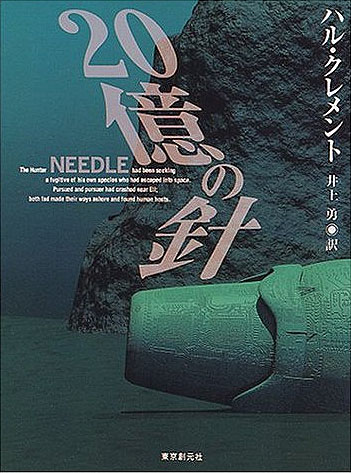

| [ハル・クレメント] ２０億の針 | |
| ハル・クレメント | |
| (2015) | |
|
２０億の針
ハル・クレメント
井上 勇 訳
|

１ 海の遭難
地球でさえも、影はしばしばかっこうの隠れ場所になる。もちろん影は、明るい周囲から浮かびあがって見えるが、外からあまり光が射しこまないと、いったんそのなかにはいりこめば、見つけるのがはなはだ困難になる。
地球の上空では、光を分散する空気がないので、影は、さらにつごうがいい。たとえば、地球自体の影は、百万マイル（約百六十万キロ）も長い円錐形の闇になって、太陽から反対の方向を指して伸びており、ぐるり一帯の暗さにまぎれてそれ自体は見えず、また、さらに完全な不可視性の要因をそれ自体がそなえている。──というのは、その円錐形のなかにはいりこんでくるあかりは、星の光と、地球を包む空気の薄い層から反射してくる、かすかな光線だけだからである。
〝捕り手〟は、どこかの惑星の影のなかにいることは、わかっていたが、地球のことはいままで聞いたことがなかった。惑星の影のなかにいることは、光線の速度以下にスピードを落とし、まっすぐ前方に緋色の縁をとった黒い円盤が見えたときから知っていた。それで、逃走ちゅうの船は探知機でしか弁別できないものと、頭からきめてかかっていたのが、とつぜん相手の船が肉眼で見えるのがわかったので、心のすみっこでちらついていたかすかな心配が、とたんに前面にとび出してきた。
〝捕り手〟は、脱走者がいったいなんで光の速度以下にスピードを落としたのか、わけがわからなかった。もしかすると、追っ手が追い越しすぎて、探知機の有効圏外に去ったというかすかな希望を持ったのかも知れない、と考えた。そうでないことがわかると、相手はふたたびスピードをあげるものと、〝捕り手〟は予期していた。ところが、そうはしないで、減速はつづいていた。逃げて行く船は、〝捕り手〟の船と、前方にぼんやり浮かびあがっている世界の中間を進みつづけており、あまり急激に追いつくのは危険だった。それで〝捕り手〟は、彼らがやってきた方向へ急旋回して、ふたたび逆戻りすることになるだろうと結論しかけたとき、まっ赤な閃光が肉眼に見え、相手が現実に大気のなかに突入したことを知った。その惑星は、〝捕り手〟が考えていたよりも小さくて、すぐ間近にあったのである。
その閃光を見ただけで、追っ手には充分だった。そこで、ジェネレーターの能力いっぱいのエルグをふりしぼって、とっさに惑星をそらそうとすると同時に、からだの残りの部分を管制室に伸ばし、急激な減速のショックから〝ペリット〟を守るためのゼラチン状クッションにしようとした。しかし、それだけでは足りないのが、すぐわかった。前方の野郎は、そのまま進めば、きっと目も当てられない大衝突をおこすにちがいないが、それでもかまわない、船と自身の運命を賭けるつもりなのかも知れないと、〝捕り手〟が思いついたとたんに、惑星を包む空気の外縁が、急降下飛行に抵抗力を加え、相手の船体の金属板が加熱されて、くるめくように輝くオレンジ色に変わった。
船は、円錐形の影のなかをまっすぐに急降下していたので、もちろん、惑星の夜の部分にぶっつかろうとしていた。いったん船体が冷却すると、逃走する船はまた見えなくなるだろう。そこで〝捕り手〟は、一所懸命に、目を探知機に釘づけにしていた。相手が機械の有効圏内にいるかぎり、どこにいるか、それによってわかるはずである。そして、彼がそうしていたのは、運がよかった。光り輝く円筒形はとつぜん視界から消えて、惑星の暗い表面を包む、広漠とした水蒸気の雲のなかに隠れてしまったからである。そのほんの一瞬後、〝捕り手〟の船も同じ雲の塊りのなかに突入し、それと同時に船体は、ひねられたようにかしいでゆらめき、それまでの直線減速降下は、気味の悪い錐揉み運動に変わった。パイロットは操縦板がひとつ吹っとんだのを知った。おそらく、加熱が不均衡なために、裂けてちぎれ飛んだのだろうが、なにしろどうするひまもなかった。そのとき、気がつくと相手の船は、煉瓦の壁にぶつかったように急停止した。それがまた動きだしたが、こんどははるかにゆっくりしていた。そして、〝捕り手〟は、垂直と思われるその同じ壁に、自分の船もまた、あと一秒間の余裕もなくぶっつかろうとしているのに気づいた。
まさに予想どおりだった。〝捕り手〟の船は、まだ激しい錐揉み状態をつづけていたが、〝捕り手〟は、最後の瞬間に残り全部の操縦板をとめ、船は水面にほとんど横倒しにぶっつかった。そして、その衝撃で船体は、巨人の足で踏みつけられた卵の殻のように、先端から末端まで両側がまっ二つに裂けて口をあけた。その激突で運動エネルギーは全部吸収されてしまったが、同時に運動がすっかりとまったわけではなかった。いまでは、比較的に緩慢に、落ち葉のような動きをつづけながら停止しようとしていた。そしてその数秒後、〝捕り手〟は、めちゃめちゃになった船体がついに停止したのは、湖か海の底にちがいないと感じた。
頭がしだいにはっきりしはじめると、〝捕り手〟は、きっと相手のホシも同じ災難に会ったに相違ないと考えた。相手の機械が急停止して、それからゆっくりと降下して行ったわけも、今では説明がついた。──たとえ水平でなく頭から突っこんだにしても、あのスピードで水面に激突すれば、その結果にたいしたちがいがあるはずはない。おそらく、〝捕り手〟の船ほどにひどい損害はうけなかったかも知れないが、ほとんど使いものにならないのは確かだった。
そんなことを考えているうちに、〝捕り手〟の思考の線は、当人自身の災難のほうへ引き戻された。そして、用心深くぐるりをさぐってみて、もはや自分は、管制室にすっぽりとおさまっているのではないことを発見した。──事実、からだの全体をすっぽりなかにおさめてくれる余地というものは、もはやなくなっていた。直径およそ二十インチ（約五十センチ）で、長さがほぼ二フィート（約六十センチ）の円筒形の部屋は、今では、かつて船体の殻だった一インチ厚みの金属板が二重になってひどくへちゃげて、そのあいだにできたたんなる空間にすぎないものになっていた。継ぎ目は、双方のがわとも裂けてしまっていた。というよりもむしろ、継ぎ目を作って、むりやりに引き裂いたといったほうが当たっていた。船体の外殻は、もともと一枚の金属板を管状にしたものだったからである。円筒の底と天井の部分は、ぺちゃんこになって、今では、そのあいだに、平均一インチくらいの隙間があるだけだった。部屋の両端の隔壁はめりこんで、割れ目ができていた。──あの強靭な合金までが、抵抗力に限界があったのだ。ペリットは、すっかり死んでいた。くずれかかった壁で押しつぶされた上に、銃弾が水を満たしたブリキ罐の壁に衝撃を伝えると同じに、〝捕り手〟自身のからだが、衝撃をペリットの個々の細胞に伝えたため、その内部器官のほとんど全部が破壊されてしまっていた。〝捕り手"は、そのことがしだいにわかってくると、小さな奴のぐるりやなかから、からだを引きぬいた。しかし、めちゃくちゃになった遺骸を、船から放りだそうとはしなかった。考えただけでも不快だったが、あとで食料として利用する必要があるかも知れなかったからである。〝捕り手〟のその動物にたいする感情は、どこか愛犬にたいする人間の感情に似ていたが、ペリットは、象が人間の命令どおりにその鼻を使うのとほとんど同じに、そのデリケートな手を〝捕り手〟の指図どおりに働かせることを覚えていて、どんな犬よりも役に立っていた。
〝捕り手〟は、さらに探索の範囲を少しひろげて、そのゼリーのような肉でできた、すんなりとした触手まがいのものを、船体の裂け目のひとつをくぐらせて外に伸ばした。こわれた船が塩水のなかに横たわっていることはすでに知っていたが、水深については、たいしたことはないということ以外に見当がつかなかった。彼自身の世界では、圧力によってかなり正確に水の深さを知ることができたが、圧力は、深さとともに問題の水の質量によりけりである。それに彼は、衝突の前に、この惑星の重力についての知識を持っていなかった。
船体のそとは暗かった。〝捕り手〟は、自分の組織で──ペリットの組織は破壊されてしまっていたので──目を作りあげ、周囲にはまったくなにひとつないことを見てとった。しかし、とつぜん、ぐるりの圧力が一定でないのに気づいた。なんだか規則的に、充分知覚できる程度に増減していた。そして、水が彼の敏感な肉に高周波の圧力を伝え、それは音響だろうと解釈した。そして、一所懸命に耳をすませて聞き入っていたが、やがて、自分は、何フィートもの波を起こすに充分なほど多量の水の表面に、かなり近いところにいるにちがいなく、相当に強烈な嵐が近づいているものと判断した。あの破局的な急降下の途中では、空中になんらの不穏状態も認めなかったが、それにはなんの意味もない──なにか、いちおうの空気の影響をうけるにしては、大気のなかにいた時間が短かすぎた。
別の触手まがいのもので、難破した船のぐるりの泥のなかをさぐってみてほっとしたことには、この惑星は無生物の世界ではないことを発見した。──そのことについては、すでにかなりの確信が持てた。あまり動きまわらないかぎり、彼の必要を満たすに充分な酸素が水中に溶解していた。したがって、水面上の大気には、豊富な酸素があるにちがいない。それにしても、たんなる可能性よりも、生きものがいるという現実の証拠があったほうがはるかによろしい。〝捕り手〟は、泥の中で、たくさんの小さな二枚貝の軟体動物を見つけ、ためしてみると充分食べられることがわかったので、ひどく満足だった。
惑星のそのほうのがわは夜なのがわかったので、〝捕り手〟は、それ以上の調査はもっと明るくなるまで延ばすことにして、こわれた船のほうへ、また注意を戻した。いくら調べたところで、なにか元気づけられるようなものが出てくるとは期待していなかったが、こわれかたがいかにも完全なのを知ると、なんだかこれでなにもかも終わったという、陰欝な気持ちがした。機関室の頑丈な金属部分は、うけた強圧で形が変わってしまっていた。それとほとんど劣らないくらい頑丈な主要推進機の変圧室は、ぺちゃんこになって、ひんまがっていた。石英で被覆したガス管の一部は、影も形もなくなっていた。衝撃によってこっぱみじんになり、海水で洗い流されたのは明らかだった。しっかりとした形を持ち、各部がいかに頑丈にできていて充分に保護されていようとも、あれほどの激突を生きて通り抜けるのは、とうてい望めないことだった。そう考えると、いくらかは慰めになった。充分ではなかったが、できるだけのことはペリットにしてやったのだ。
使えそうなものは、なにひとつ船に残っていないと納得できた〝捕り手〟は、さしあたり、もはやなにもすることはないと定めた。酸素の供給がもっとよくなるまで、ということは、大気のなかに出るまでは、実際の積極的な仕事はなにもできそうになかった。それに、あかりがないのもたいへんな障害だった。それで、〝捕り手〟は、こわれた船体のあぶなっかしい避難場所でひとくつろぎして、嵐が終わり夜が明けるのを待っていた。明るくなって海がおだやかになれば、助けはなくとも岸にたどりつけると考えた。潮騒いが、磯波であることを思わせ、浜がさほど遠くないのを暗示していた。
〝捕り手〟は、数時間もそこに横になっていた。いちどなど、自分はいつも同じ半球を太陽に向けている惑星にいるのかも知れないと、ふっと思ったが、もしそうだったら、その暗いがわの半球では、水は冷たくなりすぎて液体としては存在しないのがほとんど確実だと、思い当たった。嵐の雲が、夜明けの光をさえぎっているのだと考えるほうが、いっそう当たっているらしかった。
船は最終的に、沈泥のなかに落ちついてからは、ずっとその場所を動かないでいた。頭上のどよもしは、水底の潮流の動揺となって反映され、〝捕り手〟にもそれが感じられたが、なかば埋もれた金属の塊りを動かすことは、とうていできそうにもなかった。遭難者は、今では、船体がしっかりとその場所に固定されているものと確信していたので、その避難所が、とつぜん、なにかに猛烈な勢いでぶっつかったかのようにぐらぐらとゆらぎ、少しばかり位置を変えたときには、びっくり仰天してしまった。
〝捕り手〟は、さっそく探索の触手を船体のそとに突き出してみた。触手の先端に目を作っておいたが、闇がまだあまりにも深かったので、けっきょくまた触覚による調査にたよるだけにした。ひどくざらざらした皮膚が、金属の表をこすっているらしい震動が伝わってきていたが、いきなりなにか生きたものが、伸ばしている腕に食いこんだ。それは、彼のからだから突きでている付属器官をいきなり口でつかまえたところから見て、知覚を持っていることを実証しており、その口には、鋸状の歯があきれかえるほど整然とうまく生えそろっているらしかった。
〝捕り手〟は、当人としてはきわめて当たりまえの反応を示した。──つまり、その不快な突起物と直接接触している自分のからだの部分を、なかば液体状にやわらげ、それと同時に、さらにからだをふしぎな生きもののほうに突き出した腕のなかに送りこんだのである。〝捕り手〟は、なにごとにも決心のはやい生きものだった。そして、明らかに相手の闖入者の大きさから考えて、いくぶんか向こう見ずな行動をとるのもやむを得なかった。そこで、こわれた宇宙船からすっかり抜けだして、さらに利用価値がある乗りものであってほしいと望んだもののなかに、四ポンド（約一・八キログラム）のゼリー状の肉を全部送りこんだ。
サメは──八フィート（約二・四メートル）もあるシュモクザメだった──びっくりし、おそらくは腹をたてたのかも知れないが、この種族の常として、ものを恐れるだけの頭がなかった。その醜怪な顎は、最初はうまそうな固い肉と思われたものに、むさぼるようにかじりついたが、まるで水のように、あぎとのあいだをくぐりぬけてしまった。〝捕り手〟は、相手の歯を避けようともしなかった。その種の機械的な損傷はちっともこわくなかったが、すでに口中にある部分を飲みこもうとする魚の努力にたいしては、一所懸命に抵抗した。みずからを消化液にさらすつもりは、さらさらなかった。その皮膚は、そんなものの作用に、一時的にすら抵抗する力はなかったからである。
サメの動きが、ますます狂暴になってくるので、彼は触手まがいのものを伸ばして、醜怪なざらざらした膚の形をしたものをさぐり、まもなく、相手の首の双方のがわに、鰓の割れ目が五つあるのを見つけた。それで充分だった。それ以上調べることをやめて、長い経験から生まれた巧みさと、正確さをもって、ただちに行動した。
〝捕り手〟は、後生動物──つまり、鳥や人間と同じに、複細胞（多細胞）動物──だったが、外見的な一定の形態を欠いていた。しかしながら、そのからだの個々の細胞は、地球上の大部分のほかの生物の細胞とくらべてはるかに微小で、いちばん大きな蛋白分子くらいだった。みずからの組織でもって手足を作り、筋肉や知覚神経をそなえさせることができ、しかも、全体としての構造が実に繊細で、ありきたりの生物の毛孔を通して、たいして血行をさまたげることなく、その体内を調べることができた。だからして、比較的巨大なサメの体内にもぐりこむのは、困難でもなんでもなかった。
〝捕り手〟は、さしあたり、神経系や血管を避けて、みつかった筋肉や内臓の隙き間に流れこんだ。サメは、口のなかと体内にいるものが、そのちっぽけな脳髄に触知通信を送るのをやめるとすぐ、おとなしくなってしまった。サメの記憶力は、事実上ないも同然だった。しかし、〝捕り手〟からいえば、うまく潜入したことは、複雑な活動期の開幕にほかならなかった。
まず、いちばん重要なのは酸素だった。サメの肉体細胞の表面に吸収されているその貴重な元素は、せいぜい数分間の生命を保つに足りるだけだったが、相手の生物もまた酸素を消費するので、そのからだから、いつだって必要な量を摂取できた。〝捕り手〟はさっそく、その超顕微鏡的屈伸器官を、血管の壁を構成している細胞のあいだに送りこみ、血液細胞から貴重な成分を盗みとる仕事をはじめた。この生物は、ほんの少しの酸素しか必要とせず、その生まれ故郷の世界では、知能のある酸素呼吸生物の体内に宿を借り、相手にそれとよく知らせ、その同意のもとに何年間もこのようにして生きていたのである。そして相手は、宿を貸した償い以上のものを受けとった。
酸素の次に必要なのは、視覚だった。宿主は目を持っていると推定されたので、〝捕り手〟は、酸素の供給が確保されると、その目を捜しにかかった。むろん、自分自身のからだを伸ばして、サメの皮膚の外に突き出し視覚器官を作ることもできたが、そんな行為をすると、宿主の安静を乱すことを避け得ないかも知れなかった。それに、自分で作った目よりも、既成品のレンズのほうが、概して優秀だった。
〝捕り手〟の捜査は、たいしてはかどらないうちに、じゃまされてしまった。その推定によると、墜落は、どちらかというと陸地の間近だったのである。サメとのめぐり会いは、かなり水深の浅い場所で起こったのだった。サメという奴は、騒々しさがかくべつ好きな動物ではない。なぜこやつが、磯のこんな近くまでやってきたのか、よくわからなかった。この怪物は、〝捕り手〟と取っ組み合いをしているうちに、なかばは波におし流され、なかばは泳いで浜辺近くまで来てしまったのである。そして、もはや、闖入者のほうへ気を取られる必要がなくなると、サメは、水の深いほうへ引き返そうとした。そして、酸素泥棒の組織ができあがったあとになって、サメが、ひきつづいて狂気のようにあばれまわり、そのためにいろんなできごとが起こりだしたのが、異質体の注意をひきつけた。
魚の呼吸組織は、かなり不利な条件のもとで働かねばならない。水に溶解した酸素は、決して密度がそれほど高くなく、水中で呼吸する生物は、どんなに強力で活動的だろうと、酸素の貯蔵量は実際には決してそれほど多くない。〝捕り手〟は、生きて行くためには、たいした量の酸素を取りあげる必要はなかったが、同時に自分自身のための貯蔵量を増そうとしていた。そこへもってきて、サメは、最大限のエネルギーを出して奮闘していたので、その結果酸素の消費量が、取り入れの量を超過することになった。そのあげくは、いうまでもなくふたつの影響を生じた。怪物の体力が衰退し、一方血液ちゅうの酸素含有量が減りだしたのである。血液ちゅうの酸素が減ったために、〝捕り手〟は、ほとんど無意識に吸い上げ量を増加し、そこに悪循環がはじまって、行きつく先はひとつしかないことになった。
〝捕り手〟は、サメが現実に死んでしまうずっと前に、なにが起ころうとしているかを悟ったが、それについては、なにも手を打たなかった。自分が現実に死ぬことなく、酸素の消費量を減らすことができたにもかかわらずである。〝捕り手〟は、サメの体内から出て行こうと思えば、そうすることもできたが、だだっぴろい海のなかを、ほとんどどうすることもできないで漂流するにまかせ、自分を丸飲みにできるほど大きなすばやい生物に、ゆきあたりばったりやっつけられる危険をおかすつもりにはなれなかった。それで、踏みとどまって、生命の泉のガスを吸いつづけていた。そして、魚がこれほど奮闘しているからには、波と戦っているのに相違ない──自分がたどりつきたい浜から、自分を遠くへ運び去るために奮闘しているのだと、悟った。今では彼は、サメが、生物の進化の過程で、どれくらいな段階に位置するかを完全に推定していて、それを殺すことについて、人類が持つ以上の悔恨は持たなかった。
怪物は、死ぬにはずいぶん長い時間がかかったが、まったく無力になるのは、かなりはやかった。相手がもがくのをやめると、〝捕り手〟は、また目の捜査をつづけ、やがてそれを見つけた。そこで、ものを見るに充分な光が現われるときにそなえて、サメの網膜細胞のあいだやぐるりに、自分自身のフィルムを貼りつけた。それから、いまでは静かになったサメが、ともすれば沈下しようとする、困った傾向を示しだしたので、異質体は、別の付属器官を伸ばして、嵐がそば近く持ってきたとおぼしい気泡を手当たりしだい捕えはじめた。それと、自分白身が作りだす二酸化炭素をいっしょにして、少しずつ魚の腹腔内に集め、浮上性を与えることにした。そのために要するガスは、きわめて少量だったが、集めるにはずいぶん長い時間がかかった。当の本人がごく小さかったので、そうそう迅速に、大量の二酸化炭素を作りだせなかったからである。
そのころになると、くだけ波は、今までよりもはるかに高くひびき渡って、彼の注意を仕事からひきはなすほどになり、岸辺に向かって漂流しているのだという推定が当たっていたのがわかった。波は、その一風変わった筏を、むかむかしてくるほど上下にゆりうごかしていたが、それは、彼にとっては、べつにじゃまにはならないまでも、愉快とはいえなかった。波は、彼が望んだとおりに水平運動をしていて、水がかなり浅くなるまで比較的に緩慢だった。
〝捕り手〟は、乗りものが動くのをやめたあとも、いまにまた浮かびあがって、深い水のほうへひき戻されるのではないかと予期しながら、長いあいだ待っていたが、なにごとも起こらず、波の音はしだいに少しずつ静かになって、落ちかかるしぶきも減っていった。〝捕り手〟は、嵐がおさまろうとしているのだろうと考えた。実際は潮の向きが変わったのだったが、彼に関するかぎり、結果はどちらでも同じことだった。
そのころになると、夜明けが近づくとともに嵐雲も薄くなって、あたりが充分見えるだけの明るさになり、宿主は、どんなに高い波も届かない場所に打ちあげられているのがわかった。サメの目は、いったん水から出ると綱膜に焦点を結べそうもなかったが、〝捕り手〟は、眼球の内部に新しい焦点面があるのを見つけて、自分の網膜を適当な場所に作りあげた。レンズもまた、ほとんど完全なのがわかったが、〝捕り手〟は、自分のからだの実質をいくぶんか使って屈曲率を修正し、けっきょく、自分のからだをほかのものの目にさらさないでも、あたりが見られるようにした。
いまでは嵐雲に切れ間ができ、それを通して、近づく曙の灰色を背景に、いくつかのいちばん明るい星がまだ見えていた。しだいにその雲の隙き間は大きくひろがり、太陽があがったころには、空はほとんど晴れあがっていたが、風はまだ激しく吹いていた。
地の利は、理想的とはいえなかったが、〝捕り手〟は、充分あたりのようすを見きわめることができた。片方の方角に広がっている浜は、少し先で、てっぺんに軽やかに茂る葉の冠をいただいた、高いすんなりとした立木の列に行き当たっていた。彼の観察地点は低すぎて、その先は見えなかったが、立木は、見通しがきかないほどぎっしりとはたてこんでいなかった。その反対の方角は、さらにたくさんの漂流物が散乱した砂浜で、その向こうから、まだ荒れるくだけ波のとどろきが聞こえていた。〝捕り手〟には、現実の大洋は見えなかったが、大洋がある方角は明白だった。右手に水のひろがりがあり、嵐によって満水した小さな水溜りにちがいないと判断された。いまでは水は、磯波がはいりこむには小さすぎるか、または、高すぎるらしい口を通って、海に向かってひいていた。サメが迷いこんだのは、要するにおそらくは、その口があったのが唯一の理由らしく──波によってプールのなかに押しこまれ、潮がひいて、あとにとり残されたのである。
〝捕り手〟は、なんどか、しゃがれたようなかん高い声をきき、頭上を鳥が飛ぶのを見た。それがひどく彼の気に入った。確かにこの惑星には、魚よりもっと高度の形態の生きものがおり、もっと好適な宿主を見つけ得る望みがいくらかある。知能のある奴がいちばんいい。知能のある生物は、いちばんよく、自分を守ることができるからである。それにまた、さらに広く旅行するだろうし、そうすれば、いまから必要とする、いまひとつの船のパイロットを捜すのにつごうがいい。しかしながら、共棲という観念になじんでいない知能を持った生物のからだにはいりこむのは、おそらくは、たいへんにむずかしいかも知れないことも〝捕り手〟はよく知っていた。
しかし、それにしても、機会を待たねばならなかった。この惑星に知性がある生物がいるにしても、この地点には決して来ないかも知れない。来たとしても、それがなにものか、彼にはさっそくには認知できず、この状況を脱却する役にたてようにも、間に合わないかも知れない。必要ならば、数日かかっても待つことにして、この場所に、どんな形態の生物がいちばんしばしばやってくるか、観察するのが最善の方法だろう。そのあとで、自分の必要にいちばんよくかなった奴に、潜入する計画をたてることができる。時間は、おそらくそれほど重要ではないだろう。相手のホシも、〝捕り手〟と同様、この惑星を脱出できないのは、これ以上確かなことはない。相手がこの惑星にとどまっているとすれば、捜査は必ずや長くかかり、根気仕事になろう。慎重な準備に要する時間は、あとできっとその償いをしてくれるだろう。
そういうわけで、〝捕り手〟は、待っていた。そのうちに太陽はさらに高くなり、風はしだいに落ちてそよ風になった。そして、かなり暖かくなってきた。そして〝捕り手〟は、サメの肉が化学的変化を起こしているのに、ずっとまえから気づいていた。その変化は、もしも嗅覚がこの世界の多くの生物に共通なものだとすれば、きっとまもなく、訪問者をひきつけないではおかないような種類のものだった。〝捕り手〟は、その変化を起こすバクテリアを食ってしまうという簡単な方法で、腐敗の進行をとめることができたが、別に腹もすいていず、訪問者を避ける理由はむろんなかった。話は、まるで逆だった。
２ 隠 れ 家
最初の訪問者は、カモメだった。カモメは、姿と匂いにひきよせられて、次から次へと舞いおりて来て、サメの残骸を引き裂きはじめた。〝捕り手〟は、魚のからだの下方の部分にひっこんでいて、カモメたちが、大きな魚の目におそいかかり、たちまちのうちに彼の視覚による外界との接触を断ち切ったときでさえ、それを追い払おうとはしなかった。ほかの形態の生物がやってくれば、いずれにせよ彼はそれと知ることができよう。来ないなら、カモメでもそばにいてくれたほうがいい。
貪欲な鳥どもは、午後のなかばまで、だれじゃまするものもなく、そこに踏みとどまっていた。サメのしまつをつける仕事は、たいしてはかどらなかった。──たいていの個所では、固い皮膚が嘴をうけつけなかった。しかし、カモメたちは、あくまでがんばっていた。そして、とつぜん彼らが一団になって飛び立ち逃げて行ったとき、〝捕り手〟には、近くでなにか興味のあろことが起こったにちがいないのが、はっきりとわかった。そこで、大急ぎで、鰓の割れ目のひとつから、ころあいの組織を外に突き出して目を作り、用心しながらあたりを眺めまわした。
カモメがなぜ飛び去ったか、そのわけはすぐわかった。木立の方角から、はるかに大きな生物がいくつかこちらに向かってきていた。それらの生物は二本足で、〝捕り手〟は、長い習練の結果、そのいちばん大きい奴は、百二十ポンド（約五十五キログラム）はたっぷりあると、容易に見当をつけた。ということは、その大きさの空気呼吸生物だったら、彼自身の体積と酸素消費量が加わったところで、たいした負担にはなりそうもないことを意味する。彼のほうにもっと近い場所を、さらに小さな四つ足の生物が、死んだサメに向かって急速に走りよりながら、見たところいつはてるとも知れない、鋭い吠えるような興奮した叫び声を立てていた。〝捕り手〟は、そやつを、五十ポンド（約二十三キログラム）くらいと目安をつけ、将来利用するために、その知識を記憶にとどめておいた。
四つの二本足も、また走っていたが、小さな動物ほどはやいとは、義理にもいえなかった。彼らが近づいてくると、隠れている観察者は慎重に相手かたを検討し、見れば見るほど気に入ってきた。その連中は、かなりのスピードで動きまわることができ、頭蓋の大きさから察して、この種族がそのなかに脳髄を貯えていると推定してまちがいないとすれば、相当な知性を持っているのは確かだった。皮膚はほとんどまったく保護されていないようで、毛孔をくぐって容易にもぐりこめる可能性があった。やがて、彼らは歩をゆるめ、シュモクザメの死骸のそばで立ちどまった。疑いもなく、言語にちがいない、抑揚のついた音をだし合っているのもまた、知性があるいまひとつの証拠だった。〝捕り手〟は、ひかえ目にいっても、うれしかったといわざるを得なかった。こんな理想的な宿主が、こんなにはやく現われようとは、夢にも期待していなかった。
もちろん、解決しなくてはならぬ、いろいろな問題がまだあった。この生物たちが、少なくとも〝捕り手〟の種族が実行しているような共棲の観念に馴れていないのは、太鼓判をおしてもよかった。異質体はまた、こんな種族の仲間を、いままで一度も見たことがないのは確かで、彼の種族が、ふつうつき合っている種族だったらすべて、彼はよく知っているのも、これまた確かだった。したがって、この連中は、異質体が近づいて来るのを見つけたら、接触を避けるために、なにやかやと手を打ってくるのはほとんど確実で、よしんばそれが失敗に終わっても、〝捕り手〟がむりやり連中のなかにもぐりこむと、将来の協力はとうてい得られそうもない態度をとるようになるだろう。だから、ここは、巧妙にたちまわらなくてはなるまい。
四つの二本足は、立ちどまってサメを見おろしながら、ほんの数分間しゃべり合っていたが、やがてまた歩きだし、すぐ近くの浜辺のほうへ行った。〝捕り手〟は、彼らがその場所を不愉快だと考えたらしいことを、なにがなし、ぼんやりとその態度から感じた。四つ足は、なおしばらく居残って、サメの遺骸をしさいに調べていたが、その動作をうかがっていた、なにしろ変な場所についている目には、どうやら気がつかなかったらしかった。けっきょく、ほかの連中のひとりが呼びたてたので、四つ足はやっとそのほうへ注意を向け、〝捕り手〟が見守っていると、やがて、ほかの連中が行った方角へ、とんで行ってしまった。〝捕り手〟がいささかびっくりしたことには、彼らは、水の中にはいって、たいへん楽々と泳ぎまわっていた。そこで、〝捕り手〟は、さらにひとつ自分に有利な点があることに気づいた。連中のからだは、かなり綿密に観察しておいたが、鰓のようなものは、どこにも見えなかった。空気呼吸生物として、彼らは、酸素吸入能力と現実の必要量のあいだに、相当のひらきがあるにちがいなかった。〝捕り手〟が見たその仲間のひとりは、かなり長いあいだ、水中にもぐっていることができたからである。それからさらにまた、別の利点があるのがわかった。水中だったら、おそらくはるかに容易に、連中に近づくことができるだろう。
その振舞いから見て、彼らは、水の底では全然目が見えないというのではないにしても、あまりよくは見えないのが明らかだった。──どれもこれも同じように、頭を水面にもたげては、自分の居場所を確かめていた。しかも、それをかなりたびたびくりかえしていた。四つ足に至っては、はじめから終わりまで、頭を水上に出しっぱなしにしているところから見て、〝捕り手〟が近づいても、それを見つける機会はさらに少ないように思えた。
〝捕り手〟は、そう考えると、すぐ行動に移った。糸のような触手まがいのものが、砂の底を、一インチか二インチ刻みに急速に水溜りのほうへ手さぐりして行った。目は、ゼリーのようなからだが、水までの四ヤードの距離をほとんど渡りきるまで、働かせておいた。それから、水ぎわで、さらに別の目をひとつ作り、〝捕り手〟は、からだの残りの部分をひきよせて、水ぎわのすぐ下にしっかりとした塊りをこさえた。その作業には、数分間かかった。砂粒のなかをのたくるのは、厄介な手間のかかる進行方法である。
水はかなりよく澄んでいたので、忍びよる見当をつけるのに、目を水面に出している必要はなかった。ゼリー状のからだは、たちまち、先端に目をつけた細長い魚の形に変わった。そして、〝捕り手〟は、精いっぱいはやく、少年たちのほうへ泳いで行った。ある意味では、水の底のほうが実際ものを見やすいとさえ、〝捕り手〟は考えた。自分の肉で作った薄皮で空気を包み、凹レンズの形にして使うと、肉のみで作った視覚器官よりも、はるかに鮮明だった。
〝捕り手〟は、近づいても気づかれることはあるまい、接触作用は、渦を巻く水や相手の友だちの動きで──彼らは、泳いだり、もぐったりして、かなり乱暴な行為に夢中になっていた──ごまかせるだろうと望みをかけ、少年たちのひとりをめがけて、まっすぐに泳ぎつくつもりだった。しかし、それらの連中のひとりと接触できるのは、ただ僥倖によるだけだということが、たちまち明白になった。少年たちは、彼よりも、はるかにはやく泳いでいたからである。それがわかると、〝捕り手〟は、こっそりと近づく、また別のすばらしい方法と思えるものを見つけた。ふと気がつくと、かたわらを、大きなクラゲが一匹、その種族特有のやりかたで、なんの目当てもないらしく、ゆうゆうとただよっていたのである。そのほうに注意をひかされて眺めまわすと、あたりには、相当な数の同じしろものがいた。明らかに、二本足たちは、彼らを危険とは思っていないらしかった。でないと、ここで泳いだりはしないだろう。
そこで、〝捕り手〟は、形と移動方法を変えて、クラゲと一致させ、少年たちが遊んでいる場所のほうに、さらにゆっくりと近づいて行った。その色は、ほかのクラゲのどれとも少しちがっていたが、クラゲ自体、その仲間のあいだでそれぞれ色がちがっていたので、〝捕り手〟は、クラゲ仲間では、色合いよりも形のほうがもっと重要な基準になっているのにちがいないと感じた。その見当は当たっていたらしく、どうやらなんの恐慌もひきおこすことなく、二本足のひとりの、ほとんどすぐ間ぢかまで行くことができた。双方は、いっときかなり近接し、〝捕り手〟は、これなら接触できると、大いに望みをかけた。──事実、用心しながら触手を伸ばして接触することはしたが、相手の接触した部分を蔽っている雑色の外皮は、人工的製品であることを発見しただけだった。──それ以上なにもできないうちに、彼の調査対象はするりとわきにそれて、数フィートも先のほうへ移ってしまった。しかし、相手は別に狼狽したようすも見せなかったので、〝捕り手〟は、また試みた。接近は、まったく同じ結果に終わった。ただこんどは、前回ほど近づけなかっただけだった。
〝捕り手〟は、かわるがわる、ほかの少年たち全部をためしてみたが、困ったことには、どれも同じく成功の一歩手前でしくじった。そして、どうもチャンスの一般原則の限界を越えるように思われる、その現象に戸惑った〝捕り手〟は、そこで、少し遠くはなれて監視しながら、その理由を見つけようとした。五分とたたないうちにそれと悟ったのは、この生物たちは、実際はクラゲを少しもおそれてはいないが、つとめて肉体的な接触を避けようとしていることだった。運の悪い仮装を選んだわけだった。
ロバート・キンネアドは、ほとんど無意識にクラゲを避けていた。泳ぐことを覚えたのは五歳のときで、その年も、そのあとにつづいた九年間も、毎年いやというほど、クラゲの触手に刺される痛い思いを身をもって経験したので、その仲間とのつき合いを避ける手ぎわは確かなものだった。〝捕り手〟が、最初に触れたときは、彼は、仲間のひとりを水のなかに押しこもうとして、そのほうにすっかり気をとられていた。そして、すぐそばの水中にゼリー状の塊りがいるのに気がつくと、大急ぎでひらりと身をかわしたが、実際はクラゲのことなど深く考えてはいなかった。──考えたとしても、刺されないで運がよかったと、ほんの瞬間思っただけだった。そして、すぐそのできごとは忘れてしまったが、それによって呼びさまされた注意力は、ふたたびそんなしろものが、それほど近くまで近づくのを防止するには充分だった。
〝捕り手〟が、どんな見当ちがいをしていたか悟ったころには、少年たちは、泳ぐのに飽きて、浜辺にひきあげていた。〝捕り手〟は、少年たちが行ってしまうのを見守りながら、いよいよ当惑して、なおも彼らが砂の上で、なにがなにやらわからない遊戯をして走りまわっているのを、じっと監視していた。いったい、あの気違いどもは、静かにしているということはないのだろうか。銀河系のなかで、こんなとほうもない活気横溢の生物にでくわすなんて、あきれてものもいえない。彼にできるのは、ただ見守って、考えこんでいることだけだった。
浜辺では、日に焼けて褐色になった皮膚の上の塩水が乾くと、少年たちは、やっとおとなしくなりはじめ、島の中心と連中のあいだにたちふさがる、ココナッツ椰子の木立のほうに、なにか待ちうけるような、まなざしを投げていた。ひとりの少年が、大洋に向かって腰をおろし、とつぜん口をきいた。
「バブ、きみのうちのひとは、いつ弁当を持ってくるんだい」
ロバート・キンネアドは、答えるまえに、まず、太陽光線のなかにうつ伏せに寝ころんだ。
「四時半ごろだって、おふくろはいってた。きみったら、食うことのほか、なんにも考えないのか」
赤毛の質問者は、口のなかで、もぐもぐとなにか意味をなさない返事をして、仰向けに長まり、いまでは雲ひとつない青い空を見つめていた。いまひとりの少年が、会話のあとをひきうけた。
「残念だな。きみがあすは行ってしまうなんて。ぼくも、なんだか、きみといっしょに行きたいなあ。うちの連中がここへきてから、ぼくは一度もステーツ（アメリカ合衆国）へ行ったことがない。そのころ、ぼくはまだ子供だったんだ」その少年は静かにつけ加えていった。
「そんなに、悪かないよ」 バブは、ゆっくりと答えた。「学校にはいい奴が大勢いて、冬になると、ここにはないスケートやスキーがある。だがいずれにせよ、ぼくは次の夏には帰ってくる」
それから話はとだえ、少年たちは、暑い陽光のなかで日なたぼっこをしながら、ミセス・キンネアドと、お別れピクニックの弁当がくるのを待っていた。バブがいちばん水ぎわに近く、陽の光をまっこうから浴びて、長まっていた。ほかの少年たちは、たいして役にたたない椰子の木かげをさがしに行った。バブは、すでに充分日に焼けていたが、あと十ヵ月お目にかかれない熱帯の太陽の最後の恵みを、できるだけ受けたいと望んだ。暑かったし、たった今三十分も元気いっぱいに活躍したあとだったので、彼の目を覚まさせておくものは、まったくなにもなかった......。
〝捕り手〟は、いまではさらに熱心に、いまだに監視をつづけていた。これで実際、うろちょろ族たちは、ついに落ちついたのだろうか。四つの二足類は、思うに、それが彼らにとっては楽なのであろうが、いろんなかっこうで砂の上にねそべっていた。いまひとつの動物は、ひとつの二足類のかたわらに落ちついて、頭を相手の脚の上にのっけていた。そのころまで、ほとんど絶え間なくつづいていた会話は、やんでしまって、無定形の監視者は、一か八か、思い切ってやってみる決心をした。そこで、大急ぎでプールの水ぎわに移動した。
いちばん近い少年は、水ぎわから十ヤードばかりはなれていた。現在の〝捕り手〟の位置からは、見張りをつづけながら、同時に、砂の中をもぐって行き、宿主にするつもりでいる、今は身動きもしない少年のからだの下まで、自分自身のからだを伸ばすことは、不可能だった。それに、ほかの連中から目をはなさないようにしなくてはならない。もう一度、変装の必要があるように思われ、もう一度、そこいらじゅうにいるクラゲが、どうやら、その必要を満たしてくれそうだった。無数のクラゲが、砂の上に、動きもしないでころがっていた。ゆっくりと動いて、クラゲの形を真似ていれば、たぶん地底攻撃ができるくらいの近距離にたどりつくまで、気づかれないですむはずだ。生きものたちは、〝捕り手〟が通る道のほうに顔を向けているものは、ひとつもいず、すっかり眠ってはいないにしても、ほとんど眠っていると同じだったので、あまり用心しなくてもよかったかも知れないが、用心するに越したことはなかった。〝捕り手〟は、水ぎわから、ロバート・キンネアドに、あと三ヤードくらいの距離まで近づくのに、二十分もかかったことを後悔はしなかった。むろん、気が気ではなかった。その皮膚のないからだは、姿を借りているクラゲほどにも、暑い太陽光線にたいする抵抗力がなかったからである。しかし、〝捕り手〟は、どうにか耐えぬいて、やがて、いままでの経験から、これくらい近いと充分だと思われ
る地点まで達した。
そのとき、少年から二、三フィートの場所に、明らかに、もはや動きのとれなくなった、大きなクラゲがころがっているのを、誰かが見守っていたら、そのクラゲの大きさが、じつに変なちぢこまりかたをするのに気がついただろう。収縮すること自体は、別に驚くに当たらない──暑い海岸にうちあげられたクラゲが、当然たどるべき運命である。しかし、もっと正統派のクラゲ族の仲間だったら、単なるクモの巣のような残骸になるまで、痩せ細ってゆくだけである。ところが、この特別の品種は、厚さが減るだけでなく、直径までがちぢこまっていった。そして、あとには、なにも残っていなかった。もちろん、すっかり完全に消えてしまうまでは、その中央に、奇妙な、小さな塊りがあって、ぐるりのからだが消えて行くのに、その大きさも形も、そのままを保っていた。しかし、最後には、その塊りもまた消えて、あとには、砂のなかの浅いくぼみのほか、なにも残らなかった。──そのくぼみは、注意深い観察者だったら、水ぎわから、ずっとその地点までつづいているのに、気づいただろう。
〝捕り手〟は、地底捜索のあいだ、ほとんど、ずっとつづけて、その目を使っていた。その探索器官は、ついに、ふつうの場所よりも、砂がいっそう密着している地点をさぐり当てた。それからは、たいへんに用心して進み、とうとう、まぎれもなく生きた肉体にちがいないものを、ぶちあてた。ロバートは、胃袋を下にして、ねそべっていたので、足指が砂のなかに埋れていた。それで、〝捕り手〟は、姿を地面にまったく現わさないでも、仕事ができるのを知った。そのことが確認できると、目を解体して、からだの最後の部分を、砂の下にひきこみ、見えないようにした。──太陽の光線から遮断されたときは、まったくほっとした。
〝捕り手〟は、からだの全体が砂中にひきこまれ、なかば埋れた足先のまわりに、まつわりつくまで、侵入しようとは試みなかった。それから、できるだけ用心しながら、下脚にからみつき、数平方インチの広さの皮膚と接触した。それから、そのときはじめて、潜入を開始し、超顕微鏡的な肉細胞を、毛孔を通して、足の爪の下の皮膚細胞のあいだに──彼の考えかたによれば、まったくおかしいほどお粗末な組織のなかに、──無防備のまま放任されている、何百という隙き間に滑りこませた。
少年は、ぐっすり眠っていて、いつまでも眠りつづけていた。しかし、〝捕り手〟は、できるだけ迅速に仕事をした。一部分しか、内部にはいりこんでいないとき、足が動かされると、ひどく厄介なことになるからである。それで、一方では極度の警戒をしながらも、能うかぎりすばやく、異質体の組織は、足やくるぶしの骨と腱に沿って、するすると流れこんで行った。それから、ふくらはぎと腿の筋肉層のなかを通って、腿の動脈の外壁に沿ってのぼり、大腿骨の組織内の細管を通りぬけて、関節をまわり、さらにまた、他の血管を通り抜けて行った。そして、なんの感覚も損害も与えないで、腹膜をくぐりぬけ、最後に、この地球のものでない、四ポンド（約一・八キログラム）の生命体の全部が、腹腔内にひとまとめに集まったが、少年には、ちっとも損傷を与えなかったばかりでなく、そのまどろみすら乱さなかった。そこで、〝捕り手〟は、ひと休みすることにした。
彼は、そのころには、水の中よりも、むしろ、空気のなかを長く通ってきたので、さらに多量の酸素貯蔵量を持っていた。しばらくは、宿主からこのうえ酸素の供給を仰ぐ必要はないだろう。できることなら、まる一日、いまいる場所に、そのままとどまっていたかった。そうできれば、彼が今までに知っていた、どんな宿主ともちがった働きをするにちがいない、この宿主の生埋学的作用の経過を観察し、記憶することができる。もちろん、そのときは、宿主は眠っていたが、おそらく、そう長くは眠っていないだろう。この連中は、かなり活動的のように思われた。
バブは、ほかの少年たちと同じように、母親の声のひびきで目を覚ました。母親は、そっとやってきて、声をかけるまえに、木陰に毛布をひろげ、食べものの用意をしたのだった。その最初の言葉は、昔ながらの〝さあ、さあ、来て、お食べ〟だった。彼女は居残って、少年たちの食事の世話はしなかったが、少年たちに、親身に、まじめくさって、しきりに食べるようにすすめ、椰子の木立を抜けて、家のほうへ通じる道を帰って行った。
「日暮れまでには、帰ってくるんですよ」 母親は、木立のところまで行くと、ふりかえって、肩越しに、バブに呼びかけた。「まだ、荷作りをしなくちゃならないし、あしたは、はやく起きなくちゃいけないんだから」バブは、口いっぱいに頬ばったまま、うなずいて見せ、また、食べものがのっかっている毛布のほうに向き直った。
食べものの始末がつくと、少年たちはすわって、おしゃべりをし、食後のきまりの午睡をした。それからまた、海にはいって、またもや乱暴な遊戯にふけっていた。そして、ようやく急激に落ちてくる熱帯の夜が、間もなくやってくると知ると、彼らは毛布をとりまとめて、道路のほうへ、めいめいの住居のほうへ向かって出発した。おとなだったら、感動的に、または、気をくばって、さりげなくあしらう情況に当面した少年たちは、その年ごろとしては当然な気づまりからして、今では口数も少なく、黙りこんでいた。それぞれの住居のまえでの別れのあいさつも短く、〝できるだけはやく手紙を出す〟ことが、くりかえし、おたがいに約束された。
バブは、最後には、ひとりきりになって、家路をたどりながら、こうした場合に結びついて起こる名残りおしさと、楽しい期待の混ざり合った気持ちを味わっていた。やがて、家に帰りついたころには、楽しい期待の感情のほうがふくれあがって、もうふた月以上も会っていない学校友だちとまた会える楽しみが、ひどく待ち遠しくなっていた。そして、家のなかにはいるときには、愉快そうに口笛を吹いていた。
荷作りは、上手な母親が手伝ってくれて、たちまちのうちにすみ、九時ごろには、バブは、もう寝床にはいって、眠っていた。当人は、その時間に眠るのは、まだはやいと思ったが、いつごろだったか、もっと幼いころから、服従の価値というものを知るようになっていた。
〝捕り手〟は、その希望どおり、何時間か、静かにしていることができた。──実際、バブが眠ってからずっと後までも。しかし、それは、丸々いちにちはつづかなかった。どんなに静かにしていても、生きているということ自体が、いくぶんかはエネルギーを消耗し、したがって、酸素をいくぶんか消費するからである。〝捕り手〟は、やがて、貯蔵量が減ったのを知ると、必要が絶体絶命的になるまえに、補給をつけておかなくてはならないことがわかった。
もちろん、宿主が眠っているのはわかっていたが、だからといって、警戒を怠っていいということにはならなかった。彼は、ちょうど自分のまうえで、鼓動しているのが感じられる心臓を、少しでもじゃましたくなかったので、しばらく横隔膜の下に、じっとしていた。でも、腹部の大動脈は、苦もなく見つかり、そのなかにもぐりこむのはなんの抵抗もなく、その点、今まで彼がためした、人間の組織の他のいずれの部分とも、かわったところはなかった。そして、たいへん満足だったのは、血管を通過する酸素の量を、たいして減らさないでも、必要を満たすに足りるだけの酸素を赤血球から（といっても、彼は、まだその細胞を見たことはなかったので、色のことは考えていなかった）ひきだせたことだった。〝捕り手〟は、その事実を、しかと心に留めおいた。現在の探索に当たっての、彼の全体としての態度は、サメの体内にいたとき、その行動を支配していたものとは、まったくちがっていた。地球にとどまっているあいだは、ロバートを日常の仲間として見るようになっていたし、その行動は、ほとんど、本能に近いものになるほど古くて、厳格な彼の種族の掟によって支配されていたからである。
おまえの宿主を傷つけるようなことは、絶対にしてはならない。
３ 当てはずれ
おまえの宿主を傷つけるようなことは、絶対にしてはならない。〝捕り手〟の種族の大部分のものには、その掟を破りたいという欲求すら存在しなかった。彼らのからだをかくまってくれる生物たちとは、このうえない暖かい友情で結ばれて生きていたからである。その例外であることがわかった、きわめて少数の個体は、同族から、激しい恐怖心と嫌悪感をもって眺められていた。地球に衝突したとき、〝捕り手〟が追跡していたのは、そういった部類の奴のひとつだった。そして、そやつを、今からまだ、見つけねばならなかった。ただ、その無責任な奴の侵害から、同族を守ることさえできれば、あとは、どうなってもかまわない。
おまえの宿主を傷つけるようなことは、絶対にしてはならない。〝捕り手〟がはいりこんでから、少年の健康な血液のなかの白血球の大群は活気を呈していた。〝捕り手〟は、それまで、白血球と、とりかえしのつかないような重大な接触をすることを、極力避けて、血管の内部に立ち入らないようにしていたが、淋巴腺や、それに接続した組織のなかには、かなりの数の白血球が、自由にさまよい歩いていて、厄介だった。彼のからだの細胞は、当然のことながら、白血球の吸収力にたいして免疫性を持たなかった。ただ、しょっちゅう逃げまわって、自分自身が重大な損傷をうけないようにできるだけだった。そして、それを、いつまでもは、つづけられないのを知っていた。たとえば、彼は、ときどき、別の問題に注意を向けねばならなかった。また、このような、相互の誤解がつづいて、〝捕り手〟が、やむを得ず、回避運動を強化するか、逆襲の挙にでるようになった場合は、白血球の数の増加を意味し、おそらく、宿主を、なにかの病気にするかも知れなかった。したがって、白血球をなだめる必要があった。彼の種族は、むろん、この問題を解決するための一般的な技術をずっとまえから案出していたが、個々の場合──とくに馴染みのない相手の場合は、まだ警戒しなくてはならなかった。実行できるかぎり最大限のスピードでもって、試行錯誤方式を実施することによって、〝捕り手〟は、白血球が、人間の肉体の正統な要員でない、侵入した有機体をどうやって弁別するのか、その化学的な手がかりの性質を見きわめた。長い、さらに極度の慎重な努力のあと、〝捕り手〟は、その細胞のひとつひとつを、宿主の血流中の適当な化学質の本源にさらした。望んだ物質のわずかばかりの微分子が、それぞれの細胞の表面に吸収され、ほっとしたことには、それだけのことで充分だとわかった。白血球は、じゃまをすることをやめ、その触手まがいのものの探索のかよい路として、いっそう大きな血管を、自由に使えるようになった。
おまえの宿主を傷つけるようなことは、絶対にしてはならない。〝捕り手〟は食べものと同じに、酸素を必要とした。そして、ぐるりのどんな形態の組織でも、おいしく、満足して摂取できたが、選択を必要とするのは、ものの道理である。宿主の体内には、確かに、侵入した別の有機体があった──〝捕り手〟よりほかに──そして、それらの有機体は、必然的に、彼の食料になった。それらの有機体を消費することは、それが宿主におよぼす脅威を取りのぞくことになり、その結果は、彼がそのまま、宿主の体内に居残っていることを許されるよすがとなるからである。それらの有害な有機体を見きわめるのは、ぞうさなかった。白血球が攻撃するものは、なんでも、〝捕り手〟の正当な餌食である。しかし、彼の必要とする量は、きわめてわずかだったが、おそらくは、宿主の体内にいるだけの細菌では、そう長くは、彼を養っていけないだろう。いつかは、宿主の消化器官のどこかの個所に吸い口をつける必要が生じるだろう。しかし、そうなったところで、宿主のほうで、多少、食欲が旺盛になるのがせいぜいで、たいした危害は与えないだろう。
何時問ものあいだ、慎重な探究と調整とがつづいた。〝捕り手〟は、宿主が目を覚まして、活動をまたはじめたのを感じたが、まだ外を見ようとする努力はしなかった。用心して、まちがいなく解決しなくてはならぬ問題が、まだひとつあった。そして、彼が、いっときしていたように、同時に、何万もの白血球の注意をそらす努力をするということは、いちおう、彼の注意力が無限であるという証拠と見られるかも知れないが、実際は逆で、その注意力には限界があった。白血球をそらすのは、単に、自動的な行為で、人間が会話をつづけながら、階段をのぼるのと、だいたい似たりよったりの行動だった。
〝捕り手〟の肉の単細胞は、人間の神経細胞よりはるかに微細で、しだいにバブのからだの頭のてっぺんから足の爪先まで、全体に網目を張りまわし、いっさいのものをおし包んでしまった。そして、その張りまわした網目を通して、〝捕り手〟は、宿主のからだのあらゆる筋肉、腺、感覚器官の目的と、その日常の効用を、だんだんと覚えこんだ。この期間を通じて、彼の質量の大部分は、腹腔内に踏みとどまっていて、外部の問題にふたたび注意を向けても、自分の地位は安全だと感じるようになるまでには、最初の侵入時から、七十二時間以上もたっていた。
サメの場合にしたと同じに、彼は自分のからだの実質でもって、少年の網膜細胞のあいだの隙き間を埋めることから、まずはじめた。そして、バブの目を、現実に、当の持ち主よりも、いっそう上手に利用できた。人間の目は、網膜の直径一ミリメートル足らずの範囲に写る物の姿しか、最大限に詳細に見ることができない。ところが、〝捕り手〟は、レンズが適当な明瞭さで像を結ぶ、網膜の全域を利用でき、その範囲は、むろん、いっそう広かった。その結果、彼は、バブの目の対象になっていて、少年が直接には眺めていないものまで調べることができた。これは、つごうがよいことに思えた。この隠れている監視人が、もっとも興味を持つものの大半は、人間には、ごくありふれたことで、その直接の注目をひきそうもないものだったからである。
〝捕り手〟は、人間の体内で、ぼんやりと物音を聞くことができたが、中耳の骨と直接に、肉体的接触をとったほうが、つごうがいいと判断した。そうすれば、宿主よりも、よく聞き、よく見ることができて、彼と、彼が追っかけているホシとが、偶然によって、漂着した惑星を調査するに、便利だと感じた。捜査をこれ以上ひきのばし、今では、世界を自由にうろつきまわっている彼の種族の敵をやっつける日をおくらせる理由は、もはや、なにもない、と彼は考えた。
捜査自体については、〝捕り手〟は、きまりきった常日頃の仕事以上には、考えていなかった。同じような事件を、いくつも、今まで手がけてきていた。彼は、バブのからだのかっこうの場所から、周囲を見回し、ほかの連中を観察しておれば、いずれはありきたりの方法で──彼の諸道具はすべて、海の底にあったけれど──相手を見つけだして、取り除き得るものと期待していた。要するに、宇宙航空士としてならいいわけがたつが、探偵としては許しがたい見解を持っていたのである。彼は、この惑星を小さいものだと思いこみ、ひとつの世界に追い詰めた今では、捜査は、事実上、終わったと考えていたのである。
バブ・キンネアドに会ってから、はじめて外部世界をのぞいて見たとき、〝捕り手〟は、この態度を、いきなりこっぴどくゆさぶられるしまつとなった。彼らの共同の網膜に写った光景は、どことなし、〝捕り手〟自身の宇宙船の円筒形の内部を思わせるものがあった。座席が数列にならんでいて、その大部分は、人間が占領していた。〝捕り手〟のすぐそばに、窓がひとつあり、バブは、しばらくその窓を通して、外を眺めていた。そして、〝捕り手〟の心中にきざしていた疑いは、窓を通して見える景色によって、たちまち確認された。彼らは、飛行機に乗っていて、相当な高度を、かなりのスピードで飛んでおり、その方角は、異質体には、推測すべくもなかった。ホシの捜査に着手するなんて、とんでもない。そのまえにまず、どの大陸を捜せばいいか、その大陸を捜しださねばならない。
飛行は数時間つづき、おそらくは、それまでにだって、数時間費やしていたのかも知れない。〝捕り手〟は、通過する下方の地上の目印を覚える努力は、すぐにあきらめてしまった。そのひとつやふたつは、記憶にこびりついていて、あとでどうにか、ふたたびそれと確認できれば、方角を知る鍵として、役立つかも知れないが、彼は、その可能性に、少しの信頼もおかなかった。位置よりもむしろ、経過した時間を覚えておいて、あとで、人間のやりかたにもっとよく馴れたとき、彼の侵入時、宿主がどこにいたかを見つけねばならない。
だが、景色そのものは、目じるしには欠けていても、なかなかおもしろかった。別世界から来た彼の目から見て、これは、美しい惑星だった。山あり、平原あり、川あり、湖水あり、森あり、牧場ありで、それが、時に応じて、あるときは水晶のように透き通った、何マイルもの大気をとおして、はっきりと、またあるときは、垂れこめた水蒸気の雲の隙き間をとおして、ほんの束の間、ちらりと見えた。乗っている機械も、注意をひくだけの値打ちがあった。ロバートの窓からは、たいしてよくは見えなかったが、そのわずかばかり見えるものは、たくさんのことを告げていた。金属の翼の一部が見え、その前方に、急速に回転するエア・フォイルが見えているところから察して、その内部に、明らかに、エンジンを抱えていると思われる付属物がついていた。この機械は、思うに、シンメトリカルにできているにちがいないからして、少なくとも、そのようなエンジンが四個あると、〝捕り手〟は考えた。どれくらいのエネルギーが、熱と音とに消耗されているか、正確には推定できなかったが──彼が乗りこんでいるキャビンが、かなり効果的に防音装置がしてあるらしいことだけはいえた。それにしても、総体としてのこの機械は、この種族が、明らかに、相当な程度の機械的進歩をとげていることを示していた。そこで、新しい思いつきが、〝捕り手〟に浮かびあがった。彼の宿主である、この生物と連絡をとって、捜査に、積極的な協力を得るようにするのは、どうであろうか。これは、考えてみる価値が充分あった。
飛行機が、しだいに下降しはじめる前に、考えてみる時間はたっぷりあった。しかし、〝捕り手〟は、直接、前方を見ることができず、それに、飛行機は、下降しはじめると、ほとんど同時に、たまたま密雲の層のなかにはいったので、着陸の寸前まで、彼らがたどりついた場所については、なにひとつ見当がつかなかった。そして、〝捕り手〟は、この種族にさらにひとつの特徴があることを心にとどめた。彼らは、〝捕り手〟には欠けている感覚を持っているのか、または、きわめて優秀な、天才的な、機械製作者なのだ。雲の中をくぐって下降するのに、それまでの飛行ちゅうとかわらない、円滑ぶりを示していたからである。
しばらくのあいだ、灰色の暗黒のなかを下降したあと、機械は、明るい空気のなかに脱け出した。飛行機が、大きく傾いて旋回したとき、〝捕り手〟は、大きな町が、巨大な、混雑する港をとりまいて建てられているのを見た。やがて、エンジンのかすかな、単調なうなりのピッチがあがり、大きな、ふたつの車輪がナセルの下から現われ、機体は、かすかな衝撃を座席に伝えながら、とほうもない大きな建物が林立する町から港をへだてたかなたにある、土地の一角に作られた、広い、固い表面を持った滑走路に、楽々と滑降して接地した。
ロバートは、飛行機からおりると、後ろのほうを、ちょいと振りかえって眺めたので、〝捕り手〟は、機体の大きさや、その構造の細部について、さらによく推定をくだすことができた。四つの大きなエンジンが出し得る力については、見当がつかず、したがって、スピードについても想像できなかった。しかし、巨大なナセルの上方の空気の震動は見ることができ、それによって、その実体は耐熱金属で作られていることがわかり、少なくとも彼の種族や、その協力者たちが使っている、フェニックス・コンバーターではないことを知った。だが、機体がなんでできているかは別として、この機械が、燃料の補給のために下降する必要なく、この惑星の周辺を後ろにして、きわめて遠くまで飛ぶことができるのは、すでに明白だった。
飛行機からおりると、少年は、型どおりの手続きをすませて、手荷物を受けとりに行き、波止場の近くからバスに乗って、町に向かい、しばらく散歩したあと、映画館にはいった。映画は、〝捕り手〟にも楽しかった。その視覚は、人間の目とほぼ同じ残像時間を持っていたので、映画は、個々の独立した画像としてでなく、動画として見えた。外に出たときはまだ昼間で、彼らは歩いてバスの停留場へ引き返し、そこで、バブは預けておいた手荷物を受けとり、ふたりはまた別のバスに乗った。
こんどは、かなり長い乗車だった。バスは彼らを、町を出はずれて、ずいぶん遠くまで連れて行き、小さな町をいくつか通り抜けて、やっと道路ばたでバスから降りたときには、太陽はほとんど沈んでいた。
広々として、よく手入れがしてある芝生にはさまれて、表道路よりは少し狭い脇道が、なだらかな丘の斜面をのぼっていて、そのてっぺんに、大きな横にのびた建物、といって当たらないなら、建物の集団があった。──〝捕り手〟が眺めている場所からは、そのどちらか判断がつかなかった。ロバートは、手荷物を拾いあげると、その建物のほうへ丘をのぼって行き、異質体はこれで旅が、少なくとも差し当たりは終わったのであればいい、と望んだ。もはや、ホシから、いささかうんざりするほど、遠ざかってしまっていた。やがて、その希望はふたたび満たされたことがわかった。
少年にとっては、学校にまた帰り部屋を割り当てられ、古い馴染みの人たちと会うことは、今では馴れっこになっていたが、〝捕り手〟にとっては、あらゆる動き、見るもの聞くもののすべてが、尽きない興味の対象だった。彼はまだ、真実突っこんだ人類の研究をしようという意志は持っていなかったが、意識下のなにかの指針が、その使命は想像していたようななまやさしい仕事でなく、この地上で得られる、あらゆる知識を利用せねばならないかも知れないと警告しはじめていた。彼は、まだそれとは知っていなかったが、知識を得るには望み得る最善の場所をぶちあてていた。
〝捕り手〟は、バブが割り当てられた部屋に行き、荷物をほどき、それから寄宿舎内を前の学期以来の友人たちと会うために、あちらこちら歩きまわっているあいだ、まるで熱にうかされたように、あらゆるものに目を輝かせ、耳を傾けていた。そして、話される言葉の洪水とその意味を結びつけようとして、絶えず努力している自分を発見した。しかし、話されていることの大部分は、過ぎ去ったばかりの休暇ちゅうのできごとについてであり、目に見える対象物を欠いていたので、それは困難な仕事だった。しかし、自分の宿主の名前のほかに、そこにいた生き物の個人的名前をいくつか覚えた。
〝捕り手〟は、こうして一、二時間たったころ、言葉の問題にすべての注意を集中するのがもっとも賢明だろうと、決心した。彼自身の使命については、差し当たりできることはなにもなかった。ぐるりで話されていることが理解できれば、宿主がいつまたふたりの出会った場所に帰るか、知ることができるかも知れない。宿主がもとの場所に帰るまでは、〝捕り手〟は、なんとしても手のくだしようがなかった。──ホシの居場所を見つけて退治しようにも、まったくなにひとつできない。
けっきょく、その考えに落ちつくと、彼はロバートが眠っているあいだを利用して、覚えておいたわずかばかりの言葉を整理して、そこからなんらかの文法的規則をひきだそうと試み、できるだけ急速に、さらに多くの言葉を学ぶ決定的計画をたてた。勝手に動きまわることすらままにならないものが、なにかの計画を立てることを夢見るなんて、おかしく思えるかも知れないが、彼の視角の有効範囲がなみはずれて広かったことを忘れてはならない。〝捕り手〟は、自分が見るものをある程度選択ができ、したがって、なにを捜すべきかを決定できると考えた。
もし、宿主の行動をなんとかして支配できるか、または宿主の神経組織に生じる種々雑多な反応を解釈し、左右できれば、仕事ははるかに容易だったろう。〝捕り手〟は、むろんペリットだったら支配できたが、それは直接的にではなく、あの小さな生物は馬が手綱の圧力に反応するように訓練されているのと同じに、筋肉に直接に与えられる刺激に反応するように訓練されていた。〝捕り手〟の同族たちは、自分たちの半液体のからだではする力がなかったり、その聡明な宿主にさせるには微妙すぎたり──あるいはこんどの場合のように、〝捕り手〟が、地球に乗りこんでまでやりとげねばならないような行為をさせるには、ペリットを使っていた。
残念ながら、そのような方針をとろうにもロバート・キンネアドは、ペリットではなかったし、ペリットと同じように扱うわけにはいかなかった。当面、ロバートの行動を左右できる望みはまったくなく、将来そのような望みが持てたとしても、そのときは強制によるよりもむしろ、少年の理性に訴えるほかはないだろう。差し当たりのところ、〝捕り手〟は、見ているフィルムの筋書を変えたいと考える映画の観客の立場と似たりよったりで、やきもきするだけでどうにもならなかった。
学習は、彼らが到着した翌日から始まった。その目的は、名簿にのっていない生徒にもすぐわかったが、主題はどうにもはっきりしないことが、しばしばだった。少年の課程には、ほかの題目はとにかくとして、まず、英語、物理、ラテン語、フランス語があった。この四つの課目のうちでは、変な話だが、物理が〝捕り手〟の英語の勉強にいちばん役にたった。理由は、容易にうなずける。
〝捕り手〟は、科学者ではなかったが、科学について多少のことは知っていた──。宇宙船のような機械は、それがどのようにして動くか、ある程度心得ていないと操縦できない。物理学の基本的原理はどこででも同じで、バブの教科書の著者たちが採用していた、図面のひきかたについての約束は、〝捕り手〟の同族とはちがっていたが、それでも図表は理解できた。図表には、ふつう説明がついているので、かなりたくさんの言葉の意味を知る鍵になった。
話す英語と書く英語との関係も、ある日、教師が盛りだくさんの文字がついた図表を使って、機械学の問題を説明したときにはっきりしてきた。目に見えない見張り人は、とつぜん文字と音との関係を理解し、数日でどんなに新しく聞いた言葉でもそれを書くときの形を思い浮かべられるようになった。──もちろん、英語の厄介な点である不規則な綴りかたは、なんともならなかったけれど。
勉強の進歩は、時とともに自動的に、そのスピードが増すものである。〝捕り手〟は、さらに多くの言葉を知るにつれて、その言葉が使用される場合と睨み合わせて、ますます多くの言葉の意味が推測できるようになった。学校がはじまって二ヵ月後の十一月の初めごろには、異質体が知っている言葉の数は、その正確な意味はともかくとして、頭のいい十歳の少年が持っているくらいの量に達していた。そして、科学用語はむしろ知りすぎるほどたくさん知っていたが、当然知っていなくてはならないそれほど専門的でない言葉については、なお多くの空白があった。また、多くの言葉について、彼が考えている意味は、厳密に科学的なものだった。──たとえば、〝働く〟という言葉は、彼には〝エネルギーと時間と距離の和〟を意味していて、ただそれだけの意味しか持たなかった。
しかしながら、そのころになると、十年級の英語が、なにか別個の意味を持っていることがわかるようになり、〝捕り手〟は、人間の習慣については無知だったので、前後の関連からその言葉の意味を判断する場合が、きわめて多くなってきた。
十二月の初めになって、この小さな異様な生物がものを学ぶ喜びに、ほかのことはほとんど忘れてしまっていたとき、その勉強を中断させるような、一事件が持ちあがった。それは、自分自身の怠慢によって生じたものだと、〝捕り手〟は感じ、今後は、いっそう注意するようにみずからの義務感を呼び覚ました。事件というのはこうだった。ロバート・キンネアドは、その秋のあいだ学校のフットボール・チームに加わっていた。〝捕り手〟は、宿主の健康にたいへん関心を持っていたので、ロバートがフットボールをやることにはいくぶんか反対だったが、筋肉を持つ動物はどんなものでも、運動の必要があることは理解していた。その学期の最後の試合は、感謝祭の日に行なわれ、〝捕り手〟はそれが最後の試合であることを知っていた。そして、彼以上に感謝したものは、ほかにはいなかった。しかし、喜ぶのはいささかはやすぎた。
バブは、そのできごとが自分の責任ではなかったことを証明し、自身で納得するために、試合の興奮がいちばん高潮に達した瞬間のひとつを思い返してみた。そのとき、彼は足を滑らせてくるぶしをひどく捻挫し、数日間ベッドについていなくてはならなくなったのである。〝捕り手"は、そのことについて自分に責任があるように感じた。二、三秒はやく危険に気がついたら、少年の関節と腱のぐるりに網目を張っていた自分の組織を、〝締めあげる〟ことができたはずだったからである。もちろん彼の体力は知れたものだったので、そうしたところで現実にはたいしてものの役にはたたなかったろうが、やってみなかったのが残念だった。いまこうして、災厄が実際に起こってしまったあとでは、なんとも手のくだしようがなかった。──皮膚は破れていなかったので、彼の助けはなくとも、黴菌がはいる危険はまったくなかった。
とにかくその事件は、〝捕り手〟に、宿主にたいする義務だけでなく、警察官としての義務をもまた想起させた。そして、あらためていままで学んだことのうちで、警察官としての仕事に役立ちそうな事柄がなにかないか、考えはじめた。びっくりもし、悲しくもなったのは、そのようなものは全然なにひとつなかった。彼が到着したとき少年がどこにいたかさえ、知っていなかった。
〝捕り手〟は、バブとその友人のひとりとのあいだでかわされた偶然の会話からして、その場所が島であることは知っていた。それが、全体の状況を通じて、きわめてわずかしかない光明のひとつだった。──ホシは、同じ場所に着陸したとすれば、まだそこにいるか、あるいはさぐりだすことのできるなにかの方法を使って、その場所を立ち去ったにちがいない。〝捕り手〟は、自分自身のサメとの経験をいまもあざやかに覚えていて、相手が魚のからだを借りて脱走したとは信じられず、また、水中に住んでいる温血動物で空気を呼吸して生きているものについては、なにも聞いていなかった。アザラシやクジラのことは、少なくとも〝捕り手〟が、言葉を理解できるようになってからは、バブの話にも読みものにも出てこなかった。
もしも相手が、人間に宿を借りたとすれば、その人間が島を離れるにはなにかの手段にたよらざるを得ない。ということは、その行動はさぐりだせることを意味する。そう考えるのはひとつの慰めであり、〝捕り手〟がその後しばらく持つことのできた、数少ない慰めのうちのひとつだった。
今からは、島のありかを知ることが、そこに帰って行くための先決条件だった。バブは、両親からたびたび手紙を受けとっていたが、〝捕り手〟は、それが手がかりになるとは、しばらくのあいだ悟らなかった。それは、ひとつには書きものを読むのはひどく厄介だったし、ひとつには少年と手紙の差出し人の関係を知っていなかったからだった。むろん、少年の郵便物を読んでみようという、特別な関心も持たなかった。ただ、ものを読むのはむずかしいと考えていただけだった。ロバートもまた、いくぶんかあいだをおいては両親によく手紙を書いていたが、それだけが彼の書く手紙というわけではなかったので、〝捕り手〟は、一月も終り近くなるまで、少年が出したり受けとったりする手紙の大部分が、同じ特定の所書なのに気づかなかった。
この発見は、少年がクリスマス・プレゼントとしてタイプライターを一台受け取ったことで、さらに役立つことになった。少年の両親が息子の悪筆を遠まわしにたしなめたのかどうかは、よくわからなかったが、少なくとも、その差し出す手紙を〝捕り手〟が読むには、たいへん便利になった。そして、まもなく大部分の手紙はアーサー・キンネアド夫妻宛てなのを知った。〝捕り手〟は、その読書を通じてすでに、家族の名前というものは父親から子供に伝えられるならわしだということを知っていたし、手紙の書き出しや結びの言葉は、彼らの関係についてのいっさいの疑いを取り除くものだった。少年は夏を両親といっしょに過ごしたのであり、その場合、手紙の所書から島の名前がわかるという推理は、妥当のように思われた。〝捕り手〟はまだ、その島がどこにあるか、どうすればそこに行けるか知っていなかった。飛行機に乗っていた時間から推定して、その島は、現在彼がいる場所からはずいぶん遠いということだけは、確かだった。バブは次の休暇にはまたその島に帰るものと思われるが、それは逃亡犯人にさらに五ヵ月の潜伏期間を与えることになる──すでに楽しんできた五ヵ月では、まだ足りなかったかのように。
学校の図書室にはこの惑星の大きな球体地図がひとつあり、学校の壁の上や書物のなかには、多すぎるといっていいほどの平面地図や海図があった。ロバートは、それらの地図に、いつだって、通りすがりにちらと目をくれるだけだったので、〝捕り手〟は、いまにも気違いになりそうだった。そして、異質体は、時がたつにつれて、宿主の目の方角を管制する比較的に微小な筋肉をなんとかして克服したいという誘惑を、ますます強く感じるようになった。それは、
いけない危険な考えだった。多くの人間が実証しているように、知性が高いということは、なにもそれだけ感情に動かされることが少ないということにはならない。
〝捕り手〟は、したがって、自分を制御するようにした──ある程度。少なくとも行動に出ることは抑制した。しかし、だんだん耐え切れなくなっていくにつれて、最初は気違いじみた考えだと思えたことが、しだいに気に入るようになりはじめた。──つまり、宿主と現実に連絡をとって、人間を味方に引き入れようというのである。要するに、このままでは、少年の残りの生涯、自分はバブの目を通して世界を見てまわるだけで満足していなくてはならないかも知れない、と〝捕り手〟は自分にいいきかせた。それはたぶん長い長い一生で、そのあいだ異質体は、少年の疾病と戦うばかりで、ホシの居所を知る手がかりも得られず、たとえ相手の居場所を突きとめても、それをどうする機会もないだろう。現状のままでは、相手は公然と姿を現わして、〝捕り手〟の前で、鼻のてっぺんに親指をつったてると同じ意味のアミーバ的所作をしたところで、なんの危険もないということになろう。ちゃちな探偵に、それをどうできるというのか。
〝捕り手〟の種族がふつう宿主として使っている生物は、要するに連絡もきわめて迅速につき、ものわかりもよかった。その結びつきは、宿主が万事心得ていて、その同意のもとに行なわれた。大きいほうの生物が、食糧、可動性、筋肉力を提供し、一方は、能うかぎり宿主を疾病や傷害から保護するものと了解されていた。双方とも、高度の知能を持つ精神を結合させて協力し、その関係はほとんどあらゆる場合、きわめて友好的であり、緊密な友情でもって結ばれていた。双方のがわに、このような理解があるので、寄生者のがわで、宿主の感覚器官に与える文字どおりどんな刺激でも、通話の手段として利用できた。そして、何年間にもわたって、ほかの誰にも気づかれないが、双方の仲間のあいだでは、完全に明白な無数の合図がとりかわされているうちに、両者の通話のスピードは、ほとんど以心伝心の域に達するのが通例だった。寄生側は、どの筋肉でもあらゆる筋肉に刺激を与えることができ、宿主の目の網膜に直接映像を投影できた。相手の種族が蔽われている深い毛を除去することもできた。──合図の方法は千変万化で、かぎりがなかった。
もちろんバブは、そのような経験は持っていなかったが、それでもその感覚に影響を与えることはできる。〝捕り手〟は、バブが彼の存在をはじめて知ったとき、ある程度感情の動揺をきたすかも知れないことを考えて、憂欝になったが、それを最小限にとどめることができると、確信していた。〝捕り手〟の種族は、すでに長いあいだ共棲を実行していたので、そのような考えかたに慣れていない生物と、はじめて関係を持つときに付帯しておきるいろんな問題を、事実上忘れてしまっていた。宿主と連絡する決心がついたとき、〝捕り手〟が実際に考えていたのは、そうすることによって、事態は自分にとって好都合になるということだけだった。
バブの筋肉には、〝捕り手〟が張りまわした〝保護〟網があり、また、タイプライターというものがあった。保護網は、力こそはるかに劣っていたが、それが蔽っている筋肉と同じに伸縮自在だった。バブが、なにも特別な計画を持たないで、タイプライターの前にすわれば、〝捕り手〟は、自分の役にたてるために、キーをふたつか三つはたたけるかも知れない。その実験の成否のチャンスは、主として、少年が命令もしないのに自分の指がひとりでに動くのを見たとき、どんな反応を起こすかにかかっていた。〝捕り手〟は、その点については、どうにか楽観的な気分になれた。
４ 合 図
〝捕り手〟が行動を起こす決心をしてから二日目の晩、その機会がきた。士躍日の夕方で、学校はその午後ホッケーの試合に勝った。バブは、〝捕り手〟にとっては意外でほっとしたことには、怪我もしないでその試合を終わって、どうにかある程度の光栄を担い、学校と個人の双方の勝利があわさったことが充分な刺激剤となって、両親に手紙を書く気持ちを起こさせた。夕食をすませるとすぐ、バブは自分の部屋に戻り──そのとき同室者はいなかったので──かなりの速度と正確さで、その日のできごとの報告をタイプライターでたたきはじめた。異質体が見たところでは、その間、少年の手を支配する機会をつかもうにも、そのすきがなかった。しかし、手紙を書き終わって封をしたとき、ロバートは、英語の教師が次の月曜日に持参せよといいつけた作文のことを、とつぜん思い出した。ほかの大部分の生徒と同じように、宿題をそんなにはやく片づけるのは、元来は少年の性質に合わなかったが、タイプライターは目の前に出ていたし、ホッケーの試合そのものが、いくぶんか感激をもって扱える主題を提供してくれていた。ロバートは新しい紙を機械に挟んで、型どおりにまず、題目、姓名、日付けをタイプして、それから手を休めて考えこんでいた。
異質体は、いっときの猶予もしなかった。ずっと前から最初の通信の文句はきめていた。その最初の文字は、少年の左手の中指の真下にあった。狙いをつけた筋肉のぐるりに張りまわされていた人間のものではない筋肉網は、その指を支配する腱をすばやくこんかぎりに引きよせた。指はおとなしく下に曲がって、目的のキーと接触し、キーはさがった──中途まで。押すカが足りなくて、タイプバーはフェルト台から持ちあがらなかった。〝捕り手〟は、人間の筋肉にくらべて自分の筋肉が弱いことは知っていたが、これほど弱いとは思いも染めないことだった。バブのキーの操作ぶりを見ていると、まるっきり努力など要しないように思えたのに。〝捕り手〟は、指の小さな筋肉の仕事をしようと試みている網に、さらに肉を注ぎこんで、もう一度やりなおした。──そして、三度、四度と。結果は同じだった。キーは、タイプバーをリンケージから持ちあげるには充分なくらい下までさがったが、そこで停止してしまった。
そういったことはすべて、バブの注意をひいた。少年はもちろん、筋肉が重い負担から解放されて、とつぜん痙攣を起こした経験を持っていたが、いまは筋肉の重い負担などなにもなかった。少年はぶきみな手を、キーボードから引いてしまった。それを見て、急に無我夢中になった〝捕り手〟は、すばやくその注意を別の手のほうに移した。人間の場合と同じで、最初弱すぎた彼の管制力は、あわてて緊張の度がかわるとともにますますいけなくなって、ロバートの指はひきつれてしまい、まるでいうことをきかなくなってしまった。少年は文字どおり恐慌をきたして、自分の手を見つめていた。ホッケーやフットボールをやるものは誰でも当然のことだが、少年もまた、肉体的負傷をするかも知れないことについては日常から大なり小なり覚悟ができていた。しかし、今の場合は、なにかその精神力をうちひしぐ神経的な乱調があった。
ロバートは、両のこぶしをしっかりと握りしめた。すると、ほっとしたことには、痙攣はとまってしまった。〝捕り手〟は、自分の企図に反対する筋肉を征服することは、とうていできないと知った。しかししばらくして、こぶしが用心しながらゆるめられると、探偵は少年の手をタイプライターに持って行かせようと、もう一度試みた──こんどは、腕と胸の筋肉にたいして。バブは狼狽して、あえぎながら席からとびあがり、その勢いで同室の友人のベッドに椅子の背をぶっつけた。〝捕り手〟は、宿主の腕や胸のさらに大きな筋肉だと、その肉の網をさらに厳重に張りまわすことができた。そのいやおうなしの牽引力は、少年にも充分知覚された。少年は、いまではすっかりこわくなって、身動きもしないで突っ立ったまま、とるべき三つの行動のうち、どちらにしようかと迷っていた。
もちろん、怪我や病気はすべて、迅速に学校の診療室に報告しなくてはならぬという、厳重な規則があった。バブが、切り傷とか打ち身とかいった怪我をしたのだったら、きっとその規則に従うことをためらわなかったろうが、しかし、神経痛にかかったというのはなんだか恥ずかしいことのように思え、そんな心配を届けでるのはいやでたまらなかった。それで、けっきょく朝になれば状態もよくなるだろうと望みをかけ、届出はいちおう先にのばすことにした。そして、タイプライターをしまいこみ、一冊の本を取りあげてそれを読みはじめた。最初は確かに不安だったが、筋肉組織にはそれ以上なんの異常もなく、ときがたつにつれて、読みもののほうにだんだん引きこまれて行った。しかしこの心のやすらぎの増大は、少年がそんなものがいることを疑ってみもしなかったその相棒にとっては、かかわりのないものだった。
〝捕り手〟は、タイプライターがしまいこまれるとすぐ、がっかりしてその力を抜いたが、これであきらめてしまうつもりはさらさらなかった。肉体になんの損傷も与えないで、少年の知覚にみずからを印象づけることができたことがわかったのは、なにしろ儲けものだった。少年の筋肉への干渉は、あれほどのいちじるしい動揺をひき起こしたけれど、それならそれで別の方法があることに、異質体はおのずと思い当たった。その方法を使えば、それほど相手をまごつかせないでもすむだろう。そして、その方法でも、通信は同じくらい効果的なのを〝捕り手〟は知っていた。彼は自分が知っている種族に特殊な心理については、なまかじりの知識を持っていたかも知れないが、現在の宿主の狼狽の原因については、確かに適切な分析を怠っていた。
彼の種族は、他の種族と何百世代もいっしょに生活してきて、最初その関係をはじめるにあたって当面した、いろんな問題のことは忘れてしまっていた。それは、人間が火を支配するに至ったいきさつを、今では忘れてしまっているのと同じことである。現在では、彼の種族が宿を借りている相手の種族の子供たちは、少年期を終わるまえから、いっしょに暮らす〝捕り手〟の種族の仲間を見つけることを期待しながら成育していた。そして〝捕り手〟には、そのような条件のもとで育てられなかったものが、異質体の寄生を知ってどのような反応を示すか、全然わかっていなかった。
〝捕り手〟は、バブの狼狽を自分が使った特殊な手法のせいだったと考え、相手の肉体に干渉したこと自体によるものとは、悟っていなかった。そういうわけで、おそらくは彼になし得る、もっともまずいことをやってのけてしまった。彼は、宿主が最初のショックから立ち直ったと思われるまで待っていて、それから大急ぎでまたやり直しをした。
こんどは、バブの声帯に働きかけた。少年の声帯は、〝捕り手〟が今までに知っていた生物にくらべて、構造がいっそう簡単で、筋肉をひきよせたときと同じ方法で機械的にその緊張度を変えることができた。むろん、言葉を形成することは、期待していなかった。そうするには、声帯と同時に横隔膜、舌、顎、唇を支配しなくてはならなかったろう。寄生者は、そのことを完全によく心得ていた。しかし、宿主が空気を吐き出しているとき声帯をひきよせると、少なくとも音は出るはずである。彼には、ひっぱったりゆるめたりするやりかたで、声帯を支配できるだけだったので、その方法ではとうてい明瞭な通信は送れなかった。しかし、それによって生じる混乱が、故意に起こされたものであることを、相手が悟るだろうと念願していた。
〝捕り手〟は、発生する音を使って数をあらわし、それに一貫性を与えることができる──一とその自乗、二とその自乗、といったように。そのような型の音を聞いて、それが自発的に発生したものとは、誰だって考えないのは確かである。そして、今では少年は、また落ちついてきて、すっかり読書に没頭し、ゆっくりと平均のとれた呼吸をしていた。
異質体は、人間にはその事実を知っても、とうていそんなことができるとは信じられないようなことをやってのけた。というのは、バブがちょうどあくびをひとつし終わろうとしていたとき、干渉がはじまって、少年はあくびの中途でいきなり自分の呼吸の支配ができなくなってしまったからである。〝捕り手〟は、四つの音をつづけて出させようと大わらわになっていたが、なんだか苦しそうなしゃがれた音がふたつ出て、そこで中休みしたとき、少年は呼吸をとり戻し、むきだしの恐怖の表情がその顔いっぱいにひろがった。バブは、ゆっくりと用心しながら息を吐きだそうとしたが、〝捕り手〟は、自分の仕事のほうにすっかり気をとられていて、じゃまがはいったのもおかまいなしに、その声帯操作の努力をつづけた。そして、宿主の感情的動揺が、ふたたびその極度に達したのに気づくには、いくらか時間がかかった。
それに気がつくと、〝捕り手〟自身の感情統制も乱れてしまった。というのは、またもや失敗したことがはっきりとわかり、若い宿主が恐怖のためにほとんど混乱状態におち入って、自制心をすっかり失ったことを完全によく知りながら、異質体はその企てを思いとどまることをしないで、かえってさらにまた新しい〝通信〟の方式に着手したからである。三番目の方法は、宿主の網膜から光線を遮断して、英語のＡＢＣの形をとる影を作ることにあった。──そのころには、ロバート・キンネアドは、部屋をとび出して診療室に向かって廊下を駆けており、その前にはなんだかうす暗い階段があることを、〝捕り手〟はまったく無視していた。
このような状況のもとで、宿主の視力に干渉することによって不可避的に生じる結果について、〝捕り手〟はなんら思いおよぶことなく、バブが現実に足を踏みはずし手摺りにつかまろうとしたが、そのかいもなく前方につんのめったとき、はじめてはっとそのことに気づいた。
異質体は、間髪を入れずその義務感をとりもどした。飛び出した少年のからだがなにかの障害物に触れるまえに、〝捕り手〟はその全力をふりしぼって、少年のあらゆる関節と腱のぐるりを緊めあげて、ひどい捻挫を起こすのを救った。それからまた、階段の床に敷いてあるゴムの敷物をおさえている、金属の縁止めのひとつの鋭いそりかえった角が、少年の手首から腕にかけて切り傷をつけたのを見ると、〝捕り手〟は、じつに迅速な処理をして、事実上出血を見ないですむようにした。バブは痛みを覚え傷口を眺めたが、傷口はほとんど目に見えないくらいに薄い、人間のものでない肉の薄い膜で閉じられていた。それで、ほんの少し皮膚をひっかいただけの掻き傷だと思った。少年は、そりかえった縁金の角を踵で踏みつけて元に戻し、こんどはもっとおだやかな足取りで、診療室のほうへ行った。向こうに行きついたときには、〝捕り手〟が正気をとり戻して、自分の存在を知らせようとする努力をやめていたので、さらに落ちつきがかえってきていた。
学校には住み込みの医者はいなかったが、診療室には看護婦がひとり常勤していた。看護婦には、ロバートの神経痛の症状を聞いたところでどうにも自分では手のくだしようがなかったので、次の日、土地の医者のひとりがいつものとおり学校にやってくる時間に、また来るようにすすめた。しかし、腕の切り傷は調べた。
「もう、血がかたまっていますわ」 と看護婦は少年にいった。「もっと早く、いらっしゃるべきよ。わたしには、たいしたことはできなかったでしょうけど」
「だって、五分間もたたない前のことなんだ」というのが答えだった。「いま話した別のことで、きみに会いたいと思って階段をおりていたんだ。もっとはやく来ようにも、これ以上はやくは来られなかったんだよ。でも、もう傷口がとじているんだったら、たいしたことはないんだろう」
ミス・ランドは、少し眉根をつりあげた。もう十五年も学校看護婦を勤めているので、仮病使いのたいていの作り話なら、みんな心得ているつもりだった。それにしても、この少年にはごまかしをいう理由はなにもないらしいので、けげんな思いがした。それで、職業的な経験から来る知識には合致しないが、この少年はたぶんほんとうのことを話しているのだろうときめた。
むろん、ひとによっては、血液はたいへんにはやく凝結することを、彼女は知っていた。それで、もう一度少年の前腕をいっそう綿密に調べてみた。そうだ、凝血はきわめて新しかった──新しく凝結したとおぼしい、光沢を持った暗赤色をしていた。看護婦は、指先でそれを軽くこすってみると、予期したとおりの乾いたなめらかな表面でもなく、また、ほとんど乾き切った血のかすかな粘着性もなく、まぎれもなく不快なぬらぬらした感じがした。
〝捕り手〟は、読心術を心得ていず、このような扱いをうけることを予想していなかった。予想していたとしても、ロバートの皮膚の表面から、自分の肉を引き去ることはできない相談だった。腕をふつうに使っても、切り口の両側の筋肉がいっしょになって、それに耐え抜くのにまかせておけるようになるには、多くの時間が──おそらくは、さらに一日か二日はかかるだろう。たとえ、自分の正体を見破られようとどうしようと、それまではがんばらねばならなかった。
〝捕り手〟は、ミス・ランドが、はっとばかり手をひいてからだをかがめ、あらためていっそう綿密に傷ついた腕を調べているのを、宿主の目を通していくらか不安な気持ちで見守っていた。こんどは看護婦は、ほとんど目には見えないくらいに薄い透明な膜が、傷口を蔽っているのを見つけた。そして、きわめて当然のことではあるが、完全にまちがった結論にとびついた。この傷は、ロバートがいい張っているように新しいものではなく、手もとにあったありあわせのしろもの──おそらくは、模型飛行機用のワニス──を使って自分で手当てをしたのであり、学校の規則に違反するので、その事実を明らかにしたくないのだと、ひとりぎめにした。
看護婦は、少年の常識に重大な侮辱を加えたわけだったが、当人はそんなこととは露知らなかった。しかし、少年を叱責するほど、愚かな女ではなかった。それ以上はなにもいわないで、アルコールの小さな瓶を取り出してガーゼにひたし、傷口の異物の掃除をはじめた。
こんどもまた、声帯がなかったばかりに、捕り手は声を立てないですんだ。もしそんな器官をそなえていたら、苦しさに悲鳴をあげたであろう。異質体には皮膚というものはなく、宿主の腕の切り傷を蔽っていたからだの細胞は、アルコールの乾燥作用にたいして無防備だった。日光の直射だけでも痛手だったが、アルコールはまるで、濃縮硫酸が人間に与える感じと同じような感じを異質体に与えた。その外部細胞は、ほとんど瞬間に死んで乾燥し、吹けばとぶような褐色の粉末になった。看護婦がそれを実験してみる機会を持ったなら、さぞかしたいへん興味を持ったことだったろう。
しかし、そんなことをしているひまはなかった。とつぜんの苦痛のショックで、〝捕り手〟は、傷口を閉ざしておくためにその周辺にほどこしていた筋肉管制を、いっさい解いてしまった。
はしからはしまで八インチ（約二十センチ）にも達し、中央では深さが半インチ（約一センチ）もある、長いあざやかな切り傷が、さっと口を開け、とめどもなく血が流れ出すのを看護婦は見た。看護婦は、ロバートとほとんど同じくらいにびっくりしたが、そこで彼女の訓練がその値打ちを見せた。すばやく圧定布をあて包帯をしたが、どうにか出血をくいとめ得たことにまたびっくりした。それがすむと、看護婦は電話機に手を伸ばした。
ロバート・キンネアドは、その夜は、ベッドにはいるのがひどくおそくなった。
５ 回 答
少年は疲れていたが、なかなか眠れなかった。傷口を縫合するために医者が使った麻酔剤の効き目が薄れはじめ、夜がふけてゆくにつれて、しだいに傷が意識されだした。その後の興奮で、最初診療室に行った目的はなんであったか、ほとんど忘れてしまっていた。今になると、当初の恐慌からは相当な時間がたっていて、問題をいっそうはっきりと検討できた。その後、あのような症状は再発しなかったので、そのまま放っておいてもよいかも知れなかった。それに、これ以上なにごとも起こらないなら、医者に見てもらうことはなにもないではないか。
〝捕り手〟もまた、考え直してみる時間の余裕を持った。麻酔薬が注射されたとき、少年の腕からはすっかり引きあげ、自分自身の問題に取り組むことにした。そして、けっきょく、宿主の感覚器官やその他の機能に与える動揺は、すべて、感情を捜乱する結果になることがわかった。そして、自分が存在していることを知っただけで、現実にはそのことを感じさせるようなことはなにもしないでも、宿主に悪影響を与えるのではなかろうかという、切実な疑問を持ちはじめた。少年みずからのからだから発生したものでなくて、少年がなにかの通信の企てだと解釈しそうなことも、同じく悪影響を与える。ふたつの知性ある生命体が共棲するという考えは、この種族には完全に無縁のものであり、それがどのような精神形態をとって現われるか、"捕り手〟はだんだんとわかりはじめた。そして、心中で、そのような事態にもっとはやく気づかなかったことを、みずから責めていた。
〝捕り手〟は、それまで、内部からの通信のほかにはなんの方法も思い当たらなかったが、それには少なくともふたつの理由があった。彼の一生を通じての習慣と、現在の宿主を見捨てることのためらいが、それである。今になってさえ、彼は、ロバートのからだから出て行かないですむ通信の方法を見つけようと、努力をつづけていた。彼は、そもそもの最初から、もしも少年が彼のうろついているのを見たならば、もう一度そのからだにはいりこもうとする場合、どんなことになるかを知っていた。こんなにまでよく住み慣れた居場所から締めだされて、見知らぬ非友好的な世界を、ほとんど孤立無援なゼリー状の塊りをして、こそこそかくれまわり、次々と宿主を求めて、最初上陸した島へひきかえす道を一歩一歩さがし、現在の〝捕り手〟と同じくらいにうまく隠れているのがほとんど確実な脱走者のあとを、誰の助けも借りないで捜すという考え──彼は、そんな光景を、心中から払いのけた。
それにしても、宿主と連絡をとらねばならない。そして、内部からそれを試みるのはむだなことは、いままでの実験で充分納得できていた。そこで、次にしなくてはならぬのは──なにか。ロバート・キンネアドにしろ、そのほかの人間にしろ、外部からものわかりのいい話をつけるには、どうすればよいか。〝捕り手〟は口がきけない。声帯を持っていない。肺から唇に至るまで人間の発声装置の複製を作ろうとすれば、その過度の緊張で、自分の形態にたいする統制力が乱れてしまうだろう。鉛筆があまり重くないなら、書くことはできる。だが、その結果は、どんなめぐりあわせになるだろうか。それに、四ポンドのゼラチン状の物質の塊りがものを書く道具をひねくりまわそうとしているのを見つけたとき、読みとれる結果が現われるまで待ってくれるだろうか。──待って読んだとしても、はたして信じてくれるだろうか。
とはいいながら、これはひとつの方法かも知れなかった。〝捕り手〟が予見した危険は、すべて条件つきだった。もし、バブが彼のやってくるのを見たならば、少年の体内にふたたび帰ることはできないだろう。もし、人間が〝捕り手〟のものを書いている姿を見たならば、その人間は誰にしろ、自らの感覚を正常だとは考えないだろう。〝捕り手〟が姿を見せないで書いた通信を、人間は信じてくれないだろう──もし、〝捕り手〟がその存在と性質の具体的証拠を提出しないならば。この最後のふたつの困難は、相互に排他的な結論を持っているように思えたが、当惑した探偵は、とつぜんひとつの解答の光をかいま見た。
〝捕り手〟は、少年が眠っているあいだに、そのからだから抜けだして通信文を書き、少年が目をさます前にまたひきかえすことができる。これは、思いついたとたんから、じつに簡単なように思えた。くら闇のなかでは、誰にも姿は見つからないだろう。そして、その通信の真実性については──この惑星じゅうの誰にもまして、ロバート・キンネアドは、そのような通信をまじめに受けとってくれるひとりだろう。現在の状況下では、〝捕り手〟が、みずからの存在と、そしてそれが好ましいとあれば、自分の居所もあわせて知らせるべき立場にあるのは、ロバートただひとりにたいしてだけである。そして、自分がどこにいるかを告げる決心をしたところで、なにも、少年は彼を見る必要はない。居場所を知っただけでは、あのような感情的衝撃はうけないだろう。
この思いつきは、すばらしいように思えたが、いくらか危険が伴うことは認めざるを得なかった。だが、すぐれた警察官は、運を天にまかせることをめったなことではためらわない。〝捕り手〟は、その計画の採用を決意するのに、なんのちゅうちょもしなかった。こうして、行動の線が心中にしっかりと定まると、〝捕り手〟は、あらためてその周囲に注意をそそぎはじめた。
〝捕り手〟は、また、ものを見ることができた。少年はそのとき、目を開けていたので、まだ目が覚めているにちがいなかった。ということは、行動開始がおくれ、さらに、〝捕り手〟の忍耐心をひきしめる必要を意味する。選りに選ってその夜、バブが眠りこむのに手間がかかるというのは、困ったことだった。──〝捕り手〟にはその原因が想像でき、少なくとも一部の責任は自分にあることを知っていたが、それにしても、困ったことにはちがいなかった。もはや真夜中近くなり、いらだちをおさえるのに困難を感じはじめたとき、少年の呼吸と脈搏が宿主の眠ったことの決定的な証拠を与え、〝捕り手〟は、計画した行動を思い切って開始することにした。そして、はいったときと同じようにして、足の皮膚の毛孔を通って、バブのからだから脱けだした。──少年の睡眠についての習慣にはよくなじんでいたので、少なくとも、脱出の中途でその習慣が破られることは、おそらくはないと知っていた。作業は成功裏に終わり、探偵は一刻も猶予せず、シーツとマットレスを通り抜けて、下方に向かって流れでて、ベッドの下の床に達した。
窓はひらいていてシェードはあがっていたが、暗すぎてよくものが見えなかった。月はなく、寄宿舎の建物の近く一帯には、明るい灯火はなにもなかった。しかし、〝捕り手〟は、勉強机の輪郭を見分けることができ、その机の上には、いつでもものを書く材料がおいてあるのを知っていた。それで、なだらかなアミーバ運動でその机のほうに向かって流れ、まもなく机の上にちらかっていた書物や紙のあいだにもぐりこんだ。
きれいな白紙を見つけるのは、ぞうさもなかった。覚え書用の便箋が一枚、椅子のすぐ前の机のはしに、注文どおりにころがっていた。また、鉛筆やペンもあった。しかし、二、三分間ためしてみて、〝捕り手〟は、鉛筆やペンは重くて長すぎ、手に負えないのがわかった。けれども、すぐ解決法を見つけた。鉛筆のうち一本は、安物の機械式のしろもので、〝捕り手〟は、以前それに心が入れ換えられるのを見たことがあった。そして、数分間いじくりまわしているうちに、どうにかその心をひきだすことができた。ふつうのクレイとグラニットの粉末の合成物でできている、その書きもの用の棒は、細くて扱いやすく、〝捕り手〟が加えることのできるごく弱い圧力でさえも、どうにか読める記号が書けるほどやわらかいのがわかった。
〝捕り手〟は、覚え書用の便箋に向かって、仕事にとりかかった。ゆっくりと、しかしはっきりと、かっこうよく書いた。自分がしていることは、ほとんど見ることはできなかったが、それは別に問題ではなかった。からだを紙面全体にひろげていたので、鉛筆の先の位置と、それが後にのこすほんの浅いくぼみを、完全によく感知できたからである。通信でいったいなにをいうべきかを考えるには、かなりの時間を費やしたが、相手を納得させるには充分でないかも知れないと気づいていた。
「バブ」 と、通信は書きだしてあった。──〝捕り手〟は、特定の場合には、もっと形式ばった呼びかけの方法を必要とすることを知っていなかった。「この便りは、わたしが昨夜きみにかけた迷惑のお詫びをするためである。わたしは、きみにぜひとも話しておかなくてはならない。きみの筋肉を痙攣させ、きみの声をつまらせたのは、わたしのしわざである。わたしは、なにものでどこにいるかということは、いまきみに告げるひまがない。しかし、きみが話すことは、いつでも聞くことができる。きみがもし、いちどわたしをためしてみたいなら、そうといいさえすればいい。わたしは、きみが要求するとおりの方法を使って、きみに答えるだろう。わたしは、きみが力を抜いていれば、ゆうべのようにきみの筋肉を動かすことができる。また、きみがなんでもいい、平均して明るい物体をじっと見つめていれば、きみ自身の目に影を作ることもできる。わたしは、自分の言葉が真実であることをきみに証明するためには、自分の力でできるなにごとでもするであろう。しかし、そのような証拠は、きみのほうから申し出てくれなくてはならない。これは、わたしたちの双方にとって、おそろしく重要なことである。どうかいちどためしてみてほしい」
〝捕り手〟は、その通信に署名したかったが、そうするにはどうすればいいか、その方法が考えだせなかった。実際問題として、個人的な名前を持っていなかった。〝捕り手〟というのは、その職業からきた仇名だった。その元の宿主の友人たちの心中では、彼は、単に、警察のジェンバー二世の相棒だった。いまの場合、そのような肩書を使うのは、賢明ではないだろうと判断した。それで、通信は無署名のままにしておいて、それをどこに残しておくかといち問題に注意を向けた。バブの同室者には、少なくともバブが先に見るまでは、見つかりたくなかった。それで、紙をベッドに持ちかえって、布団の上か下かにおくのが、いちばんよさそうに思えた。
〝捕り手〟は、そうするつもりで、通信を書いた紙を、綴じこんであった用箋つづりからうまくはずすことに成功した。しかし、部屋を横切っている途中で、もっとよい考えが浮かび、彼はその紙片を少年の片方の靴のなかに残しておいて、うまくバブのからだの内部に戻り、やっとのんびりした気持ちになって朝を待っていた。いまの環境では、彼は眠る必要はなかった──バブの循環組織は、客の新陳代謝による消耗を、消耗するかたはしから回復して行くだけの能力が充分にあった。そのときはじめて、〝捕り手〟はそのことを残念に思った。睡眠は、バブが通信を読んでくれるまでの経過時間を過ごすには、もってこいの方法だったろう。しかし、事情がそうであってみれば、待つ以外に手はなかった。
起床のブザーが、外の廊下で鳴りひびいたとき──単に日曜日だという事実は、朝寝をする口実になるとは考えられていなかった──バブは、ゆっくりと目をあけて、からだを起こした。しばらくのあいだその動作は不活発だったが、やがて自分の当番の日だということを思い出すと、はだしでとびだして部屋を横切り、窓をばたりと引きさげて閉じると、またべッドにとんでかえり、こんどはいっそうゆっくりと着換えをはじめた。同室の友人は、窓がしまるまで掛け布団の下にとどまっている特権を楽しんでいたが、彼もまた寝床からはいでて、眠り足りない目で、着るものを手さぐりしだした。友人はロバートのほうを眺めていなかったので、キンネアドが、片方の靴のなかにむぞうさに巻いて突っこんであった紙片を見つけたとき、その顔をさっとかすめすぎた驚きの表情には気づかなかった。
ロバートは通信をひきだして、大急ぎで目を通し、それからポケットに放りこんだ。彼がまず考えたのは、誰かが──たぶん、同室の友人が──なにかいたずらを企んだのだということだった。その気性からしてバブは、犯罪人にその予期した反応を示して満足を与えることを避ける決断を、即座にくだした。午前ちゅうの大半、〝捕り手"は、バブがまったく無関心な態度をとっていたので、ほとんど気が狂いそうになったが、少年は通信のことを忘れていたわけではなかった。
バブはただ、ひとりになれて、しばらくは、そうしておれる見込みがつくまで、待っていたのだった。同室の友人が留守にしていて、自分の部屋でひとりになれると、バブはもう一度通信を注意して読んでみた。しばらくは、最初の意見にかわりはなかったが、やがて疑問が生じた。前の晩の症状を、いったい誰が知っていたろうか。
もちろん看護婦には話したが、看護婦にしろ医者にしろ、こんな種類のいたずらをしておもしろがるはずがないし、──相手が誰にしろ、話すはずはないように思われた。まだほかにも説明があるかも知れないし──たぶん、あるにちがいなかったが、差し当たりいまそれを調べるもっともやさしい方法は、通信の文言をその額面どおりにうけとることだった。バブは、ドアの外や押し入れのなかやベッドの下をのぞいて見たが、わるふざけの罠におち入るのをひとに見つからないようにしたいと思えば、それは当然のことだった。それから、バブはベッドのひとつに腰をおろして、窓の反対がわの白壁を見据え、声に出して「よろしい。きみの影絵を見せてくれ」といった。
〝捕り手"は、その注文どおりにした。
たいした努力もいらず、天変地異的な結果を生みだすのは、格別の楽しさである。〝捕り手"は、今、その楽しさを感じていた。その仕事といえば、すでに宿主の眼球をくまなくとりまいている、自分のからだの半透明の物質の一部を、ほんの一ミリメートルくらい濃縮して、敏感な神経の先端を蔽い、はいってくる光線をなにか定まった形に遮断するだけだった。その作業には慣れていたので、ほとんどまったく努力を要しないで、きわめて満足すべき程度の成果をあげることができた。バブは、びっくりしてとびあがり、ひたむきに凝視していた。そして、くりかえしてはまたたきをし、目をこすっていたが、像はいつまでも残っていて、いくぶんかぼやけた〝ありがとう〟という文字を写し出し、目をまた開いたときも、まだはっきりと壁面に投影されていた。その言葉は、見守っていると、少しずつ〝いざっている〟ように思えた。文字の全部が網膜の窩心──人間の網膜の、もっとも鮮明な影像を写す微小な点──にはいるわけではなかったからである。もっとよく見るために、目の向きをかえると、文字もそれにつれて動いた。それは、バブがくら闇のなかでときどき見る、どう努力しても適当に視線を定めることのできない、光彩を思い出させた。
「き─きみは、誰だ。どこにいるんだ。それに、どうして──」バブの心中には、口に出していうひまがないほど、やつぎばやに疑問が押しよせ、声がとぎれてしまった。
「静かにすわって見ていたまえ。できるだけ説明しよう」その言葉が、バブの視野に流れ出た。
〝捕り手〟は、以前、ほかの多くの書き言葉を使って、この方法を実行していた。そして、文字の変化のスピードを適当に保つことを心得ていた。はやすぎてもおそすぎても、少年の目は狂いはじめるからである。
「通信のなかでいったように、わたしがなにものであるかを説明するのは、たいへんむずかしい。わたしの仕事は、きみたちの警察官の仕事によく似ている。わたしには、きみたちが持っているような意味での、名前というものはない。それで、わたしを探偵、あるいは捕り手として考えてくれたらいい。わたしは、この世界の生まれではないが、わたし自身の国の住民たちの犯罪人を追跡して、こちらに来た。今も、その犯罪人を捜している。そやつの船とわたしの船は、どちらもこちらに到着したときこわれてしまった。そして、わたしは秩序立った捜査をはじめるまえに、いろんな事情からして、上陸地点をはなれねばならなくなった。その脱走人は、わたしたちの住民にとってと同様に、きみたちにとっても危険である。そういうわけで、その居所を突きとめるために、わたしはきみの助けを得たい」
「でも、きみはどこから来たんだい。どんな種類のものなんだい。そして、どうやって、ぼくの目の前に、そんな文字が作られるのかね」
「もっとも千万」 〝捕り手〟の限られた英語の読書の知識では、このいいまわしが、なんだか気に入っていた。「わたしたちは、ある星から来たのだ。どこの星か、きみに指して教えることはできるが、きみたちの言葉で、その星をなんと呼ぶのかわたしは知らない。わたしは、きみたちのような人間ではない。きみの生物学の知識では、説明してもよくわからないのではないかと思う。でも、きみもたぶん、原生動物とビールスの差異くらいはいくらか知っているだろう。ちょうどきみのからだを作っている細胞くらいな大きさの有核細胞は、原生動物型の生物から進化したものだ。わたしたちの種族もそれと同じで、もっとはるかに微小な生命形態で、きみたちがビールスと呼んでいるものから進化したのだ。きみは、そういうものについて書いたものを読んだにちがいない。でなかったら、わたしは、そういうものをどう呼ぶのか、きみたちの言葉を知っているはずがないものね。でも、たぶんきみは、読んだことを覚えていないのだろう」
「覚えていると思う」 バブは声に出して答えた。「しかしぼくは、ビールスは事実上、液体と同じだと思っていた」
「ビールスのような小さいものになると、液体とたいして差別はない。実際、わたしのからだは、きまった形というものを持っていない。──きみがわたしを見たら、きみたちのいうアミーバの一種と思うだろう。それにまた、わたしはきみたちの標準からいうとじつに小さいが、わたしのからだは、きみたちのからだにある細胞の何千倍もの数の細胞を持っている」
「きみは、なぜぼくに姿を見せてくれないんだい」
〝捕り手〟は、その質問に答えることを避けた。
「なにぶんわたしたちは、いかにも小さくて構造がか弱いので、ひとりで歩いたり動いたりするのは厄介なことが多く、ときには危険である。それでわたしたちは、もっと大きい生物に乗りうつる習慣ができた。──乗りうつるといったが、たぶんきみがその言葉からうけとると思われる意味ではなくて、相手のからだのなかで生活するわけだ。それにまた、わたしたちは、相手を少しも傷つけないで、そうすることができる。わたしたちは、あり合わせの隙き間にあわせて形を調整することができるからだ。そして、病菌やその他の歓迎しない有機体をほろぼして、宿主のために有益な働きだってできる。そういうわけで、わたしたちが乗りうつった動物は、そうでない場合よりも、いっそう健康になれる」
「なんだかおもしろそうだな。きみは、この惑星の動物にも、同じことができるのを知ったのか。こちらの動物は、きみにとっては、ずいぶん変わりすぎているように思えるがね。きみは、どんな動物を使っているのかね」
その質問は、問題を精いっぱいのぎりぎりの線まで持ってきた。〝捕り手〟は、第一の質問にまず答えることによって、最悪の事態を引き延ばそうとした。「有機体というものは、そうたいして変わってはいないので──」〝捕り手〟はそれ以上、つづけることができなかった。バブの記憶力が働きはじめたからである。
「ちょっと待った。ちょっと─待って─くれ」少年は、また、席からとびあがった。「きみがなにをいおうとしているか、ぼくにはわかったような気がする。きみは、ぼくよりほかの動物に乗りうつったり、ほかの動物とパートナーになろうというんではないのだ。あの、ゆうべの症状は──すると、傷口がとじたのは、そのせいなんだ。どうやって、はいりこんだんだ」
〝捕り手〟はその話をし、すっかりほっとした。少年は、異質体が実際に望んでいたよりもはやく真相を悟ったが、反応は上々のように思われた──ショックをうけるよりも、興味のほうが強かった。少年の求めにこたえて、寄生者は、前の晩少年をあれほど動顛させた筋肉伸縮操作をくりかえして見せたが、自分自身の姿を見せることは避けた。そして、現在の事態にすっかり安堵して、バブの感情を傷つけるかも知れないような危険を、あえておかす必要を認めなかった。
実際、〝捕り手〟は、望んでも得られないような、幸運な宿主を選んでいた。もっと若いかもっと教育程度の低い少年だったら、事情を理解するまでに至らなかったであろうし、びっくり仰天して、こわさのあまり気違いのようになったかも知れない。おとなだったら、たぶん葦駄天走りに、もよりの精神病院にかけつけたろう。バブは少なくとも、〝捕り手〟が話したことをいくぶんか理解できるだけの年頃に達していたし、主観的現象にもとづいて、いっさいがっさいを非難するには、まだ年齢が若すぎた。
とにかくバブは、〝捕り手"が、最初地球にたとりつき、それから地球のなかばをまわって、マサチューセッツの寄宿舎学校にやってくるまでのいきさつを順を追って説明するのを、熱心に真剣に聞き入っていた──いや、見守っていたというべきだろう。異質体は、その前途に横たわる問題と、なぜバブにその問題について関心を持ってもらわねばならないか、その理由を説明した。少年には、それがはっきりと理解できた。そして、もし強い精神力を持っていないと、客が現在の場所にいるかぎり、どんな危害を自分に加えることができるか、容易に想像できたし、このような有機体が、なんらの制約もうけないで人類のあいだを勝手に横行する場合のことを考えると、身震いがついた。
６ 第一の問題
バブは、〝捕り手"のほうから持ちだすまでもなく、はやくも実際問題のほうに話をもって行った。「するときみは、ぼくを見つけた場所にひきかえして、島めぐりをして、きみの仲間の捜査にとりかかりたいのだろ」少年は、考えこむようにしていった。「それにしてもきみは、相手があの島に上陸したことに、どうしてそんなに確信が持てるのかね」
「確信はない。足どりが見つかるまでは」 というのが、答えだった。「きみは、島めぐりといったね。わたしは、あの近くには島はひとつしかないものと望んでいた。いったいあの近所には、いくつくらいの島があるのかね」
「知らない。かなり大きな群島なんだ。ぼくの島にいちばん近いのは、北東に三十五マイル（約五十六キロ）ほど離れていることは知っている。そいつはぼくの島より小さいが、そこにも発電所がある」
〝捕り手"は考えこんでいた。彼は、自分の宇宙船のコントロールができなくなるまで、ほとんどぴったりと相手の船の航空路の線上にいた。覚えているかぎり、双方ともほとんど一直線に〝ダウン〟した。だからして、船が錐揉み状態になったあとも、その線をあまりそれたはずがなかった。相手の船が海にぶっつかって沈んで行くのを見たのは、近距離映写幕を通してだった。ふたつの船が着水した地点は、二、三マイル（三～五キロ）以上は離れているはずがない。〝捕り手"は、そのことをバブに説明した。
「すると、とにかく、相手が上陸したとすれば、おそらくぼくの島だったろうと思われる。それなら、まだ相手があの島にいるとして、ほぼ百六十人のものを調べればいいということになる。きみは、向こうが人間のからだを利用していると確信しているのか。それとも、生きものは全部調べなくてはならないのか」
「わたしたちが使う食料と酸素を分けてくれても、さしさわりのないくらい大きな生物なら、どんなものでもわたしたちには役立つ。だから、そんな生きものはすべて調べる必要があろう。きみたちのように、温血で空気を呼吸する生物では、わたしたちが最初に会った日、きみたちといっしょにいた動物が最小限度だろうと思われる。だが、相手は、最初からではないにしても、けっきょくは人間を使ったろうと考えるのが、わたしには至当のように思われる。わたしの知っているかぎりでは、この世界ではきみたちが唯一の知性のある種族である。知性のある生物が最適の宿主であることを、わたしたちの種族はずっと以前から認めている。奴は、協力を求めようとはしないまでも、人間が、おそらく手近にあるもっとも安全な宿主だという点に目をつけるものと、わたしは確信している」
「そりゃそうだ、奴がまだ陸にいるとすれば。わかった。ぼくたちは、注意の大部分を人間に向けることにしよう。それがいちばんいいと、ぼくは思う。枯れ草の塚のなかで、針を捜すようなものだけれど」〝捕り手〟は、バブのそのいいまわしを、本で読んでよく知っていた。
「そいつはぴったりの形容だ。ただ、その針は、枯れ草のはしくれに化けているけれど」と〝捕り手〟は批評した。
そのとき、バブの同室の友人が昼食の身仕度をするために帰ってきたので、ふたりの話は中断された。その日は、それ以上話し合う機会はなかった。バブは午後になって、腕を見てもらうために、医者と会った。〝捕り手〟には、奇跡的な治療力はなかったので、医者は、経過は順調だと考えた。医者は、「きみがばかげた小細工をしたにもかかわらず、病菌がはいった形跡がどこにもないのは、運がよかった」といった。「いったいなにを使って、傷口をふさごうとしたのかね。それにしても」
「ぼくは、なにもしませんでした」 と少年は答えた。「とにかく、診療室にくる途中であんなになったんです。看護婦さんが消毒をしはじめて、どっと血が出だすまで、ぼくは、ほんのかすり傷だと思っていたんです」少年は、医者が自分のいうことを信じていないのを見てとったが、議論をつづけたところでなんの役にも立たないときめた。少年とその客とのあいだには、お客の存在を秘密にしておくことについては、実際にはなんの話し合いもなかったが、異質体のことがあまり知れ渡ると──むろん、少年の話が信用されたとして──彼らの成功のチャンスに、重大な影響をおよぼすかも知れないと思い当たったので、少年は医者が応急手当てについての講義を終わるのを待ち、できるだけはやくその場を退散した。
夕食がすんでまもなく、少年は機会を見つけると、ひとりで出て行き、さっそく〝捕り手〟に質問した。
「きみは、どのようにして島に帰るつもりだね。なにか計画があるのか。ぼくは、ふつうだったら六月のなかばまで、島には帰らない。それにはいまからまだ六ヵ月ある。きみが捜している脱走者は、身をかくすかそれともずらかるのに、もうほとんどそれと同じくらいの時間を持ったわけだ。きみはそれまで待っていて、相手がさらに厳重に身をひそめるのをそのままにしておくのか。それとも、もっとはやくぼくたちが向こうに帰れる、なにかいい方法を考えついているのか」〝捕り手〟は、その質問が出るのを予期していて、答えもすでに準備していた──たんに想像するよりも、もっとよく、少年の人柄がわかるように配慮した答えを。
「わたしの行動は、今からはまったくきみしだいだ。今すぐ出発するとすれば、きみは、ここ五ヵ月間の勉強が大部分むだになってしまうだろう。そりゃ、わたしはきみたちの言葉を知っているし、どこにいたってそいつは役に立つだろうが、ほかの人間の協力を得るのは、手間のかかる仕事になるだろうと思う。きみは、わたしが理解ある助力を期待できる、たったひとりの人間だ。同時にまた、わたしが一日でもはやく島に帰れば、それだけつごうがよいことも確かだ。それで、きみもいっしょに行ってくれるのがいちばんいい。きみは完全に自由ではなく、気ままの行動ができないことは、わたしにもよくわかっている。しかし、きみのほうで、向こうに帰れるなにかの方法を考え出してくれることができれば、わたしとしては大いに助かるわけだ。わたし自身は、その間題については、たいしてものの役には立たない。きみはこの環境で育ったのだし、どんな計画にしろ、それが成功の見込みがあるかどうか、わたしよりももっと正確に判断できる。わたしにできることといえば、わたしたちが狙っているホシの行動とか性質とか、実際に捜査に着手したとき、どうすればよいかといったようなことについての助言だけだ。いますぐ島に帰って行くについて、きみの仲間に持ち出して、いかにももっともだと受けとってくれそうななにかの口実を、きみは考え出すことができるかね」
バブは、すぐには答えなかった。このような問題を自分の手で処理するのは、彼にとってはなにしろはじめてのことだったが、考えれば考えるほど、魅力的になってくるのをどうにもできなかった。もちろん、学業はたいへん遅れることになろうが、それはあとで取りかえされる。〝捕り手〟のいうことがほんとうなら、問題は学校よりはるかに重大である。そしてロバートには、自分の客が嘘をつかねばならない理由は、なにひとつ発見できなかった。それなら、この異質体がいっていることは、正しいと認めなくてはならない。ただちに家に帰る問題を、解決しなくてはならない。
あっさり姿を消すことは、考慮の余地はなかった。誰の助けも借りないで大陸と太平洋のなかばを横断するという、純粋に実行上の困難は別として、避けられることなら、両親に心配をかけたくなかった。ということは、なにかりっぱな口実を見つけて、正式の承認を得て旅行ができるようにしなくてはならないことになる。
この間題について考えれば考えるほど、いっそう明らかのように思われたのは、病気か怪我だけが口実として役に立つということだった。ホームシックが、一、二の場合求める結果を生んだのは知っていたが、ロバートは、ホームシックにかかって家に帰って行った生徒たちを、自分がどう考えたか思い出し、そのような評判はとりたくないと決心した。自分の信用を増すような、なにかの方法で──英雄的な人命救助とか、それに類する冒険で──怪我をすることができれば好都合だろうが、そういう機会はめったになく、そういう考えの現実的効果はゼロであることを知るだけの頭を持っていた。
病気はというと、これはこちらの思いどおりにうまくはかかれない。友だちや教師なら、たぶんうまくだまくらかすことができるなにかの真似ができるだろうが、相当の期間、医者をだまくらかしてゆけると考えるほど、自分で自分をごまかすことは、とうていできなかった。少年の出席を求める偽せ電報とか、家から悪い知らせがあった見せかけとかいった、ありふれた思いつき、そういった口実のあらゆる変化形が、少年の心中を駆けめぐっていた。なにしろ、メロドラマチックな読みものは、ひと並みに少年も読んでいたからである。しかしそのいずれも、健全な常識がさっそく持ちだしてくる異議に対抗することはできなかった。バブは、いろいろと考えあぐんだあげく、完全にお手揚げになって、〝捕り手〟にそう告げた。
「わたしは、こんな若い宿主を選んだのを、はじめて後悔したよ」と異質体は答えた。「きみには、おとなには当然なこととされている旅行の自由がない。それにしても、きみのアイディアの泉はまだ涸れていないのを、わたしは確信している。ひきつづいて、よく考えてみてくれ。そして、きみの計画になにかわたしで手伝えることがあれば知らせてほしい」それで、そのときの話し合いは終わった。バブは、ふきげんそうに部屋から出て行った。
バブは、そのうちにきげんもなおり、心配はひとまず棚にしまいこんで、そのときは、体操場の隣りの娯楽室で、級友のひとりとピンポンの競技をしていた。しこりがとれたために、意識下の精神がふたたび問題と取り組めるようになり、第一試合の中途でまた別の思いつきが浮かんできた。──運がよかったといおうか、そのときは、〝捕り手〟にその話をすることもできず、また、その問題について〝捕り手〟の見解もきけない状況だった。バブは、その計画にすっかり気をとられてしまって、そこまでは自分に有利に運んでいた試合が、とたんに逆転してほとんど完膚なきまでに負けてしまった。そして、たとえいますぐゲームをやめたところで、自分の客と連絡がとれるには、まだしばらくひまがかかるのは確かなことを思い出したので、どうにか元気を出して、次の試合にとりかかることができた。それにまた、年端もいかないのに、はやくもバブは、自分の秘密が勘づかれはしまいかと、なんでもふだんと変わったことをするのを極端におそれるようになっていた。そして、つい今しがたのように、もろに負けるというのはふつうではなかった。
実際、〝捕り手〟とまた話し合う機会をどうにか見つけるには、かなりの時間がかかった。自分の部屋に帰ったとき、もうひとりの同居人はすでに帰ってきていて、その友人がいるということは、たんに〝消灯〟まででなく、その夜ひと晩じゅう話し合いを妨げた。バブには、友人が、はたしてどの程度の騒音で目を覚ますか見当がつかなかったからである。いずれにせよ、くら闇のなかでは〝捕り手〟の答えがよく見えなかった。次の日は月曜日で、学課があり、夕食後までひとりになれなかった。ほとんど絶望的な気持ちで、バブは、二、三冊の書物を持って、あいている教室を捜しに行った。そして、ドアの前を通るものに気づかれないように声をひそめて、ようやっと押えにおさえてきた質問の封を切ることができた。しかし、思いついた計画を持ちだすまえに、まず肝心かなめの話からはじめた。
「まず、こいつをなんとかしなくてはならない」とロバートはいった。「きみは、ぼくが現になにもしていないときだったら、いつだってぼくに話しかけることができるが、ぼくのほうは、そばに誰かいるとなにひとついえない。そんなことをすると、気違いだと思われるだろう。ぼくは、ゆうべから、思いつきをひとつ持っていたんだが、いつになったらそれをきみに話せるかと思って、やきもきしていたんだ」
「会話の問題は、別にむずかしいことではない」と〝捕り手〟は答えた。「ひとに聞きとれないささやき声で──なんなら、口を閉じたままでいい──きみが話しさえすれば、わたしは、きみの声帯と舌の動きで、その意味を容易に汲みとることができると思う。それくらいのことは、もっとはやく思いつくべきだったが、わたしは、ふたりが必要とする秘密保持ということについて、特別な注意を払っていなかったのだ。では、わたしは、さっそく練習にとりかかるとしよう。たいしてむずかしいはずがない。きみたち人間仲間には、読唇術がたいへんに上手なものがたくさんいるらしい。わたしには、唇以上につごうのよい道具だてがある。で、きみがそれほどまでに気にしている、思いつきというのはなんだね」
「ぼくには、仮病を使って休暇をくりあげてとることを命令される以外には、島に帰れる方法が見つからない。ところで、ぼくには医者をごまかすことができるほどうまく仮病を使えそうもないが、きみだったら、あらゆる種類の症状をぼくに起こさせることができる──連中をすっかりあわてさせるような。この考えは、どう思う」
〝捕り手〟は、返事をためらっていた。
「確かに、やってやれないことはないが、いろいろ難点がある。わたしたちが、宿主に危害をおよぼすおそれのあることをするという考えに、生まれつきどんなに深い嫌悪感を持っているか、むろんきみには想像がつかない。わたしが、体質を完全によく知っている相手だったら、緊急の場合、最後の手段としてきみの計画を実行したかも知れないが、きみの場合は、わたしの行動の結果、きみに永続的な危害を与えることはないという確信が、わたしには持てない。わかるね」
「きみは、ぼくのからだのなかに、五ヵ月以上も住んでいるといったね。そうだとすれば、きみは、きみ自身のことと同じくらいに、ぼくのことをよく知っているにちがいないと、考えないわけにはいかない」とバブは反論した。
「それは、きみの体格のことなら知っているが、きみの耐久力については、わたしはなにも知らない。きみは、わたしにとってはまったく新しい種族で、きみという、たったひとりの個人についてしか、資料を持っていない。きみのある特定の細胞が、食料も酸素もなくてどれくらい長く生きていけるか、わたしにはわかっていない。きみの血液の疲労酸素集積の限界はどのくらいか。きみの神経や循環組織は、どの程度までの干渉に耐えることができるか。そういったことは、明らかにきみを傷つけ、もしかしたら殺してしまう危険をおかさないでは実験できない。きみの提案に沿ってやれることが、いくつかはあるように思うが、わたしはもちろん、そんなことをするのは好まない。それはそれとして、きみは、病気になれば家に送りかえされることが、どうしてわかるのかね。それよりも、こちらで、病院に入れられそうなもんじゃないか」
その質問に、バブは、数秒間だまっていた。その可能性は考えてみたことがなかった。
「ぼくには、わかんない」 と、やがてバブはいった。「なにか、休んで養生しなくてはならないようなものを考えださねばならないと思う」その考えに、バブは、いまいましそうに顔に皺をよせた。「それにしても、きみには、ぼくを神経衰弱にしてしまわないで、なにかできそうなもんだがなあ」
〝捕り手〟は、その点については、まさにそのとおりなのを認めたかったが、なお、宿主の重要な機能に干渉するのはためらわれた。そこで「よく考えてみよう」といい、少年にも同じように、よく考えて──できるものなら、別の案を考えだすようにすすめた。
ロバートは、そうしようと同意したが、成功のチャンスはきわめて少ないと感じた。〝捕り手〟も、決して楽観的ではなかった。人間の心理についてはほとんどなにも知っていなかったが、バブには、現在の計画が、単に望ましくないばかりでなく実行不可能だとわかるまでは、ほかの計画など立てられそうにもないのを、かなり確信していた。少年は、いまだにその計画が好ましく、それが〝捕り手"の感情にどのような影響を与えているか、ほんとうのところはわかっていなかった。
そういうわけで、次の数日間に実際に進歩があったのは、通信方法だけだった。探偵は、予期し望んでいたように、たちまちのうちに少年が、唇をほとんど閉じて、当人以外の誰にも聞こえないようなささやき声で話しているときでも、その声帯と舌の動きをすぐ読みとれるようになった。バブが目の前の仕事に注意を払う必要がなく、だいたいにおいて、なにもない空間に目を向けることができさえすれば、答えるのは簡単だった。それにまた、たがいによく理解できるいくつかの略号が会話にはいりこみはじめ、意見の交換はいちじるしくスピードアップされるようになった。しかし、少年を学校から出て行けるようにする、新しい思いつきは、なにも出てこなかった。
その数日間、バブとその客のあいだに起こったできごとばかりでなく、学校の役員室で起こったできごとも合わせて観察していたら、たいへんおもしろかったにちがいない。一方では、〝捕り手〟とその宿主が、学校を出ていく口実を見つけようとしてやっきになっており、他方では、校長や職員たちが、なにが原因で少年の注意力がとつぜん散漫になり、なにごとにも気乗りうすになり、初めのころにくらべて成績が全面的に低下したのかを怪しみ、あれこれと論じ合っていた。そして、職員のひとりならずが、少年をしばらく親もとに帰しておいたほうがよいかも知れないという、意見を持ち出した。〝捕り手〟が存在するということだけで──といって当たらないなら、バブが、その存在を知っているということだけで──けっきょく、ふたりが望んでいたそのままの事態をもたらす条件を作りだしていた。〝捕り手〟は、むろん、少年に肉体的損害を与えるようなことはなにひとつしなかったが、当面の問題についての苦慮と、隠れひそんでいる異質体との、あまりにもひと目をひくたび重なる会談は、少年の行状にひとつの型を与え、バブの福祉に責任を持つ人々の注意をひかないではおかなかった。
けっきょく、校医が相談を持ちかけられた。医者は、少年の健康は申し分なく、この学期は、小さな怪我を二回しただけで、病気らしい病気はなにもないと報告した。そして、まだ完全には直りきらない腕の傷をもう一度調べ、なにかの拍子で、予期しない病菌がはいりこんだのではないか見てみたが、むろんそんなものはなにも発見されなかった。医者の報告を見て、教師たちは、不審でたまらなかった。バブは、いつも快活で社交的な少年だったが、それが、いまではすっかり変わって、ひとを避けときにはほとんどすねたといっていいほどの少年になっていた。教師たちの要請によって、校医は、ロバートと個人的面接をおこなった。
それでも、なにひとつ具体的なことは知り得なかった。しかし、バブが胸中になにか問題を持っていて、それを、ほかのものには誰にも打ち明けたくないのだという印象をうけた。そして、彼は医師だったので、その問題の性質についてまったく当然な、しかし、見当ちがいの理論を組みたて、少年を二、三ヵ月、親もとに帰して、養生させることを勧告した。話はじつに簡単で、案じるほどのことはなかったのだ。
校長は、キンネアド氏に手紙を書いて、医師が見たとおりの状況を説明し、異議がないなら、次の秋の学期がはじまるまでの予定で、ロバートをすぐ家庭に送り返すつもりだと告げた。
バブの父親は、医師の理論にはいくぶんか疑問を持った。最近の年々は、そうたいして会うことはなかったとはいえ、息子のことはよく知っていた。しかし、レイランス氏の提案に、同意することにした。要するに、子供が学校でうまくやっていないなら、その悩みのたねがなんであれ、学校にそのままおいておくのは時間のむだである。島には、申しぶんのない、りっぱな医者がいたし──ミセス・キンネアドは、疑問にしていたが──申しぶんのない、りっぱな学校もあり、事態をもっと慎重に見きわめるまでの教育の遅れは、容易にとり返せるだろう。それに、そういった理由は別にしても、キンネアド氏は、息子にもっとたびたび会える機会ができるのを喜んでよかった。それで、バブが帰ってくることを承認する電報を打ち、帰ってくる日の準備をした。
ロバートと〝捕り手〟が、そのニュースにびっくり仰天したというだけでは、明らかにまだいい足りなかった。少年は、レイランスが彼を事務室に呼び寄せて、さっそく出発するように告げたとき、ものもいえないで校長を見つめていた。一方、〝捕り手〟のほうは、校長の机の上に出しっ放しになっていた、なにかの書類を読みとろうと努力したが、だめだった。
ようやっと、バブは、口がきけるようになるといった。「でも、どうしたんですか、先生。うちで、なにかあったんですか」
「いや、なにもかわったことはない。ただ、きみは、二、三ヵ月くにへ帰っていたほうがいいだろうと思っただけだ。それだけの話だ。最近きみは、いつもの点数さえとれないだろう」
〝捕り手〟は、その言葉で、なにもかもはっきりと事態の説明がついた。そして、それくらいのことが予見できなかった自分を、心中で蹴りつけた。バブのほうは、もっとものわかりが悪くて、てまどった。
「とおっしゃるのは──ぼく、退学処分になるんですか。そんなに成績が悪いとは思わなかったんですけれど──それに、ただ、ここ数日間だけのことなんです」
「いや、いや。退学だなんて、とんでもない」校長には、バブのここ数日間だけのことだという、最後の言葉にふくまれていた意味を悟ることができなかった。「わたしたちは、きみのからだのどこかに、さわりがあるのに気づいたのだよ。それで、医者は、しばらく休ませる必要があるという意見なのだ。次の秋に、きみがまた帰ってこられると、わたしたちはたいへんにうれしい。きみがそうしてほしいなら、こちらの学課のあらましの進みぐあいを知らせてあげる。そうすれば、島の先生に手伝ってもらって、きみは、それにおくれないようについていけるだろう。きみは、夏じゅうずっと勉強をつづけることもできるし、また帰ってきたときには、たぶん、元の級にとどまることができるだろう。それでいいかね。それとも」──校長は微笑した──「きみは、うちに帰りたくないというのかい」
バブは、なんだかいびつな微笑をかえした。「おお、そりゃうれしいです、帰れるのは。でも──」少年は、この場合、ほかにもいいかたがあったことに気がついて、すこし当惑しながら言葉を切った。
レイランス氏は、快活に笑った。「わかっているよ、バブ。心配せんでよろしい。きみがいいたいことはわかっている。さっさと荷作りをして、友だちにさよならをいったほうがいいだろう。あすのいつもの飛行機に、席をとっておいてあげる。きみが行ってしまうのは、わたしも残念だ。ホッケー・チームは、さぞかしきみがいなくなって残念がるだろう。だが、シーズンも、もう終りに近づいたことだし、フットボールのときには、きみも帰ってこられよう。じゃ、からだをたいせつにするんだよ」
ふたりは握手し、バブは、目まいがしそうな気持ちで自分の部屋に戻り、荷作りをはじめた。
〝捕り手〟には、なにもいわなかった。いう必要はなかった。バブは、相手が、年長者だからというだけの理由で、年長者たちの言葉を、額面どおりに受け取らなくなってからもうずいぶんになるが、校長の言動の背後になにか裏の動機がひそんでいるかも知れないと考え、それを見つけだそうとした。そして、けっきょくは、ここのところは、幸運をそのまますなおに受けとり、次にとるべき手段は、〝捕り手〟にまかせることにした。
〝捕り手〟は、レイランス氏のいったことの趣旨を理解したときから、心配することはやめてしまった。不安のたねが消えたことは、しばしば人間に見られるのとまったく同じような影響を彼に与えた──さしあたり、厄介ごとは過ぎ去ってしまったように感じられた。仕事が、すっかりうまく行ったように感じたといえばいいすぎだろうが、そう感じたって、ある程度むりもないといえよう。彼は、りっぱな探偵だった。むろん、その記録にはいくつかの失敗もかぞえられたが、利口で協力的な宿主を持ち、自分には欠けている体力をおぎなってもらえる、有利な立場にたった場合は、一度として失敗したことはなかった。バブは、ジェンバーとはちがっていたが、いまでは、この少年に強く心をひかれるようになっていた。
この自己満悦の気分は、バブが荷作りをしているあいだばかりでなく、旅行の途中もある程度つづいた。レイランス氏はうまく座席を予約してくれ、次の日、バブはボストン行きのバスに乗り、正午、シアトルに向けてたつ飛行機に間に合い、シアトルから、ＴＰＡ（太平洋横断航空）の飛行機に乗りかえた。バスのなかや飛行ちゅう、少年は、機会さえあれば〝捕り手〟と話し合っていたが、話題は、旅行ちゅうのできごとや景色についてばかりだった。そして、太平洋上に出るまで、仕事の話は持ちださなかった。現場に着きさえすれば、〝捕り手〟が、万事うまくやってくれると、バブはいつも信じていて、その点については、特別に心配することは、なにもなかったからである。
「ときに、〝捕り手〟君、きみは、いったいどうやってその友人を見つけるつもりなんだい。そして、見つかったときは、どうするのかね。相手の宿主に怪我をさせないで、そいつをひっとらえる方法が、なにかあるのか」
その質問に、〝捕り手〟はぎくりとさせられた。そのときだけは、自分の使っている話す方法が、バブの方法のように簡単にはいかないのがうれしかった。でなかったら、〝捕り手〟は、前後の考えもなくいきなりしゃべりだしたことは、ほとんど確実で、なにもいうことがないのを悟ったときには、すでに手遅れになっていたろう。次の五秒間ばかり、ひどくあわてた彼は、ふつう脳髄の役目をしてくれる組織の一部を、どこかに置き忘れてきたのではなかろうかと思ったほどだった。
もちろん、求めるホシが隠れひそんでから、すでに長い日にちがたっていた──いまごろは、〝捕り手〟自身と同じように、別のからだに移り住んでいるにちがいない。それには、なにもふしぎはない。だが、ふつうなら相手は──目で見たり、音を聞いたり、匂いを嗅いだり、手で触れたりしたのでは、さぐりだせないが──化学的、物理的、生物学的実験をすれば、その宿主となっている生物の協力はなくとも、探知できる。〝捕り手〟は、そういった実験法をすべて心得ていた。そして、それを相手に試みることにより、場合によっては、疑いのある有機体にほんのちょいと触れただけで、自分の同族がそのなかにひそんでいるかどうかを、即座にいうことができ、だいたいまちがいなく、その素性までいい当てることができる。問題の島には、およそ、百六十人の人間が住んでいる、とバブはいっていた。数日でもって、その全部を当たってみることができる──しかし、実験はできなかった。
〝捕り手〟の道具や手持ち品は全部、船とともに失われてしまっていた。まったくの空想にすぎないが、たとえそのこわれた船をふたたび見つけることができたと仮定しても、激突して、そのあと五ヵ月間も塩水につかっていた器具が破損しないでいたり、密封されていた化学薬品の容器がそのままそっくり残っていると推定するのは、狂気のさただろう。
〝捕り手〟は、どんな警察官もかつて経験したことがないような、孤立無援の状態におかれていた。当人自身の世界の実験室から隔絶され、同族なら与えてくれることのできる、いろんな協力も得るすべはなかった。同族たちは、彼がいまいる場所さえ知らず、銀河系には、何十、何百億もの太陽がある......。
〝捕り手〟は、バブが、その質問を現に一昨日も持ち出し、雄々しくも協力を約束してくれたときのことを思い出して、おもはゆい思いがした。そのとき、ふたりで状勢の分析をして得た結論が、どんぴしゃりだったことが、今では、身にしみるほど明白だった。彼らは、枯れ草の塚のなかから、針をさがしだそうとしていた。──二十億を越す人間の枯れ草で作られた塚。そして、おそろしい毒を持った針は、そのうちのひとりのなかに、もぐりこんでいるのだ。
バブは、その質問にたいする答えを得られなかった。
７ 舞 台
巨大な飛行機は、彼らをシアトルからホノルルに運び、そこからアピアにとんだ。アピアからは、もっと小さい飛行機でタヒチに向かい、ボストンを出発してから二十五時間たって、パペート（タヒチの港）に着き、バブは、彼らの旅の最後の区間を乗せて行ってくれる発電所のある島めぐりをするタンカーを、〝捕り手〟に指さして見せた。油槽船としては、かなり典型的な船で、新しいというにはほど遠かったが、その上空を飛んだとき、〝捕り手〟には、あまりこまかい点は見ることができなかった。もっと詳細に見る機会は、二時間ほどあとに到来した。そのときバブは、手荷物が全部いっしょに着いていて、波止場に運ばれるかどうかを確かめていた。
手荷物と少年は──乗客はロバートひとりきりだった──やがて小さなはしけに乗りこみ、エンジンをひびかせて港のなかに出て行き、まもなくその前に上空から見た船にたどりつき、そこではしけからおろされた。
その船が、スピードよりも貨物を目的として作られたのであることは、〝捕り手〟にもわかった。船は、長さにくらべて幅がひどく広くて、中央部は全部油槽で占められ、水面上わずか数フィートの高さしかなかった。船首と船尾がずいぶん高くなっていて、油槽の上を横切る〝猫道〟と呼ばれる狭い通路で結ばれていた。その通路から、間隔をおいていくつもの梯子がおりていて、バルブやポンプ装置に行けるようになっていた。バブが昇降路をのぼってくるのを見つけた、背の高い褐色の膚をした船長は、梯子のほうをちらりと見て、ひとには聞こえないほどのうめき声を出した。過去の経験からして、この少年を油でつるつるすべる梯子に近寄らせないようにするのは不可能だと知っており、キンネアドのおやじに、複雑骨折の肉塊をひき渡さねばならない日を想像して、怖じ気をふるったからである。
「やあ、テロアさん」 バブは、ブリッジまでのぼりつめると声をかけた。「いちんちかふつか、ぼくをがまんしてくれられそうですか」
船長は微笑した。「どうにかね。どうやら、きみがいちばんの厄介ものとは、いえんらしいのでね」バブは、目をぱちくりさせて、いかにもびっくりしたような真似をし、島でふつうに使われているフランス語とポリネシア語のちゃんぽん言葉にかえた。
「すると、もっと厄介な奴が現われたんですか。その天才を、ぼくに紹介してくれなくちゃ」
「きみはその男を──いや、その男たちといったほうがいいかな、知っているよ。あのチャーリーとへイのがきが、ふた月ほどまえに、船にもぐりこんで隠れていて、めっけたときは追いだそうにも手おくれだったんだよ。おれは、説教するのに大骨を折らされた」
「あいつらは、いったいなにが目的だったんですか──ただ、旅行がしたいだけだったの。あんたの船のことなら、とっくの昔にもうなんでも知っていたはずだもの」
「そんなことよりも、もっと大望があったんだ。チャーリーは、なにか役に立つ人間になって、ちゃんとした仕事口をめっけたいと考えたわけさ。へイは、おとなたちから、ああしろこうしろといわれるのに嫌気がさして、パペートの海洋博物館を見に行きたかったのだといっていた。うちに帰れるまで、あいつらを船においておかなくちゃならなかったのには、おれもいささか閉口したよ」
「ノーマンが、博物の虫とは知らなかった。なんにしろ、珍しいことだ。奴がなにをやっているのか、ひとつ調べてやらねばならない。ぼくは、五ヵ月留守にしていたんで、やっこさん、そのあいだになにをおっぱじめたか、わかったもんじゃない」
「そうだったね、もう五ヵ月になるか。いま、やっと思い出した。こんなにはやく帰ってくるとは思っていなかったもんで。いったい、どうした事情かね。学校からおっぽりだされたのか」その質問には微笑がともなっていたので、悪気はないのがわかった。
バブは、顔をしかめた。彼はまだ、こまかないいわけは考えついていなかったが、学校の医者の動機が自分にわからないからには、その説明ができないからといってなにもふしぎはないと、まことに当然な判断をくだした。
「学校の医者が、しばらくうちに帰っていたほうがいいといったんだよ」とバブは答えた。
「その理由は話してくれなかった。ぼくのほうは、なんにしろオーケーさ。それで、チャーリーは、望みどおりの仕事口があったんですか」バブは、その答えは、わかりきっているように思ったが、できることなら、学校をやめて帰ってきたことから、話題をかえたかった。
「それが妙なことには、ありつけそうなんだよ。まだあいつにいってくれては、困るがね」と、船長は答えた。「あいつは、もうかなり腕のいい船乗りになっている。おれは、あいつがあんなのほうずもないことを二度としないように、おれの目の届くところにおいといたほうがよかろうと思った。それで、会社へ推薦したんだ。通ると思うよ。だが、きみも同じことをして、密航なんかする考えを起こすんじゃないよ」テロアは、わずかばかりの乗客用の設備がある、船尾に通じる猫道のほうへ、少年を親しげに押しやった。
バブは、しばらくその最大の関心事を完全に忘れて、船室のほうへ歩いて行った。友人たちの思い出にすっかり心を奪われ、連中は自分が留守のあいだに、なにをしていたのだろうと、いろいろ想像をたくましゅうしていた（例によって学校にいるあいだは、ほんのときたまにしか、手紙のやりとりはなかった）。バブは、ほんのわずかの期間しかその島で暮らさなかったが、島自体を自分の〝うち〟のように思っていた。そして、しばらくは、その思いは、ちっとばかしホームシックにかかった十五歳の少年が誰しも抱く思いと、すこしも変わったところはなかった。
〝捕り手〟が持ち出した質問は──バブが船室の手摺りたよりかかったとき、港の青を背景にして投影された──少年の気分にとって、これ以上にふさわしいものはないといってよいほど、時を得ていた。異質体は、一所懸命に考えていた。みずからの知能については、ひととおりの結論を持っていたが、それだけでは、現実には建設的ななにものでもなかった。敵を捜しだすには、そのまえに、さらに多くの資料が必要なことがわかった。宿主が、きっとある程度の情報を提供してくれることができよう。
「バブ、島のことをもっとくわしく話してくれないか──大きさとか、形とか、どこにひとが住んでいるとか。わたしたちの最初の仕事は、直接に相手の居所をつきとめるというよりも、むしろ相手がどんな行動をとったか、それをあらためて組みたてることにあると思う。行動の舞台についてもっと多くのことを知れば、相手がいちばん痕跡を残しそうな場所の見当がつく」
「いいとも、〝捕り手〟君」 バブは、乗り気以上だった。「地図を書いてやろう。そのほうが、口でいうよりもよくわかる。ぼくの荷物のなかに、紙があると思う」バブは、手摺りからはなれた。なんどとなく同じ旅をしたが、巨大なディーゼル・エンジンが活動をはじめて、船底からつきあげてくる震動が少しも気にならなかったのは、これがはじめてだった。少年の〝船室〟は、船尾の櫓にある小さな部屋で、なかには寝棚がひとつと、積みあげた少年の手荷物があるだけだった。──船は、どう見たって、乗客用にはできていなかった。しばらくさがして、バブは、ちょうど間に合いそうな大きさの紙切れを見つけ、それをスーツケースの上にひろげて、説明しながら地図を書きはじめた。
少年の鉛筆の動きにつれて形を取ってきた島は、大文字のＬのような形をしていて、北方に向かった内側の角が港になっていた。島をとりまいているサンゴ礁は、だいたい円形をしていたので、それによって閉鎖されている潟は、北のほうがたいへん広くなっていた。サンゴ礁には、見たところ、大きな切れ目がふたつあった。バブは、西寄りの切れ目を指して、これがふつうの出入口で、サンゴ礁を爆破して水深を深くしてあるので、いま乗っているタンカーくらいの船なら、いつでも入港できるといった。
「いまだって、しょっちゅう、この水道の脳サンゴを取りのぞかねばならない。もうひとつの水道は、ほったらかしになっている──小さなボートなら通り抜けることができるが、用心しなくてはならない。潟は浅くて水深が十五フィートくらいしかなく、水はいつだって暖かい。だから、タンクがそこに作られたんだ」そういって、バブは、潟のなかにいくつもの四角な小さな点を描いた。〝捕り手〟は、いったいなんのためのタンクか聞こうとしかけたが、バブの話が終わるまで、待つことにした。
「ここんとこに」 ──バブは、Ｌの屈曲部を指した。「──大部分のひとの住んでいる、島でいちばん低い部分だ──一方から反対のがわが見通せるのは、ここだけだ。およそ三十軒くらいの家が、そこここに散らばってたっている。ぐるりに大きな菜園があって、どの家もかなり離れている──きみがいままでに見てきた町とは、すっかりようすがちがっている」
「きみたちは、その地区に住んでいるのか」
「いいや」 鉛筆は、島の潟ぞいのがわに近く、ほとんど島の全長にわたって、細い二重の線をひいた。「これは道路で、島の北西のはしに近いノーム・へイのうちから、ずっとさがって、島のもう一方の脚の中間にある貯蔵倉庫までつづいている。島の双方の脚には、丘がつらなっていて──民家がある低地は、その丘のつらなりの中間にあって、いわば鞍のくぼみになっているわけだ。──そして、ここの北側の斜面に、数家族のものが住んでいる。へイのうちがさっきいったように、いちばん北のはしにあり、そこから道路を伝ってさがってくると、ヒュー・コルビーのうち、それから、〝ちび〟のマルムストローム、ケン・ライス、そしてぼくのうちがある。実際は、島のそちらの側はたいして利用されていず、家のすぐまわりのほかは、すっかり木や草で蔽われている。地面は草木が伸びほうだいで、切りひらくこともできない。それで、タンク用のしろものは、地面がはるかになだらかな反対のがわで育てている。ぼくたちは、実際上ジャングルのなかに住んでいるので、五軒のうちではいちばん道路に近いぼくの家からだって、道路は見えないくらいだ。きみの友人が、人間の宿主を見つけることをとりやめにして、そんなところにかくれているとしたら、どうやってそいつを見つけることができるか、ぼくには見当もつかない」
「島は、どれくらいの大きさなのかね」
「北西の側の脚は、三マイル半（約五・六キロ）くらいの長さで、もう一方は、二マイル（約三キロ）くらいだ。潟の中央にある船着場に通じる土手道は、四分の一マイル（約四百メートル）くらいか、それより少し長いだろう──たぶん、半マイル近くあるかも知れない。その土手道の海岸のがわのはしから道路までの距離も、それと同じくらいだ。──その道路も舗装してあって、土手道から本道に通じている。──本道とは、村のほとんどまんなかでいっしょになっている。その交差点からぼくのうちまでは、一マイル半（約二・五キロ）で、ぼくのうちからノームが住んでいる島のはしまでも、同じくらいの遠さだ」バブの話につれ、そして、その興奮がいよいよ高まって、順序の観念が失われていくにつれて、鉛筆は地面の上をあちらに走り、こちらに走りして、なんだか気紛れな動きかたをしだした。
〝捕り手〟は、走りまわる鉛筆の先を、興味をもって追っていた。そして、少年が一度ならず口にした、タンクの説明を求めるときがきたと判断したので、質問を持ちだした。
「島では、養殖タンクといっている。虫を──細菌を──そのなかで育てているんだ。その細菌は、ほとんどなんでも食って、副産物として油を出すんだ。それが養殖の狙いなんだ。ぼくたちは、残りものはなんでもそのタンクに放りこみ、そのうわずみの油をとり、底にたまるどろどろをしょっちゅう掃除するわけだ。──まったく、いやな仕事だよ。どんな百科事典だって、まっとうなものだったらどれにでも、沼地で見られるあかりは、泥沼の底の腐ったものが発生するガスが燃えて生じるものだと、教えているのに、人々は、何年ものあいだ、石油がいまに涸れてしまう危険を説いて、わめきたてていた。それがついに、誰か頭がいい奴がいて、いろんな趣向をまとめあげ、生物学者たちが、沼のガスのかわりにもっと重い油を産みだす、特殊な細菌を養殖することに成功した。
島の廃物だけでは、五つの大きなタンクを維持していくには足りない。それで、島の北東のはしでは、いつも草を育て刈りとって、タンクの細菌を養うのに使っている。底にたまったどろどろは、その同じ場所にかえして、肥料にしている。土地がなだらかなだけでなく、それも理由で、ぼくたちは島のそのほうのはししか使わないんだ──そちらは、住宅地区から風下になっているからだ。どろどろは、新しいあいだはおそろしく臭いんだ。大きなタンクと積み荷の波止場とは、パイプラインで結ばれていて、島のまわりを、油を運搬するのにうろつきまわらないでもよくなっているが、肥料を運ぶには特別なはしけがある」
「丘の南側には、誰も住んでいないのか」
「うん。島のぼくたちが住んでいるがわの脚は、風上になっていて、それがどういうことか、しょっちゅう思い知らされる。たぶんきみも、仕事がすむまえに、ほんものの暴風がどんなものか見られるだろう。いま一方の脚のほうは、いつも肥料で埋まっていて、誰だって、あんなところに住みたいものはいない」
〝捕り手〟は、その問題についてはなんの批評もせず、しばらく間をおいて、島の旅はまたつづけられた。〝捕り手〟は、島のおもな産業の作業場について、よく理解がいった──バブよりはるかに深い生物学の知識を持っていたので、バブよりもよく理解したが、その知識をどのように利用できるかは、確かなことはいえなかった。そして、バブが、過去のたびたびの海遊びのことを、熱心に説明するのを聞いて、潟のそとのサンゴ礁のことやそのこみいった形状について、自分自身がそこに出かけて行っても、ほとんどまごつかないと思われるほどの知識を得た。要するに、バブの〝うち〟である岩と地面とサンゴの塊りの島について、現実にみずからその島を旅行しないでも知ることのできる、あらゆることを知ったのである。
彼らがふたたびデッキに出たときは、タヒチの中央の山頂だけが後ろに見えていた。バブは、しばらくそれをぼんやり眺めていたが、やがていちばん近いハッチのほうへ向かって行き、機関室におりた。当直の男はひとりだけで、少年を見ると、助手を呼ぼうとするかのように、電話機に手を伸ばしたが、笑いながらその手をとめた。
「また帰ってきたのか。このシューズのプレート（エンジンの台座の鉄板）に近よらないようにしてくれよ。──おれは、おまえさんをシャフトからひきずりだすのは好きじゃないからな。おまえさんは、おれのエンジンはもうすっかり見たのじゃなかったのか」
「いいや。そばになんか決してよらないよ」 バブは、いいつけに従って、〝猫道〟にとどまっていたが、目は、熱心に、機関士の前方の標示盤の上をさまよっていた。いくつかの標示は理解できたし、ほかのは、機関士が説明してくれた。その魅力は、謎が解けるにつれて薄れて行った。やがて少年は、またうろつきはじめた。別の船員がひとりはいってきて、定時の検査をはじめ、油の洩れやベアリングの狂いなど、──警告をして、または無警告に、機関をおそう故障はないかと、のぞいて見たり、きき耳をたてていた。バブは、そのあとについて行きながら、注意深く見守っていた。少年は、じゃまもの扱いをされる前に、なにかの役に立つようにするだけの心掛けを持っていた。そして、うろつきまわる途中、二、三度、船員のために用たしをしてやった。それで、今では追いたてられることもなく、シャフトの縦穴をおりて行くことができ、相棒の船員はベアリングを調べていた。そのあたりは、安全な場所とはいえなかった。
〝捕り手〟は、妙なことだが、危険なことがよくわかっていなかった。これよりもっと小さい機械だったらよく見慣れていたが、そんな機械の動く部分は──もし、そんな部分があったなら──作業ちゅうは、きわめて厳重に囲いがしてあった。ところが、いま見る機械は、シャフトもギアも、ほとんどむきだしに近かった。しかし、どうしたことか、それが危険かも知れないことには、ついぞ思いおよばないでいた。そのとき、いきなり、なんだか燃えるように赤い舌の流れが、シャフトのかまちからほとばしり出た。それと同時に、バブは手をさっとすばやくひっこめ、とつぜん、〝捕り手〟も宿主も、同じように激しい痛みを感じた。熱い油の塊りが、少年の皮膚にとびかかったのだった。検査員が、半くらがりのなかで少し手をのばしすぎ、油差しがシャフトに触れたのである。いきなり火花がとび出したので、油差しの引き金にかけていた指に思わず力がはいり、調べていたベアリングに、余分の潤滑油がそそぎかけられた。ベアリングは過熱していたので、油を差す必要はあったが、余分の油をはねとばしたために、なにしろ困った結果になった。
船員は、うずくまった姿勢をたてなおしながら、まだ自分自身の感情にかまけて、ほかをかえりみる余裕はなかった。油で数ヵ所やけどをしていた。しかし、バブの姿が目にはいると、別の考えが前面におし出してきた。「おい、怪我をしたのか」船員は、心配そうにきいた。バブがいっしょにいて怪我をしたとなると、どんなことになるか、船員はよく知っていた。──少年にさせておいてよいこと、させてはならぬことについては、ブリッジから厳重な命令がおりていた。
バブにはバブで、いまいる場所で、めんどうをひきおこしたくない、もっともな理由があった。それで、やけどした手を、できるだけ自然にさしだして、答えた。「いや、なんでもない。きみはどうなんだ。なにかぼくに手伝えることがあるかい」
「救急箱から、やけど軟膏をとってきてくれないか。たいしたことはないが、なにしろ、ひりひりする。膏薬を塗っておこう。ほかの連中に、心配をかけたってはじまらない」
バブは、わかったというようににっこりして、軟膏をとりに行った。それを持ってひきかえしてくる途中、自分自身のやけどにもこっそり少しばかり塗っておこうとしかけたが、ふっと思い出したことがあって、それはやめておくことにした。
バブは、船員が軟膏を塗るのを手伝ってやりながらも、さきほどの考えに気をとられていた。
そして、船員のやけどの手当てがすむと、できるだけはやく機関室からとび出して、自分の部屋に帰った。手の痛みがますます激しくなるにつれて、ますます切実になって行く、たずねたい質問がひとつあった。
「〝捕り手〟君」 バブは、自分の注意を回答からそらしそうなものがあたりに誰もいないのを確かめると、さっそくいった。「ぼくは、こんな怪我は、きみが守ってくれるものと思ったんだ。あの切り傷のとき、きみがしてくれたことを覚えているだろ」バブは、ほとんどなおった腕の切り傷を見せた。
「あのときわたしがしたのは、出血をとめて、危険な黴菌を殺すだけのことだった」と〝捕り手〟は答えた。「こんどの場合は、痛みをとめるには、神経を切断しなくちゃならんだろう。──やけどは、切り傷とちがうものね」
「そうか、じゃなぜ、神経を切断しないんだ。こいつは、痛くてたまらん」
「前にもいったとおり、わたしはきみを傷つけるようなことは、なんであれ、したくない。神経細胞は、再生するにしても手間がかかる。それに、きみには触感が必要だ。痛みは自然の警告なんだ」
「だって、ふっうの怪我だったらきみがなおしてくれることができるのに、触感なんか、なんで必要なのかね」
「きみが、そんな怪我をしないですむようにするために。わたしは、なおすのじゃない。──なんどもいったように、黴菌がはいるのを防ぎ出血をとめるだけだ。わたしには魔法の力はない、きみがなんと考えようとも。わたしは、このやけどから血漿が洩れるのを防いで、水ぶくれにならないようにした。そうしておけば、放っておくよりも痛みが少ない。しかし、それ以上のことはわたしにはできない。だが、たとえできたとしても、わたしはきみの痛みをとめはしないだろう。きみには、用心させるようにする、なにかが必要だ。きみがすでに知っているように、小さな切り傷だったら、口をふさげば痛みはだいたいとまってしまうので、きみは、またもや厄介ごとをひきおこすのではないかと、わたしはかねてから予期していた。わたしは、そのことを、いままでいわないでおいた。というのは、そういう機会が起こらなくてすむことを望んだからだ。だが、よくよくいっておかねばならないが、きみは、わたしがここにいないものとして、毎日の行動によく注意しなくてはならない。でないと、きみは、誰かがただで車を修繕してくれる保障をしたというので、交通規則をすべて無視する人間と同じになる。これは、どれほど強くいってもいいすぎにはならないことだ」
〝捕り手〟は、口に出してはいわなかったが、いまひとつしたことがあった。あらゆる怪我のうちで、やけどは、もっともショックをひき起こしやすいもののひとつである──その場合、腹部の大動脈が弛緩して、血圧がさがり、負傷者は顔面蒼白となり、体温調節ができなくなり、意識を失うことがある。〝捕り手〟は、事故のほとんどすぐあと、そのような状態が起ころうとしているのを感じて、この前に、バブの筋肉のぐるりを緊めあげたのと同じに、こんどは、血管のぐるりを緊めつけた。ただ、こんどは、圧力を間歇的に加えるようにしたのが、──バブの脈搏と調子をあわせて緊めつけるように間合いをとったのが、前とはちがっていた。それで、バブは、ショックの最初の警告のひとつである、嘔き気すらも感じなかった。この仕事は、血漿が洩れるのを防止するために、自分の肉をさらにくりだして、焼けた組織を封じこめるのと同時にやったのであるが、〝捕り手〟は、それは口に出さないでおいた。
寄生体と宿主のあいだできびしいやりとりめいたものがあったのは、これがはじめてだった。幸いにしてバブは、〝捕り手〟のいいぶんの背後にある理由を理解するだけの頭を持っていたし、〝捕り手〟がその苦痛をやわらげることを断わったとき、感じないわけにはいかなかった軽い当惑をかくすだけの自制心をそなえていた。そして、うずく手を振りまわしながら、どうせなにも危険なことにはならないだろうと、自分で自分にいいきかせた。
しかし、バブは、それまで持っていた〝捕り手〟との共同生活についての考えかたを、修正しなくてはならなかった。いままでは捜査の期間のことを、まるで天国であるかのように想像していた。──小さな怪我や、風邪や、それに類したものに、いままでひどくてこずらされてきたというのではなかったが、そういうものにわずらわされないですんだら、それに越したことはなかったろう。たとえば、蚊や、砂蝿である──バブは、そのような害虫がなんとかできるか、〝捕り手〟にたずねてみたかったが、今ではそう考えただけでも、気がめいってきた。待って、そして、見るほかはないだろう。
やっと彼らのうえにおりてきた夜は、静かだった。バブは、注意の足りなかったことをほとんど自分ひとりのせいにして、そのほろ苦さを噛みしめながら、おそくまで船橋に居残って、ときにはだまりこんで海を見つめていたり、ときには舵手と話し合ったりしていた。そして真夜中ごろブリッジを出ると、船尾のほうへ行った。それからしばらく、頑丈な手摺りによりかかって、あざやかに光るタンカーの航跡を見守りながら、大洋の広漠としたひろがりと、〝捕り手〟が捜査しなくてはならぬかも知れぬ惑星の広大さの相似を考えていた。そして、やっと寝棚にひきかえした。
夜のあいだに風が強まり、朝バブが起きたときは、海は荒れぎみだった。〝捕り手〟は、船酔いの原因とその性質を研究する機会を持ち、けっきょく、宿主の平衡感覚に不治の障害を与えないでは、手のくだしようがないという結論に達した。バブにとって幸いだったのは、風が数時間でおち、波もほとんどそれと同じくらいのはやさでおさまったことだった。タンカーは、暴風圏内のほんのはしっこをかすめただけだった。
バブは、ふたたび乗組員たちといっしょになれたとたんに、気苦労は忘れてしまった。前の経験で、自分の故郷の島が、正午少し過ぎには見えだすはずなのを知っていたからである。午前ちゅうのあとの半分は、バブは、事実上、へさきとブリッジのあいだを行ったり来たりしながら、長い波のうねりを越えてかなたにある家庭のほうを、友人のほうを──そして、危険のほうを、熱心に見守りながら過ごした。その最後のものについては、充分には見きわめがついていなかったけれど。
８ 道具だて
島は、土地の言葉でいうと〝高かった〟──つまり、その基盤となっている海中の山が、たんにサンゴの上部構造のための土台の役をつとめるに充分な程度、水面近くまで盛りあがっているというのでなく、現実に、海面の上に突出していたが──その最高部ですら、海面からわずか九十フィート（約二十七メートル）くらいしかなかった。〝捕り手〟は、猟場を現実に目の前にして、手順をきめるために会議を召集するときが来たと考えた。
「バブ」 と〝捕り手〟は話を持ちかけた。「きみがこれを楽しんでいるのはわかっているが、まだ、ほんとうにたいしてよくは見えない。二時間もしたら、船も着くだろう。それで、よかったらわたしは、きみの地図をもう一度見たいのだがね」
異質体は、その書くもので、感情を表現するすべを知らなかったが、バブは、その言葉の底にある真剣さを汲みとった。「いいとも、〝捕り手〟君」バブは答えて、地図がおいてある船尾の船室のほうへ行った。図面が前にひろげられると、探偵はさっそく要件にはいった。
「バブ、きみは、どうやってそやつを捕えるか、考えてみたことがあるかね。きみが前にたずねたとき、わたしは答えなかったけれど」
「きみが答えなかったので、ぼくはどうしたことかと思った。きみたちは、いかにも奇妙で──つまり、ぼくにとってだが──きみは、そやつを嗅ぎつけるかどうかできるにちがいないと、ぼくはひとりぎめにしていた。きみは、そいつを見つけるなにか道具を持っているのか」
「とんでもない」 〝捕り手〟は、なぜ〝とんでもない〟かは説明しなかった。「わたしは、道具なんか、なにも持っていない。ここはきみたちの惑星だ。きみなら、どうする」
バブは、しばらく考えていた。「きみは、実際にからだのなかにはいりこめば、そこにきみの仲間がいるかどうかわかるのだろう」これは質問というよりも、むしろわかりきった事実をあらためて述べたというに近かった。〝捕り手〟は、簡単な合図をし、バブはそれを肯定とうけとった。「そのような捜査には、どれくらい時間がかかるのかね。ぼくが誰かと握手しているあいだに、きみはその相手の皮膚をくぐってなかにはいりこめるか」
「だめだ。あらかじめ知らせておかないで、きみのような人間のからだにはいりこむには、何分間もかかる。きみたちの皮膚の穴は大きいけれど、わたしのからだはもっと大きい。わたしの一部が、まだきみたち双方のからだにまたがっているとき、きみが相手の手をはなすと、関係者すべてにとってたいへん困ったことになる。わたしがきみとすっかり別れて、夜、みなのものが眠っているときに働くとすれば、いずれは島の全部の人間を調べることができるとは思うが、その場合はたいへんに時間がかかるうえに、相手を見つけたとき、わたしはひどく困った立場になろう。最後にはきっとそうやって確かめるほかないだろうとは思うが、わたしとしては、誰かをためしてみるまえに、自分のすることにひととおりの確信をもってとりかかりたい。それで、きみの意見がききたいのだ」
「ぼくは、きみのふつうのやりかたを知らない」バブはゆっくりといった。「そして、さしあたりどういう人間を目当てにして調べたらいいか、選び出す方法を思いつけない。しかし、そやつが上陸してからの足取りをたぐって、どういう人間にたどりついたか、見つける努力をしたらいいかも知れないと思う。それがやれるかしら」
「きみのいうことにひとことつけくわえれば、できないこともないだろう。そやつの可能な足取りをたぐることだったら。実際の足取りについては、証拠がほとんどありそうにもなく、あるいは、全然ないかも知れないものね。しかしわたしは、ある一定の状況のもとで、奴がどうするかは、かなり正確に判断できると思う。むろんその状況については、たくさんのことを知らねばならないだろうが。きみに話せること、わたしが自分の目で見られること、いっさいがっさい知りたい」
「それは、ぼくにもわかる」 とバブは答えた。「よろしい。そやつが最初に島に着いたときどうしたか、ぼくたちは、そこから手をつけねばならないだろう──島に着いたとしてだが。なにかいい考えがあるか」
「それよりももっとはやい時期から、手をつけねばなるまい。どこに上陸したか見当をつけるまえに、どこに墜落したか見きわめなくてはならない。わたしがきみを見つけた場所を、この地図で指摘できるかね」
バブはうなずいて、指先で図上の一点をさした。島の北西の先端──Ｌ字の長いほうの棒の先──で、陸は先がぺちゃんこになった岬になって突き出していた。そして、その岬からサンゴ礁がはじまり、まず北にのびて、それから弧を描いて東に曲がり、南にさがって潟をとじていた。バブは、その岬の西側を指さしていた。
「ここが、島でたったひとつのほんとうの浜なんだ」とバブはいった。「サンゴ礁に囲まれていない海岸は、この個所だけなのだ。岬のさきから南へ数百ヤードさがると、サンゴ礁がまたはじまって、そこから南の海岸一帯は、沖浪がおしよせてこない。ぼくや仲間のものはこの場所がいちばん好きで、きみがやってきた日、ぼくたちが泳いでいた場所はここなのだ。あのサメのことも覚えているよ」
「わかった」 〝捕り手〟は、バブの話をひきとった。「わたしたちが地球の大気圏に突っこむ直前、わたしは自動操縦装置で奴を追跡していた。それで、わたしは奴の飛行航路から、数フィートくらいしかはずれていなかった。そして、地球にひどく接近しているのに気がついたとき、わたしは手動装置に切りかえて、とっさに向きを変えようとしたが、それは相手の航路と同じ線上に向けてだった。大気によってわたしたちの航路に多少の狂いはあったとしても、海面に衝突したとき、一、二マイル（約三キロ）以上はなれていたとは考えられない。わたしには、それが断言できる。わたしは、船首の走査機で相手を見守っていたのだが、その視野は十度の角度しかなかったからだ。
それにまた、あまり沖に墜落したはずはない。きみは、島の沖では、どれくらい急激に水深が増しているか知っているか」
「どのへんで何フィートということは知らないが、かなり急激に深くなっているのは知っている。大きな船が、サンゴ礁のすぐ近くまで寄ってこられるんだから」
「わたしもそうだろうと考えていた。わたしが落ちた個所は浅かった。わたしたちは、だいたいこの地点から、二マイル半径のなかに墜落したといっていいだろう」〝捕り手〟は、バブの網膜に、海岸からすこしはなれた一点を投影した。「これで、たくさんのことを考慮外におくことができる。相手が海岸に墜落しなかったのは確かだ。わたしの装置は、奴が最初に停止したあと沈没したのを示していた。また、奴がサンゴ礁に着陸しなかったことも、同様に確かだ。サンゴ礁はたいへんに浅いと、きみはいったものね。奴は、墜落したとたんに、海底にとどくほど猛烈な勢いでぶっつかったにちがいない。──これは想像だが、その個所の水深は五十フィート（十五メートル）以上だったにちがいない。わたしが墜落した個所は、確かにそうだった。五十フィートをそうたいして越えてはいなかったがね。
そうだとすれば、奴は、島の西方の、きみたちがいた海岸のすぐ沖合いを中心にして、二マイル（約三キロ）半径のうちに着水したという仮定にもとづいて、わたしたちは行動すればいい。これには絶対の確実性はなく、証明するのはむずかしいことをわたしも認めるが、どこから手をつけるかいちおうの目安にはなる。きみには、なにか別の考えがないかね」
「きみにききたいことがいくつかあるだけだ。奴は、海岸にたどりつくのに、どれくらいの時間がかかったろうか」
「その点は、きみの想像もわたしの想像も、値打ちにかわりはない。奴が、わたしと同じに運がよかったら、二、三時間というところだろう。もしも、ひどく深い場所にはまりこみ、わたしの場合よりも酸素が少なく、わたしよりもさらに警戒心が強かったとしたら、海岸にたどりつくまでに、何日も何週間も、海底を這いまわったかも知れない。わたしだって、海岸に近いという強い確信がなかったら、あのサメに手を出したり、海底をはなれて泳ぐような、冒険はしなかったろう」
「そやつには、どうやって正しい方角を知ることができるのかね。もしかすると、まだ、あそこの海の底を這いまわっているのかも知れない」
「あるいはね。だが、あの晩の嵐で、そやつは、わたしと同じように、容易に沖浪の方角を見きわめることができたはずだ。それに、きみが考えているように、海底の斜面が急勾配だとすれば、これまた、方角を知る手引きになる。いずれにせよ、その問題は、さほど重大だとはわたしは考えていない。もちろん、奴は臆病であることが知られているので、相当長いあいだこわれた船のそばに踏みとどまっていたかも知れないがね」
「すると、捜査をさらに進めるためには、まず、そやつがなにか手がかりを残しているかどうか、海岸からあらゆる方向に向かって、一マイル前後の距離内にあるサンゴ礁を全部調べてみる必要があるね。そうじゃないかね。そして、もしも、──きみと同じに奴が上陸したとすれば、そのあとはどうしたときみは考えるかね」
「きみのその最初の想定は正しい。質問のほうは、そのときの状況しだいだ。奴はきっと、できるだけはやく宿主を見つけようとしただろう。しかし、上陸した場所で、ただ単に宿主が向こうからやってくるのを待っていたか、それとも、なにか適当な宿主をさがしに出かけて行ったか、そこのところはなんともいえない。上陸地点になにか人工的な建造物があれば、おそかれはやかれ、知能をもった生物がその場所にやってくるにちがいないというので、奴は、たぶん、その建造物のほうへでかけて行ったろう。そういうことは、正確には予言できない問題だ。だから、奴の行動の見当をつけるには、すべての状況を知らねばならないと、わたしはいったのだ」
バブは、ゆっくりうなずいて、その言葉をかみしめていた。それから、また質問した。「そやつの上陸個所では、どんな痕跡が見つかりそうなのかね。もし、なにも見つからなかった場合は、どうするつもりかね」
「わからない」 その言葉には、〝捕り手〟が、ふたつの質問のうちどちらに答えたのかを示すものは、なにもなかった。バブは、いっそうたち入った説明を待っていたが、やがて待つのに疲れてしまった。答えがないのが、気がかりだった。彼らが、たったいま、あらましを話し合った方法が、たいして有望でないのは、バブにもわかっていたからである。バブは、〝捕り手〟が、みずからの才覚で、なにか補足的な手段を考えだすのになかば希望をかけながら、しばらくひたむきに考えこんでいた。そのとき、突然、ひとつの思いつきが浮かんだ。
「〝捕り手〟君。ぼく、いま、考えついたことがあるんだがね。きみは、あの日、ぼくのからだにはいりこめたのは、ただ、ぼくが海岸で眠っていたからだってことを、覚えているだろう」異質体は、まさにそうだと告げた。「すると、そやつにとっても、それは同じことではないだろうか。奴には、人間をつかまえることはできない。少なくとも、姿を見つけられたら、そんなことはできない。なかにすっかりはいりこむには、数分間かかると、きみはいっていた。そやつは、宿主の感情とか健康とかは気にしないにしても、姿だけは、見つけられたくないだろう。だとすれば、問題の範囲が少しせばまってくる。過去数ヵ月あいだに、海の近くで眠ったことのあるものを、見つければいいことになる。海岸の近くには、人家はない。──ノーム・へイのうちが海にいちばん近いが、あの日ぼくたちがしていたように、海岸へピクニックに行くものは、そうたくさんはいない。この見方はどう思うかね」
「きみのいうのは、ひと理屈かも知れない。たしかに、ためしてみるだけの値打ちがある。だが、忘れてならないのは、あれからいままでの時間があったら、奴は、島のどんな場所へでも行けたはずだということだ。そして、誰だっていつかは眠らなくてはならない──奴は、そのことを知っていなかったかも知れないし、また、考えつかなかったかも知れないにしてもね。だが、きみのいうとおり、海岸の近くで眠ったことのあるものは、確かに疑いをかけていい」
その発言につづいて、彼らが考えこんでいた沈黙は、エンジンのリズムが変わったことによって中断された。バブがデッキにひきかえして見ると、タンカーはスピードを落として、サンゴ礁の西側の水路の入口に向かって進路を変えようとしていた。大急ぎで猫道を渡って、彼らはへさきに行った。そこからだと、サンゴ礁と潟の北の部分が、一望のもとに見渡せた。
サンゴ礁は、〝捕り手〟が見たところでは、捜査の場所として、たいして気乗りがしそうもなかった。確かに、人間には長いあいだ潜伏していられそうもない。ホシだったら隠れていられるにちがいないが、こんな場所で暮らすのは、決して愉快ではないだろう。サンゴ礁の高い部分でも、かろうじて水面から突きでている程度だったが、その位置は、沖浪が寄せてはくだけているので、大部分はそれとわかった。ある個所ではひときわ高くなっていて、土がたまり植物がまばらに生えていた──二、三個所には、ココ椰子まであった。タンカーが狭い水路に鼻先をつっこんだとき、〝捕り手〟は、それにしても、サンゴ礁で手がかりをさがすのは容易なわざではないのがわかった。見たところサンゴ礁は断続していて、人間に歩きまわれるのはせいぜい、二、三ロッド（十か十五ヤード－九か十三メートル）くらいの距離だった。そして、少なくとも外海のがわは、船を近づけるのもたいへんにあぶなそうだった。──絶え間なく沖浪がサンゴ礁の切れ目にぶっつかって、猛烈な思いもよらぬ急流や渦となり、小さな船だったら、岩のように固いサンゴ礁にぶっつけられて、こっぱみじんになるのはほとんど確実だった。大きくて申し分のない操縦性をもっているタンカーでさえ、水道の標識の中央から、航路をはずさないようにしていた。バブと〝捕り手〟は、船の双方のがわを後ろにすべって行くサンゴ礁を見守っていた。
潟のなかにはいってからでさえ、タンカーが用心してブイの中間を進むようにしているのに、〝捕り手〟は気づいた。そして、バブが、潟の水深は浅いといっていたのを思い出した。サンゴ礁と島自体のあいだに挟まれた数平方マイルの水域には、船のどちらのがわにも、〝捕り手〟が例の養殖タンクだろうと推測した、コンクリートで作った大きな四角のしろものが点在していた。側面は二百フィートから三百フィート（六十から九十メートル）くらいもあったが、高さは、水面からせいぜい五、六フィート（約一・五メートル）しかなかった。いちばん近いタンクですら遠すぎて、こまかい点は弁別できなかったが、屋根は大部分ガラス張りの格子で蔽われているのは、ほとんど確かだと思われた。そして、そこここに小さな四角の水上建造物があって、たがいに猫道で結ばれ、その猫道は、水道よりに設けられた小型の桟橋に通じていた。
行く手の前方に、大きな、どこかタンクとは細部がちがった建造物があった。タンクと同じに四角形をしていたが、タンクよりもはるかに高く、水面から突き出ていて──その中央部分は、ほとんどタンカーのブリッジくらいの高さがあった。〝デッキ〟にあたる部分は、低くなっていたが、それでも養殖タンクの屋根よりもかなり高かった。その上部には、いろんな建造物がたてこんでいて、そのあるものは、明らかに貯蔵タンクやポンプであり、そのほかのものは使途がよくわからなかった。近づいて行くタンカーに面したがわには、大きな繋留ケーブルやさらに大きなホースがあり、二、三十人の男が、そのまわりで働いているのが見えた。その建造物は、明らかにバブがいっていた船着場で、島の主要産物である燃料油を貯蔵したり、船積みしたりするのに使われているのである。
ふたりの見物人が、バブの目を通して興味深く見守っているうちに、タンカーは船着場にすべるようにはいりこんで、埠頭ぞいに停船した。あまたの綱がくねくねとくりだされて、船上に曳きあげられ、そのあとにホースをひきずっていた。そして、たちまちのうちに、ポンプがどくどくと音をたてはじめ、過去一週間分の生産物が、タンカーに流れこんでいることがわかった。バブたちにその作業から注意をそらさせるには、ブリッジから大声で呼びかけねばならなかった。
「バブ、きみの荷物を陸揚げするには、誰か手伝いがいるだろう」テロアが、上方から少年にどなっていた。
「そうなんだ。たのみまあす」 バブはどなりかえした。「ぼくは、ちゃんと向こうで待ってるよ」バブは、もう一度あたりをざっと見まわし、なにかを見つけると顔いっぱいに微笑を浮かべ、駆けだして猫道を渡り船尾へ行った。バブが立っていた場所から、船着場の角をまわって向こうに、海岸と船着場を結ぶ長い土手道が半分ほど見え、その土手道を渡って、ジープが一台まっしぐらに走ってくるのが見えていた。バブは、その車を運転しているのが誰であるか知っていた。
手荷物は、記録破りの時間で船着場に運びだされたが、バブと船長が、最後の荷物をあいだに挟んで昇降口のブリッジをおりて行ったときには、ジープはすでに、軋り音をたてて角をまわり、数秒もまえからホースのそばに停車していた。バブは支えていた小型ロッカーのはしからいきなり手をはなして、ロッカーを放りだし、小さな自動車のかたわらに立っていた男のほうへ駆けよった。〝捕り手〟は、興味と、いくぶんか同情をもってその光景を見守っていた。
〝捕り手〟は、今では、人間の顔にかなりなじみにさえなっていて、父親と息子の相似にすぐに気づいた。バブは、父親の背丈にはまだ六、七インチ（約十五センチ）足りなかったが、同じような黒みがかった髪と青い目をしていて、同じように鼻筋がまっすぐで、ゆったりとしたほほえみがちな口を持ち、同じかっこうの顎をしていた。
バブのあいさつは、その年齢にしては感情がまるだしだった。父親は、同じように喜んではいたが、心底には、少年には気づかないまじめさがあり、双方の気持ちが〝捕り手〟には見てとれたし、理解できた。異質体は、さらにひとつ、仕事ができたのを知った。──キンネアド氏に、息子は実際にはどこも悪いところはないのだと、納得させることが必要となりかけていた。でないと、バブの行動の自由は、重大な拘束をうけることになる。しかし〝捕り手〟は、その考えを、さし当たりは棚上げしておくことにして、興味をもって父子の会話に耳を傾けた。バブは、やつぎばやに、なにやかと父親に質問をあびせ、まるで島の住民全部の行動を問いただそうとでもしているかのようだった。最初のほど、〝捕り手〟は、そんなにはやくから調査をはじめている宿主の行動に批判的だった。しかし、やがて、捜査のことなどは少年の頭にはまったくないのがわかった。バブは、ただ、五ヵ月間の空白を埋めようとしていただけだった。探偵は、心配するのをやめて、キンネアド氏の答えに注意深く聞き耳をたて、なにか有益な情報が見つかるのを当てにしていた。そして、父親が、大笑いをしながら息子の質問を断ち切ったときには、がっかりしてしまったほど、人間らしい気持ちになっていた。
「おい、バブ。おれは、おまえが出発してから、ほかの連中がしていたことを、一から十までは知らないよ。おまえが、自分で聞いてみたらよかろう。おれは、船積みがすむまでここにいなくちゃならない。おまえはジープで、荷物をうちまで運ぶといい。──おまえにひまがあったら、おふくろも、おまえに会うのが別にいやじゃないと思うよ。いずれにせよ、おまえの友だちはまだ学校がひけていない。ちょっと待ってくれ」キンネアド氏は、ジープの道具入れを乱暴に掻きまわして、穿孔器やたがねやレンチがごったまぜに詰めこんであるなかから、きちんと箱にしまいこんである測径器一式を、やっとのこと引き出した。
「おお。なんだ、そうだった。ぼくも学校に行く用事があったんだ。こんどは休暇で帰ってきたのじゃないことを、すっかり忘れていた」バブが、一瞬、急にまじめな表情になったので、父親はまた笑ったが、息子がとつぜん思慮深くなった原因は悟らなかった。しかしながら、バブは、またすばやく立ち直って、父親を見上げた。「わかったよ、パパ、荷物は持って帰るよ。夕めしには帰ってくるんだろ」
「うん。おまえが用のすみしだい、ジープをここにかえしてくれさえすれば。おれはなにも、運動のためにてくる必要はないものな」
バブは顔をほころばせ、すっかりもとどおりに上機嫌になっていた。「水泳着に着換える時間くらいは、おくれよ」
積み込みはたちまち終わって、バブはハンドルの下にもぐりこみ、土手道を海岸に向かって、小さな車を大急ぎで走らせて行った。バブが〝捕り手〟に話したように、海岸から舗装路がまっすぐに四分の一マイル（約四百メートル）ぐらい内陸にはいりこみ、そこで直角に島の本道とあわさっていた。本道に出るまでの短い道路沿いには、トタンのなまこ板で囲った倉庫が、いく棟もひとかたまりになっていた。交差点までくると、その一群の倉庫は左にのびて島の短い脚のほうに向かっているのが、〝捕り手〟に見えた。それからまた、白いコンクリートの養殖タンクが少なくとももうひとつ、その方角の丘の曲がり角からのぞいているのが見えたので、〝捕り手〟は、最初の機会をとらえて、なぜそれらのタンクがほかのと同じように海中に建てられていないのか、バブにきいてみようと思いついた。
ふたつの道があわさるちょうど曲がり角のところで、倉庫小屋に代わって人家が見えだした。その大部分は、本道の海岸がわにあったが、大きな菜園に囲まれた一軒だけが、曲がり角のすぐ手前の右側にたっていた。背の高い褐色の膚をした若い男が、菜園でせっせと働いていた。バブは、その男を見つけると、急いでジープのブレーキを踏んで、前歯を通して鼓膜が破れるような口笛を吹いた。菜園の男は、目をあげてからだを伸ばし道路にかけよってきた。
「バブ。きみがこんなにはやく帰ってくるたあ、知らなかったよ。いったい、どうしたことなんだ、おまえさん」チャールズ・テロアは、バブより三つしか年上でなかった。だが、もう学校を卒業していたので、まだ卒業していない年下のものにたいして、見くだすような口のききかたをする傾きがあった。バブは、そんな口のききかたに憤慨することは、あきらめてしまっていた。それに、もし口先の問答試合となれば、今では、負けないだけの才覚を持っていた。
「どうしたといって、きみがやらかしたほどのことはないさ」とバブは答えた。「きみのおとうさんから、きいたよ」
テロア少年は、しかめ面をした。「おやじが話したのか。そうか、なにしろおもしろかったよ。おやじはおかんむりだったけれど」
「きみは、半日居眠りをして暮らすような人間に、連中が仕事口をくれると本気で思っていたのか」バブは、仕事口がもらえそうなことは、いましばらく秘密にしておいてくれという命令を忘れないでいたので、相手をひやかした。
テロアは、案の定、気を悪くした。「そりゃ、どういう意味かね。おれは、する仕事があるときは、ひる寝なんかしないよ」そういってテロアは、住居のそばに生えている、大きな木の陰にひろげられていた干し草のほうをちらりと見た。「見ろよ。ひる寝にはもってこいの場所だぜ。それなのに、おれはこうして働いているんだ。それに、学校にまでかよっているんだ」
「そりゃまた、どうして」
「デニスさんから、航海術を習っているんだ。次にまた運だめしをするとき、役に立つだろうと思ってね」
バブは眉をつりあげた。「次にまただって。きみって、性懲りもない。いつやるんだ」
「まだ、わかんない。いざやるとなったら、きみに教えるよ。いっしょに行きたいのか」
「わかんない。ぼくは船の仕事は好きじゃない、そいつは確かだ。きみがいよいよ決心がついたときの、ぼくの気持ちしだいだよ。それはそうと、ぼくはこの荷物をうちに持って帰って、それから、ジープをおやじに返して、そのあと、みんながひけるまえに、学校に行かねばならない。これで失敬するほうがよさそうだ」
テロアはうなずいて、ジープのそばから後ろにさがった。「きみが、おれたちが学校で習ったようなしろものでないのは残念だな。そら、いつだってまっぷたつに分裂する奴さ。ついさっきもおれは、あんなになれたらよかろうにと考えていたところだった。そうすれば、おれはその手品を使って、半分はあとに残し、半分でずらかることができるものな」
バブは、ときには、血のめぐりがきわめてはやかった。しかし、少なくとも、そのときは、チャールズの言葉が彼に与えた心の動揺を、どうにかかくしおおせた。そして、別れのあいさつをくりかえすと、ジープをスタートさせ、道角を右にまわってガス（アクセル）を踏んだ。道路は半マイルくらい人家や菜園のあいだを走っていたが、バブは、そのあいだなにもいわず、村をではずれたときはじめて、左手にあった長い低い建物を指さして、学校だといった。その少し先で、バブは車を道の片がわによせて停車した。車は、バブが話していた密林地帯のなかに、とつぜんはいりこんでしまっていて、島のほかの部分は見えなくなっていた。
「〝捕り手〟君」 少年は、車を停めると、さっそく思いつめたような口調でいった。「こんなこと、ぼくは一度も考えてみたことがなかったんだが、チャーリーのいったことで、ふっと気がついたんだ。きみたちはアミーバみたいだと、いつかきみはいっていたね。アミーバと、そっくりそのままなのかね。つまり、そのう──もしかして──ぼくたちは、きみの仲間を、ひとりだけでなく、もっとたくさんつかまえなくちやならないのかね」
〝捕り手〟は、少年が、なにを気にしているのかよく理解できず、しばらく噛みしめてみるまで、その質問の趣旨がわからなかった。
「というのは、わたしたちの相手が、アミーバのようにふたつに分裂しはしないかという意味かね」と〝捕り手〟はきいた。「きみのいうような意味では、そんなことはない──わたしたちは、アミーバよりはもちっと複雑な生物なんだ。奴は、子供を作りだすことはできるだろう──自分の肉の一部を割いて、新しい個体を作るんだ。だがそれが一人前になるには、少なくともきみたちの年で一年はかかる。奴はむろん、そうしようと思えば、いつだって子供を産みだせる。だが、そんなことはしないと思う。それには、りっぱな理由がある。
奴が宿主のからだのなかでそんなことをしたとすれば、新しく生まれた寄生体は、きみたちの赤ん坊と同じようになんの知恵も持たないので、やみくもに食料を求めたり、環境について無知なので、むやみやたらに動きまわったりして、宿主を殺してしまうのは確かだ。わたしたちは、きみたちの種族よりも、生物学についていっそう多くのことを知っているのは事実だが、生まれながらにしてそれだけの知識があるわけではない。宿主とともどもに生きて行くことを覚えるには、時間がかかり、それが、わたしたちの教育の主要な段階のひとつなのだ。
そういうわけで、わたしたちがさがしているホシが、もしかして子供を産むとすれば、それは、純粋に利己的な動機からだ──つまり、たちまちつかまって殺されることがわかりきってるのに子供を作るというのは、奴が予期している追跡者に、奴自身が殺されたと思いこませるためだ。それは、もちろんりっぱな理由になる──わたし自身は今まで、その可能性を考えたことはなかった。──だが、わたしたちが追跡しているような奴だったら、おそらく、そのようなことをやりかねないのは事実だ。──もし、思いついたとすれば。それはそうだが、奴の第一の関心は、むろん隠れ場所を見つけることにあったろう。そして、見つかった宿主が満足すべきものだった場合、きみが持ちだしたような目的のために、その宿主を見捨てる冒険をおかすかどうか、わたしは疑わしいと考える」
「それを聞いて、いくぶんか安心したよ」 バブは、ほっとしたように、息をついた。「ぼくは、いままでの五ヵ月間で、ぼくたちが狩りたてねばならぬ相手が、ごまんと増えたのではなかろうかと考えて、ここ数分間うんざりしていたところだった」
バブは、ふたたびジープをスタートさせ、残りのわずかばかりの距離を、自分の家までいっきにジープを走らせた。バブの家は、道路から少しはなれた丘の上にあって、そこまで行くドライブウェイの上は、完全に立木で屋根ができていた。その住居は、かなり大きな二階建てで、ぐるりは密林に囲まれていた。──家のまわりのほんの数ヤードが、密生する樹木を切りひらいてあるだけだった。それで、一階の窓はすべて、ほとんどいつでも日陰になっていた。ドライブウェイのどんづまりの家の正面は、余分の骨折りをして、庭を広くとり、ガラス張りのベランダが張り出していたが、せっかくのベランダにもかかわらず、ミセス・キンネアドは日陰のほうが好きだと見えて、それには花が咲いた蔓を這わせてあった。島は海にとりまかれているので、温度はかくべつ高くはなかったが、太陽がしばしば強烈すぎて、切実に日陰が求められていたのである。
ミセス・キンネアドは、ポーチで息子の到着を待っていた。船が着いたことを知っていたし、ドライブウェイをのぼってくる、ジープの音を聞きつけたのだった。バブのあいさつは、深い愛情がこもっていたが、船着場でのように騒々しくはなかった。しかし、ミセス・キンネアドは、息子のようすにも振舞いにも、なにひとつ心配な点は見いだせなかった。バブは、長くはうちにいなかったが、母親は、それを期待してもいなかった。息子が、ジープから手荷物をおろし、二階の自分の部屋にひきずるようにして運びあげ、旅行着を脱いで着換えをし、自転車を持ちだしてそれをジープに積みこみ、また出かけて行くまで、ほとんどたてつづけにしゃべるのを幸福そうに聞いていた。ミセス・キンネアドは、息子がかわいくて、もっと長くその顔を見ていたかったろうが、息子のほうでは、長く母親のそばにすわって話をしているのは、かくべつ楽しくもないだろうということを知っていた。そして、そのことをかくべつ情けないとも思わないだけの聡明さを持っていた。実際問題として、息子がそばに長くいて話をしてくれたりなどするような、その性格に似合わないことをすれば、かえって心配しただろう。ところが、そういうこともなく、いつものとおりのバブだったので、学校からの通知で心に蔽いかぶさっていた重荷は、息子を眺めたり話をきいたりしているうちに、いくぶんか取り去られた。そして、すっかり心も軽くなって、家の仕事にまたとりかかろうとしたとき、ジープは、とんだりはねたりしながらドライブウェイをくだって、船着場のほうへ引きかえして行った。
バブは、途中誰にも会わず、車を停めて眺めるほどのものは、なにも見なかった。ひとつのタンクのそばの、いつもの場所に車をとめると、自転車をおろしてそれに乗ろうとした。そして、うちを出るまえに、タイヤを調べるのを忘れていたので、少し手間どった。それから、土手道をペダルを踏んでひきかえした。その顔には、興奮と期待とが、大文字でもって書かれていた。長い留守をしたあと、また友だちと会おうとしていただけでなく、少年の考えでは、興味満点の芝居がまさにはじまろうとしていたからだった。心構えはすっかりできていた。舞台も知っていた。──島は、彼が生まれた場所であり、一ヤード平方きざみに、その全部を知っていると確信していた。そして〝捕り手〟は、その道具立てを知っていた──捜している凶悪な相手の習慣と能力を。まだ足りないのは、登場人物だけだった。バブは、そのことを考えたとき、顔に興奮の色をおびた厳粛な表情を浮かべた。彼は決して愚かではなく、ずっと以前から、島の住民すべてのうち、求めるホシにもっとも隠れ家を提供しそうなのは、海岸近くや水の中で大部分の時を過ごすもの──要するに、彼の親友たちだということに気づいていた。
９ 登場人物
バブは、うまく到着の時間を見はからった。着いてからわずか一、二分のちに学校は放課になった。そして、たちまち、喚声をあげてむらがりよってきた友人たちに、取りまかれてしまった。島の学齢児童の人口は、全体にくらべてかなり大きな比率を占めていた。十八年ほどまえに支所が設置されたときは、若い夫婦ものだけがこの島に地位を与えられたのである。それで、児童の一団がやっと解散して、あとにもっとも親しい友人数人だけに取りかこまれたバブが残されるまでには、たいへんなおしゃべり、握手、おたがいの質疑応答があった。
〝捕り手〟は、そのうちのただひとりだけを、バブと会った日、いっしょに泳いでいた連中の仲間だったと見分けがついた。その時は、人間の顔だちを区別する基準にたいしてよく通じていなかったが、ケネディ・ライスの炎の色をしたもじゃもじゃ髪は、忘れようにも忘れられなかった。異質体は、少年たちのとりかわしている話からして、ほかの誰があの水泳の集まりに加わっていたか、すぐに知った。それは、ノーマン・へイと、ヒュー・コルビーという名の少年だった。──バブがこの前、島の配置を説明するときに、名前をあげていた少年たちにちがいない。バブが同じように名前をあげていた少年で、いまのグルーブにいたのは、ほかには、ケニス・マルムストロームひとりきりだった。それはブロンドの十五歳になる少年で、背丈が六フィート（約百八十センチ）近くあり、そこから通則に従ってその仇名が生まれた──この少年が、〝ちび〟という仇名をつけられる栄誉を与えられたのは、やむを得ないことだった。この四人にバブを加えた少年たちは、近くに人家が見当たらない場所に出かけることを許される年頃になってから、ずっと引きつづいて仲のいい友人だった。〝捕り手〟がはじめて海岸にはいあがったとき、その場所で彼らの大部分のものが泳いでいたというのは、たんなる偶然ではなかった。島の住民だったら誰だって、〝捕り手〟が上陸した場所を知ったならば、この五人の少年のうちの誰かを、最初の宿主にしたにちがいないことに、太鼓判を押したろう。それほどよく、この五人はあの場所に泳ぎに行っていた。彼らは、生まれながらの浜辺ゴロだった。そういうわけで、バブが、さっそく話を海あそびのことにもって行っても、誰ひとり怪しむものはいなかった。
「誰か、最近に、あのサンゴ礁のあたりをぶらついたものがいるかい」
「ぼくたち、誰も行かないよ」 とライスが答えた。「ヒューの奴、六週間ほど前に、ボートの底を踏み抜いてしまったんだ。修繕しようにも、まだ板がめっからないんだ」
「底は、あとまだ何ヵ月も大丈夫のはずだったんだ」いつもは、たいへんもの静かで内気な少年のコルビーが──コルビーは、五人のうちではいちばん年下だった──自己弁護のために、敢然として口を挟んだ。このさい、そのいいぶんに盾をつくのが妥当だと思うものは、ひとりもいなかった。
「なにしろ、ボートを取りに行くには、ぼくたちは、長い道を南海岸まで出かけなくちやならないんだ」ライスが説明した。「十二月に、すごい暴風があって、ボートよりも大きな脳サンゴが盛りあがって、出入口をふさいでしまったんだよ。うちのおやじが、ぼくたちのために、そいつをダイナマイトで爆破してやると、ずっと前に約束してくれたんだけれど、ひまがなくてまだやってくれない」
「きみは、その年をして、まだぼくたちにやらせてくれるように、おやじさんを説き伏せることができないのか」とバブがきいた。「一本あればたくさんだろう。ぼくたちはみんな、雷管の扱いかたくらいは知っている」
「おやじを説き伏せるなんて。おやじときたら、ぼくがやっと口がきけるようになってからこのかた、いつだって、答えといったら、〝おまえがもう少し大きくなってから〟というだけだ」
「それでは、浜のほうはどうなのだい」 とバブはきいた。島には浜はたくさんあったが、このグルーブにとっては、浜という言葉には、たったひとつの意味しかなかった。「ぼくたち、南の海岸を少しぶらついて散歩しながら、ときどき、ひと泳ぎするのはどうだ。ぼくは去年の秋から、一度も塩水につかっていないんだ」ほかの一同は賛成して、てんでに、校舎の壁によせかけてあった自転車をとりに行くために散らばった。
〝捕り手〟は、自転車の旅のあいだ、バブの耳と目を最大限に利用した。少年たちの会話からは、ほとんどなにも知ることはできなかったが、島の心象は、ずいぶん明瞭になった。バブは、学校から曲がりくねって潟に通じている、二百ヤード（約百八十メートル）あまりの小さな谷川のことを話してくれていなかった。〝捕り手〟は、少年の住居に行くときは、自分でもそれに気づかなかったが、こんどは、その上にかかっているりっぱな木造の橋を渡るとき、その橋が彼の注意をひいたのである。バブが前にジープを停めて、アミーバのことを話した地点を過ぎて、ほとんどすぐ、と、いうことは、学校から四分の一マイル（約四百メートル）も行ったとき、少年たちは自転車を停めて、バブがドライブウェイを自転車でのぼって、水泳着をとってくるのを待っていた。さらに四分の一マイルほど行くと、こんどは、ライスが同じことをした。それからまた別の小さな川があったが、これはコンクリートのトンネルの下をくぐり、道路はそのトンネルの上を通っていた。〝捕り手〟は、この地点でかわされた少年たちの会話からして、ライスがいっていたボートは、この谷川の出口においてあるのだと推察した。
次には、マルムストロームとコルビーが、書物を置いて水泳着を取ってきた。最後に、少年たちの一団はへイの住居に着いたが、そこで舗装道路はおしまいになっていて、学校からは二マイル（約三キロ）以上もはなれているらしかった。へイのうちに自転車をおくと、少年たちは、隆起した丘の先端をまわって、歩いて西方に進んで行った。その丘陵は、島の脊柱を形作っていて、少年たちの住居は、すべてその丘の上に建てられていた。
ある場所では、丘陵にびっしり生い茂る密林のなかをくぐりぬけ、またある場所では、ココ椰子が生えている比較的にひらけた木立を通り、山道を半マイルも歩くと、少年たちは海岸に出た。そして〝捕り手〟は、ようやく見覚えがある地球上の一点を、目にすることができた。サメが迷いこんだ水溜りは、なくなってしまっていた。──嵐と潮流とが、砂洲に、いつもどおりの細工をしたのである。しかし、ココ郁子の木立と浜辺は、前どおりだった。〝捕り手〟は、バブとはじめて会った地点に達した──信じられないようななにかの悪運に見舞われないかぎり、逃亡者捜査の出発点となるべき地点である。そして、これ以上なんの文句もなく、そこから捜査に着手しようとしている地点だった。
しかしながら、探偵とか犯罪とかいったものは、この一団の少年たちの心には、縁遠いものだった。彼らは、時間のむだをすることなく、さっそく水泳着に着換えた。バブは、すでにほかの連中の先頭を切って、くだけ波に向かって突進していた。冬のあいだに漂白されたバブの皮膚は、仲間の少年たちのすっかり日焼けした肌とくらべて、まことに対照的なへんてこな光りかたをしていた。
浜辺は、だいたいこまかい砂だったが、鋭くとがったサンゴの破片がたくさん混じっていた。バブは、大急ぎで駆けだしていたので、踏みとどまろうにも踏みとどまれないで、数回もそれを踏みつけた。しかし、〝捕り手〟がその任務をはたしていたので、バブは、足の裏を調べてみても、現実に怪我をした証拠は見つからなかった。そして、数ヵ月間も、靴をはいたきりにしていたので、皮膚が敏感になりすぎただけだとひとりぎめにし、また水に向かって突進をつづけた。もちろん、友だちの前で、自分が柔弱になったことをさらけだすわけにはいかなかった。
〝捕り手〟が当惑したのも当然だった──一度、説教しただけでは足りなかったのか──そこで、前の宿主のときいつもよくしていたように、行きすぎを注意する合図として、少年の筋肉にうずくような痛みを与えた。しかし、バブは張りきりすぎていて、その合図を感じなかった。感じたとしても、その意味を悟らなかったろう。〝捕り手〟は、合図する企てはあきらめて、傷口をしっかりと閉じておくようにし、煮えくりかえる気持ちを押えていた。宿主が若いのでむりはないとしても、もっと自制心を持つべきであり、健康管理の全責任を〝捕り手〟におっかぶせて、知らぬ顔をしている手はない。なんとかしなくてはならなかった。
水泳ぎはすぐすんだ。バブがいっていたように、そこは島で、サンゴ礁に守られていないただひとつの場所で、くだけ波が高かった。少年たちは、数分間も泳ぐと、もう泳ぎには堪能したと考えた。それで、水からあがると、服をシャツでくるんで衣類を持ちはこびながら、海岸を南にさがりはじめた。まだ、あまり遠くまで行かないうちに、〝捕り手〟は、バブがしばらくじっと海を眺めていた機会をとらえ、靴をはくように強い言葉で忠告した。少年は常識を働かせ、ちゃちな虚栄心をおしのけて、いわれたとおりにした。
最初の数百ヤードを行ったところで、サンゴ礁が海岸線にまた現われ、しだいに沖に遠ざかっていた。そのために、むろん磯の漂着物の数は少なくなっていたが、それにもかかわらず、少年たちはひとつの幸運をぶちあてた。──長さが十二フィート（三・六メートル）で幅が十四インチ（三十五センチ）もある申しぶんのない板切れが、どうしてサンゴ礁の垣をくぐり抜けたか、砂浜に打ちあげられていた（少年たちは、その板が、島の反対がわのはしにある工事場から流れてきたものかも知れない可能性については、つとめて考えないようにした）。
いちばん気がかりなのは、こわれたボートのことだったので、少年たちは、大喜びでその宝物を水ぎわから曳きあげ、マルムストロームがそのそばの砂の上に当人の名前を書き、板をそこに残して帰るときに拾って行くことにした。
その板切れのほか、〝南海岸〟──島の長いほうの脚の南西のがわの全長およそ三マイル（約五キロ）にわたって、ほとんどまっすぐに伸びていた──には、若い浜辺ゴロたちの誰にとっても、興味または値打ちのあるものはほとんどなにもなかった。少年たちは、散歩のほとんど終り近くになって、浜辺にうちあげられたエイを一尾見つけた。バブは、〝捕り手〟が、どうやって海岸にたどりついたか覚えていたので、それを綿密に調べてみた。エイは、明らかにその場所に相当の時間放りだされていたらしく、調べるのはたいして愉快な仕事ではなかった。
「わたしたちに関するかぎり、ひまつぶしには、もってこいの仕事だね」バブがからだを起こすと、〝捕り手〟は批評した。こんどだけは、少年が考えていたことを、ぴたりといい当てたわけだった。バブは、思わず声を出してそれに賛意を表しかけたが、はっとして、自分がひとりでいるのではないことを思い出した。
バブは、夕食におくれて、うちに帰りついた。例の板切れは、みなで協力して、ボートがつないである川の入口まで運んでおいた。そういうわけで、その午後の活動について、バブがうちに持ちかえった唯一の具体的な記念品は、現われはじめた、まったくひどい日焼けのひりひりする痛みだけだった。〝捕り手〟自身さえも、いちはやくその危険をさとり、または徴候を見つけて、現実に災厄が起こるまえに、少年に服を着させることができなかった。
しかし、異質体は、バブとちがって、そのできごとに、ひとつの利点を見いだしていた。自分のからだの世話を、ますます〝捕り手〟にまかせきりにする、少年の不幸な傾向を直すには、このほうが説教よりもはるかに有効かも知れなかった。それで、〝捕り手〟は、こんどは、なにもいわなかった。そしてバブが、できるだけシーツが肌に触れないように努力して、ひと晩じゅう眠れないで、寝床のなかで転々としながらもの思いにふけっているのを、そのまま放っておいた。じっさい、バブは、自分自身にすっかりあきれかえっていた。もう何年も、これほどまでに不注意だったごとはなかった。見つけることができた、ただひとつの言いわけは、こんなへんてこな時期にうちに帰ってきたことだった。しかし、その言いわけも、たいしてりっぱなものとはいえないのが、自分でもわかっていた。それで、いよいよもってあきれかえった。
次の朝、朝めしにおりてきた、数平方フィートのてらてら光るまっ赤な皮膚は、ひどくふきげんな少年をそのなかにくるんでいた。少年は、自分で自分にはらをたてていた。そして、〝捕り手〟にたいして、いくぶんか当惑し、まわりのほかのものにたいしても、たいしてきげんがよくなかった。父親は息子を見ると、このさい、にこにこ顔をしていいものかどうかはかりかねて、にこにこ顔をするのはやめにした。そのかわりに、いくぶんか同情するようにいった。
「バブ、おれはおまえに、きょう学校に行って、編入の手続きをすませるようにいおうと思っていた。だが、たぶん、その前に、熱をとったほうがいいだろう。手続きは、月曜までのばしたって、なんてこともないと思う」
バブはうなずいたが、それで、必ずしもほっとしたというわけではなかった。──学校のことは、完全に忘れてしまっていたのだった。「パパがいうとおりだと思う」と少年は答えた。「どっちみち今週は、学校に行ったってたいしたことはできないだろう。もう木曜日だもの。とにかく、ちょっとようすだけは見ておきたいと思ってるよ」
父親は、息子を横目でちらりと見た。そして、「おれだったら、おまえさんのような皮をして外にでるのは、二の足を踏むな」といった。
「だけど、この子はそうはしないでしょうよ」とミセス・キンネアドが、口をはさんだ。「あんたの息子だけれど」家族の長はそれには答えないで、バブのほうにふり向いた。
「とにかく気をつけて、はだかにならんようにするんだな。どうしても出かけなくちゃならないなら、なるたけ森のなかだけにしたほうがよい。森だと、なにしろ日陰があるものな」
「わたしにいわせると、それは、火焚りにされるか、めった切りにされるかのちがいだけですよ」とミセス・キンネアドはいった。「火焚りにされるんなら、せめて服だけは助かります。この子が、森でいっとき過ごしてくると、いつだって、皮も服もイバラでずたずたに引き裂かれてくるんですもの」母親の顔の微笑が、その言葉の無情な諷刺を帳消しにしていた。バブは、テーブル越しに、母親のほうを眺めて、にやりとした。
「わかったよ、おかあさん、ぼく、うまくそのまんなかを取るようにするよ」
バブは、朝めしをすませて自分の部屋にかえると、いままで着ていた半袖シャツのかわりに、父親の古い長袖のカーキ・シャツを着込んで戻ってきて、母親の皿洗いの手伝いをし──父親はすでに、ジープで出かけてしまっていた──そのあと、伸びほうだいに伸びて、しゅうねんぶかく家を圧倒しようとおそいかかっている、蔓かずらの征伐をしばらくやり、やがて木鋏とホルモン噴霧器をしまいこむと、住居の南側の密林のなかに姿を消した。
バブの進路は、しだいに道路から遠ざかって、はっきりと上り坂になって行った。そして、なにか心中にしっかりとした目的があるかのように歩いていたので、〝捕り手〟は、質問をさしひかえた──いずれにせよ、密林の背景は〝捕り手〟の通信の方法にとっては、たいしてつごうがよくなかった。家を出てからまもなく、彼らは谷川を渡った。その同じ川を少しくだると、前の日通った道路があって橋がかかっているのだろうと、〝捕り手〟は判断したが、それは当たっていた。一本の倒れた木がその流れに渡されていて、その表面を、たびたびひとが通ったあとが残っていた。
ミセス・キンネアドは、ジャングルのもようを誇張していったわけではなかった。極端に高い木はわずかしかなかったが、そのあいだの地面は、小さな草木で文字どおりぎっしり詰まっていて、その多くのものには、彼女がいったとおり、毒々しいとげがあった。バブは、長い経験があるらしく、そのあいだを巧みに足ばやにくぐりぬけて行った。植物学者だったら、そこに生えている植物の多種多様さに、ふしぎな思いをしたことだろう。この島には、植物学と細菌学の研究所があって、油を産出するバクテリアの改良と、タンクに供給するよりよい植物を育成する仕事が、たゆみなくつづけられていた。望ましいのは、土壌の金属成分を必要とすることがもっとも少なく、しかも、きわめて急速に成長する植物で、ときには、そのような実験植物が人手をはなれて、野生になることがあったのである。
バブが行こうとしていた場所は、家からせいぜい八百ヤード（七百三十メートル）くらいはなれた場所だったが、そこまでたどりつくには、三十分以上もかかった。やっと彼らは、ジャングルのはずれの丘のてっぺんに着き、そこからは島の住宅区域が見おろされた。ジャングルはその地点で、ホルモン撒布によって食いとめられ、菜園のために開墾されていた。そこに、密林のなかで見たどの木よりも高い木が、一本生えていたが、海岸近くのココ椰子よりは、背が低かった。そして、下のほうの枝はすっかりなくなっていたが、幹には蔓がからみついて、かっこうの梯子になっており、バブは、ぞうさなくその木にのぼって行った。
上のほうの枝のあいだに、ざつな台がひとつとりつけてあり、〝捕り手〟は、少年たちが、前にもよくその場所を使っていたのを知った。そこは、ジャングルの一般の水準よりもかなり高くなっていて、事実上島全体を見渡すことができた。バブは、目をゆっくりとひと回転させて、地図には欠けていた島のこまかな点を、〝捕り手〟に見せ、その知識をおぎなう機会を与えた。
〝捕り手〟が、前の日、道路上でちらと見て考えたように、島の北東のはしの海岸にも、いくつかのタンクがあった。バブにたずねてみると、それらのタンクには、高温でも同じようによく育つバクテリアを収容してあるとのことだった。太陽光線にあてると育ち、夜間は活動を停止するというのは、またそれでいちおうの値打ちがあった。
「前よりも、タンクの数がずっと多いようだ」とバブはいった。「でも、あの連中は、いつでも、なにやかと、いろんな仕事をしているんでね。あのタンクが、新しいバクテリアを育てているのかどうか、たしかなことはいえない──それに、タンクは大部分、北東の丘の向こうがわの斜面にあり、そこだけが、ここからはあまりよく見えない場所なんだ」
「このジャングルの尾根のなかや、その近くをのぞくとね」と〝捕り手〟は注釈した。
「むろんさ。いずれにせよ、こんなに遠くからでは、ぼくたちがさがしている奴は見つかりそうもない。ぼくがここにきたのは、きみに、土地の配置をもっとよくのみこませるためだったんだ。あと三日間は、ぼくたち大いに精出して、捜査の仕事をしなくちゃならんだろう。もちろんぼくは、学校を月曜までしかのぼせない」 バブは、丘の下の長い建物を、あごでしゃくって見せた。「ボートがこわれていなかったら、今からサンゴ礁を調べに行けるんだがな」
「島には、ほかにはボートはないのか」
「そりゃあるさ。借りることもできると思うが、サンゴ礁のまわりをひとりでうろつくのは、たいしてほめたことじゃない。ボートがどうかしたり人間がサンゴ礁の上におっこちたりしたら、とんでもないことになりかねない。ぼくたちは、だから、たいてい組みで行く」
「ボートが手にはいれば、せめて、あまりあぶなくない個所くらいは見られるだろう。でなかったら、海岸に近い歩いて渡れるところはないのか」
「ないよ。いちばん近いサンゴ礁なら、たいして泳がなくてもいいけれど。それに、ぼくは、きょうは泳がないよ。きみが、日焼けをもっとなんとかしてくれることができれば、話は別だけれど」
バブは、しばらく言葉を切って、それからまた話をつづけた。
「ほかの連中はどうなんだ。きみはきのう連中について、直接試験してみる値打ちがありそうなことを、なにかめっけたかね」
「いいや。わたしがなにか見たはずだというのかね」
バブは、それには答えないで、しばらく考えていたが、やがて、ゆっくりと木からおりた。そして、根元で、ふたつの行動の線のどれをとるか、決しかねたようにまたしばらくためらっていたが、麓に向かって菜園のあぜを縫って、しだいに道路のほうへくだりはじめた。そして、歩きながら、ためらっていた理由を説明した。「自転車を取ってくるまでもないと思う」
彼らは、学校から東に二百ヤード（約百八十メートル）ばかりへだたった個所で、道路に出た。バブは、通りすがりの家々を、そのうちの住人からボートでも借りるチャンスをうかがうかのように、ちょいちょい眺めていた。やがて、テロアの住居がある船着場に通じる道角までくると、バブは足をはやめた。
バブは、チャールズが菜園で働いているところへ行き合わせることを望みながら、住居の海岸がわのほうへまわって行った。しかし、そこにいたのは、テロアのうちのふたりの娘だけで、兄は家のなかにいるといった。バブが住居のほうに行きかけたとき、ドアがさっと開いて、チャールズがとびだしてきた。
「バブ。おまえさんたら、トマス（ヨハネ伝第二十章）のように疑ぐりぶかいから信用しないかも知れんが、おれはとうとうものにしたぜ」バブは、すこし狼狽して、娘たちのほうをちらとふりかえってみた。ふたりの娘は、相好をくずしていた。
「ものにしたって、なにを」
「仕事口さ、とんまめ。おれたち、きのう、なにを話していたというんだい。けさ、電報がとどいたんだ。おれは、欠員があることさえ知らなかったんだ──もう一度、一か八か、やってみなくちゃならんだろうと思っていた」
「ぼくは知っていたよ」 バブは、にこにこしながらいった。「きみのおとうさんが、教えてくれたんだ」
「それなのに、おれにはいわなかったのか」 テロアは、バブのほうへ猿臂を伸ばし、バブはあわててとびのいた。
「きみのおとうさんが、いっちやいけないといったんだ──きみには知らせないことになっていたんだよ。いずれにしたって、待ちぼうけよりいいじゃないか」
テロアは、声をたてて笑いながら、態度をくつろがせた。「そりゃそうだ。とにかく、あの赤毛のきみの友だちは、さぞくやしがることだろうよ。──奴が尻ごみしたあげくが、これだもの」
「赤毛って。ケンのことか。あいつがこれと、どんな関係があるんだい。ぼくは、きみといっしょに行ったのは、ノーマンだと思っていた」
「そうだよ。だがこいつは、ライスが思いついたことなんだ。あいつも、いっしょに行くことになっていたんだよ。それが怖じ気づくかどうかして、やってこなかったんだ。これで、奴を大いにからかってやれるというもんだ」チャールズは、とつぜんまじめになった。「おまえさん、このことを奴にいっちゃだめだよ。おれからいってやりたいんだ」そういって、チャールズは、船着場のほうへ歩きかけたが、とつぜんふりかえっていった。「おれは、ついこの前レイに貸しておいたものを取りに、第四に行く。きみもいっしょにこないか」
バブは空を見あげたが、〝捕り手〟が、なんの意見も持ちださなかったので、自分で、どちらかに定めなくてはならなかった。そして、「やめておこう」といった。「はしけっていう奴、どうもぼくの趣味にあわない」バブは、褐色の皮膚の十八歳の少年が、倉庫小屋のあいだに姿を消すのを見送っていたが、やがてゆっくりと道路にひきかえした。
「ボートをめっけるには、あれがたったひとつのチャンスだった」バブは〝捕り手〟にいった。
「これで、連中の学校がひけるのを待たねばならんだろう。みんなといっしょだったら、借りだせるチャンスが多い。──それとも、ぼくたちのボートを修繕するほうが、てっとりばやいかも知れない。きのう板を持って行ったとき、ぼくは、たいしてよく見ておかなかったんだ」
「さっきの少年は、自分のボートを使うのかね」
「そうだよ。第四に行くといったのを聞いたろう。──第四って、第四タンクのことだ──なにかとりに行くんだ。あいつがいっていた男は、タンクの廃物を運ぶのに使うはしけで働いているんだ。チャーリーは、島を出て行くまえに、その男から、なにか取り戻しておきたかったんだよ」
〝捕り手〟は、いきなり警戒心を起こした。「島を出て行くって、そのはしけの船頭がか」
「ちがうよ──チャーリーだよ。きみは、あの男がいっていたことを聞かなかったのか」
「仕事口のことを話していたのは聞いたよ。だが、それだけだった。仕事のために出て行かねばならんのか」
「むろんさ。チャーリーは、あのタンカーの船長の子なんだ──あの船で仕事にありつきたくて、密航した男なんだ。覚えていないのか──あのおやじが船で、最初の晩に話していたろう」
「きみがタンカーで、高級船員と話していたのは覚えているよ」と〝捕り手〟は答えた。「しかし、きみがなにを話していたかはわからなかった。いまだってわからない。きみたちは、英語を話していなかったものね」バブは、はっとして立ちどまり、ひゅうっと口笛を鳴らした。
「ぼく、それはすっかり忘れていた」 少年は立ちどまったまま、しばらく考えをまとめていたが、やがて、できるだけ簡単に、わかりやすくその話をした。バブが話し終わると、〝捕り手〟は、ちょっとのあいだ考えこんでいた。
「すると、あのチャーリー・テロアという男は、わたしが着いてから、一度島を出て、こんどまた出て行こうとしているんだね。きみの友だちのノーマン・へイも、一度島を出た。これはおどろいた。まだほかにも出ていったものがあったのを、聞いていないかね。どうだ」
「ほかにはない。チャーリーのおやじも勘定に入れるなら、話はべつだが。でも、あのおやじは、ここではそうたびたびは、おかにあがらなかったと思うよ。ほかの船のことは問題にならんだろう。連中は決して上陸しないし、港で眠ることはないのは、確かだ。それで、もしもぼくたちが捜している友人が、あのタンカーの連中といっしょだったら、海のほかには逃げだす場所はなかったはずだ」
「きみのいうとおりかも知れない。だが、いま会ったばかりの男については、それは通用しない。出て行くまえに、調べなくてはならない。さっそく、よく考えてみてくれ。たのむ」
その日、そのときはじめて、バブは道路をひきかえして行きながら、日焼けの痛みのことを完全に忘れていた。
10 医者の報告
バブは昼食のとき、その心配ごとを、どうにか隠しおおせた。朝のあいだに母親は、バブがその関心を、新しい問題に向けざるを得ないようなことを考えついていた。そして、どうすれば息子を説き伏せて、島の医者の診察をうけさせることができるか思案し、バブが姿を消したあと、日焼けが絶好の口実を提供してくれたことに思いあたった。バブのほうが先に帰ってきたので、その問題について夫と相談する機会はなかったが、夫はいずれにせよ、だいたい賛成してくれるだろう。そこで、食事がすんだころを見はからって、ミセス・キンネアドは、その話を持ちだした。
ミセス・キンネアドは、議論しないで勝ち目があるとは、じっさいは期待していなかった。バブが日焼けなんかしたのを恥じていて、そのことを知る必要があるもの以外には、絶対に知られたくないのを知っていた。それで、息子がその午後、医者の診察所に立ち寄って見てもらったらという提案を、一も二もなく承知したときには、いくぶんか意外だったが、それを顔に現わさないだけの自制心と沈着さを持っていた。
そういうことになったもとはといえば、〝捕り手〟が、ある種の質問──とくに、どうやってホシの存在を弁別するのか、さらにまた、相手を見つけたらどうするのかといったような、こまかな点についての質問に答えてくれない事実を、バブは思い悩んでいたからだった。〝捕り手〟にそれがわかっていれば、それでまことにけっこうだったが、バブの目に見えない客は、どうやら知っていないらしい疑いが濃くなってきていた。そうだとすれば、バブは自分で、ひととおりの考えをまとめておかなくてはならない。そして、その考えがなにかの役に立つためには、〝捕り手〟の種族について、もっと多くのことを知る必要がある。異質体は、みずからビールスに似ているといっていた。よろしい。それなら、ビールスのことを調べるとしよう。そして、それを調べるについて、もっとも適当な場所は、医者の診察室である。バブは、自分の口から医者にみてもらうことをいい出すのは、いくぶんかその性格にそぐわないのを知っていたが、母親からその話を持ちだしてくれようとは、思いもよらなかった。バブは、それを運がよかったとして、そのままにうけいれた。
シーバー医師は、バブをたいへんよく知っていた──島で生まれたほかの全部のものをよく知っていたと同じに。シーバー医師は、校医からの通信を読み、キンネアド氏の意見に賛成したが、みずから少年を診察する機会を持ったことを喜んだ。しかし、バブの皮膚の色を見たときには、医者である当人までが、いささかびっくりしてしまった。
「これは、これは。きみも、こちらに帰ってこられて、じつにうれしいだろう。どうだい」
「からかわないでくださいよ、先生。よくわかっているくせに」
「そりゃ、そうだろう。ではと、きみの皮を、ひとつ染めあげてやるとしよう──ふつうのやりかたとはちがうがね。だが、そのほうが、ずっと楽だろうよ」医者は、快活に仕事にとりかかりながら、しばらくたてつづけにしゃべっていた。「きみは、たしかに以前とはかわったね。よく覚えているが、以前はきみは、この島でもいちばん思慮があって、用心深いほうだった。最近きみは、きみの学校で、病気だったってね」バブは、その質問が、こんなにはやく、しかも、こんな形でとびだしてくるとは、予期していなかったが、出てきたときそれをどのように利用するか、すでに計画をたてていた。
「むろん、そんなことはないですよ。いちんちがかりで診察なすったって、黴菌なんか一匹もめっかりっこありませんよ」
シーバー医師は、眼鏡越しに少年を眺めた。「そりゃそうかも知れないね。だが、だからといって、どこも悪くないという証拠にはちっともならん。第一、その日焼けは黴菌のせいではない」
「そう、ぼく一度くるぶしをくじいたし、一度か二度、切り傷をしました。でも、それはなんでもなかったです。あなたは、病気のことをいっているんでしょ。そうだったら、顕微鏡で調べたら、わかるんでしょう」
医者は微笑し、少年のねらっているものがなにか、わかったように思った。顕微鏡がみたいのだ。「医学をそれほど信頼してくれるものがいるというのは、うれしいね」と医者はいった。
「だが、顕微鏡では、わかりそうもないね。ちょっと待ちたまえ。なぜだか見せてあげよう」医者は、日焼けの薬の塗布をすませ、容器をかたづけて、キャビネットからすばらしい顕微鏡を持ちだした。そして、いくぶんか埃をかぶったスライド入れのなかをさがしていたが、望みのものを見つけて、しゃべりながら、そのガラスの細片を次々に検鏡台の上に挿入しはじめた。
「これはよく見えて、すぐ弁別できる。原生動物──つまりアミーバで、赤痢と呼ばれる病気を起こす型のものだ。病気のもとになる有機体は、だいたいそうだが、これも大きい」
「ぼくも、学校の生物学教室で見たことがあります」とバブは認めた。「でも、病気のもとになるとは、知りませんでした」
「大部分のアミーバは、病気は起こさない。次はこれだ」──医者は、べつのスライドを、レンズの下においた。──「これはだいぶ小さい。さっきのは、じっさいは細菌なんかではない。これは、場合によっては、チフスの原因になるが、ここではもう長いあいだ患者が出ていない。次のは、さらに小さくて、コレラの病菌だ」
「まるで、尻尾をつけたソーセージのようですね」少年は、顕微鏡から顔を持ちあげながらいった。
「強カレンズに調節すると、もっとよく見える」そういいながら、シーバー医師はターレットを顕微鏡の下端にさげ、椅子に腰を沈め、バブはもう一度覗いてみた。
「それがこの顕微鏡の限度だ。まだほかに、もっと小さなたくさんのバクテリアがいる──そのあるものは無害だが、あるものはそうでない。リケッチアと呼ばれる種類のものがあるが、それはまだ小さくて、バクテリアとは全然いえないかも知れない。それから次には、ビールスがある」
バブは顕微鏡から目をはなし、話がいよいよ希望していた問題に触れてきたことを悟られないで、興味をもったように見せかけるという、むずかしい曲芸を演じようとした。
「すると、ビールスは見せてもらえないんですか」バブは、返事を完全によく知っていてたずねた。
「わたしも、そいつを見せてやりたいと思っているんだがね。ごくわずかなものは、電子顕微鏡で写真にとられている。──きみに見せたコレラ菌にどこか似ている──だが、それだけのことしかわかっていない。じっさい、〝ビールス〟という言葉そのものが、長いあいだ単なる無知の告白にすぎなかった。医者たちは、なんらかの理由で有機体に原因があると思われるが、きみに見せたような病源有機体が見つからない病気はすべて、〝濾過性ビールス〟のせいにしていたんだ。──病気にかかった生物の体液をどんなにきめのこまかい濾過器にかけたところで、病原菌はその目をくぐってしまうらしいので、そういう名前がつけられたわけだ。その後、化学的にビールスを分離して、結晶化させる方法が発見されたが、その結晶を水に溶かすとふたたび同じ病気をひき起こす。ビールスをじっさいに見る前、長いあいだそやつの大きさとか、形とかいったものを測定するために、いろんな実験がかぞえ切れないほど行なわれたんだ。一部の学者は、ビールスは単一分子だと考えた──いまもそう考えている。大きな奴は、むろん──蛋白分子よりも大きくて──卵の白味が、それだ。わたしは、ビールスについてじつにりっぱな本を何冊も読んだが、きみもそうすればいいだろう」
「ぼく、読んでみます」 バブは、まだ、あまり熱心に見えないように努力しながら答えた。「お手もとに、その本がどれかないですか」医者は椅子から腰をあげて、べつのキャビネットを掻きまわし、やがて厚い一冊の本をさがし出して、急いでそのページをめくっていた。
「ここにくわしく書いてある。だが、きみにはちっとばかり専門的すぎるかも知れないね。よかったら、持って行っていいよ。きみの場合、あらゆる点でもっといい本があったんだが、ひとに貸してしまったようだ」
「誰にですか」
「きみの友だちのひとりだった、と覚えている──ノーマン・へイ少年だ。あの子は最近、生物学に興味を持つようになったんだよ。あの子がタヒチの博物館に行こうとした話は、きみもたぶんきいたろう。わたしの仕事の後継ぎをするつもりか、それとも、実験所のランスの後継ぎをするつもりなのか、そこのところはわたしにはわからないがね。その本を持って行ってからずいぶん長く──数ヵ月にもなると思う。きみがあの子から取りあげることができれば、そうしたらいいだろう」
「ありがとう。そうします」 バブは、大まじめでいい、じっさいそうするつもりだった。「先生は、いまおっしゃった化学的分離のことを、簡単にもっと話してくれることはできませんか。生きものを化学で見つけるなんて、おもしろそうです」
「いまも話したとおり、ビールスを生きものといえるかどうかは、いくぶんか疑問がある。だが、きみのいう実験については、なにも珍しいことはない。きみは血清のことをきいたことがあるか」
「あります。でもぼくは、血清というのは、ひとをある種の病気から免疫にするのに使うのだと思っていました」
「多くの場合はそうだ。だが、血清を理解するもっと正しい方法は、いわば化学指紋として見ることだよ。ある型の生物の組織は、べつの型の組織から作った血清に抵抗しようとする。たとえば、人間の血清に慣れた動物がいるとして、その動物の血清がなにか未知の物質におよぼす反応を見れば、その物質が人間の組織を含んでいるかどうかがわかる。むろん、こまかい点はいろいろちがっているが、血痕とか、その他の有機物の痕跡があって、それが人間のものか他の動物のものかを知るには、これがひとつの方法だ」
「わかります──わかったように思います」 バブは目を細くして、考えこんでいるようすだった。
「この本にも、そのことについて書いてありますか」
「いや。それについては、べつの本を貸してあげられる。しかし、いっておくが、高等学校の化学には少し程度が高すぎるよ。きみは、誰の仕事の後継ぎをするつもりかね」
「なんとおっしゃいましたか。おお、わかりました。とにかく、先生の後継ぎはしません。ちょっとぶち当たった問題があって、できればぼく、それを自分の力で解いてみたいんです。ぼくにやれなかったら、また、手伝ってもらいにやってきます。ありがとうございました、先生」
シーバーはうなずいて机に戻り、バブは外に出た。それから数分間、医者は瞑想にふけっていた。
少年は確かに、以前よりもずっとまじめになっていた。いったい問題というのはなにか、それがわかればいいのだが。もしかすると──、いや、おそらくは──それは、学校当局が心配した、少年の性格の変化に関係がある。せめてそれだけでも少年の父親に報告してやれば、きっと喜ぶだろう。そして、午後おそく、医者はそのとおりにした。
「心配する必要はまったくないと思うよ、アート、あんたが心配しているんだったら。あの子は、なにか科学方面のことらしいものに、ひどく興味を持っているんだね。──へイの息子も、二、三ヵ月まえ同じだった。そして、それに夢中になっているだけなんだ。あんただって、なにか、でかいことを思いついたが最後、おそらくは同じような振舞いをしたことだろう。あの子は、思うに、世界をでんぐりかえそうとしているんだよ。いまに時がくれば、あんたにもそれがわかるだろう」
バブは、いかなる程度であれ、世界をでんぐりかえそうなどという意志はなかった、人間の世界すら。とはいえ、その午後の会談の途中で思いあたった問題のあるものは、個人に変化をもたらすことを必要とするかも知れない。それで、医者の診察室から出ると、バブは時をおかず、さっそく〝捕り手〟にその間題を持ちだした。
「きみは、あの医者がいっていた血清を利用できるかね」
「さあ、どうだかね。役に立つかどうかわたしは疑問とするね。血清の利用法ならわたしもよく心得ている。きみとももう長いあいだいっしょにいるので、きみ自身の血清が場合によっては利用できるのを知っている。だが、それにはまず、いつどこで利用するかを定めねばならんだろう。そして、たとえ利用できるとしても、わたしは、直接接触することによって、血清によるよりももっとてっとりぼやく究明できる」
「それはそうだろうと思う。だが、きみは、ぼくのからだからはなれるわけにいかないのだろう。──だとすれば、血清でもって、ぼく自身が調べることができるかも知れない」
「きみのいうことにもひと理屈ある。その可能性は心にとめておくとしよう。ところできみは、テロア少年に近づくについて、なにかいい考えがあるかね。いつ出発するんだ」
「タンカーは八日目ごとにくる。つまり、いまから一週間後にかえってくる。チャーリーは、そのとき出かけるんだと思う。それよりはやいということは、絶対にない。〝ビーム〟は、この近くにはいないと思うから」
「〝ビーム〟って」
「会社のえらいひとのヨットだよ。ときどき、ようすを見にやってくるんだ。ぼくは昨年の秋、そのヨットで発ったんだ──それで、きみがはじめてあたりを眺めたとき、ぼくたちはあんなに遠くまで行っていたんだ。いま思い出したんだが、そのヨットはこの近くにはいないのをぼくは知っている。去年の秋、船底になにか潜水装置をとりつけるために、シアトルのドライ・ドックに行ったまま、まだ向こうにいる。きみは、きっと、ぼくたちが留守にしていたあいだに、そのヨットでこの島を出たものはいなかったか、ききたかったんだろう」
「図星だ。そんなにはやくその問題を解決してくれて、ありがたかったよ」〝捕り手〟は、できたなら、微笑したいところだった。
バブは時計を持っていなかったが、すでに放課時間に近いのはたしかだった。そこで、学校の方角へ向かった。そして、はやすぎたので外で待たねばならなかった。そのうち、友人たちがどっとばかりとび出してきて、バブを見つけると、うらやましそうな顔つきをした。
「ぼくが学校がよいをしなくてもいいのを、運がいいなんて思わんでくれよ」とバブはいった。
「さっそく、あのボートの仕事にとりかかろうや。ぼくも、月曜日には学校に戻らなくちゃならないんだ。そのまえに、うんと遊んでおきたい」
「きみは、ぼくたちに幸運を持ってきてくれたんだ」とへイがいった。「ぼくたちは何週間も板をさがしていたのに、きみが帰ってくるまで、めっからなかったんだものね。どうだいみんな。運が逃げださないうちに、あれをボーートにとりつけたほうがいいと思わないかい」いっせいに賛成の声があがり、てんでに自転車をとりに走った。バブはマルムストロームのハンドル・バーにのっかって──医者のうちへは歩いて行ったのである──自分のうちまで行き、自転車と道具をいくつか持ち出してきた。少年たちは、マルムストロームとコルビーが、それぞれの住居に道具をとりに行っているあいだ、コンクリートのトンネル橋のところで待っていた。ふたりが引きかえしてくると、一同は自転車をそこに残し、靴を脱いでズボンをたくしあげた。道路からボートがおいてある場所までは、山道が通じていたが、その道は、ところどころ藪を避けて谷川の浅瀬を渡るようになっていた。そして、少年たちは、そういう個所に橋をかける手間などかけなかった。
水を跳ねとばしたり、下ばえを踏みしだいたりしながら、少年たちはその山道をくだり、小さな流れが潟にそそいでいる個所に、ようやくたどりつくと、持ってきた道具類をそこに放りだした。ボートは砂地にひきあげられていて、そのそばに例の板切れがおいてあった。板切れを見ると、少年たちはほっとした。ボートは、たとえいまのような状態になっていなくても、むろん誰も無断で借りて行く心配はなかったが、板切れとなると、問題はべつだった。コルビーがボートの底を踏み抜いたというのは、決して誇張ではなかった。幅四インチ（約十センチ）、長さ二フィート（約六十センチ）以上の船底の板がふっとんでいた。
少年たちは、職業大工ではなかったが、ボートをさかさにひっくりかえして、たちまちのうちにいたんだ板をすっかり船底から剥ぎとった。しかし、大きな板切れを削ってその穴をふさぐのは、なまやさしい仕事ではないのがわかった。最初の試みは、削った板が数ヵ所で狭すぎた。木目に沿ってまっすぐに鋸で切るのは、少年たちの手に負えなかったからである。二度目の試みでは、最初は板が広すぎた。骨を折って鉋を使い、やっところあいの幅にせばめた。それから、用心しながら古い板から釘を抜きとり、代わりの新しい板を打ちつけて、どうにか満足のいく程度に修理ができた。
少年たちは、さっそくボートを水上に曳きだし、藪のなかからオールを持ち出し、全部のものが乗り込んだ。少年たちは、新しい板が水を吸って充分にふくらむのを待つとか、海に乗りだしても新しい合わせ目から大丈夫、浸水しないかどうか、せめていちおうの目安をつけるという考えを持つには持ったが、そのような配慮によってひきとめられるには、みんな泳ぎがうますぎたし、せっかちすぎた。継ぎ目から多少の浸水はあったが、ココ椰子の殻の垢とりで、しまつできないほどのかさではなかった。いちばん若い少年ふたりが水の汲みだし役にまわり、バブと〝ちび〟が漕いで、ライスが舵をとった。
バブは、こういう場合、いつもへさきにがんばっている顔が欠けているのに、とつぜん気がついた。よく考えてみると、帰ってきてからずっとそうだったのがわかった。それで、向き合っていたライスに声をかけた。「チップはどうした。帰ってきてから、一度も見かけないけれど」
「誰も知らない」 〝赤毛〟の顔が曇った。「もうずいぶん前に、ふっといなくなったんだ──クリスマスより、もっと前だ。ぼくたちは、そこいらじゅうさがしまわった。ノーマがタンクを持っている小島に、泳いで渡ろうとしたのにちがいないと思うんだ──ぼくたち、ときどき、あいつを連れないで、あそこに行ったから──それで、サメにかっさらわれたのかも知れない。そんなことは、ありそうにもないとは思うけれど。泳ぐったってほんの五、六ヤード（四～五メートル）で、あんな岸の近くで、生きたサメなんか見たことがないものね。ただ、ふいといなくなったんだ」
「おかしいな。森のなかはさがしてみたのか」
「すこしは。あんな場所、よくさがすことはできないもの。それにしても、森のなかで生きているんだったら、声がきこえるはずだよ。森には、あいつをやっつけるようなものは、いそうもないものな」
バブはうなずき、半分ひとりごとのようにいった。「そうだね、よく考えてみると。この島には、蛇なんか一匹もいないものな」そして、さらに声を大きくしていった。「そのノーマのタンクって、なんだい。太平洋燃料（会社名）と競争するつもりなのか」
「もちろん、そうじゃないさ」 へイが、水の汲み出しの仕事から顔をあげて答えた。「ぼくは、海岸から少しはなれたサンゴ礁の水溜りを、すっかり掃除して、ぐるりを囲い、なかでいろんなものを飼って、水族館にしようとしていたんだよ。最初はいたずら半分にしたことだが、それから、なにかの雑誌に海の生物の写真がほしいって出ていたもんで、ぼくはその雑誌にカラー・フィルムを少し送ってやった。だが、困ったことには、そのプールでは、なにを飼っても長生きしないらしいんだよ。サンゴまでが死んでしまう」
「きみは、ボートがだめになってからは、あそこに行ってみたことはないんだろう。いまから行って、ちょっと見てみようや」
「ぼくは、いちんちかふっかおきに、ヒューや〝ちび〟と泳いであそこに行ってみてるんだよ。まだ、どうもうまくいっていない。それに、今からあそこに行ったんでは、夕めしまえに帰ってこれるかどうかわからない。ボートの修繕に、ずいぶん時間がかかったにちがいない。もう、陽がすこし沈みかけているものな」ほかの少年たちも目をあげ、そのことにはじめて気がついた。彼らの両親たちは、サンゴ礁の内がわだったら、少年たちが島内のどこに出かけようと、それを差し止めることはとっくの昔にあきらめていたが、食事どきに帰ってくることについては、ある程度やかましくいっていた。それ以上なにもいわないで、ライスはボートの向きを後ろの谷川のほうにかえ、漕ぎ手はストロークを大きくとりはじめた。
バブは、たいしてなにも考えないで漕いでいた。どちらを向いても見るものがたくさんあったが、どれも彼の問題には関係はなさそうだった。〝捕り手〟は、むろん、テロアをためしてみるべきだと考えているらしかったが、当の本人でさえ、決定的な疑惑を持っているわけではなかった──ただ、テロアが、手の届かないところに行ってしまおうとしていたからにすぎなかった。そんなことをあれこれと考えているうちに、バブは、その朝チャーリーとかわした会話を思い出した。そして、あのポリネシアンの少年が、昼食どきにライスと会ったかどうかをいぶかった。
「きょう、誰かチャーリー・テロアと会ったかい」とバブはきいた。
「いいや」 と答えたのは、マルムストロームだった。「あいつは、週に二度ぐらい航海術を習いにくる。きょうはその日じゃない。あいつに航海術が役に立つ日がくると思うかね」
「あいつを知っている人間だったら、誰だって、そうは思わないだろう」ライスの声は、軽蔑口調だった。「ぼくだったら、仕事のときは目を覚ましている人間を雇うだろうよ」
バブは思わず微笑しかけたのをごまかした。そして「あいつは、自分のうちの菜園でする仕事がめっかったらしいよ」といった。
「そりゃそうだろうよ。おふくろが見張りをして、妹たちが手伝ってね。なにしろあいつは、去年の秋、東の水路をあげるとき、ダイナマイトを積んだ船で居眠りをしていたんだものな」
「まさか」
「そういうだろうと思ったよ。あいつはひとりで、ダイナマイトのケースをとりに行かされたんだ。そして、戻ってきたら、見張っていろといいつけられたんだよ。それから二十分ほどたって、うちのおやじは、あいつがサンゴ礁のちっぽけな木に船をつないで、ケースに足をのっけてぐっすり寝こんでいるのを見つけたんだ。そのとき船には雷管が積んでなかったし、それに、船をサンゴ礁にたたきつけるほどの波もなかったのは、あいつにとっては運がよかったわけさ」
「そいつはたぶん、運がよかったというもんじゃなかったんだよ」バブが指摘した。「あいつは、雷管が積んでないのを知っていて、それで居眠りしたって平気だと考えたんだ」
「そうかも知れない。だが、ぼくは、まだそのことで、あいつをからかってやってるんだ」ライスは、ずるそうに、にやりとした。
バブは、年のわりにしては背の低い〝赤毛〟のほうを、ちらりと見た。「あいつをいつまでもからかってると、いつか奴は、きみを海のなかに放りこむだろうよ。ところで、例の密航事件は、きみが考えだしたことだったのか」
ライスは、それがバブになんの関係があるか反問しても、ある程度当然だったが、ただ、くっくと笑っただけでなにもいわなかった。そしてまもなく、ボートの平底が、海岸の砂にきしった。
11 踏みはずし
バブは、家に帰りついたあとになって、へイに医者の本のことを聞くのを忘れていたことを思い出したが、翌日時間はたっぷりあると、思い直した。いずれにせよ、おそらく、じっさいに役に立つことは、たいして書いてないだろう。バブは、その夕方は、気分転換のために本を読んだり、両親と話をしたりして、家ですごした。〝捕り手〟は、しいてなにもしようとせず、ただ耳を傾けながら考えていた。次の日の午前ちゅうも、探偵の立場からいうと、かくべついいことはなかった。バブは、朝のあいだ、家のまわりでなにやかと働き、友人たちは学校に行っていて、テロアを実験のために必要な時間ひきよせておく方法は、どちらも考えつかなかった。バブが夕方、〝捕り手〟をチャーリ1の家の近くに残しておいて、次の朝また引きとりに来る案を持ち出したのは事実だったが、異質体は、出て行くときにしろ戻ってくるときにしろ、その姿をバブに見られるような状態にわが身をおくことは、いかなる条件のもとでも、すべて拒絶した。それによって、バブが感情的影響をうけるものと確信していた。バブはそうは思わなかったが、実験をすませて帰ってくるゼリー状の塊りが、じっさいに探偵かどうかを確かめる方法がバブにはないと、〝捕り手〟が指摘したときは、その理屈に服さないわけにはいかなかった。少年は、彼らのさがしているホシが、自分のからだにはいりこむのは、なんとしてもいやだった。
午後は、明らかに午前ちゅうよりも、ことがうまく運んだ。バブは、例によって仲間のものと会い、一同はさっそくまた、ボートのところへ行った。こんどは、時間の問題はなかった。へイとコルビーが漕いで、彼らは北西に向けて、海岸沿いを数ロッド行った。新しくとりかえた船底の板はふくらんで、こんどは、浸水もごくわずかだった。
目的地までは、たっぷり一マイル（約一・六キロ）以上あり、その大部分は漕いで行ったので、向こうに着くまでに、〝捕り手〟は、それまで会話のはしばしから想像していた地理を、完全にのみこむことができた。へイが水族館を作っていた小島は、彼が前に説明していたように、海岸のすぐ近くだった。それは、少年たちがいつも泳いでいた砂浜のはしから、まず北に伸び、それから東に曲がっていっているサンゴ礁のとっつきの部分だった。海岸自体とは、幅二十ヤード（約十八メートル）もない水道でへだてられていた。その狭い水路は、少し沖にある、かろうじて水面に頭を出しているべつのサンゴ礁で、沖浪から守られていた。犬がサメに襲われたと想像されているのは、この水道でのことだろうと、〝捕り手〟は判断し、自分が乗りうつって海岸にたどりついた怪物のことを思い出し、その外海がわのサンゴ礁の突端にぶっつかる、すさまじい波頭を見て、ライスがサメ説に疑問を持っているのに同感だった。
小島自体はサンゴから成っていたが、いくらか灌木が生えるだけの土壌が堆積していた。長さは三、四十ヤード（二十七～三十六メートル）、幅は十ヤード（約九メートル）以上はなかった。水溜りは、その幅がいちばん広い個所にあり、ほとんど円形で、さしわたしは二十フィート（約六メートル）くらいだった。すぐ数ヤード先で荒れ狂っている海とは、なんのつながりもないらしかった。ノーマンは、水面下に二、三個所あった通水路をセメントでふさいだが、満潮のときは、波が高く、それもたびたび縁を越えるほど高くはねあがるので、プールはいつでも満水になっているといった。ノーマンがいったように、タンクはうまくいっていなかった。一方のはし近く、蝶々魚が一尾死んで浮いており、壁になっているサンゴには、生きたポリプの徴候はなかった。
「ぼくは、なにか、一種の病気にちがいないと思ったんだ」とノーマンは話した。「しかし、どんなものでもいちように襲う病気なんて聞いたことがない。きみは、聞いたことがあるかい」
バブは、かぶりを振った。「いいや。それできみは、お医者からあの本を借りたのか」
ノーマンは、バブを鋭く見た。「そうだよ。でも、誰からその話をきいた」
「お医者だよ。ぼくは、ビールスのことを少し知りたかったんだ。すると先生は、それについてのいちばんいい本は、きみが持って行ったといったんだ。きみは、まだその本を使っているのか」
「そうでもない。なんできみは、ビールスなんかに興味を持ったんだね。ぼくは、ビールスについて、ひととおりのことは読んだが、たいして役には立たなかった」
「おお、なんてこともない。ビールスって、ほんとうに生きているのか、そうでないのか、誰にもまだわかっていないものなんだろう。それが、ぼくにはへんてこに思えたんだ。ものを食って成長するんだったら、生きているにちがいないだろ」
「ぼく、それで思い出したが──」 そこで話は中断されたので、バブは、それ以上、作り話をする必要はなくなった。
「いいからノーマ、うちへ帰ったら、その本をバブにくれてやれよ。だが、いまはそんな高尚な話はやめにしとこうや。きみがそうしたいなら、このブールのことで、きみの脳味噌をしぼってみるのもいいし、でなかったら、サンゴ礁をもっと先へ行って、なにか見つかるかどうか見てみようよ」言葉をはさんだのは、マルムストロームで、ライスが声に出してそれに賛成した。コルビーは、例によって、後ろにひっこんでだまっていた。
「きみのいうとおりだ」 とへイはいって、話をプールに戻した。「だが、この三、四ヵ月、ぼくがいくら脳味噌をしぼってもわからなかったことを、いまここですぐかたをつけろといったって、ぼくには、どう考えていいのかわからないよ。バブに、なにか新しい考えがあるといいんだがな」
「ぼくは、生物学のことは、たいして知っていない──ただ、学校で教わったことだけだ」とロバートは答えた。「きみは、なにか見つかるかどうか、なかにもぐって見たのか。サンゴのかけらかなにか取りだして、ポリプがどうなっているか、調べてみたのか」
「いいや。ぼくは、なかで泳いだことは一度もない。最初は、せっかく集めたさかなをおどろかしたくなかったんだ。その後では、こんなになんにでも取りつく病気だったら、ぼくにもとりつくかも知れないと考えたんだ」
「それもひとつの考えかただ。しかし、なにもかもすっかりだめになる前に、きみはなんども水にさわったにちがいない。それでも、なにごとも起こらなかったんだろ。なんなら、ぼくがもぐってみようか」またもや、〝捕り手〟は、かんしゃく玉が破裂しそうになった。「なにを持ってあがってほしい」
ノーマンは、しばらくバブをじっと見つめていた。「きみは、ほんとうに大丈夫だと思うのか。よしきた、それならぼくもいっしょにもぐるよ」
それを聞いて、バブは、ぎくりとした。バブは、ほとんど無意識のうちに、自分は、そんじょそこいらにいるかも知れない病菌にたいして、絶対に安全だときめこんでいたが、へイは、みなのものが知っているかぎりでは、守ってくれる寄生体は持っていなかった。
そう考えているうちに、それにひきだされて、またべつの考えが浮かんできた──それとも、持っているのだろうか。ノーマが勇気を出したのは、そのせいではなかろうか。バブは、そんなことはあるまいと考えた。彼らのホシの宿主は、異質体が自分のからだのなかにいることなど、とうてい知らされるはずがないように思えたからである。しかし、これは、もっと時間があるとき、考えてみる値打ちがあることだった。さしあたりの問題は、ノーマがついてくるというのに、いかがわしい水のなかにはいるという、自分の申し出を実行すべきかどうかだった。
バブは実行する決心をした。要するに、厄介ごとの原因が病菌であるということに反対する、バブの主張は正しいように思われたし、いずれにせよ、島には、医師がいたからだった。
「よしきた」 とバブはいって、シャツを脱ぎかけた。
「ちょっと待て。きみたちは、まるで気違いだよ」マルムストロームとライスとが、ほとんど同時にわめきたてた。「この水がさかなを殺すんだったら、なかにはいるなんて、とんでもないことだ」
「大丈夫だよ」 とバブはいった。「ぼくたちは、さかなじゃないもの」バブは、その主張の弱点に気づいていたが、とっさの場合、もっといい論拠を考えだせなかった。バブが、ノーマンをかたわらに従えて、足をまず水溜りにそっとつけたとき──ふたりとも、どんなに水が澄んでいようとも、サンゴ礁のプールに、いきなりダイブするものではないということくらいは、心得ていた──ふたりのケニスは、まだ忠告をくりかえしていた。コルビーは、その議論には加わらなかったが、ボートのそばに引き返して、オールを一本拾いあげて戻り、プールの縁に立って、バブとノーマを見守っていた。
プールの欠点は、おどろくべきはやさで明らかにされた。バブは、中央まで泳いで行って水面ダイブを試みた。そうすれば、なんの苦もなく八フィート（約二・五メートル）の深さの底に届くはずだった。ところが、そうはいかなかった。最初のダイブの惰性では、足がやっと水面下に達しただけだった。底に手が届くにはふた掻きも必要で、ウミウチワをひとつはがすと、おどろくべきスピードで水面に浮きあがってきた。いつものくせで、バブは、頭が水面に突きでる直前に息を吐き出し、そのさい、口のなかにわざと海水をいくぶんかふくんだ。それで充分だった。
「ノーム。この水を味わってみろ」 とバブは、大きな声で呼びかけた。「きみのさかなが死ぬのも当たり前さ」へイは、しぶしぶ、いわれたとおりにして、すぐにしかめづらをした。
「この塩は、いったいどこから来たんだろう」へイはたずねた。バブはプールの縁に泳ぎつき、水から這い出て、答えるまえにシャツを着けはじめた。
「これくらいのことは、見当をつけるべきだったんだ」バブはいった。「波が高くなったときには水がはいってくるが、出て行くのは蒸発によるだけだ。塩はあとに残る。海への通路をみんなふさいじゃいけなかったんだよ。どれかの栓をひとつぶち抜いて、金網をめっけてこなくちゃならないね。きみが、まだ写真をとりたいんだったら」
「あきれた」 へイは大声でいった。「そのくせ、ぼくは、つい去年、大塩湖（ユタ州）について、研究報告を書いたばかりだったんだものな」そういって、バブと同じに、まだからだがずぶ濡れなのもかまわず、シャツを着だした。「さてどうしようか。ひき返して、かなてこかなにかとってくるか。それとも、せっかくここまで来たんだから、しばらくそのへんのサンゴ礁をうろついてみようか」
しばらく議論した結果、第二の案をとることにきまった。途中でノーマンは、藪のなかから、大きなへちゃげたバケツをひき出し、笑いながらいった。「ときどき、プールの水が減ったときには、これを使って水を入れてやっていたんだよ。今から、バケツ君に、またべつの用途がみつかるかも知れないと思うんだ」ノーマンは、ほかの連中がボートに乗りこみ、船を押しだすと、そのバケツをへさきへ放りこんだ。
一時間ほど彼らは、サンゴ礁の内側を漕ぎまわり、ときどきは、少し大きめな島にあがってみたり、また、さらにしばしば、棒切れを使って危険な場所を避けながら、サンゴの集団や先端のそばまで近寄ってみたりしていた。そしてサンゴ礁ぞいに島からかなりはなれた場所まで漕いで行くと、べつのかなり大きな小島に着き──その島には、じっさいココ椰子が五、六本も生えていた──そこで、ボートからおりると、船を砂利浜のずっと高い場所にひきあげた。そのときまでの彼らの獲物は、たいして感心するほどのものはなく、せいぜいタイラガイが数個と、マルムストロームが十二フィート（約三・六メートル）もある水底にもぐって取ってきた、派手な色をしたサンゴの破片がひとつあったくらいのものだった。この遠征で、〝捕り手〟が得た収穫はさらにわずかであり、サンゴ礁で手がかりを捜すのは、主として、彼の思いつきからでたことだったので、ひどくがっかりしてしまった。
しかし〝捕り手"は、バブの目を最大限に利用した。少年たちは、〝捕り手〟がいちおう限界ときめていた、海岸から北方一マイル（約一・六キロ）の地点の近くまで行っていた。つまり、ホシの上陸した手がかりが見つかるかも知れないと期待された地域の、ほぼなかばを見たわけだった。とはいうものの、なお見るべきものはたいしてなかった。そのでこぼこ島の一方のがわでは、くだけ浪がとどろき渡っていた。その反対がわは、比較的に波がおだやかな潟だった。そして数百ヤード先に、巨大な養殖タンクの巨塊が浮かんでいた。ちょうどそのときは、廃物運搬用のはしけが横づけされていて、格子屋根を横切っている猫道の上に、船員たちの小さな姿がいくつか見えていた。その向こうには、三マイル（約四・八キロ）はたっぷりある距離のために短小化された、島の住民たちの住居が、かろうじて見えていた。
しかし、そんなものは〝捕り手〟にとっては、とうてい手がかりとはいえそうもないように思われたので、すぐ近くの周辺に注意を戻した。こんどの小島は、へイのプールがある島とよく似ていて、それと同じに、線が不規則で──生きたサンゴの壁でかこまれた割れ目が至るところにあり、そのほとんど底知れぬ穴のなかに海水がなだれこんで、べつのくだけ浪が轟音をあげて、島の垣にぶっつかると、とたんに、見物人の顔に海水を噴きあげていた。そのあるものは、外のはしの口が狭くて、底が末ひろがりに広くなっているので、そのなかの水は比較的に静かだったが、波のさしひきにつれて、いつも絶え間なく水位はあがったりさがったりしていた。
少年たちが捜しものをしていたのは、主として、そのような穴の大きなやつのなかだった。彼らのうちのあるものは、いかにも向こう見ずだったが、小さな穴にもぐったのでは、なにひとつ持ちだすことはできなかったろう。
ライスは、ボートからまっ先にとびだして、ほかの連中が、まだ大急ぎで小さな船をひきあげているとき、すでにいちばん大きな水溜りに向かって駆けつけていた。そして、その縁にうつ伏せになって頭をつきだし、手を目にかざして、すきとおった水の中をのぞきこんでいた。そして、ほかの少年たちがそばにやってきたときには、すでにシャツを脱ぎはじめていた。
「ぼくがまっさきだぜ」 ライスは、ほかの少年たちが、彼の見つけたものをかがみこんでのぞいているのを見ると、いそいでいった。誰もまだ、ライスがなにを見つけたのか確かめられないうちに、ライスは、もう水のなかにすべりこんで、なにもはっきり見えないように水面を掻きまわしていた。そして、しばらくもぐっていたが、やがてまた、姿を現わすと、ボートで運んできた棒を一本とってきてくれといった。「うまく、ひっペがせないんだ。めりこんでいるらしい」とライスはいった。
「なにがあるんだ」 数人の声が、いっときにきいた。
「よくわかんない。一度も見たことがないものだ。だから、ひきずりだしたいんだ」ライスは、コルビーが手渡した棒をうけとると、もう一度水底にもぐった。彼が狙っていたしろものは、水面から五フィート（約一・五メートル）くらいの底にあった。──つまり、おしよせる沖浪の反動で水位があがったりさがったりするので、四フィート（一・二メートル）から六フィート（一・八メートル）くらいまでのあいだで、その品物のある場所の水深は変化していた。
ケニスは、そのふしぎな品物をひっぺがすことができないで、なんども水面に頭を出しては息抜きをしていた。やがてバブが、手伝うためにもぐった。バブは、ケニスよりも、ひとつだけ利点を持っていた。〝捕り手"が、すばやくそのからだの異質の物質でもって、バブの目の屈曲率を補正したので、水中で、いつもよりはるかによく目が見えた。そして、ケニスがなにものとも判別できないで、引き出そうとしていた品物の形を、容易に見てとることができた。それは、直径が八インチか九インチ（二十センチ前後）で、厚さ半インチ（約一・二センチ）ほどの、なかがくぼんだ、くすんだ色をした金属の半球体で、平らながわは、半分ほど同じ金属の板で蓋がされていた。そして、底からわずか数インチ上方の、ずんぐりしたサンゴの枝にぶらさがり、釘にかけた帽子のようなかっこうをしていた。そして、落ちるか生えるかした別のサンゴの瘤が、それをくさび止めにするように押えつけていて、ライスは、その押えつけている瘤を、棒先でこじのけようとしていた。
二、三分間、努力したがだめだったので、彼らは手を休め、ひと息ついて、もっと有効な攻撃方法を考えだした。そして、バブが底にもぐって棒の先をその品物の背後にさしこみ、その合図によって、ケニスがプールの斜面に片足かけて踏んばり──サンゴ礁の水溜りにはいるとき、気違いでないかぎり誰でもそうするように、ふたりとも靴をはいていた──そのしろものを釘づけにしている、がんじょうなサンゴの塊りの下から、外がわにはねとばすように棒を押えつけることに、意見が一致した。最初の試みは失敗だった。バブの棒のさしこみかたが充分でなく、先がすべってはずれてしまった。しかし、二度目は成功した。──成功しすぎたといってよかった。金属のしろものは、ぴょいとひっぺがされてとび出し、壁からはなれて水底の深いほうへころがって行った。息が切れかけていたバブは、水面に浮かび出た。そして、肺をいっぱいにすると、ライスに声をかけようとし、そのときはじめて〝赤毛〟の姿が見えないのに気がついた。いっとき、相手の少年は、いそいで息をついで、戦利品をとりだすためにまた水にもぐったのだと、バブは考えた。だが、とたんに、水位がさがって、ライスの頭が現われた。
「助けてくれ。足が──」 水がまた持ちあがって、その言葉は中断されてしまった。しかし、事態はいささかの疑いもなかった。バブはすぐまたもぐり、足を底につけて踏んばり、渾身の力をこめ、金属製のしろものがとり去られたために、壁からもげてケニスの足の上にのっかった、サンゴの巨塊を持ちあげようとした。しかし、前回と同じに、ちっとも成功しなかったので、ちょうど水位がまたさがったとき、心配そうな表情で、ふたたび水面に顔をだした。
「口をきくんじゃない。空気を吸うんだ」 マルムスト・ロームが、いわでものことをがなりたてた。ライスには、空気を吸いこむすきがあったら、そのほかのことは、なにをするひまもなかったろう。バブはあたりを見まわし、どこかに行ってしまった棒をさがしていた。そして、数ヤード先に浮いているのが見えたので、それを取りに行った。コルビーは、なにもいわないで、ボートのほうへ駆け出して、姿を消した。バブが棒をとって戻り、またもぐる身構えをしたとき、年下の少年はひきかえしてきた。へイがプールから持ってきたバケツをさげていた。
すべてのことがあまりにも突然だったので、マルムストロームもへイも、いったいなにごとが起こったのか、よくのみこめなかった。そしていまは、ヒュー・コルビーとバケツを、びっくりして眺めていた。コルビーは、説明する手間はかけなかった。水ぎわに、うつぶせにからだを投げだすと、罠にかかったライスのほうへ、下に向かって手を伸ばした。そして、水位がさがるのを見すまして、さかさにしたバケツを相手の頭の上にかぶせ、このたびのできごとのあいだを通じて、ただ一回切りの言葉をそのとき口にした。
「そのまま、しっかり持っているんだ」
ふしぎなことに、ライスはその言葉の意味をつかんで、その命令どおりにした。そして、水がふたたび頭の上に盛りあがったとき、その顔は、空気がいっぱいのバケツのなかにすっぽりと閉じこめられていた。バブは、また水底にもぐって、サンゴの塊りととり組んでいたので、この手品を見なかったが、まもなく浮かびあがったとき、それを目にすると、びっくりしてまたたきをし、それから、その意味をさとった。
「ぼくたちも、もぐろうか」 へイが心配そうにきいた。
「こんどは、はねのけられそうだ」 とバブは答えた。「いままでは、息ができないのが心配だったが、これで、大丈夫だろう。ぼくが、ひと息つくまでちょっと待ってくれ」バブは、ちょっとのあいだ休み、そのあいだへイは、罠にかかった友だちの頭が水面に出ている合い間をねらっては、大きな声で元気をつけていた。ロバートは、すきを見つけて、〝捕り手〟にささやいた。「これだから、ひとりでこんなところに、来たくなかったんだ」それから、棒をしっかりと握りしめると、また水底に沈んで行った。
こんでは、もっといい、てこのさしこみ個所を見つけて、全身の力をこめて棒を押えつけた。サンゴの塊りは動きはじめ、仕事はこれですんだと思いはじめたとき、棒が折れ、その切れはしがバブの胸元につきささった。そのときだけは、〝捕り手〟も文句はいえなかった。怪我は、明らかに〝義務の線〟にそうものだった。そこで、べつにはらもたてないで、傷口をふさいでやった。バブは、水面にはねあがった。
「こんどは、きみたちもきてくれたほうがよさそうだ。棒が折れてしまった。ほかの棒を取ってきてくれ。オールも一、二本あったほうがよかろう。そして、棒かオールを持ったものはみんな来てくれ」
「かなてこをとってきたほうがよいかも知れない」とマルムストロームがいい出した。
「ぼくたちの手で、今すぐやったほうがいいだろう」バブが返事をした。「いまにあげ潮になる。水が、数秒ごとに、ケニスの頭の下までさがっているあいだしか、このバケツは役に立たない。さあ、とりかかろう」
数秒間のうちに、四人の少年は、手に手に棒やオールを持って、水中の友人のそばに集まってきていた。バブが水底にもぐって、てこの仕度をととのえ、ほかのものは、めいめい棒やオールをささえて、バブの合図を待って、てこを押えこむ用意をした。少年たちは、もちろん、バブが水中でもものが見える利点を持っていることについては、なにも知らなかったが、なにをなすべきかを、まず彼らに告げたのは、バブであり、このような場合、誰も議論をするつもりはなかったので、あっさりバブの指導権を認めた。
サンゴの巨塊は重かったが、一同の努力の集中のまえには、ついに屈した。しかし、その仕事のために、も少しでオールを一本だめにするところだった。サンゴの破片が持ちあがった瞬間、ケニスは、その下から、麻痺した足をひき出すことができた。そして、友だちに助けられて水から這いあがり、ほかの連中がぐるりを取り囲んでいるなかで、すわりこんで足をさすっていた。
ライスは、いつもの日焼けした色とくらべて、ひどくまっさおで、呼吸や動悸が平常どおりになり、立ちあがれそうになるまでにはだいぶ時間がかかった。ほかの少年たちも、当人とほとんど同じくらいに狼狽していて、しばらくは、厄介ごとのきっかけとなった、金属製のしろものを取りだすために、また水にもぐろうといい出すものは、ひとりもなかった。しかし、十分ばかりたったとき、ライスが、こんなに骨を折ったのにそれをむだにするのは残念だといい出したので、バブは、その暗示をうけとると、また水底におりて行った。しかし、そのしろものは、プールの底を蔽っているウミウチワや枝を張ったサンゴのあいだのどこにも見えず、受動的抵抗を得意とするウニにでくわしたあとは、そんなもののしたをさぐりまわすのはやめてしまった。ライスは、その午後の仕事で、恐怖のほかは、なにもひとに示すほどのものを持たず、こわかった思い出は、両親に語るつもりのない筋合のものだった。
そのころは、ほとんど四時半になっていたが、夕めしまでには、まだたっぷり時間が残っていた。しかし、それ以上、そのサンゴ礁をあさりまわるのは、もはやなんだか興味がなかった。それで、ほんの短い討議のあと、そこから二マイル（約三・二キロ）とすこしへだたっている、大船着場まで漕いで行くことにきめた。「あと一週間近くも船ははいってこないはずだから、かなり静かにちがいない」とへイは、無邪気にいった。そのときは、誰もそれに答えてなにかいうものはいなかった。少年たちは、たぶん、みんな、それに似た考えを持っていたからだろうが、あとになって、その発言のことで、へイは、たくさんのことを聞かされる羽目になった。
〝捕り手〟には、むろん、その発言は、ほとんど耳にはいらなかった。ここ十五分ぐらい、その心は、さきほど見たり、手でさわったりしたばかりのジェネレーターの外殻のことで、すっかり占領されていた。それは、〝捕り手〟自身の船のぺちゃんこになった残骸についていたものでないことは、確実だった。
12 そして、転落
漕いで行く途中、半分ぐらいまでは、ほとんど誰も口をきかなかった。少年たちは、ひどくおびえきっていたからだった。しかし、ノーマン・へイが、当人の水族館のことをいい出すと、会話はとたんにこのうえなく活発になった。
「きっとあそこで、プールのセメントの栓をぶちぬく道具が、なにかめっかるだろう」というのが、へイのいいぶんだった。
「なにか、相当しっかりしたものが必要だろうよ」と〝ちび〟がいい出した。「きみが使った、あの水底のセメントは頑丈なしろものだ──少なくとも船着場に使ってあるやつはそうだ。タンカーが着く個所に、まだ、きずひとつついていないもの」
「タンカーは、誰かへまをしないかぎり、船着場には接触しないよ」ライスがへさきから指摘した。「それにしても、ノーマには、なにかしっかりした道具が必要なのはわかってる。ぼくたちのうちのまわりには、役に立ちそうなものは、なにもないものな」
「いずれにしたって、ぼくたちに必要なのは──ハンマーとたがねだ」
「水の底では、ハンマーはたいして役に立たないよ。先のとがった、長くて重いかなてこが必要だ。どこに行けばめっかるかしら」それにたいする答えはなく、へイは、しばらく間をおいて、また先をつづけた。「そう。船着場の係員の誰かにきいてみようよ。あのひとたちが知っていなかったら、丘の工事場の連中が知っているはずだ」
「どっかで、潜水帽をかっぱらえれば、もっとてっとりばやく、仕事がやれるんだがな」ライスが意見を持ちだした。
「島で潜水帽を持っているのは、船着場とタンクの救助班だけだ。よろこんで貸してくれそうもない」とバブはいった。「それに、ぼくたちのからだには合わないだろうよ。どっちみち、かぶることができそうなのは、おそらく〝ちび〟がひとりきりだろう」
「そのどこがいけないんだい」 マルムストロームが知りたがった。
「きみったら、なんでもかんでも、仕事を自分でひとり占めにしたいんだ。とにかく、あの連中は、ぼくたちに貸してくれるはずがない」
「ぼくたちで作るのはどうだ。たいして手数はかからない」
「そうかも知れない。だが、ぼくたちは、その話をもう四年も五年もしていて、それでいてまだ、水の底で仕事をするときは、いつだって息をころしてがんばっているんだものな」それが、このやりとりにたいする、コルビーの珍しい差し出口のひとつだった。例によって、それにたいするかっこうな返事が思いつけるものは、ひとりもなかった。
しばらくつづいた沈黙を破って、ライスが別の問題を持ちだした。「きみは、さかながなかから逃げださないようにするには、なにを使うつもりかね。バブは、金網とかなんとかいっていたが、どこでそいつを見つけてくるんだい」
「そいつも、ぼくにはわかんない。島のどっかにそんなものがあるとすれば、船着場の倉庫もそのひとつだろう。もしあそこにあれば、ぼくは、すこしばかりかっぱらってやる。もしもなかったら、ふとい針金をすこし手に入れて、自分で作ることにするよ」
少年たちは、船着場の建物の陸に向かったがわで、海岸から通じる土手道のまぢかにとりつけられていた梯子段の根っこに、ボートをつないだ。ライスとバブとがともに、へさきととものもやい綱をしっかりと結んでいるあいだに、ほかの連中は、それを待たないで突堤にのぼって行った。ケンは足のせいで、梯子をのぼるのが少し骨が折れたが、どうにか、かなりうまくそれをごまかした。船着場にあがると、少年たちの一団は、あたりを見まわしながら計画を練った。
船着場は、その種の施設としても、かなり大きな構えだった。毎週の油生産量も相当なもので、まだ拡張がつづけられており、それに応じて倉庫面積もひろげられていた。四基の巨大な円筒形のタンクが、いちばん驚くべきみもので、それにくらべると、付属のポンプや管制装置は、まるでちっぽけに見えた。防火壁はなく、建物は鉄筋コンクリートでできていて、大きな排水口がいくつも下の水中に口を開けており、防火施設は主として、高圧ホースで燃える油を潟に洗い流すようにしてあった。
タンクのあいだや周辺には、海岸にある倉庫建築と建て方も機能も同じな、いく棟ものトタンのなまこ板で囲った小屋があった。土手道と反対がわのはしには、養殖タンクでできた原油から、蒸溜ガソリン、燃料油、潤滑油を精製するのに使う、こみ入ったさまざまの装置があった。──島で使うそういった少量の油類は、原油を船でタヒチに送り、精製して持ちかえって貯えておくよりも、現地で製造したほうが安あがりだった。
さしあたり少年たちの興味をひいたのは、倉庫の建物だった。彼らの誰ひとりとして、島でふつう金網を使っている場所を、とっさには思い出せなかったが、そんなものはどこでも使っていないとはいい切れず、少年たちは、あらゆる手をつくして捜すつもりでいた。そして、一列になって、タンクのあいだの狭い空き地を通りぬけて行った。
目当ての倉庫に届くまえに、ちょっとした中入りがあった。少年たちが、ひと棟の小さな倉庫の角をまわったとき、腕が一本のびて、ライスの襟元をつかまえ、建物のなかに引き入れたのである。少年たちは、びっくり仰天して、一瞬たちすくんだが、やがて、チャーリー・テロアの声が耳に届いたので、おたがいに顔を見合わせて、にっこりした。チャーリーは、〝密航〟とか〝仕事口〟とかについてなにかしゃべっていて、かなり興奮しているようすだった。ライスを相手に、数分間もつづいたその話し合いのあいだ、ライスの声は、一度も聞きとれなかった。バブは、テロアの意図について、ライスに忠告を与えてやるべきかどうかについて迷っていたが、べつに実害はないだろうと、ほぼ確信した。──年かさの少年は、ひどく上機嫌だった。そのうち〝赤毛〟は、ひどくおどおどした表情をして、仲間のそばにかえってきた。テロアが、顔にかすかな微笑を浮かべて、その後ろからついてきた。そして、バブと目が合うと、ウィンクした。
「おまえさんたち子供は、こんなところに来てはいけないことになってるだろ」テロアがきいた。
「きみだって、同じこったよ」 ほしいものが手にはいる見込みがあるかぎり、てこでも動かないつもりのへイが、しっぺがえしにいった。「きみだって、ここで働いているんじゃないもの」
「ぬかしたな」 テロアは、きびしい声でやりかえした。「少なくともおれは、手伝いをしているんだ。おまえさんたちは、なにか捜してるんだろ」それは質問というよりも断定だったが、語尾に、ほんのわずかばかり、疑問のかげがあった。
「ひとに迷惑をかけるようなもんじゃないよ」へイが言いわけするように答え、その間題をさらに敷衍しようとしかけたとき、新しい声が割りこんだ。
「それが、どうしてわかる」 少年たちは、くるりと振りむいて、声の主を見ようとした。そして、バブの父親が、後ろに立っているのを発見した。「ほしいものは、いつだって貸してやる」バブの父親は言葉をつづけた。「なんに使うのかわかっていさえすれば。なにがほしくてやってきたんだ」
へイは、ためらうことなく説明した。──最初から、誰かに頼んで金網をもらうつもりでいたので、良心になんのやましいこともなかったが、ただ、誰に頼むかを決めるについては、自分自身で選択の余地を残しておきたかったのである。
キンネアド氏は、わかったというようにうなずいた。そして「かなてこのようなものは、たぶん、新しいタンク・カーまで行かないと、手にはいらんだろう」といった。「金網のほうは、ここで、なんとかしてやれそうだ。見てみよう」
テロアもふくめて、一同は、キンネアド氏のあとについて、なんだか、いまにもすべってころびそうな鉄板のうえを渡って行った。その途中で、へイはプールでのできごとや、どうやって厄介ごとの原因を見つけたかを説明した。キンネアド氏は聞きじょうずだったが、病菌がいるかも知れない水のなかにはいった話を聞いたときは、息子のほうを、ちらりと見た。しかし、幸いにして、息子のほうはそれに気がつかなかった。へイと父親のやりとりを聞いているうちに、バブは、読んでみたかった本のことを思い出して、へイが話をちょっと中断したとき、そのことをきいてみた。キンネアド氏は、息子の話をきくと、批評をひかえることができなかった。
「なあんだ。おまえは、こんどは医者になろうっていうのか。いままでのおまえの行ないを見たところでは、そうとは思えんがね」
「ちがうよ──ただ、知りたいことがあっただけなんだ」バブは、ぎこちなくいった。（〝捕り手〟の心配は、いよいよ深まり、切迫してきつつあった。いつになったら、宿主と話せるチャンスが見つかるか、やきもきしていた。──現在の背景では、話しかけることは不可能だった）
キンネアド氏は、たどりついた一棟の倉庫の前で、にっこり笑ってドアのほうを振り向いた。そして「ノーマン、ここに、なにかあるかも知れない」といって、ドアの錠をはずした。なかはうすぐらかったが、ドア框のスイッチをひねると、天井のまんなかに吊るされている、裸電灯にあかりがともった。すべての視線は、即座に同じ品物のうえに集まった──四分の一インチ（約六ミリ）網目で、亜鉛引きしたひと巻の大きな金網があり、まるで、ノーマンの注文で作ったといっていいほどだった。へイは、いきなりそのそばに駆けより、バブの父親は、自分でそのしろものを発明したんだといわんばかりに、後ろにさがって立ってそれを眺めていた。
「どれくらい必要かね」
「十八インチ（約四十六センチ）四角のものがひとつで、充分まに合うでしょう」という返事だった。キンネアド氏は、小屋の一方のがわのベンチのうえからカッターを取りあげ、巻いた金網のそばへ行き、仕事にとりかかった。カッターをあまり深く押しこむのは厄介だったが、数秒間で、望みどおりの大きさのものを切り取って、ノーマンに手渡すと、一同は、また、いっしょに外に出た。
「こんなものが、島のどこかで使われているとは知らなかった」父親が、少年たちの出て行ったあと、ドアにまた錠をおろすと、バブがいった。
「そうかね」 父親は問いかえした。「おまえときたら、このあたりをしょっちゅううろつきまわっていて、そうしようと思えば、この場所をもとどおり、そっくりそのまま建て直しができるくらいよく知っていると思っていたよ」父親は先に立って、いちばん近い貯蔵タンクのほうへ行き、そのそばにあった、ひとつの安全排水口を指さした。そして「あれだ」といいながら、柵もなにもない、四フィート（約一・二メートル）四角の排水口の底を指さした。少年たちは、その穴のぐるりに集まって、なかをのぞきこんだ。穴の口から二フィート（約六十センチ）ほどさがって、さらに十二フィート（約三・六メートル）ほど下方の水面と彼らの中間に、ノーマンが持っているのと同じ、安全金網が張ってあった。
「ひとが落っこちたとき、あれくらいなものでは、ささえきれそうもないな」バブが批評した。
「ひとが落っこちたときの用心のためじゃない」父親がしっぺがえしした。「人間は落っこちたって泳げるはずだ。あれは、道具をひっかけるためなんだ。この鉄板のうえでは、しょっちゅう道具がすべって、はねとぶんでね。人間は、この穴の近くをうろついちゃいけないことになっている」少年たちが、用心しながら、穴のそばから後ろにからだをひくと、バブの父親も排水口からはなれようとし、とたんに、その言葉が真実であることを実証した。
すべったのである。少なくとも、マルムストロームは、まっ先にすべったのは、キンネアド氏だといいはったが、ほんとうに確かなことは、誰も知らなかった。少年の一団は、まるでうまく命中したボーリング・アレーのひと組みのピンのようにころがった。どうにか踏みこたえたのは、テロアがたったひとりだった。踏みとどまるには、テロアは、驚くべきスピードで行動しなくてはならなかった。マルムストロームは、へイにぶっつかり、へイは足をとられて、バブとコルビーのくるぶしにからまった。彼らの靴は靴で、いくぶんか油でぬらぬらした鉄板の上のことで、踏んばるにもひっかかりがなく、バブは、安全金網の力を実際に試験しそうなのに気がつくと、悲鳴をあげた。
バブの反射運動のスピードは、学校でホッケー・チームにポジションをかち得たほどで、それがこんども、彼を救ってくれた。バブは、足のほうから排水口に落ちこみ、爪先が金網に触れる一瞬まえ、両腕を広くひろげて前に突きだし、できるだけ遠くまでのばして、船着場の床のがっちりした部分に指をかけた。鉄板の縁が肋骨に食いこんで痛くてたまらなかったが、充分な体重が腕にかかっていたので、金網はつき破られないで、バブを支えていた。
父親は、よっんばいになって突っこみ、バブの手をつかまえようとしたが、またすべって、目的は達せられなかった。手が届く範囲にころがっていたのは、マルムストロームとコルビーで、ふたりは、そのうつぶせになった姿勢から起きあがろうともしないで、キンネアド氏の手首にしがみつき、彼自身が固い足場に這い戻ろうとするのを引きとめる錨の役目をした。
バブは顔の汗を拭い、父親と顔を見合わせたとき、父親は、目からなにか払いのけるようなかっこうをし、それから、なんだか作り笑いのような微笑を浮かべた。そして「おれのいったことが、わかったろう」といった。それから、少し落ちつきをとり戻すと、「夕めしに遅れるもんが出そうだな。あそこにつないであったボートは、おまえさんたちので、また川口まで帰らねばならんのだろ」少年たちは、そのとおりだと認めた。「それじゃ、おまえさんたちは、そろそろ出かけたほうがよい。バブ、おれももうすぐうちに帰る。さっきのことは、おふくろに話したほうがよいと思うかい。おれは、だまっていたほうがよいと思うが」質問と答えのあいだには、中休みはなかった。少年たちは、笑いをおさえながら出発した。
だが、〝捕り手〟は笑うどころでなく、そんな気持ちになれそうもなかった。バブと話がしたかったが、話すことがたくさんありすぎて、どれから話せばよいかきめかねていた。そして、少年が、オールを握らないで、ボートのへさきに陣取ったときは、それこそ、ほっとした。バブが、友人たちから目をそらした瞬間に、〝捕り手〟は、少年の注意をうながした。
「バブ」 投影された文字は、ふとくて斜め書きになっていて、下に線がひいてあった。そうする手段があれば、着色されていたはずだった。だが、そうでなくとも、少年は望みどおり、ことは緊急を要するのだという印象をうけ、すぐ視線を水平線のほうへうつした。
「きみは、わたしが後始末をするというので、小さな怪我なんか意としない傾きがあるが、そのことには、少なくともいまのところは触れないでおこう。その傾向自体が、すでにいけないことなのに、きみは、きみの免疫性についての確信を、事実上宣伝している。けさは、なんのちゅうちょもなく、あの水のなかにはいることを、公然と申し出た。きみは、生物学一般、とくにビールスについて新しく興味を持ちはじめたことを、誰彼みなのものにいいふらしている。きょうわたしは、なんどとなく、自分の日頃のたしなみを忘れて、きみの舌をしびれさせてやりたくなった。わたしは、最初は、きみがそんなことをすると、ホシをおびえさせて、もっといい隠れ場所に追いやるかも知れないと考えただけだったが、今になってみると、問題は、それよりもさらに重大ではないかと、わたしは心配だ」
「でも、ほかに、どんなことがあり得るというのかね」バブは、ほかの少年たちの誰にも聞こえないように、その質問を口のなかでいった。
「むろん、わたしには確かなことはいえないが、きみがもすこしで事故にあいかけたのは、いつだって、きみがそんな話をしたすぐあとだったのが、おかしい。──とくに、その話を、わたしたちの容疑者のうちでも、いちばん有力な連中が聞いていたときにかぎって、事故が起きかけたのは、へんだ」バブは一、二分間、だまって考えこんでいた。バブは、こんどの仕事に、個人的危険がともなうかも知れないなどと考えたことは、ついぞなかった。そして、なにか返事を考えださないうちに、〝捕り手〟が、さらにひとつ論点をあげた。「きみが、あんなに綿密に、死んだ魚を調べたことだって、わたしたちの相手のように疑い深い奴だったら、さっそく注意をひいただろう」
「だって、ノーマも、ぼくと同じくらい熱心にあのエイを調べていたよ」
「それは、わたしも気づいていた」 〝捕り手〟は、その点については、深く追及しないで、若い宿主が、そこからどんな推理を働かせるか、勝手に放任しておいた。
「それにしても、そやつになにができたというのかね。どうやって奴は、あんなにして、ぼくたちをころばせたというのかね──きみ自身、ぼくになにひとつさすことはできないといったろう。そやつは、きみとはちがうのかい」
「いいや。奴には、きみを押すとかなんとか、そういったことを、あの連中にむりにやらせることはできないのは、まったく事実だ。しかし、連中を説き伏せて、そういうことをやらせたかも知れない。きみが、わたしのためにいろんなことをしてくれたようにね」
「だって、そやつは、自分がいることを、宿主に知らせるようなことはしないだろうと、きみはいっただろう」
「そんなことをするだろうとは思わない──奴にとっては、危険すぎる。ではあるが、一か八かやってみる決心をし、なにか作り話をして、宿主の協力を得ようとしたかも知れない。──それは、なにもむずかしいことではないだろう。宿主には、その話が真実かどうか証明する方法があるかね」
「ぼくにはわからない、さっそくには。だが、ぼくがあそこの水のなかに落っこちたとして、それが、奴にとってなんのたしになるというのかね。ぼくは泳げるし、ほかの連中もみな、そのことを知っている。そして、たとえぼくが泳げなくて、溺れ死んだとしても、きみを長く立ち往生させておくことはできないだろう」
「そりゃそうだ。だが、奴はきみに軽い怪我をさせて、わたしがその手当てをすることによって正体をさらすだろうと、当てにしたのかも知れない。いずれにせよ、奴が宿主にどんな話をしたにしても、きみの友だちのひとりを説き伏せ、きみに重大な、または、とりかえしのつかない怪我をさせたりなどするとは、とうてい考えられない」
「するときみは、チャーリー・テロアは、ぼくたちのホシの意見に従って、島を出て行くような仕事口をさがしているのかも知れないと、考えているのかね。ぼくは、チャーリーはほんとうに働きたくなったので、仕事さいちゅうに居眠りをする話をかくそうとしているんだと、思っていた」
「確かに、その可能性はある。わたしたちは、テロアが島を出る前に、あの少年を調べる方法を見つけるか──それとも、島を出て行かないように、ひきとめておく方法を見つけるかしなくてはならない」バブは、この発言には、たいして注意を払わなかった。前にも、そのことは聞かされていたし、ほかの考えが、心中に浮かびあがってきたからだった。──その考えは、友だちの誰かが向かい合っていたら、きっと気づいたにちがいないほどの影響を、バブに与えた。
その考えは、その少し前〝捕り手〟が口にした、ひとつの文句によって糸口がつけられ、形をとるには少し手間がかかったが、いまでは、バブの心中にじつにあざやかにくっきりと腰をすえていた。ホシは、作り話で宿主をだますことができ、宿主には、それが嘘であることを証明する道はないだろうと、〝捕り手〟はいった。そして、バブは、〝捕り手〟自身の話ですら、その真偽を確かめる方法はないことに、とつぜん思いあたったのである。バブにわかっていたのは、いま自分のからだにひそんでいるしろものは、法の追及の手をのがれようとする、逃亡犯罪人かも知れないということだけだった。
バブは、なにか口に出していいかけたが、持って生まれた常識が、最後の瞬間にそれをひきとめた。それは、バブ自身が調べあげねばならないことであり、その調査が終わるまでは、従前どおり、信頼していて協力的であるように見せかけなくてはならない。
バブは、ボートが川口に着いたとき、すっかりその考えに気を取られていて、仲間のものが船をひきあげオールをしまいこんでいるあいだ、ほとんど口をきかなかった。そのことは、友人たちの注意をひかないですみ、少年たちはみんな、かなり疲れていて、ひとつの午後に、ふたつの事故に会い、少なからず参っていた。彼らは、水をはねとばしながら谷川をのぼって、コンクリートの橋まで行き、藪のなかからめいめいの自転車をひきだし、翌日、朝めしのあと、また同じ場所で落ち合うことを約束して、それぞれ家路についた。
やっとひとりになれたバブは、さらに自由に、ちっちゃな探偵と話し合うことができた。
「〝捕り手〟君。きみは、ぼくがしゃべることや調べることが、ぼくたちが捜している友人に疑いを抱かせるかも知れないと考えているらしいが、いったいなぜそれが心配なのかね」とバブはきいた。「奴がなにかしでかそうとすれば、それは、ぼくたちに手がかりを与えてくれることになる。奴を見つけるには、それがいちばんいい方法だ──ぼくをおとりに使うのが。要するに、枯れ草の塚のなかから針を捜しだすには、磁石を使うのが、ただひとつの賢いやりかただものね。どう思う」
「わたしも、それは考えてみた。しかし、危険すぎる」
「奴は、どうやってきみを傷つけることができるというのか」
「奴に、そんなことができるとは思わない。わたしが気にしている危険というのは、きみについてだ。きみは、おとなの勇敢ぶりを真似しているのか、それとも、若げの向こう見ずを発揮しているのか、わたしにはわからないが、これだけは絶対に心得ていてほしい。ほかにやりかたがあると思った場合、わたしは、きみを危険にさらすようなことは、断じてしないということを」
バブは、しばらく、なにも答えなかった。少年が、満足の微笑をおしつぶそうとして筋肉をひきしめた行動の意味を、よしんば正しく解釈したとしても〝捕り手〟は、そのことについては、なにもいわなかったろう。ところで、バブには、解決しておきたい問題がまだひとつあったので、住居に向かってドライブウェイを曲がったとき、その話を持ちだした。──バブは、ライスのうちのドライブからは、自転車を曳いて歩いていたので、〝捕り手〟と話し合っても危険はなかった。
「きみはボートのなかで、ぼくの舌をしびれさすとかなんとかいっていたね。じっさい、そんなことができるのか。それとも、ただ、こけおどしだったのか」
〝捕り手〟には、その〝こけおどし〟という俗語は耳馴れないものだったが、意味は正確に想像できた。「わたしは、きみの運動神経を圧迫して、きみのからだのどの筋肉でも麻痺させることができる。動きをとめたあと、その状態がどれくらい長くつづくかは、わたしにはいえない。きみにたいしても、ほかの誰にたいしても、わたしは、そういうことを一度もためしたことがないから」
「やってみせてくれないか」 バブは足をとめて、自転車のスタンドを蹴って立て、期待しながら突っ立っていた。
「うちにはいって、夕めしを食べることにし、ぱかな質問はやめたほうがいい」
バブは、こんどは、誰はばかることもなく顔をほころばせながら、また歩きはじめた。
13 工事場での中幕
土曜日は、〝捕り手〟の見地からすると、たいして収穫はなかった──少なくとも、そのときはそう判断した──そして、ノーマン・へイの見方からすると、なおさらのことだった。少年たちは、予定どおりにコンクリート橋のたもとに集まり、ノーマンは、例の金網のはしくれを持ってきていたが、へイがセメントでふさいだ穴の始末をつけるのに、大いに役立ちそうなものはなにも、誰も持ってきていなかった。
それで、なにか手頃のものが見つからないか、新しい養殖場が建設ちゅうの、島の反対がわの突端に行ってみることに一決した。少年たちは、一団になって、自転車に乗って道路をぐだり、大きいほうの谷川を渡り、学校の前を通りすぎ、テロアの家まで行き、そこから、船着場へ通じる道に曲がりこむかわりに、まっすぐに道を走りつづけ、いく棟かのなまこ板囲いの倉庫小屋のそばを通りぬけ、舗装路のどんづまりまで行った。そこは、島でいちばん高い丘の背に近くなっていたが、まだ潟のがわに向かっていた。少年たちの前方のいくぶんか低いところに、数年前から建っている三つの小さなタンクがならんでいた。そこからさらに遠くの、いっそう高いところに、潟のなかにあるタンクとほとんど同じくらいに大きな、新しいタンクがあった。それは、わずか一、二カ月前に完成したもので、少年たちは、さらに別のタンクが、その向こうで建造ちゅうなのを知っていた。それが、彼らの当面の目標だった。
固い表面の道路が最後の倉庫小屋で終わると、そのあとをつづけて、建築機械が、きわめてはっきりとしたわだちの跡を残していた。しかし、その地区を横切るには、歩いて行ったほうがいいとわかるとさっそくい少年たちは、自転車を曳きずって行くよりも、そこに残しておくことにした。たいして遠くまで歩く必要はなかった──大きなタンクまでは、三百ヤード（約二百七十四メートル）くらいで、その下方の壁ぞいをさらに七十ヤード（約六十四メートル）ばかり歩き、それから目当ての工事場までは、さらに七十ヤードほどあった。
その近くにあるものと同じように、新しいタンクは丘の側面に建てられていて、一部は地面に食いこみ、一部は地上に突きでていた。床が区切られ地固めされ、コンクリートが打ちこんであった。丘の斜面の土と接触する部分の壁が、そのときは、作業員たちの仕事の中心になっていた。少年たちは、土掘りの仕事がすんでいるらしいのを見て、ほっとした。そうだと、必要な道具が借りられそうだった。じっさい、驚くほどことは簡単で、なんのめんどうもなかった。現場に着くとほとんどいきなり、ライスの父親と出くわし、すぐにかなてこを二つ見つけて、持ろて行っていいという許しを与えた。ライスの父親には、口に出してはいわなかった動機があったのかも知れない。当時、四歳から十七歳までの島の子供たちは、ほとんど全部じゃまもの扱いにされていた。──おとなたちは、一週七日間、子供たちを学校にひきとめておくことを命じる、土地の規則の制定を、大まじめで考慮していた──子供たちをいくぶんでも厄介払いできそうなことは、なんであれ歓迎されただろう。少年たちには、ライスの父親などはどうでもよかった。かなてこを受けとると、来た道をひきかえして行った。
さいさきはよかったが、残りの午前ちゅうはそれほどでもなかった。少年たちは、さほど手間どることもなくプールに着いた。そして、仕事にとりかかり、かわるがわる水にもぐって、かなてこでコンクリートをほじくりだした。栓の外海のがわは、手もつけられなかった。小島のそとがわの海にはいったが最後、誰だって、最初のくだけ浪のひと押しで、サンゴにぶっつかり、からだをずたずたに引き裂かれたろう。昼めしどきごろには、ひととおり満足できる程度に、セメントを削りとることができたが、まだ、あとの仕事がたいへんだった。
しかし、食事のあと、きまりの場所に集まってみると、ジープが一台コンクリート橋のそばに停まっていた。そのそばには、ライスと父親が立っていて、後ろの座席には、なにか道具が積みこまれているのを、少年たちは認めた。
「パパが、あの〝門〟を爆破してくれるんだよ」と、ライス少年は、仲間のものが着くと、まったく不必要に大きな声を出して呼びかけた。「タンクから、二時間ばかり抜けだしてきたんだ」
「してほしいことがあったら、なんでもしてやる」と父親はいった。「おまえさんたちは自転車で行ったほうがいい──おまえもだ、ケン。おれは、ハッパを積んで行くんだから」
「そんなに用心しなくても、大丈夫だよ」 とバブは、不平づらをした。もっとそば近くよって、ダイナマイトをとくと見たかったからである。
ライスの父親は、バブをじっと見た。そして「おまえさんが、かれこれいうことはいらん」といった。「おまえさんのおとうさんだったら、きみたちみんなをここに残しておいて、それから火薬を仕掛け、またきみたちのそばまで帰ってきて、それから爆発させたろう。きみのおとうさんがそうしたからといって、おれは、なにひとつ文句はつけない」ライスの父親は、それ以上はなにもいわないでハンドルの下にもぐりこみ、バブも、ライス氏がいったことが正しいのを知っていたので、月転車に乗り、ほかの少年たちの先頭にたって北西の方角に向かって出発した。
へイの住居でジープは停まり、荷物がおろされた。ライス氏はダイナマイトと雷管を、自分で持って行くといってきかなかったが、バブは、両方をいっしょに持ち運びすべきではないと主張し、それはりっぱに理屈にかなっていると考えた。それで、電線と火薬はバブとマルムストロームがひきうけることになり、一同は歩いて海岸に向かった。そして、水曜日に通った道よりもすこし左にそれて、砂浜の南のはしに出た。
そこのところで、プールがある個所と同じように、サンゴ礁がまた現われ、南東方に曲がって伸び、けっきょく、島をほとんど完全にとり巻いていた。南方のがわは、潟がいっそう狭くて、サンゴ礁は、海岸から半マイル以上ははなれていなかった。そして、いままでのところ、そのがわになにかの建造物をたてる企ては、一度もされたことがなかった。小さな砂浜の南のはしの、サンゴ礁がはじまっている個所に、へイのプールのある小島を海岸からひきはなしているのと同じような潟があって、外海に通じる通路がひとつあった。しかし、その通路ははるかに狭くて、その底部は、漕ぐボートがやっと通れるくらいの深さしかなかった。
ライスがいっていた〝門〟とは、そこのことだった。少しはなれて見ると、そこは、完全にじゃまものはないように見えたが、そば近くよって調べると、ライスがいったように障害物があるのがわかった。西方を外海からの波にさらされている通路の海岸がわのはしは、直径六フィート（約一・八メートル）もある脳サンゴでしっかりとふさがれていた。その脳サンゴは、外海に向かって少し出たところで、たぶん、たび重なる暴風によるものだろうが、食いとめられて反転し、波がもはやそれ以上押しまくれない場所まで食いこんできて、そこでがっちりと根をおろしていた。少年たちでさえ、その巨大なしろものが手先の仕事で取り払えないのは、ひと目でわかったが、その通路が利用できる程度にサンゴを取りのぞこうと、いままでなんどか、中途はんぱな企てをしてきたのだった。
島の反対のはしを漕いでまわって、南の潟にボートを持ちこむのは、明らかに可能だったが、〝門〟のじゃまものを取り払うのは、それだけの手数をかける値打ちがあるというのが、一同の一致した意見だった。
ライス氏は──当人は水にもぐりたくなかったので──慎重な指示を与えて、コルビーに火薬を仕掛けさすことだけは承知した。しかし、一同をひきつれて椰子の木立までさがらせ、めいめいをがんじょうな幹の陰に避難させ、そのあとではじめて爆破した。結果は、たいへん満足すべきものだった。しぶきとサンゴの破片の柱が空中に立ちのぼり、それにともなった音は、たいしたことはなかった──ダイナマイトは、かくべつ強力なものではなかった。破片の雨がおさまったと思えたとき、少年たちが〝門〟にかけつけてみると、重ねて爆破する必要はなさそうだった。はじめの巨塊が四分の一ほど残って、元の場所から少し先にころがっているのが見えた。他の部分は、すっかり姿を消していた。ボートがゆっくり通れる道があいていた。
少年たちは、そのはしゃぎ気分をおさえて、ライス氏が爆破道具をまたジープに積みこむのを、手伝うだけの自制心を持っていた。しかし、その仕事がすむと、意見がわかれてしまった。へイとマルムストロームは、プールにひきかえして、やりかけの仕事をつづけたがり、バブとライスは、新しく開けた〝門〟を利用して、南のサンゴ礁を探検することを望んだ。コルビーは、例によって賛否の投票を棄権した。しかし、別々の行動をとる考えは誰にもなく、ふしぎなことには、へイの主張が勝った。その主要な論拠は、午後もすでにだいぶんおそいし、サンゴ礁の探検は翌朝からはじめ、いちんちじゅうそれに費やしたほうが、はるかによいということにあった。
バブは、残りの〝仮想上陸地点〟を〝捕り手〟に検討させるために、もっと強く自説を主張するところだったが、間接的にライスの事故をひきおこした金属片の正体を、前の晩〝捕り手〟からきかされていたので、それほどがんばらなかった。
「あれは、わたしのと同じ船についていたジェネレーターの外殻だった」と〝捕り手〟はいった。「わたしの船のものでないのは確かだ。そのことは確信している。ただ見ただけだったら、まちがいということもあり得るが──きみたちも、遠くから見れば、あれと同じに見える器具を持っていると思うが──わたしは、きみが裸手であれをひっぱったとき、自分でさわってみた。金属に焼きこんだ、わたしたちのアルファベットで現わした、系列番号がついていた」
「でも、なぜあそこにあったのだろう。船のほかの部分は、あたりになかったのに」
「わたしたちの友人は臆病者だと、話したろう。奴はあれを取りはずして、掩護物として運んで行ったにちがいない、あれだけ重いものを運ぶには、ずいぶん時間がかかったろうけれど。確かにあれは、りっぱな装甲の役をすると思う。ほかの生物に、あの金属を引き裂いたり、穴をあけたりすることができるとは考えられない。そして、奴は、まるごと呑みこまれたりなどするおそれのない、海底近くにひそんでいたのだろう。なかなかうまいやりかただが、ただ、そのために、奴は上陸したことだけでなく、どこに上陸したかまで、わたしたちに証拠を残したわけだ」
「そやつは、そのあと、どうしたと思う」
「わたしが前に話したとおりを、そのままそっくりやったろう。──めっかりしだい、なんだってかまわない、最初の機会をとらえて宿主にしただろう。きみの友人たちは、あの爆薬を船に積んでサンゴ横の近くでひる寝をしていたという少年もふくめて、みんな、まだ明らかに容疑者だ」
この情報の結果、バブは、南のサンゴ礁の調査を見合わせ、その午後を退屈な仕事に費やすことに同意したのだった。そうすれば考える時間があり、このさい、よく考えることが必要のように思われた。そして、午後のあいだに、ひとつの思いつきを恵まれた。しかし、ほかの連中がまわりにいたので、〝捕り手〟にそれを伝えようにも、はっきり話すことができなかった。バブは、けっきょく、当分〝捕り手"と話し合おうとする努力はあきらめて、コンクリートを削りとる仕事に専念することにした。
夕めしに家に帰る時間がきたころには、少年たちは、事実上栓を貫通していた。──少なくとも、かなてこが一本、完全に抜き差しできるくらいな穴があいていた。谷川ぞいに帰る途中の議論は、主として、その穴で充分かどうかという問題で占められていた。少年たちが袂を分かったときには、その議論はまだ決着がついていなかった。
バブは、ひとりきりになると、さっそく自分の思いつきを〝捕り手〟に持ちだした。
「きみは、ぼくが目を覚ましていたら、ぼくのからだを出たりはいったり、決してしないと、いつもいっていたね」とバブはいった。「──つまり、ぼくに、きみの姿を見せたくないといったね。ぼくは、きみの姿を見たってちっとも気にしないと思うけれど、その点は、これ以上議論しないことにする。
だが、どうだろう、ぼくがなにか容器を──罐とか箱とか、なんでもよいが、きみがはいれるくらいの大きさのものを──夜、ぼくの部屋においておくのは。そして、ぼくが眠ったら、──たぬき寝入りをして、きみをだますことなんか、とうていできそうもないし──きみは出てきて、その箱にはいるんだ。きみがそうしてほしいなら、ぼくは、決して箱の中を見ないと約束する。それから、ぼくは、それを順ぐりに連中の家の近くにおいて、ひと晩じゅうそこに残しておく。きみは出て行って、その家で好きなだけ調査をし、朝また罐に帰ってくる。罐にしるしをつけておいて、きみがぼくのからだに帰りたいか、次の家へうつりたいか、わかるようにすることだってできる」
〝捕り手〟は、数分間考えていた。「いい考えだ、なかなかいい」〝捕り手〟は、やっと答えた。
「だが、さしあたり、わたしの見たところでは、少なくとも大きな欠点がふたつだけある。第一に、ひと晩に一軒のうちしか調べられず、次の晩まで、いつもよりももっと手持ちぶさたになるだろう。第二に、わたしがその調査に従事しているあいだ、きみは無防備になる。ふつうの場合だったら、それはたいした不都合はないかも知れないが、忘れてならないのは、わたしたちは今では、きみがわたしの宿主であることをホシが見抜いているかも知れないと疑っていい理由を持っていることだ。わたしが留守にしているあいだに、奴がなにか罠をかけると、とんでもないことになりかねない」
「それと同時に、ぼくがきみの宿主でないことを、奴に納得させることができるかも知れない」とバブは指摘した。
「そうだからといって、きみ、そいつは、わたしたちのどちらにとっても、なんの利益にもならないかも知れない」例によって〝捕り手〟がいおうとした意味は、説明を待たずして明白だった。
家に帰ってみると、バブがいささか驚いたことには、父親はすでに食事をはじめていた。
「ぼく、そんなに遅かったかしら」 バブは食堂にはいりながら、心配そうにきいた。
「いいや。ちっとも遅かあない。おれは、少しはやめにはらごしらえをしようと思って帰ってきたんだ。また、タンクにひきかえさねばならない。後ろの壁の櫓の最後の仕上げをして、今夜コンクリートの打ちこみをしたいんだ。そうすれば、日曜じゅうには、コンクリートが固まる」
「ぼくも、いっしょに行っていいかい」
「いずれにせよ、すむのは夜中すぎになるだろう。そうさな、べつに差し支えはないと思う。おかあさんに、ていねいにそういって許しを受け、サンドイッチの注文を倍にしてもらうといい。いま作っているさいちゅうだ」
バブは、台所のほうにとんで行ったが、その中途で母親の声が聞こえてきた。
「こんどだけは、いいよ。でも、また学校がはじまったら、そんなことはだめですよ。取引きよ、わかった」
「取引き、けっこう」 バブは父親の向かいにすわって、さらにくわしいことをききはじめた。キンネアド氏は、口いっぱいに頬張りながら、いちいち説明してくれた。バブは、ジープがどこにおいてあるかいぶかってみることを、思いつきもしなかったが、いずれにせよ、外で警笛が鳴るのが聞こえたとき、合点がいった。ふたりが外にでてみると、車には、残りの座席はひとりぶんしかなかった。へイ、コルビー、ライス、マルムストロームの父親たちが、すでに乗りこんでいた。キンネアド氏は、バブのほうを振りかえった。
「いうのを忘れていた──おまえは、自転車で行かなくてはならない。それから、あのあかりの修繕がまだできていなかったら、おそらくできていないと思うが、それだったら、帰りは歩かねばならんだろう。それでも行くかい」
「もち」 バブは、自転車がしまってある、ポーチの下の空き地のほうへ引きかえした。ほかのおとなたちは、なんだか驚いたような顔つきをして、キンネアドを眺めていた。
「アート、あんたは、コンクリートの打ちこみのあいだ、息子さんをそばにおいておくような、あぶないことをするつもりかね」マルムストロームの父親がきいた。「セメントのなかから、引きださねばならんような始末になるぜ」
「奴に、あの年になって自分の始末ができないようなら、いまこそ、それと知っておく必要がある」バブの父親は、息子が姿を消した方角を、ちらと眺めて答えた。
「遺伝というものがなにかの役に立つものなら、たいしてあぶないこともないだろう」がっちりした体格のコルビーが、ジープの座席をあけながら口を出した。そういいながら、にっこり笑ったので、その言葉にふくまれていたとげは抜きとられた。キンネアドは、見たところ、その発言を気にしたらしくもなかった。
赤毛の運転手は、ジープをまわしてドライブをくだって行き、バブは、やっきになって、その後からペダルを踏んだ。道路までの距離はたいしたことはなく、交差点で急カーブになっていたので、バブは、ドライブをおり切るまでは、どうにかジープの尻にくっついて行けた。だが、いったん本道に出ると、おとなたちは、たちまち先を越してしまった。バブは、そんなことは気にしなかった。村を通りぬけて舗装道路のどんづまりまで着くと、自転車を停めて、その朝少年たちがとった小道を、歩いて行った。自転車で走っている中途で、太陽が沈み、くらやみが熱帯特有のはやさで降りてきていた。
しかし、工事場の照明には、不足はなかった。少しでも必要があると思われる場所には、至るところ大きな携帯用の螢光灯が輝いていた。それはみんな、すでに平らにされたタンクの床の片がわに据えつけてある、一台のエンジンつきジェネレーターから電力を供給されていた。しばらくのあいだバブは、これといった特別なものを取りあげないで、施設の全体について、見てとれるものはなんでも見てやろうと心掛けていた。それから、櫓が組まれているさいちゅうの後部の壁のほうへ、ぶらりと出かけ、ずっと前から、これが最善のやりかたであることを発見していた原則にしたがい、大きなひらべったい組みたて部分を、適当に仕上げるのに使われていた、四インチ（約十センチ）幅で、厚さ二インチ（約五センチ）の角材を運ぶ手伝いを、しばらくのあいだした。父親と数分顔を合わせたが、ほめる言葉も、たしなめる言葉も、どちらも聞かなかった。
ほかのおとなたちと同じに、キンネアド氏は忙しすぎて、たいして口をきくひまはなかった。熟練した土木技師だったが、島のほかの誰彼と同じに、する必要がある仕事にはなんでも手を貸すことを期待されていた。こんどは、自分の専門にきわめて近い仕事だったので、ほとんど、あらゆることを自分ひとりでやっていた。〝捕り手〟は、バブが、ときたま、ほぼ正しい方角を眺めるとき、ときおりキンネアド氏の姿を見受けた。いつも忙しそうだった。──梯子のてっぺんにあぶなっかしそうにすがりついて（異質体には、そう思えた）、型板の距離をはかったり、コンクリートを打ちこむ深さが三十フィート（約九メートル）もある割れ目をまたいで渡ったり、向こうの丘の斜面をよじのぼって、ミキサーの係員の仕事ぶりを監督したり、新しく組みたてた部分の位置とか角度をはかるために、水準器つまりシオドライトをいつまでものぞきこんでいたり、ジェネレーターのエンジンの燃料タンクを調べたり、つっかい棒のはしが適当な角度で切断されているかどうかを見るために、電気鋸の番までしていた。──そういう仕事は、ほかでだったら、それぞれ別のものがやることで、ときには、見ている〝捕り手〟でさえ、怖じ気をふるうような仕事だった。異質体は、息子に、そんな危険な仕事場をうろつかせる人間を非難したのは、はやのみこみだったことを悟った。キンネアド氏は、ただ、問題のその局面を考えなかっただけだった。それにしても、〝捕り手〟には、さらに多くの仕事ができたわけだった。キンネアド氏は、おそらくいつかは、息子が自分の世話は自分でするように、教育できるかも知れない。だが、十五年間もその手本を示してきて、今のありさまだとすると、そのチャンスは、〝捕り手〟が希望したよりも、はるかにはかないものだった。
とはいってもキンネアドは、息子をまったく無視していたわけではなかった。バブは、当人のお客をのぞいて、ほかの人間にはすべてあくびをうまくかくしおおせたが、ただひとり父親は、その瞬間をとらえて、息子に仕事場から出るようにいいつけた。父親は、睡眠不足が人間の筋肉の調整作用にどんな影響を与えるか知っていて、マルムストロームの父親の予言が的中するのを見たくなかった。
「うちに帰らなくちゃいけないのかい」 とバブはきいた。「ぼく、打ちこみが見たいんだ」
「少し眠らなくちゃ、見ようたって見られはしない。なあに、うちに帰ることはいらん。しばらく仕事をやめて、ひと眠りするんだ。あそこの丘のてっぺんに、いい場所がある。そこからだと、のんびり寝ころがっていて、ここでやっていることが見られる。どうしても見たいというのなら、打ちこみがはじまるまえにおこしてやる」
バブは、なにもさからわなかった。まだ十時になっていず、いつもだって、そんなにはやく眠りたいと思ったことはなかった。しかし、この数日間は、学校のおきまりの日課とは活動ぶりがすっかりちがっていて、その影響を感じはじめていた。いずれにせよ、反対したところで、なんの役にも立たないのを知っていた。
それで、いいつけどおりに丘をのぼり、そのぎりぎりのてっぺんで、父親の説明に合う地点を見つけた。そして、柔らかな草の上に長まり、両肘で頭を支えて持ちあげ、下方のはなやかな光景を眺めた。
そこからだと、ほとんどあらゆるものが、ひと目で見えた。二階桟敷から、明るい舞台を見おろしているようだった。壁のすぐ根元の区画だけが、型板でかくされていた。だが、作業場には、ほかに見るものがいっぱいあった。作業場のそとにも、いろんなものが見えていた。潟の水面からかすかな照り返しがあって、それを背景にして、近くのタンクが黒い影を浮かべており、外海に近いサンゴ礁を縁どって、いちだんと明るい光帯が描かれていた。耳をすませると、くだけ浪のとどろきが聞こえたろう。だが、島の住民は誰でもそうだが、くだけ浪のいつはてるともないとどろきは、すうかり慣れっこになっていて、めったにそれに気づくことはなかった。左手にあかりがいくつか見えていた。そのあるものは船着場のもので、五つか六つは、丘の背がバブの視線をさえぎらない場所にある、民家のものだった。その反対の方角の東のほうは、闇一色だった。養殖タンクの飼料として栽培されている、みずみずしい草を刈る機械は、夜は休んでいて、聞こえるのは、小動物や気まぐれな微風によってひきおこされる、髄のある植物の茎のすれ合う音だけだった。蚊とそれに砂蝿も少しはいたが、〝捕り手〟もまた、宿主は睡眠が必要だと信じていたので、少年のむきだしにした肌にとまる奴は、かたっぱしから、触手まがいの細胞をのばしておどして追っ払った。そういったもののかすかな物音をきいているうちに、眠む気をもよおしてきたのだろう、ただそこで休んで、見物していようという固い決心もどこへやら、父親がのぼってきて見ると、バブはぐっすり眠っていた。
キンネアド氏は、そっと近づいて、なにも注釈を必要としない表情をうかべ、しばらく少年を見おろしながら立っていたが、やがて、下方のミキサーの音がとつぜん高くなると、爪先でもって、そこにうつ伏せになっている少年を、軽くこずいた。それでも効き目がないとわかると、こんどは屈みこんで、やさしくゆさぶった。やっとバブは、声に出るほどの大きなあくびをひとつ洩らして、目をあけた。ことのいきさつがわかるには、一、二秒間かかったが、わかったとたんにはね起きた。
「ありがとうパパ。まさか眠るとは思わなかった。もうおそいのか。打ちこみは、はじまったのかい」
「いま、はじまったばかりだ」 キンネアド氏は、バブが眠りこんだことについては、なんの批評もしなかった。息子はひとりしかなかったが、少年たちの気持ちは理解していた。「おれは、床に戻らなくてはならない。おまえは、てっぺんで見物したいのだろう。おまえは用心して、もしも落っこちれば、ぐるりの誰かにすぐ見つかるようにしているんだよ」父子は、それ以上なにもしゃべらないで、いっしょに丘をくだりはじめた。
ミキサーのところで、キンネアド氏は別れて、左手のほうへまがり、タンクを建造するために切りとられた丘の斜面をひきつづいてくだって行き、バブは、機械のそばに居残った。機械はすでに活動をはじめていて、さらに多くのあかりが現場を縦横に動きまわり、作業全体がはっきりと見てとれた。機械の上端の口は、前もって集積されていた材料置場から、砂とセメントをとめどもなく供給され、潟のふちにある大きな浄水場のひとつからは、ポンプで水が間断なくそそぎこまれていた。灰白色をしたなだらかなコンクリートの流れが、ミキサーの下方の噴出口から吐きだされ、慎重に組みたてられた型板のあいだの隙き間に流れこんでいた。作業場の光景は、しだいに濃くなるセメントの埃の霜につつまれて、ぼやけて行った。作業員たちは、ごみよけ眼鏡でその埃から守られていたが、バブはそうではなかったので、やがて、目に、そのしろものがはいりこみはじめた。〝捕り手〟は、不承不承に、それをなんとかしようと企てたが、それには、少年の眼球の外がわに、自分の組織を張りまわさなくてはならず、そうすれば、自分自身とバブの双方の視覚をさまたげることになる。それで、〝捕り手〟は、その仕事は、涙腺にまかせることにした。〝捕り手〟がそうしたのには、とくべつな底意はなかったが、少年が埃の雲を避けて、丘の上のほうへ少し位置を変えたときには、失望どころか大満足だった。それまでバブは、例によって、厄介なことには、自分自身の安全を無視して見物をつづけようとし、作業員たちから、数回もその場所を立ち去るように命令されたほどだったからである。
真夜中ちょっと前に、打ちこみはほとんどすみ、キンネアド氏がまた姿を現わしてバブを見つけたときには、バブは、また眠りこんでしまっていた。父親は、息子を自転車でうちに帰らせる約束は、実行しなかった。
14 重なる事故
日曜日の朝、少年たちは、てんでに弁当をもって計画どおりに集まった。いつものとおり自転車をかくしておいて、少年たちの一団は、水をはねとばしながら谷川をくだってボートの置き場所に行き、バブのほか、みなのものは、水泳着に着換えた。バブは、日焼けがまだ完全に癒えず、そのうえまた焼くのは好ましくない状態だったので、シャツとスラックスをそのまま着ていた。そして、バブとマルムストロームがオールを握り、少年たちは海岸ぞいを北西に漕いで行った。へイのタンクでちょっとボートを停め、水を味わってみると、今ではふつうの海水のように思われた。それで、小さな船を、その小島と海岸の北の端のあいだに進めた。その通路の外海がわは、くだけ波がひどくて漕いでは通れなかったので、少年たちは、やむを得ずおかへあがった。そして、あるときは膝までも深さがあるかと思うと、次にはやっとくるぶしまでしか達しない舷側を、水しぶきをあげながらボートを引っぱり、半マイル（約八百メートル）ほど歩いて、そこから〝門〟まで行った。〝門〟で、ふたたびボートに乗りこみ、南のサンゴ樵の探検がはじまった。
このサンゴ礁の垣は、北がわのものよりも島に接近していて、それによって閉じこめられている水域は、幅がだいたい数百ヤードくらいしかなく、半マイル以上ある個所はひとつもなかった。小島の数も少なく、サンゴ礁はだいたいにおいて枝サンゴの林でできており、干潮のとき水面上に現われるだけだったが、幅が広くて、どんなに高いくだけ波でも食いとめるほどだった。少年たちが興味を持つ漂着物は、多くの場合、ぎざぎざの大理石のように固い迷路のまんなかにひっかかっていたので、彼らの見地からすれば、そのあたりは、獲物をあさるには難所だった。そのサンゴの林のなかにボートを乗り入れることは、とうていできない相談だったので、誰かが重い靴をはいて徒歩で渡らねばならなかった。
もちろん、バブは、もはや手がかりなんぞ捜してはいなかったが、へイは、プールで育てるのに適当な標本を採集したかったので、海草で作った籠をひとつと、罐をいくつか持ってきていた。そして、ほかの少年たちも、それぞれのもくろみがあった。ボートと〝門〟とが、使いものにならなくなってからも、その界隈は、じっさいには人影が絶えたわけではなかった。島のほかの少年たちもボートを持っていたし、遠い道のりを、このあたりまで漕いでくるのをいやがるほどの怠けものばかりではなかったからである。しかし、その連中があさったのは、主としてサンゴ礁の東のはしのはずだった。そして、その日は、どうやら、大いに収穫があるらしく思われたので、少年たちはみんな大張り切りだった。
彼らは、サンゴ礁ぞいを一マイル（約一・六キロ）ばかりあさりまわり、とくにへイは、たいへん幸運にめぐまれた。罐が全部、海水と標本とでいっぱいになったので、はやくプールにひきかえして、それを放してやり、穴に金網を張りたいといっていた。ほかの少年たちは、むろん、もとの計画どおりをつづけたかった。そして、その間題を論議しながら、目についた数少ない土をかぶった小島のひとつで、弁当を食べた。しかし、討論の結果は引き分けに終わった。探検もつづけられなかったし、標本もプールに持ちかえれなかった。
解決は、少年たちの手からはなれて、まったく思いもよらず、ライスによってつけられた。ライスは、ほかのものがみんな乗りこんだあと、へさきに立って、ボートをつないであったサンゴのでっぱりから、船を押し出そうとしていた。一枚の板が、十四歳の少年の重みで折れるほど腐っていたとすれば、ほかの板も、同じ状態になっているかも知れないという考えは、少年たちには思いいたらなかった。その可能性を思い出したのは、大きな音をたてて、新しい板の隣りの板をライスの左足が踏み抜いたときだった。ライスは、とっさに船べりをつかみ、かろうじて海にころがり落ちるのをまぬかれた。もっとも、ころがり落ちたも同じことだったかも知れない。ほんの数秒間で、ボートは水でいっぱいになり、少年たちは、腰までつかって潟のなかにすわっていたからである。
しばらくは、びっくりしてしまって、誰もなんの反応も示さなかった。それから、コルビーが笑いだし、ライスをのぞいて、ほかのものもそれに加わった。
「ボートの底を踏み抜く話は、これでおしまいにしたいもんだな」ヒューが、やがて、くっくと笑いながら、そのあいまにやっといった。「少なくともぼくは、家のすぐ近くでやったんで、踏みぬいたところで、たいして困ることはなかった」
少年たちは、わずか一ヤードか二ヤード（九十センチから一・八メートル）はなれた岸まで、ボートを曳っぱって、徒歩でたどりついた。どうするかについては問題はなかった。少年たちはみんな泳げた。みんな、水浸しになったボートの経験を持っていたし、たとえ水でいっぱいになっていても、自分たちのからだを水中に深く保っておれば、ボートは、完全に、その体重で支えておれることを知っていた。少年たちは、自分たちの持ちものがすっかり揃っているかどうかを確かめただけで──へイの標本は、大部分逃げてしまっていたが──また水中にはいり、狭い潟を横切って、本島のほうへボートを押して行った。サンゴ礁をはなれ、水深が泳げるだけの深さになると、少年たちは靴をぬぎ、ボートのなかにおいた。そして、めいめい、片手で船べりにつかまり、泳ぎながらボートを押した。かくべつ困難にも出会わなかったが、潟を半分近くも渡ったとき、誰かが、まだ弁当を食べ終わっていなかったと、愉快そうにいった。
いったん海岸につくと、また別の意見の不一致が起こった。こんどの問題は、ボートをその場所に残しておいて、島を横切り板や道具をとってくるか、それとも、島をまわってボートを例の川口まで持って行くかという問題だった。峠を越えて、直接彼らの家に行く距離は、じっさいにはたいしたことはなかったが、途中はほとんどジャングルだった。そして、そのなかを、重い荷物を持ちはこぶのは、笑いごとではなかった。もちろん、道具は、海岸をまわっても持ってこられたが、それには、道が遠くなるという問題があった。翌日は月曜日だったので、学校があり、一往復で仕事がすむ望みはなかったので、けっきょく少年たちは、船を川口まで持って行くことにした。
それにしても、まだ時間がたっぷりあったので、出発するまえに、少年たちは、ボートを岸にひきあげて、損傷の程度をいっそうくわしく調べることにした。明らかに、全部の板をとりかえる必要があろう。へさきに近い舷側に打ちつけてあった釘の根元が腐っていて、その接続個所と最初の横桟のちょうどまんなかあたりでまっぷたつに折れ、二重はね戸のように、下方に向かって口をあけていた。ライスが、用心して足を引き抜くようにしなかったら、そのふたつに折れた板の先端が、おそらく脚にがっちりと食いこんだことだったろう。少年たちは、自分たちのボートが、砂利を運ぶような大きな船でなかったのは、運がよかったということに、意見が一致した。
やがて、少年たちは、ほかの部分の板も全部調べてみることを思いつき、そして、ボートを満足のいく程度に修理するには、新しく作るのとほとんど同じくらいな労力がいるだろうということを、しだいに認めざるを得なくなった。ボートを、また海に漕ぎだせるようにするには、相当たくさんの板切れを集めてこなくてはならないだろう。前に使った大きな板の残りでは、とうてい足りそうもなかった。
バブが、ひとつの案を持ちだした。「どうだろう、今はここに残しておいて、新しいタンクの工事場に行ってみては。あそこには、屑の板切れがわんさとあるし、入用なものを拾い集めて川口に持って行き、今夜かあすの朝、ボードを持ってかえることにしては」
「すると、またここにやってこなくてはならないことになる」とマルムストロームが指摘した。
「計画どおりにして、そのあとで工事場に出かけて、なぜいけないのだい」
「それに、そうすれば、あそこには誰もいなくなるだろう」とコルビーがいいそえた。「ぼくたちは、屑ものより、もっといいものが必要になるだろうよ。それに、大きなものは、許しを得なくては持ちだせない」
バブは、その理屈の正しいことを認め、自分の提案を撤回するつもりになったとき、ライスが別の考えを思いついた。
「どうすればいいか、ぼくが教えてやろう」 とライスはいった。「ほしいものを見つけるには、ずいぶん時間がかかるにちがいない。バブがいうように、ぼくたちのうちのひとりかふたりが出かけて行って、使えそうなものを拾い集め、それをどこかに取りのけておくことにして、ほかのものは、島をまわって、ボートを持ってかえったらいいじゃないか──それには、たいした人数はいらない。そして、あした学校がひけたあと、みんなで出かけて行って、とりのけておいたものを、みんなひとまとめにしてもらってくれば、時間のむだをしないで、すぐ仕事にとりかかれる」
「みんなひとまとめにして、もらえたら、そいつはいい考えだ。だが、ときには、いっときにひとつずつくれといったほうがいいことがある」とへイが指摘した。
「そんなら、ひと山だけでなく、もっとたくさん山を作っておいて、ちがったひとに頼んだらいい。誰がタンクに行って、誰がボートを押していくことにしようか」
けっきょく、ノーマンとバブとが、すぐ工事場に出かけ、残りのものが、ボートを川口まで持ってかえる仕事をひきうけることにきまった。出発をいそぐものは、ひとりもいなかったが、やがて少年たちは、こわれた船を、また浮かぶだけの深さの水中に曳き出し、ふたりの使者は、ライスの声が〝ボルガ・ボートマン〟の歌をうなるのを後ろにして、岸に戻った。
「ぼくは、ひとまずうちに帰って、自転車をとってくる」ふたりが海岸から遠ざかったとき、ノーマンがいった。「そのほうが便利で、時間の節約になる」
「そいつは、いい考えだ」 バブは賛成した。「ジャングルを通りぬけるのに少し時間がかかるだろうが、自転車でそいつは取りかえせる。ぼくは、うちのドライブのところで、きみを待つことにしよう、いいだろう」
「いいとも、きみが先に着いたら。ここからは、きみのうちのほうが近いのを知っているが、ジャングルはぼくの道のほうが狭い。ぼくは海岸ぞいに行って、ちょうどうちの反対がわで、ジャングルを通り抜けることにする」
「わかった」
少年たちは袂をわかち、ノーマンは、大急ぎで、海岸ぞいを、仲間のものが取った方角へ歩いて行き──一方、バブは、前に〝捕り手〟に見せたことがある、密林のなかへ丘をのぼって行った。バブは、誰にも負けないくらいに、島をよく知っていたが、誰だって、そのジャングルを知っているといい得るものはいなかった。大部分の木は、成長がきわめてはやい種類のもので、山道は、その存在を保つためには、しょっちゅう使われていなくてはならなかった。大きな木は、姿がそれほど変化せず、一本の木から別の木へと、まっすぐにたどって行けば、かっこうな道しるべになったろうが、するどい刺のある下生えが、たいていはまっすぐに進むことをさまたげた。ほんとうに信頼できる、たったひとつの案内人は、土地の傾斜で、それについてまっすぐに進めば、どこかに出ることは確実だった。バブは、自分の家の方角に照らして、現在どのあたりにいるかを知っていたので、住居からあまり遠くない個所で道路に出られるのは、だいたいまちがいない。──二、三日まえに通った、比較的によくひとが通る山道に出るように、よく注意して右手に道をとっていけば、正確に家のすぐ近くで道路にぶっつかるとまで確信していた。そして、ためちうことなく、下生えのなかにとびこんだ。
尾根の頂きで、バブと〝捕り手〟は中休みをしたが、それは、位置を確かめるというよりもむしろ、バブが息をつくためだった。前方の斜面の下方に民家があるはずだったが、あたり一面が藪の壁になっていて、なにも見えなかった。その光景には、バブさえもたじろぎ、左右を見まわしていた。〝捕り手〟は、精神的に、たちすくんで、いつでも行動に出られる用意をした。少年は、はじめて手と膝をついて、その障害物のなかを縫って進んだ。地面に近いほうが、いくらかましだった。いちばんたちの悪い藪は、ひとかたまりになって成長し、背が高くなるにつれて枝をひろげる傾きがあったからである。しかし、地面に近いからといって、じゃまものがないというにはほど遠く、掻き傷のかずがだんだん増えだした。〝捕り手〟は、近道することによって、いったい、どれだけの時間と努力が節約できるかという問題について、なにかほんとうに辛辣なことをいってやろうかと考えた。そのとき、バブの目の片隅を通して、なにか見え、そのほうに注意をうばわれた。
彼らの進路の右手に、刺があることは別として、ライラックの藪というよりも、竹の茂みのように見える、ひと区画があった。──その植物は茎が、数インチの間隔をおいて、地面から別々にとび出し、まっすぐに上に伸びていた。島に実験所ができてから、最初の一、二年間に作られた、ほとんどあらゆる植物と同じに、それにも刺があった。──鉄のように固くて、針のように鋭い、一インチ半（約三・八センチ）くらいの刺が、元茎に沿って生えていた。地面から一フィート（約三十センチ）くらいの高さからはじまっている、ずんぐりして水平に伸びた、まばらな葉をつけた枝の刺は、ほんの少し短いだけだった。〝捕り手〟の注意をひいたものは、その植物の茂みのはしにころがっていた。そのものの形は、バブの目のレンズの視覚の軸心からかなり離れていたので、はっきりとは見きわめがつかなかったが、好奇心を起こすには充分なほど、よく見えた。
「バブ、あれはなんだ」 少年は、指された方向に目を向け、双方とも、ひと塊りになっている白いものがなんであるか、すぐ知った。──バブは、そんなものを以前に見たことがあったし、〝捕り手〟は、生物学について、全般的な知識を持っていたからである。バブは、できるだけはやく、そのもののほうへ這って行き、それからうつ伏せになって、まっすぐに伸びて茂っている灌木の藪に、なかば隠れ、なかば露出していた骸骨を眺めていた。
「すると、チップは、こんなことになったのか」少年は、やがて、ゆっくりといった。「〝捕り手〟君、きみは、なんで殺されたか、見当がつくかね」
〝捕り手〟は、最初、なにも答えなかった。注意深く、白骨を眺めていた。覚えているその犬の骨格から判断できるかぎりでは、骨はきわめて自然にならんでいて──宿主でいえば、舌骨にあたるものと思われる小さな骨や顎の骨までが、自然のままだった。明らかに、この動物は、五体完全で死んだものらしく、その後、いじくりまわされたものではなかった。
「少なくとも、同じ仲間の大きい奴とか、中くらいの大きさの奴とかによって、食われたものとは思われない」〝捕り手〟は、ひかえ目に意見を持ちだした。
「その見当は、あたっていそうだ。アリとかなんとか、そういうものだったら、犬が死んだあとでなら、こんなに骨をきれいに掃除できるだろうが、そのまえに、この犬を殺せるような動物は、この島には住んでいない。きみは、ぼくが考えていることと、同じことを考えているのか」
「わたしは、読心術は知っていないが、いまでは、きみのことをかなりよく知っているので、ときたまには、きみがどんな行動をするか予言できる。そういうわけで、きみがいまいった言葉の意味は、だいたいわかったように思う。わたしたちの友人が、海岸のどこかでこの犬に乗りうつり、ここまでやってきて、犬を殺して食ったということは、大いにあり得る。だが、場所もあろうに、ここで犬を殺す理由がどこにあるのか、わたしにはわからないといいたい。新しい宿主を捜すのに、島で、これほど不適当な場所はほかにはないといってよいだろう。それにまた、犬は、何週間ももちこたえて行けるだけの肉を持っていた。それをすっかり食いつくすまで、長いあいだ、ここにとどまっている必要は、どこにもないだろう」
「あわてたんだ。きみがすぐあとを尾けていると考え、それで、隠れ場所として、これを選んだのかも知れない」〝捕り手〟は、自分がただ、言葉のあやのつもりでいったことに、こんなに即座に返答があるとは、予期していなかった。しかし、バブの意見には、確かに可能性があることは認めねばならなかった。少年は、〝捕り手〟に、さらに口をきくひまを与えないで、また別の思いつきを持ちだした。
「〝捕り手〟君、きみは、この骨を調べて、肉がきみの同類によって食われたものかどうかを、いうことができるかい。きみが徹底的に調べてみたいなら、ぼくは、きみがいいというまで骨を一本握っていよう」
「やってみてくれ、どうぞ。なにかわかるかも知れない」
バブは、勇気をふるいおこして、骨の山から大腿骨を一本拾いあげた。その近所の骨は、すこしねとつく気味があり、関節に、どうやら、軟骨の残滓が残っていた。少年は〝捕り手〟がどうやって調べるか知っていたので、拾いあげた骨を、しっかりと握りしめていた。その客のからだの一部を現実に見られる機会を持ったのは、そのときがはじめてだったが、少年は、手のひらを開きたい誘惑にけなげに抵抗した。実際問題として、そんなことをしたところで、なんの役にも立たなかったろう。〝捕り手〟は、宿主の皮膚の毛穴をやっと通れるほどの無限に繊細な、見ようにも細すぎる探査繊維を使ったからである。調査は数分問かかった。
「もういい。下においてよろしい」
「なにかめっかったかい」
「ほんの少し。あれに残されている証拠は、わたしたちの友人には責任がないことを示している。骨髄は、ふつうの腐敗状態で、骨の細管のなかの血液や、その他の有機物も同様だった。わたしたちの友人がしたことなら、手にはいる肉の大部分を食いつくすほど長く踏みとどまっていて、わたしが見つけたものをなぜ残しておいたのか、その理由がわからない。証拠から判断すると、きみのアリ説が、いちばん当たっていることを示している」
「しかし、確かとは、いえないのだろう」
「むろん、いえない。わたしたちの友人のしわざとすれば、驚くべき偶然の一致だといえよう。しかし、わたしたちがやってきたので、あの逃亡者がおそれをなして、逃げだしたのだと、きみが信じたいなら、わたしとしては、それを否認するだけの根拠を持っていない」
「逃げたとすれば、どこに行ったろう」
「わたしは、そんなとほうもない推定を弁護するつもりはないが、どうしてもこの問題の決着をつけなくてはならないというのなら、いちばんもっともらしい目標は、きみのからだだ。そして、奴がそのようなことを試みようとしなかったことは、このわたしが保障する」
「もしかすると、きみがここにいることを勘づいたのかも知れない」バブには、ときおり、まったくいらいらさせられると、〝捕り手〟は考え、それだけに、なおさら、この少年が好きだった。
「もしかすると、そうかも知れない。それとも、もしかすると、いちもくさんに、この藪をくぐって逃げだしているのかも知れない」〝捕り手〟の声は、もし聞こえたとすれば、うんざりした口調だったろう。バブは、にっこりして、また丘をくだりはじめたが、探偵が気づいてみると、少年はつとめて〝捕り手〟がいった藪の茂みのはしから、はなれないようにしていた。ホシが、その藪を通って逃げたという考えは、いかにも見当はずれのように思えたが、バブは、手がるに調査できるかぎり、調査しないで放任しておく気にはなれなかったのである。
「きみは、友だちが待っているのを、忘れちゃいまいね」
「忘れちゃいないよ。長くはかからないだろう」
「おお。わたしはまた、きみは、この刺の藪をすっかり見てまわろうとしているのかと思った。それで、もしも、わたしたちがさっき話し合っていたことがほんとうだとすると、きみは、そら、おとし穴といっていたと思うが、罠にひっかかるかも知れないと、注意しようとしていたところだった。きみは論理的である必要はないけれど、せめて言行一致であってほしいね」
「その言葉は、どこかで聞いたことがある。どこだったっけ」バブはやりかえした。「きみは、いまから、ぼくの英語の先生になってくれるといい。きいてるのか。いまにわかるが、ぼくたちはあの谷川に向かっているんだよ、それを伝っていくと先日通った山道に出る。そして、その道を行くと、ぼくのうちへ出る。まっすぐではないのはわかっているが、まちがいないよ」バブは、話を中途で切って、とびあがった。小さな動物が、ほとんど足もとからとびだして、藪のなかに姿を消した。「ろくでもない野ネズミどもだ。〝捕り手〟君、きみたちが、二、三百万もいてくれたら、この島は──ほかのたくさんの場所だって同じことだが──ずっと住みよくしてくれたろうにね。ネズミどもはすばしこくって、ほかの小さな動物では、つかまえようにも手に負えない」
「きみがいうのは、ほかのあんな場所のことなんだろう」相手は補足していった。「わたしの故郷にも、同じような厄介な動物がいる。あんまりうるさくなったり、ほかにすることがないとき、やっつけることにしている。ところで、わたしたちにとっては、いまさっそく片づけねばならない、かなり重大な問題があるように思う。わたしは、ここ二、三日のうちに、少なくともあの若いテロアにたいしては、きみの案を適用しなくてはなるまいという気がしだした」
バブは沈思するようにうなずき、歩きながら、その可能性をあれこれと考えあわせていた。左手の藪が、少しひらけて、谷川に近づくと、また立って歩けるようになった。川は、はるかに丘の上方なのに、すでに幅が二、三フィート（六十センチから九十センチ）もあった。みなもとの泉は、驚くほど尾根のてっぺんに近いところにあり、日でりが長くつづくと、時には干あがることもあったが、そういったことは、めったに起こらなかった。谷川自体は、地面に深く切れこんでいて、川幅はさほど広がらず、うっそうと茂った草木の根が、険しい、ところどころえぐりとられた岸を支えていた。多くの場所では、激しい土壌の奪い合いに負けた若木が倒れて、流れの上に橋をかけたり、岸から水中に斜めに倒れて腐り、その上を苔が蔽っていた。ときには、もっと大きな木が倒れて、流れをせきとめ、小さなどすぐろい淵を作って、その下端が、ちっぽけな滝になっていた。
バブと〝捕り手〟が、谷川に達した地点の数ヤード先にも、そういう淵ができていた。その淵を作っている木は、何年もまえに倒れたもので、たいして多くもない枝の大部分は、雨や、昆虫や、蛆虫にかじられて、なくなってしまうか、柔らかい土に埋まってしまっていた。淵の水は、バブと〝捕り手〟が近づいて行ったがわから流れでていて、その個所は、岸が深くえぐり取られ、埋もれた枝──たぶん──が、事態をさらにけんのんにしていた。なんの警告もなかった。バブは、たとえ心中で、ここはあぶないと考えたとしても、これなら絶対に安全と思われるくらい水ぎわからはなれて、下流に向かって一歩踏みだした。そして、右足に体重がかかったとき、とつぜん、足もとの地面が落ちこんで、ぶったおれ、足首をなにかにひどくうちつけた。とっさに、両手と片方の足で平均をとり、反射的にからだを支えたときには、右の膝頭まで穴のなかにかくれていた。バブは、しばらくそのままの姿勢で、気が落ちつくのを待っていた。
そうしているうちに、脚に激しい痛みを感じはじめた。そして、起きあがろうとしかけると、〝捕り手〟が、あわてて話しかけた。
「待て、バブ。右脚を動かすんじゃない」
「どうしたんだ。痛くてたまらん」
「そうにちがいない。わたしがなんとかするから待ってくれ。埋もれていた木の枝で、ひどく切ったのだ。動けば、なおさら傷口がひろがる」〝捕り手〟には、だいたい事情がわかっていた。比較的に細い棒切れが、ほとんど垂直に土中に埋まっていて、それがバブの体重で斜めに折れ、とがった先端が、足首から四インチ（約十センチ）ほど上方の内がわで、こむらを完全に貫通し、膝のすぐ下まで達し、下肢の骨の後ろがわを削りとり、その個所で、大動脈を切断したのだった。〝捕り手〟がいなかったら、助けを呼ぼうにも人里はなれていて、誰かが、バブのいなくなったのに気がつくころには、バブは、とっくのむかしに、出血のために死んでしまっていたろう。
じっさいには、失われた血は、棒自体を伝わって流れ出たものだけだった。〝捕り手〟は、即座に仕事にとりかかったが、する仕事はたくさんあった。その大部分は、ありきたりのものだった──循環系統の切断口をふさいで出血を止め、宿主の肉にはいりこんでくる細菌の大群を退治して、宿主がショックを起こすのを食いとめるのが、当面の仕事だった。それにまた、棒切れは、どうやら思いのほか深く地中にささっているらしいというと問題があった。棒切れを地中から引きだすか、バブの脚から抜きとるか、どちらかをするまでは、バブは、その場所に釘づけになっているほかはない。そのいずれの仕事も、容易ではなさそうだった。異質体は、探査触手を地中にくりだして、棒切れがどれくらいしっかり土中に食いこんでいるか知ろうとした。
結果はかんばしくなかった。最初に、水にぶっつかった。それから、棒切れは、五、六インチ（約十二から十五センチ）くらい、ほとんどまっすぐに固い土のなかにもぐりこみ、そこで、ほとんど完全に、さすまた状に折れて、先の部分は、土中に埋まったまま、急角度でまた上方に曲がっていた。その枝は、むりやり地中に突きさして曲げて折ったうえ、さらに少し深く押しこんだかのようだった。──じっさい、そのとおりだったろうと、〝捕り手〟は考えた。いずれにせよ、その棒切れを地中からひき抜くことは、絶対に不可能だった。〝捕り手〟自身には、それだけの力がなかったし、バブは釘づけにされていて、その姿勢では、うまくからだが動かせなかった。
〝捕り手〟は、できるだけ宿主に肉体的損傷を与えたくなかったが、無知が役立つことはめったにないのを知っていたので、状況をすっかり少年に説明してやった。
「その痛みをとめるには、きみの神経組織を傷つけないでは──いや、傷つける危険をおかさないでは、わたしにはどうすることもできない。こんなことは、はじめてで、そうせざるを得ないのが、わたしは、じつに残念だ」と〝捕り手〟は、話し終わるといった。「さぞ痛いだろう、それは、わたしも知っている。わたしは、きみが脚をひき抜くあいだ、きみの筋肉組織をひきしめていなくてはならない。いつ、どれくらい、脚をひっぱればいいか、わたしがいうから、きみは、そのとおりにしてくれ」
異質体が血圧をひきあげていたにもかかわらず、バブの顔は、まっさおだった。そして「きみさえやってくれるなら、ぼくは、さっそく、その危険をおかしてみる」といった。
〝捕り手〟は、少年が、どれだけの痛みを耐えているかを知って、暗い気持ちになり、なんとかして、助けてやらねばならないと決心した。そして、「バブ、最後の手段として、やってみることにしよう」といった。「だが、お願いだから、なんとしてでもがまんしてくれ。わたしのすることは、きみの神経に永久的な損害は与えないまでも、しばらくは、きみの脚の自由をさまたげることになろう。わたしには、この穴からきみの脚をひきだす力は、とうていないので、それもやむを得ない」
「わかっている。さあ、やっつけよう」
〝捕り手〟は、そのからだの実質を、能うかぎり強く、ささくれた棒切れのぐるりにまきつけて、ひき抜かれるとき、宿主の肉をこれ以上引き裂かないようにした。バブは、苦痛で唇をしっかりと噛みしめ、少しずつ脚をひきよせ、〝捕り手〟が、安全だと合図するとひっぱり、待たねばならないときは、待っていた。何分間もの時間がかかったが、ついに仕事は終わった。
バブは、自分がしたことを知っていたので、ズボンの脚に、ほんのわずかの泥のしみしかついていないのを見たときは、われながらいささかびっくりした。そして、裾をめくりあげて、傷口を見ようとしたが、〝捕り手〟は、それをおしとめた。
「どうしても見たいなら、もうすこしあとで。いまは、そこに横になって、しばらく休んでいたまえ。きみがそんな必要を感じていないのはわかっているが、悪いことはいわない、そのほうがいい」
バブは、〝捕り手〟がいっていることには、たぶんそれなりの理由があるのだと悟ったので、いわれたとおりにした。バブは気絶したにしても、当然だった。こんなひどい傷の場合、意志力はなんの役にも立たないからである。しかし、〝捕り手〟のおかげで、気絶しないですんだ。おとなしく、いわれたとおりに、からだをくつろがせながら、考えこんでいた。
いろんなできごとが、バブにとっては、いささかあまりにも急速に、相ついで起こっていたが、過去三十分間のできごとは、彼と〝捕り手〟が、出発の直前に、冗談半分に語り合っていた話の筋書──万が一の場合を想定しての筋書どおりに運ばれていることが、わかりはじめた。それで、なおさらのこと、その偶然の一致に感銘をうけた。
15 協 力 者
不運なチップの骨と、宿主にこうまでひどい怪我をさせた、ささくれた棒切れの双方を、しさいに調べた〝捕り手〟にいわせると、すべては偶然の一致だった。彼には、ホシが、この問題になんの関係もないことは、じつにはっきりしていたので、バブに、それをいうことすら考えなかった。したがって、少年の思考の線は、こんどの事件を境として、探偵のそれと、大きく食いちがってきだした。──そしてそのことは、結果的に、たいへん幸運だった。
バブが、しばらく、身動きもしないで横たわっていると、その名を呼ぶ声によって、静けさが破られた。少年は、びっくりして起きあがろうとし、怪我をした脚が、狂気のように抗議したために、もうすこしで卒倒しかけた。
「ノーマンと会う約束を忘れていた」 とバブはいった。「待ちくたびれたのにちがいない。それで、ぼくたちを捜しに、丘をのぼってきているんだ」そして、こんどは怪我をした脚に、もっとしっかりと体重をのせた──医師だったら決して勧めないことであり、〝捕り手〟も、それに反対した。「しかたがないよ」とバブはいった。「ぼくが、かたわものということになれば、ベッドに押しこまれて、ぼくたちはなんにもできなくなる。ぼく、できるだけ用心するよ──きみがいるので、黴菌ははいることはない。そして、それがまた、なおさら厄介なことになりかねない。そうだろ」
「その怪我だけで、まだ足りないというのか。永久的な傷になることはないのは請け合う、しかし──」
「しかしはないよ。誰かが、この傷がどんなにひどいか知ったら、ぼくは医者に連れていかれるだろう。すると、医者は、ぼくが出血で死なないでうちまで帰ったなんて、とうていほんとうにしないだろう。きみは、医者がぼくを見たら、とうていかくれてはおれないだけのことを、もうしてしまったんだよ」少年は、びっこをひきながら、丘をおりはじめ、〝捕り手〟は、自分の積極的な協力者が、その権限を無視して、ともすれば指導権を握ろうとする、悲しむべき事態について、考えこんでいた。
それからしばらくたって、〝捕り手〟は、このままでは、医者に自分の存在を知られるよりも、もっと悪いことが起こるかも知れないと、ふっと思いあたった。それに、医者は彼らにとって、このうえない貴重な協力を与えてくれるかも知れない。今なら、確かに、シーバー医師よりもっと愚かな人間にだって、〝捕り手〟が、たんにバブの空想の産物ではないことを納得させるに充分な証拠があった。運悪く、そのことを思いついたときは、すでにおそすぎて、バブにそれを伝えるひまがなかった──バブとへイとが出会ったのである。
「どこにいってたんだい」 というのが、ノーマンのあいさつだった。「なにかあったのかい。ぼくは自転車を持ち出して、きみのうちの前で、顎ひげが生えるほど長いあいだ待っていたんだよ。きみは、藪の刺にでも、ぶらさがっていたのか。いったいなにをしていたんだ」
「ころがったんだよ」 バブは、まったくほんとうのことを答えた。「そして、脚を少し怪我したんだ。歩けるようになるのに、しばらく時間がかかったんだ」
「おお、そうだったのか。もういいのか」
「いや、すっかりいいとはいえない。だが、歩くことはできると思う。とにかく、自転車には乗れる。うちまでおりて、ぼくも自転車をとってくる」
その会合は、キンネアド家から、たいして遠くないところで行なわれた。へイは、バブと行きちがいになるのをおそれて、ジャングルのなかに、あまり深くわけいる気になれなかったからである。バブは、びっこをひいていたが、住居まで達するには、一、二分かかっただけだった。それから、左足から自転車に乗り、右足の指でなく、甲をペダルにかけると、かなり楽に運転できることがわかった。
ふたりの少年は、ほかの連中が、水につかったボートを、海岸のくだけ波をくぐって押して行くのに、どんなに苦労しているか、たがいに冗談口をたたきながら、工事場に出かけていき、入用な材料をあさりはじめた。かなりふんだんにあったので、夕めしどきよりもずっと前に、選び出した品物をあちらこちらのひと目につかない場所に集め、翌日、学校がひけるまで、そのはんぱものを確保しておいた。彼らは彼らなりに、正直な少年たちだった。
ふたつのできごとのため、バブは、学校がひけたあと、すぐその場所にひきかえすことができなかった。そのひとつは、月曜日の朝、バブが朝めしにおりて行くのに、びっこをひいているのを見つけた父親が、そのわけをきいたときに起こった。バブは、へイにしたと同じ話をくりかえしたが、その次の要求は、ちっとばかり厄介だった。
「どら、見せてみろ」 バブは、大急ぎで頭を働かせながら、ズボンの裾を膝のとちゆうまでひきあげて、傷の入口を出して見せた。〝捕り手〟が、ひと晩じゅう、引き裂かれた皮膚をうまくおさえつけていて、そのときもまだ働いていたので、傷口は、もちろん、当然そうあるべきほど、ひどいものには見えなかった。少年が、たいへんほっとしたことには、キンネアド氏は、傷の深さについては質問せず、血の塊りもついていず、病菌がはいった形跡もないのは、ひと目ではっきりしていたので、傷はそう深いはずはないと、ひとり合点した。しかし、少年の安堵は長つづきしなかった。父親は目をあげるといった。「まあ、いい。だが、こんどおまえと会ったとき、まだびっこをひいているようなら、シーバー先生に見てもらったといえるようにしておいたほうがいいよ」キンネアド氏にたいする、〝捕り手〟の尊敬心は、日に日にたかまっていた。
バブは、その問題を気にしながら、学校に出かけた──こむらの筋肉が、ひきさかれているので、〝捕り手〟のいるいないにかかわらず、あと何日もびっこをひくのは、これより確かなことはなかった。その午後工事場に行けば、父親ときっと顔を合わせるだろう。学校がひけると、またべつの遅延の原因が発生した。上級生担任の教師が、バブに、しばらく残っているようにいいつけた。どの組に入れるのが適当か決めるというのだった。バブは、しばらく猶予をもらって、ほかの友人たちに、大急ぎで事情を説明し、一同が新しいタンクに向かって出発するのを見送り、審問をうけるために、教室に戻った。審問には、多少時間がかかった。生徒が、ひとつの学校から別の学校にうつる場合、しばしば起こることだが、学課の進みぐあいがちがっていて、ある科目は一年も先に進んでいるのに、ある科目は、はるかにおくれていることがある。教師とバブの双方に満足のいく学習課目についての取り決めができたころには、友人たちは、必要なものを手に入れて、川口に持ちかえっているのが、ほぼ確実だった。
それにしても、まだ、びっこと、父親の最後通牒の問題が残っていた。バブは、その日、いちんちじゅう、なにごともなかったように歩こうと努力し、さらに、ひとの注意をひくことに成功しただけだった。バブは、学校の門口に立って、しばらくその問題を考えこんでいたが、けっきょく〝捕り手〟に相談することにした。そして、異質体の返事をきいたときには、明らかにびっくりしていた。
「わたしは、きみのおとうさんがいったとおりにすることを、すすめる──シーバー先生のところへ行くんだ」
「だって、ぼくたち、どうやってごまかして通れるんだい。あのひとは、あきめくらじゃない。奇跡なんか信じさせることはできないよ。それに、傷口を、たったひと目見ただけでは、満足しないだろう──脚全体を調べるだろうよ。きみのことを話さないで、いまの傷口の状態を、どう説明するというのかね」
「わたしも、それについていままで考えていたんだ。それで、医者にわたしのことを話すのは、いったいどこがいけないというのかね」
「ぼくは、気違い扱いをされたくないんだ、それだけのことだよ。ぼく自身、きみを信じるのに、いいかげん苦労したんだものね」
「その医者が、きみのいうとおりに抜け目のない人間だったら、おそらく、いま現在ほど、きみの話を相手に信じさせるに、いい証拠はめったに持てないと思うよ。わたしが、きみの助太刀をする。わたしは、必要なら、わたしがここにいることを、誰にでも満足のいくように証明できる。いままでずっと、わたしたちは、わたしの存在を秘密にするために、ずいぶん骨を折ってきたのは、わたしも認める。そして、その理由は、いまなお生きている。わたしは、自分の存在を広告するつもりはない。だが、医者は、わたしたちの仕事にとって、もってこいの協力者になれるかも知れないと、わたしは思うんだ。医者は、わたしたちがどちらも持っていない知識を持っているし、よろこんで、それを利用させてくれるかも知れない。──わたしたちが捜しているホシを、危険な病菌だと説明したって、少しも誇張でないのは、確かだものね」
「それで、もしその医者が、ぼくたちのホシの宿主だったら、どうする」
「医者は、この島でいちばんホシが候補者に選びそうもない人間のひとりだ。だが、万一、宿主だった場合は──わたしには、それを迅速に確実に見つけることができると思う。むろん、わたしたちは、いちおうの警戒はしなくてはならないが」〝捕り手〟は、その警戒方法を、宿主にくわしく説明し、バブは、それをのみこむと、ゆっくりうなずいた。
医師の診察所は、学校からそれほど遠くはなかった。バブが怪我をしていなかったら、自転車を使うまでもなかったろう。ほかの患者がいたので、診察は少しおくれたが、やがて、バブとその見えない客は、シーバー医師が診察室と薬局にもよう換えをした、明るい部屋にはいって行った。
「こんなにはやく、またやってきたのか、バブ」と医者は愛想よくいった。「まだ、あの日焼けが痛むのか」
「いいえ、先生。日焼けのことは、ぼく、忘れていました」
「まるっきりは、忘れないでほしいもんだね」ふたりは打ち解けてにっこりした。
「こんどは、べつのことなんです。きのう、森のなかでころんで、パパが、先生にみてもらうか、びっこをやめるか、どちらかにしろといったんです」
「わかった。傷をみせてごらん」 バブは、医師と向かい合って、椅子に腰をかけ、ズボンの裾をたくしあげた。最初、シーバー医師は、傷の出口を見つけなかったが、まもなく見つけた。そして、双方の傷口を、慎重にかなりの時間をかけて調べ、それから、からだを起こして、椅子の背によりかかると、少年をじっと眺めた。
「話をきこう」
「ぼく、あの手前の谷川のずっとてっぺん近くの森のなかにいたんです。そして、思ったよりも岸が深くえぐられていたもんで、踏み抜いてしまい、下にあった、先のとがった木の枝が脚につきささったんです」
「〝つき通した〟というのがあたっている。それで」
「ほかには、たいして話すことはありません。べつに、それほど痛みもしなかったので、パパがそういうまで、見てもらいに来なかったんです」
「そうか」 医者は、あと一、二分間、だまっていた。それから「本土の学校にいたときも、なにか、こんなことがあったかね」
「そうですね──」 医者のいった言葉の意味がわからなかったふりをするつもりは、バブには、さらさらなかった。「ありました」少年は、〝捕り手〟が、最初に通信を試みようとした晩、怪我をした腕を差しだした。医者は、だまって、その細い、かろうじて見える傷痕を調べていた。
「どれくらいまえのことかね」
「三週間くらいまえです」 また、沈黙の期間があり、バブは、そのあいだ、医者がなにを考えているのだろうかといぶかっていた。〝捕り手〟は、それがわかっているように思った。
「そのとき、きみは、きみのからだに、なにか、変わった点があるのを発見したんだね──きみには、合点のいかないことが。ふつうなら縫わねばならない怪我が、まるでほんのかすり傷か刺し傷のように、ただ、あおむけにねころんでおれば、〝べつに、たいして痛みもしない〟ことを。きみは、それが心配だったのか。そのことを、学校で気づいたのか」
「そうとばかりはいえません。先生のいわれることは、だいたい当たってはいますが──ぼくは、その原因がなにか、知っているんです」ついに、ルビコンは渡った。バブは大急ぎで、しかもはっきりとその話の先をつづけ、医師は、じっとだまったまま、それにきき入っていた。話がすむと、医師は、二、三の質問をした。
「で、きみは、それを──〝捕り手〟を、自分の目で見たことはないんだね」
「はい。ぼくには、姿を見せてくれないのです。ぼくの感情に動揺を与えるというのです」
「その理由は、わたしにもわかるような気がする。きみに、ちょっとのあいだ、目かくしをしてもいいかね」バブには、異存はなかった。医師は包帯をとりだし、それでバブの目の上をしばった。それから、「きみの手を──どちらでもいい──このテーブルの上に、手のひらを上にしてのせてくれ。そして、力を抜くんだ。さて──〝捕り手〟君、きみは、わたしがなにを望んでいるか、わかるね」
〝捕り手〟には、いうまでもなく、それがはっきりとわかり、医師の望みどおりに行動した。バブには、むろんなにも見えなかったが、しばらくすると、伸ばした手のひらに、かすかな重みを感じはじめた。そして、指がそれにつれて、本能的にとざされだした。医師の手が、たちまちおりてきて、その指を適当におさえつけた。「バブ、しばらく、じっとしているんだ」重みはほんのわずかの時間、感じられただけで、少年は、そのうちに、じっさいに重みが加わっているのかどうか、わからなくなってきだした──鉛筆を耳の後ろにはさんでいて、取り去ったあとも、それが感じられるのと同じようなものだった。目かくしがはずされたときには、なにも見えなかったが、医師の顔は、まえよりもいっそう真剣味を帯びていた。
「よろしい、バブ」 と医者はいった。「とにかく、きみの話の一部分は、ほんとうらしい。では、きみの友人の任務について、もっとくわしく話してくれられるかね」
「そのまえに、いっておかねばならないことがあります」とバブは答えた。「いまからお話しすることは、じっさいは〝捕り手〟がする話なんです。ぼくは、できるだけそれをよく覚えていて、その言葉どおりを、先生に話すようにします。
先生は、少なくとも根本的なひとつの点で、この話がほんとうなのを認められました。あなたには、わたしたちが、いままで、なぜ、このことを秘密にしておいたか、そして、いまになって、そのことをあなたに話すことによって起きるかも知れない危険を、なぜ選んだか、そのわけがおわかりにちがいありません。先生が、じっさいは、わたしたちの捜しているホシの宿主かも知れないおそれは、ごく少ないとはいえ、確かにあることはあるんですものね。
その場合、わたしたちは、ふたつの可能性があると思います。そのひとつは、先生が、そのホシの存在をご存じになっていて、そやつが、自分の立場の正しいことをあなたに納得させ、あなたが、意識的にそやつと協力されている場合で、いまひとつは、先生が、なにもご存じない場合です。もし、その第一の場合があたっているとすれば、先生は、わたしをどうやってかたづけるか、その方法をいま考えていられるでしょう。あなたに宿を借りている奴は、わたしの宿主をかたづけるためには、どんなことでもやってのけたいでしょうが、先生は、そんなことはしたくないのを、わたしは知っています。すると、そこに、解決するにはなかなか時間のかかる問題が生じ、それをしいて解決しようとなさると、おそらくは、真相をわたしにさらけだす結果になるでしょう。
第二の場合は、先生、あなたの客は、いまでは、わたしの居場所をよく知っており、あなたがお医者であり、そやつが先生の体内にいることをさぐりあてるなんらかの方法を、ほかの誰よりもよくくふうできることも、また知っています。そうだとすれば、わたしたちがしたことは、あなたを危険な立場においたのではないかと、わたしはおそれます。そやつは、逃げだすことが必要だと考えれば、どんなことでもやってのけるのを、ためらわないでしょうから。わたしには、その場合、どのような用心をしたらいいか、なんの助言もできません。先生ご自身に、なにかいい考えがあるはずだと思います。だが、それを口に出して、おっしゃってはいけません。
あなたを、こんな危険にさらしたことは、まことに残念です。しかし、これも、お医者として、あなたのふつうの任務のうちにふくまれるもののように、わたしには思えます。しかしながら、先生が、そんな仕事はひきうけたくないとお考えのようでしたら、どうか、遠慮なくそうおっしゃってください。わたしたちは、すぐ出て行きます。むろん、わたしたちは、機会がありしだい、あなたをためしてみるでしょうけれど。しかし、そやつは、発見される危険が、もはやさし迫っていないと知れば、べつに急ぐ必要はないので、あなたのからだになんの危害も加えないで、出て行くかもしれませんがね。先生のご決心は、どうでしょう」
シーバー医師には、一瞬のためらいもなかった。
「わたしは、どんな危険でも、ひきうけるつもりだ。どうやって自分を試験すればいいかも、知っているように思う。きみの話によると、きみは、すでに、バブのからだに、六ヵ月近く住んでいたという。そして、きみのホシは、もし、わたしのからだに住みついたとすれば、少なくとも、そうしてから数週間はたつだろう。それだけの期間があれば、特殊な抗体を形成するには充分だ──きみは、事実上ビールスだといっているから。わたしは、バブの血とわたしの血を採って、血清試験をすることができる。そうすれば、即座に答えが出るはずだ。きみは、わたしのいうことが理解できる程度には、医学英語を勉強したからね」
バブは、現われる〝捕り手〟の答えを読みあげながら、ゆっくり返事をした。「おっしゃることがわかる程度には、知っています。しかし、残念ながら、先生の計画では役に立ちません。わたしたちは、もうずっと前から、わたしたちの特殊な細胞にたいする抗体の形成を防止する方法を心得ています。そうでなかったら、わたしたちのような生きかたは、不可能だったでしょう」
医師は、それを聞くと、眉根をよせた。「それくらいのことは、考えつくべきだった。すると、きみの仲間の組織の一部を捕捉したり、血液見本をとったりすることを期待するのは、むだなのだろうね」シーバー医師は、さっと目をあげた。「では、きみは、どうやって相手を見破る計画なのかね。なにかの方法があるにちがいない」
バブは、その問題について、〝捕り手〟が当面している困難を説明した。そのあとをうけて、異質体が話の始末をつけた。「わたしは、ほぼ確実となれば、自分で最終的検査をするつもりです。わたしが同じ体内にはいって行って捜せば、相手は、きっとそう長くは隠れておれないでしょう」
「では、なぜ、そうやって、わたしを調べないのかね。きみには、わたしを特別に疑う理由はないのは、わかっている。だが、なんとかして、その点がはっきりわかれば、それはそれでけっこうではないか。そうすれば、きみは、わたしを信用していいことがわかる。それに、正直にいって、わたし自身も確かなことを知りたい。わたしは、数分まえから、きみたちふたりがこのまま診察所から出て行けば、そのあと、つらい思いをさせられるのではないかと、いくらか苦に病んでいたところだった」
「先生のおっしゃることは、もっともです」 とバブが答えた。「しかし、〝捕り手〟は、宿主が目を覚ましているときは、人間のからだを、はいったり出たりしたくないんです。あなたには、その気持ちは、おわかりだと思います」医師はゆっくりうなずき、見える客のほうを、じっと眺めながら、考えこんでいた。
「わかる。その理由はよくわかる。だが、その事情は、なんとでもとりつくろう方法がある」シーバー医師は、席をはなれて表ドアのほうへ行き、その途中で、壁ぎわの台から小さなプラカードを取りあげた。そして、それを、ドアの外の鉤にかけ、扉をしめて錠をおろし、診察室に戻ってきた。それからまた、バブを眺め、たくさんあるキャビネットのひとつの前に行った。
「バブ、きみの目方は、いくらある」 医者は肩越しにきいた。少年がそれに答えると、医者は頭のなかで、ちょっと計算し、澄んだ液体のはいった、ひとつの壜に手を伸ばした。そして、その壜を手に持って、客のそばに戻ってきた。
「〝捕り手〟君。この薬が、きみにも効き目があるかどうか、わたしにはわからない。いずれにせよ、わたしたちがこれを服むまえに、きみは、バブの消化器官と循環系統から出て行くことをすすめる。わたしたちは、一時間から二時間までのあいだ、眠っているだろう。──それは、必要以上に長いとは思うが、それより少量では、すっかり眠れるかどうか保障できない。わたしたちが意識を失っているあいだに、きみは実験をしてかえってきて、その結果をわたしたちに知らせてくれ。──必要の場合は、ほかにも、なにかしなくてはならないかも知れない。わかったね。じゃまは、はいらないだろう──わたしが、そのようにはからっておいた」
「そいつは、どうもまずいのじゃないかと、心配です」というのが、返事だった。「わたしが、あなたについて、確実なことを知ろうとしているあいだ、わたしの宿主は、まったく孤立無援で放っておかれることになります。しかし、実験はすべきだということは、わたしも認めます。それで、実験をすませるために、わたしもある程度、要求を緩和することにしましょう。あなたとバブは、ならんですわって、手をしっかりと握り合って、二十分ほど、その手を決してはなさないようにしていてください。そうすれば、わたしは、自分のからだを、ころあいに、あなたのからだにうつし、検査をすませて、かえってきます」
医師は、すぐ賛成した。──薬剤を使おうとしたのは、〝捕り手〟が、宿主を無感覚状態におくことを強く主張したからにすぎず、この代案のほうが安全でもあり、気も楽だった。そこで、シーバー医師は、自分の椅子をバブの椅子のそばにうつし、少年の片手を自分の片方の手で握り、目かくしに使った包帯をとって、ふたつの手を蔽いかくし、〝捕り手〟をさらに安心させるようにしておいて、からだをくつろがせた。
約束の二十分より、少しよけいに時間がかかったが、安心したことには、〝捕り手"は、否定的な報告をもたらすことができた。そこで、はじめて、なんの警戒心もなく自由に──少なくとも、バブと医師のあいだでは──話し合えるようになり、問題の全般的な状況が徹底的に検討され、シーバー医師は、少年の怪我した脚のことは、ほとんど忘れてしまっていたほどだった。医者が、その話を持ち出したのは、話し合いも終りになってからだった。
「バブ、わたしが了解するところでは、きみの友人は、直る速度をはやめることについては、なにもできない。ただ、出血をとめ、病菌がはいるのを防げるだけだ。わたしの助言は、その脚をなるたけ使わないようにすることだ──きみは、筋肉をひどく酷使している」
「ただ困ったことには」 とバブはいった。「どうやらぼくは、この軍隊の輸送隊で、最高司令官の乗用車らしいことです。じっとして、動かないでいるわけにはいかないんです」
「そうか。それだったら、癒着するのに、きっとひまがかかるだろう。だが、いろんな情況から見て、それ以外の障害が起こるとは思えない。きみの判断に従って、行動したらいいだろう。誰かにとって、事態が重大なことは、わたしにもわかっている。できるだけ、そのようなことが起こらないようにしてほしい」シーバー医師は、彼らを送り出すと、扉をしめて書斎にかえり、大急ぎで免疫学の研究に没頭した。おそらく、〝捕り手〟の種族は、抗体をどう処理するか知っているのであろうが、医者の商売にはまた医者の商売で、べつの方策があった。
まだ夕めしどきには間があったので、バブと〝捕り手〟は、少年たちがいるはずの川口に向けて、道をとった。彼らが、そこにいるのが見えるずっと前から、鋸の音がその証拠を与えてくれた。しかし、バブの姿が見えると、その音はとまってしまった。
「どこに行っていたんだい。きみは、この午後、ずいぶん仕事をサボったよ。あのボートを見ろよ」
バブは見た。見ようにも、ボートには、見るべきものはたいしてなかった。取りはずした、いたんだ板が、全体のおどろくべき比率を示していた。そして、取りかえは、まだほんの少ししかすんでいなかった。それには理由があったのにバブは気づいた。手持ちの取り替え材料が、ひどく少なかったのである。
「ぼくたちが、ゆうべ集めておいたしろものは、どこにあるんだい」バブは、へイにきいてみた。
「いい質問だよ」 相手は、そっけなく答えた。「一部は、ぼくたちがおいてきた場所にあって、今ここに持ってきてある。残りは消えてなくなってしまった。子供たちがかっさらったのか、おとながめっけて使ったのか、ぼくにはわかんない。ぼくたちは、長くいて、もっと集めることはしなかった。また消えてなくならないまえに、残っていたものをはやくこちらへ持ってきて、使ったほうがいいと考えたんだ。いずれ、もっと取りにいかねばならんだろう。仕事をすませるのに、やっと間に合うほどのものも、ここにはない」
「なんたるこった」 とバブはいって、前方の砂浜に横たわっている、なんだかみすぼらしい、あわれなボートの骨組みを見やった。そのありさまが別のものを思い出させたので、バブは、ライスのほうをふりかえった。
「〝赤毛〟。ぼくは、きのう、チップじゃないかと思えるものをめっけたよ」ほかの少年たちも、また仕事にとりかかろうとして手にした道具をおいて、興味をもって聞いていた。
「どこで」
「谷川のどんづまり近くの森のなかだ。ぼくは、そのあとですぐころがったもんで、ほかのことはすっかり忘れてしまっていた。でなかったら、けさきみたちに話しただろう。それがチップかどうか、確かなことはわからない。たいしたものは残っていないんだ。だが、ちょうどチップくらいの犬なんだ。なんなら、夕はんのあと、きみたちにその場所を見せてやろう──いまはそのひまがないが」
「なんで死んだかわかったかい」 ライスは、ずっと以前から犬は死んだものときめていた。
「いいや。きみの想像も、ぼくの想像も、同じようなもんだよ、あれを見たら。シャーロック・ホームズだって、手がかりを見つけるのは、骨だろう。でも、きみもためしてみるがいい」
そのニュースで、その午後のボートの修繕仕事は、最後のとどめをさされた。いずれにせよ、バブがいったように、夕めしどきが近づいていたし、やがて少年たちは、谷川をぶらぶらさかのぼって道路に出ると、めいめい自分のうちへ帰って行った。ライスは、消えてなくなる前に、バブの後ろから声をかけ、食事がすめばいっしょに森に出かけることを、念をおした。
たまたま、全部のものがやってきた。発見したものについての、バブのしごく簡単な説明が少年たちの好奇心をかきたて、みんながそれを見たくなったのである。バブは先頭にたって、ゆっくりと山道を案内して、谷川に出ると、流れにそって事故にあった地点までのぼり、その個所をみなのものに教えた。へイは珍しそうに、その穴に手を突っこんでさぐり、あれほどの厄介ごとをひき起こした、木の枝をさぐりあて、ずいぶん努力したあげく、やっと垂直の部分をひきずり出した。
「きみは、も少しで、こいつのために、どえらい目に合わされるところだったよ」へイは、棒切れをさしあげて、一同に見せながらいった。バブは自分の脚を指さした──少年たちが見たのは、ただ、下のほうの刺し傷だけだった。バブは、父親にたいしてと同じに、傷の別の口のことはいわなかった。
「も少しどころではなかった」 とバブはいった。「この傷は、そいつのためだと思う」へイは、もっと慎重に棒切れを見てみた。太陽はまさに沈みかけていて、森はすでに、だいぶ暗くなっていたが、事故によって残された血痕は、はっきりと見えた。
「きみのいうとおりだと思う」 とへイはいった。「ひっこぬくには、ひまがかかったにちがいない。血が、とがった先から一フィート以上も下まで垂れている。きのう、きみと会ったとき、きみのズボンの裾に気がつかなかったのは、ふしぎだ」
「そんなこと、ぼくが知るもんか」 バブはあわてていうと、谷川の岸からそれて、先に立って藪のはしぞいをのぼりはじめた。ほかの三人がそれにつづき、へイは、しばらくして、肩をすくめると、棒切れを放りだしてそのあとについて行った。
へイが行ってみると、ほかの少年たちは、犬の骸骨のぐるりに集まって意見を交換していた。心中に、ちゃんとした目的があって、一同をその場所に連れてきたバブは、仲間のすべての少年を、鋭い目で見守っていた。〝捕り手〟が、その骨についてなんといったにしても、バブ自身は、チップがホシによって殺されたことを、ほぼ確信していた。ホシが罠をしかけておいたのに、チップはひっかかったのだ。そして、自分がまったく無力だったとき、その体内に、あえてもぐりこもうとしなかったことについてまで、いちおうの説明を持っていた──異質体は、それより先に、別の宿主を見つけていたのだ。バブやその仲間の友人たちと同じに、谷川をジャシグルの通路として、いつも使っている宿主を。ということは、もちろん、その友人たちのうちのひとりが、たまたま近くに居合わせて、なにかの理由で、ホシの目的にかのうだけの時間、じっとからだを動かさないでいたということになる。バブは、そういうできごとがあったのを聞いていなかったが、もしあったとすれば、いまここで、誰かが、それをいい出すかも知れないと、望みをかけていた。
いまでは、急速に暗くなりかけていた。少年たちが到達した結論ははっきりしたもので、犬の死骸は、昆虫よりも犬きなものが、いじくりまわしたはずがないというにあった。そのときまでまだ、誰もじっさいに骨に手を触れたものはなかったが、だんだんものがよく見えなくなってくると、マルムストロームが、もっと近くによって見てやろうという気を起こした。頭蓋骨は藪のまんなかにあって、〝ちび〟が調べるために選んだのは、その頭蓋骨だった。そして、刺がいっぱいあるなかに元気よく手をのばして、それを拾いあげようとした。
手を突っこむのは、なんのぞうさもなかったが、手前のほうの枝の刺は、見ると、幹に向かって、逆にそりかえっていた。そのために、誰しもそんな羽目におちこみたくない、きわめて効果的で、不愉快な罠ができあがっていた。そして、マルムストロームは、頭蓋骨をつかんだ手をひっこめようとして、数ヵ所に、ひどい引っ掻き傷をうけた。〝ちび〟は、頭蓋骨をコルビーに渡すと、怪我をした手を、あわてて振っていた。
「あいつは、魚をさすのにりっぱな槍になるぜ」とマルムストロームはいった。「あのちきしょうの刺のやつ、なんでもないようなかっこうをして、枝にたたみこまれていて、逆にひっぱると、ぴんとはねあがるんだ。きっと、チップも、あれにやられたんだ──なにかを追って、このなかにもぐりこんで、出られなくなったんだよ」
その理屈は、ひととおり筋が通っていて、バブまでが感心させられた。そのときとつぜん、バブは、自分が持っていた別の考えを、医者に話しておかなかったことを思い出した。シーバーの意見は、どうだろうか。たぶん、今時分は、医者は、なにか医学的な実験方法を考えだしているだろう。そして、それを使う口実を見つけるのは、医者にとっては、なんでもあるまい。バブは、最初に実験を行なう連中について、自分の考えを医者に伝えたかった。そう思いつくと、バブは、もはやほかのことを考える余裕はなくなった。それで、先に立って、暗がりのなかを、丘をくだってひきかえしながら、頭を大車輪で働かせていた。
16 見 通 し
火曜日は、〝捕り手〟が、いよいよもって、チャールズ・テロアのことを気にしだしたのをのぞいては、学校のひけるまで、いつもどおりに過ぎた。チャーリーは、木曜日に島をはなれることになっていて、〝捕り手〟が知っているかぎりでは、バブは、テロアを実験することについても、出発をおくらせることについても、なんの手もうっていなかった。あとふた晩あるきりだった......。
そんな心配ごとは持っていない少年たちは、学校がひけると、さっそくボート修繕の材料をもっと捜すために出かけて行った。バブは、それといっしょに出発することは出発したが、脚を見てもらうという口実で、医者の診察所の前で、みなと別れた。そして、前の日の夕方の話から自分の理論まで、すっかり医師に話した。〝捕り手〟は、そのときはじめて、宿主が、自分の考えとは、まるっきりちがった線にそって仕事をしているのを知った。そこで、急いで少年の注意をうながし、自分の見解を伝え、同時にそれを裏づける証拠をあげた。
「わたしが、きみの考えの方向を察しなかったのは、残念だった」と〝捕り手〟は結んだ。「きみに話したと思うが、わたしは、あの犬がわたしたちが追っているホシの手で殺されたとは、考えなかった。しかし、きみのいう〝おとし穴〟の理論も、きわめて自然に思えたことは、たぶん、いわなかったかも知れない。それから、あの枝は、木が倒れたとき、あんなぐあいに地中につきささったものだと、わたしは考えたい。きみが、チャールズ・テロアの問題をほったらかしにしているのは、きみが持っている、そういう考えかたのためなのか」
「そういってもいいだろう」 とバブは答えた。そして㍉〝捕り手〟の声のない演説のあらましを、医師に伝えた。
「テロアの息子だって」 と、シーバーはきいた。「あの子だったら、あす、注射をしに、わしのところへくることになっている。あの子を疑う理由が、なにかあるのか」
「最初は、チャーリーが、まもなく島を出ていこうとしてるからという、簡単な理由からでした」と〝捕り手〟は答えた。「手が届かないところに行ってしまうまえに、わたしたちとしては、確かめておきたかったのです。ところが、あとになって、チャーリーは、サンゴ礁につないであった船のなかで、少なくとも一度は、眠ったことがあるのがわかったのです。ということは、わたしたちのホシが、あの子にもぐりこむ機会が、確かにあったということになります。それからまた、あの子は、わたしたちがも少しで船着場の排水口にはまりかけたとき、その場にいました。もっとも、これは、あの子ひとりにかぎりませんけれど」
「そうか」 と医師は答えて、考えこんでいた。「すると、きみたちが第一級の容疑者と呼びそうなものが、相当の数にのぼるね。そして、そのあとには、その連中とくらべて、ほんのわずか嫌疑がうすいというだけの、島の住民全部がひかえている。バブ、ゆうべ、きみの友だちのうちの誰かを、なんだか怪しいと思わせるようなことは、なにもなかったのか」
「たったひとつだけありました」 と少年は答えた。「〝ちび〟のマルムストロームが、藪の中から頭蓋骨をひきだしたとき、刺で数ヵ所、ひどい引っ掻き傷をしたんです。そして、ひどい血が出ました。それでぼくは、〝ちび〟のことは、たいして気にかける必要はなかろうと、考えました」
シーバーは、軽く眉をしかめ、次には、探偵のほうへ声をかけた。「〝捕り手〟君、いったいきみの仲間というのは、どんな良心を持っているのかね。たとえば、宿主がそんなに出血する怪我をしたとき、バブがいったような結論──きみの種族が、そこにはいないという結論を出させるためには、その出血を放っておくようなことをするかね、しないかね」
「そやつは、良心なんてものは、持ち合わせていません」異質体は答えた。「しかし、そんなわずかばかりの傷口をふさぐのは、わたしたちのいつものしきたりになっているので、もし、そやつがそこにいたとすれば、そうしたろうと思われます。だが、自分の宿主に疑いがかかっていると信じる理由があり、そのことを考慮した場合は、そやつは、きっと、どんなに重大な怪我であろうと、宿主を助けてやることを避けるでしょう。──奴は、自分ひとりの健康のことしか考えていません。バブが指摘した点は、どう見たって、積極的な証拠にはなりませんが、マルムストロームにとって、多少は有利な点として、数えることはできるでしょう」
医師はうなずいた。そして「きみの前からの話をきいて、わたしも、そう考えていた」といった。「すると、残された問題は、テロアの息子をさっそく実験することのようだな。黄熱病のワクチンが、きみの種族に、どんな影響を与えるか知るのは、きっとおもしろいだろう。あの子は、あす、その注射をすることになっている」
「その薬が、バブを傷つけるかどうか、おためしになって、わたしには異存はありませんよ。しかし、請け合っていいですが、わたしの仲間は、その薬が注射される前に、手足からあっさり退却して、薬の力が弱まるまで待っているでしょうね。それにまた、その薬が、わたしたちにとって有害だという可能性は、きわめてわずかです。わたしとしては、いまだに、自分で直接調べるのが、いちばんいいと思っています。いったん、ホシのありかを突きとめさえすれば、そやつをやっつける、なにかの方法がめっかるでしょう」
「いったん、ありかを突きとめたときには、やっつける方法を、前もってめっけてあったほうがいいね」医者はやりかえした。「宿主を傷つけないで、そうできるかも知れない方法として、わたしに考えられるのは、二、三の抗生物質とワクチンだけで、そいつは、いちどきにはバブに実験できない。もっとはやくはじめておくべきだったよ」医師は、しばらく緊張したおももちで、考えていた。「どうだろう。いまさっそく、それをはじめることにしては。バブに害を与えないことがわかっているものから、いちどにひとつずつ。──そのまえによく打ち合わせれば、きみは大急ぎで、バブの体内から出て行って、きみにがまんのできない、特殊の物質が消滅するのを待つことができる。そして、効き目のあるものが見つかるまで、テロアの実験は延ばしておくのだ。どれも効き目がないとわかっても、別にそれで、事態がいっそう悪くなるわけではない」
「しかし、そうするには、あなたがおっしゃるように、日にちがかかるでしょう。テロアは、あと三日足らずで、島を出て行くんです」
「必ずしも、そうとはかぎらない。あの子が、どんなにか出発を望んでいるのを知っているので、そんなことをするのは、わたしは好かんが、必要ならわたしは、船がまた次にやってくるまで、あの子を観察のために、島にひきとめておくことができる。
そうすれば、十日の余裕ができる。いちんちに、薬をふたつためすとして、なにかめっかるチャンスが、かなりある。ワクチンは、ふつう、体質に合う合わないの差が、かなりはなはだしいので、抗生物質からはじめることにしよう」
「バブ、きみに異存がないなら、たいへんけっこうな考えだ」というのが〝捕り手"の返事だった。「先生、あなたを、もっとはやく味方にひき入れなかったのは、残念でしたよ。さっそく、ひとつ、ためしていただきましょうか」
「むろん、異存はないよ」 とバブは答えて席につき、医者は、少年の脚に布切れをかけた。
「靴はぬぐまでもないだろう」 と医者はいいながら、バブの腕を消毒薬でこすっていた。「きみから聞いた話を総合すると、きみの仲間は、必要な場合は、宿主なんかどうなろうとかまわないで、出て行くというんだったね。バブ、用意はいいか」少年はうなずき、シーバーは、注射器をその腕にあてて、プランジャーを押した。バブは、目を壁に据えて、〝捕り手〟の報告を待っていた。
「わたしの見たところでは、蛋白質の一種にすぎない」それが、やがて、現われた文句だった。「このしろものを食うべきか、それとも、きみの組織内に、このまま放任しておいて差しっかえないものか、先生にきいてくれ」
バブは、その伝言を、医者に取りついだ。
「わたしたちにわかっているかぎりでは、どちらだってかまわない」と医師は答えた。「じっさいは、そのまま放任しておいて、きみの組織にどんな影響をおよぼすか知らせてくれると、ありがたいがね。なにも害はないと思う。ところで、きょうは、ほかのやつは実験しないでおくほうが、たぶんいいだろう。きみも、友だちのところへ、ひきかえして差しつかえない。だが、ちゃんと目を光らせておくんだよ。きみ自身の考えは、たいしてよくはないにしても、テロアだけが、容疑者というわけではないかちね」
少年たちは、まだ工事場にいるはずだった。──それを確かめるために、バブは、今まで道路から目をはなさないようにしていたのだった。自転車に乗ったとき、脚がずきずきした。そして、医者が、怪我のことをすっかり忘れていたのに気づいて、おかしくなった。自分も、忘れることができたらいいのにと思った。長くペダルを踏む必要はなかった。そして、ほかのいろんな機械が放りだしてある個所に、戦利品のかなりの山がすでにできているのを見て満足した。バブは、その場所に自転車を残しておいて、友だちを捜しに行った。
四人の少年が、いっとき、材料さがしをやめて休息しているのに、行きあたった。友人たちは、バブが、コンクリートの打ち込みを見物していた、背面の壁のてっぺんに近い丘の斜面にいた。その壁のコンクリートの打ち込みは終わって、こんどは、側面の壁の打ち込み準備のために、櫓が組まれているさいちゅうだった。少年たちは、なめらかなコンクリートの壁の上から屈みこんで、下のほうを眺めていた。バブもその仲間に加わって、のぞいて見ると、少年たちの興味をひいていたのは、その底で、なにか奇妙な装具をつけて働いている作業員の一団だった。みんなガス・マスクをつけていたが、その指揮者は、マルムストロームの父親だと見分けがついた。作業員たちは、圧力ポンプを操作しているらしく、ポンプは伸縮自在のチューブでドラム罐に接続され、そのドラムのノズルから、なにかの液体がチューブに注ぎこまれていた。作業員のひとりが、コンクリートの上にその液体を撒布し、ほかの連中は発炎筒を持って、そのあとをついてまわっていた。少年たちには、なにが行なわれているのか、だいたいの見当がついた──養殖タンクで使われているバクテリアは、大部分、きわめて腐蝕性の強い物質を、あるいは中間過程として、あるいは最終的廃物として排出した。タンクの壁に、うわ塗りをかけるのは、腐蝕を防止するためだった。その正体は、数年前、ウラニウム・アイソトープ分離法の研究の副産物として発見された、一種の弗素性〝プラスチック〟だった。それを、一種の抑制剤と混合して、ドラム罐に貯えておくわけだが、これは加熱すると、ただちに重合して、グラス状のワニスになった。抑制剤の煙は、健康のためにかなり悪いので、みんな、マスクをかぶっているのだった。
作業場の現場から、三十フィート（約九メートル）も高い場所にいた少年たちは、ときおりその煙が、ぷんとにおうのを嗅いだ。〝捕り手〟は、その危険に気づきさえもしなかったが、ほかの連中がそれを知って、手を打った。
「おまえったら、最初は日焼けで、生きたまんまトーストにされかけたくせに、こんどはこれだ。自分がどんなことになろうと、ちっともかまわないというのかね」少年たちが、びっくりして、ふりかえって見あげると、バブの父親の背の高い姿が、上からのしかかるように突ったっていた。少年たちが、バブの父親を最後に見たときには、タンクの床のずっと向こうのほうで、いそがしそうに働いていて、彼らのほうへ向かってくるのは、誰も見たものはいなかった。「マルムストロームさんや、その班員たちが、マスクをかぶっているのは、なんのためだと思っているんだ。これだけはなれていたら、大丈夫とは思うが、それを当てにするのは、とんでもないこった」バブの父親は、くるりと向きをかえると、先に立って壁に沿って行き、少年たちはだまって、そのあとにつづいた。
仕上がった部分のはしまで行くと、キンネアド氏は、型櫓のずっと向こうの部分に向かって手を振り、「一、二分あと、あそこで落ち合おう。おれはうちにかえって、取ってこなくてはならんものがある。きみたちの獲物をジープに積んでいってもらいたいなら、おれがいっしょに、川口までのっけて行ってやる」キンネアド氏は、少年たちが、いちもくさんに丘を駆けおりるのを見守っていたが、自分は、斜めにかけられた木組みの通路を、タンクの床のほうへくだって行った。
そして、そのほうが楽なので、脱いで電気鋸のひとつにひっかけておいた、半袖のシャツを拾いあげて着ると、さっき指さした、ジープの停めてある場所のほうへおりて行った。そこで待っていたのは息子だけで、ほかの少年たちは、集めておいた材料の山へ行っていた。キンネアド氏は、大部分は海岸ぞいの道を伝って、ジープで、少年たちのあとを追った。
荷積みは、たちまちのうちに終わった。少年たちは、すでに、両手いっぱいに小さな屑物を持っており、キンネアド氏は、もっと長いしろものを、腕に抱えこんで、ただのいっぺんでジープに放りこんだ。それから、五台の自転車を従えて、道路を突っ走って行った。もちろん、少年たちはたがいに競争し、距離が短かったので、けっきょくたがいにたいして離れることもなく、ジープでさえ、そう長く少年たちを待つことはいらなかった。
キンネアド氏は、子供たちが靴を脱ぎ、ズボンの裾をたくしあげるのを見ると、自分もそのとおりにして、同じように材木を腕にかかえ、子供たちといっしょに、水しぶきをたてながら谷川を作業場までおりて行った。そして、ボートの骸骨を眺め、二、三の建設的な注意を与え、きた道をひき返し、行きがけにぴしゃりと頬をたたいていった。「おまえさんたちは、このあたりの虫けらを飼いならして、ひとがそばに寄ってこないようにしているらしいね」少年たちは、それに似合いの、ひょうきんな文句で答え、やがて、仕事にとりかかった。
少年たちは、ときたまどころではなく、しょっちゅう中休みしては、海にとびこんで泳いでいた。そういう泳ぎのとき、〝捕り手〟は、人間が、なぜクラゲを避けるのか、そのわけを知った。バブが、一度、クラゲを避けそこね、〝捕り手〟は、親しく、腔腸動物の毒細胞と知り合う機会を持った。バブの客は、宿主をそそのかして、クラゲなんか無視するようにさすべきだと思ったからではなく、地球上での最初の日の失策を思い出し、なかば感傷的な気持ちで、その毒がひろがるのを防止した。そして、自分が得た知識にたいする償いをしているように感じた。
いろんなじゃまがはいったにもかかわらず、最初の一時間ばかりで、かなりの量の仕事ができた。そのとき、別のボートが一艘現われ、チャールズ・テロアが彼らの仲間に加わり、探偵とその宿主の興味を、たいへんに掻きたてた。
「やあ、ねぼすけ」 ライスは、新来の友人をぎょうぎょうしく迎えて、歓迎のしるしに、鋸をふりまわした。「おなごりの見物かい」
テロアは、どう見てもあまり友好的とはいえない態度で、ライスを眺めた。「かわいそうに、てめえの舌は、目の前にぶらさがっている危険信号が見えないらしいな」とテロアはいった。
「おまえさんたちは、また、ボートをこわしてしまったのか。一度は、ちゃんと修繕したと思っていたのに」四つの肺臓が競争で、熱心にことのいきさつを話し、ライスは、とつぜんだまりこんでしまった。四人が話し終わったとき、訪問客は、ライスのほうをちらりと眺めただけだったが、その褐色の顔に浮かんだ表情は、ねぼすけと呼ばれたばつの悪さから、これは愉快だといったように変わっていた。その考えを、これ以上にはっきりと伝え、または、ライスをこれ以上あっけにとらせることは、言葉ではとうてい、およびもつかなかったろう。テロアがいた三十分間ほどのあいだ、ふたりの関係は少しばかり緊張していた。
その三十分間、おしゃべりはたくさんあったが、仕事はほとんど手つかずだった。──テロアは、その将来について、微に入り細に入ってまくしたて、へイと、ときたまにはコルビーが、その合い間合い間に口を挟んだ。医者の意向を知っていて、やや落ちつかない気分だったバブは、ほとんど口をきかなかった。そして、その時間の大半を、けっきょく、それはテロア自身のためになると考えながらすごした。ライスは、しょっぱなのやりとりで、砲台を沈黙させられ、マルムストロームまでが、いつもとちがって口数が少なかった。バブは、それを〝ちび〟がいつも、ほかの連中よりも、テロアと仲よくしていて、友人が島を去ることを考えるのがつらいせいだと考えた。たしかにそうだったにちがいなく、テロアが自分のボートのほうにひきかえそうとすると、マルムストロームは、コルビーに、谷川と道路の交差点に残しておいた自分の自転車をうちに持ってかえってくれるように頼み、テロアといっしょに行ってしまった。
「チャーリーが、いっしょにはしけまで行って、ボートを曳いてもらい、畑のほうへまわってみようというんだ。はしけに会いたいひとがいるんで、そのあと、丘を越えて帰ってきて、新しいタンクに行き、あそこの連中にも会いたいんだそうだ。ぼくはいっしょに行って、歩いてうちに帰る。おそくなるかも知れんが、へいちゃらさ」
コルビーはうなずき、ふたりは、タンクを定期的にまわる廃物集めのはしけと会うため、潟のなかへ元気いっぱいに漕いで出て行った。ほかの少年たちは、二艘の船が接触するまで、だまってそれを見守っていた。
「あいつをからかうのはおもしろいよ。だが、行ってしまうのは残念だな」やがて、ライスがいった。「でも、しょっちゅう、また帰ってくるだろう。じゃ、またボートやほうにとりかかるとしようか」
みんなぼそぼそ声で賛成したが、仕事にたいする熱意は、さし当たり消えてしまっているよぅだった。少年たちは、しばらく、ぐずぐず働いたり、また泳ぎに行ったり、板を一、二枚ころあいの長さに鋸でひいたりしていたが、やがて、夕食の時間よりずっとはやめに、めいめいのうちに姿を見せて、親たちをびっくりさせた。
バブは、夕めしのあと、腰を落ちつけて学習にとりかかるかわりに、また外出した。母親のさりげない質問に答えて、〝ちょいと村まで〟行くといった。それはまったく、ほんとうだったが、シーバー医師に会いたいからだといって、両親を心配させる気にはなれなかったのである。医師は、次の薬は、あすまでためさないといっていたし、バブ自身も、特別に、話したり、たずねたりすることは、なにも持っていなかった。しかし、気にかかることがあって、自分ではなんとも決心がつかなかった。〝捕り手〟は、確かに、善良で信用できる友人だったが、もっとも条件がいいときでも、話し合うのにやさしい相手ではなく、バブは、むしょうに話がしたかった。
医師は、いくらかびっくりしながらも、少年を喜んで迎えた。
「こんばんは、バブ。次の実験を待ちかねたというわけか。それとも、なにかニュースを持ってきたのかね。それとも、ただあいさつに寄っただけかい。まあ、とにかく、はいりたまえ」医者は、若い訪問客を入れて、ドアをしめ、すわるようにうながした。
「ぼく、気になってしかたがないことがあるんですが、ほんとうのところは、なにがなんだかわからないんです、先生。でも、少なくともいくぶんかはわかっています。じつは、ぼくたちがチャーリーにたいしてやろうとしている、あのたくらみなんです。りっぱな理由があることも知っており、あいつに、とりかえしのつかない害を与えるわけでもないのはわかっていますが、どうも、これは正しいことではないように感じるんです」
「よくわかる。わたし自身も、そんなことをするのが好きなわけではない──嘘をつかねばならないしね。そいつは、わたしの性にひどく合わない。わたしは、まちがった診断をしても、正直な失策であってほしい」医者は、にが笑いをした。「それにしても、ほかにしようがない。よく考えてみると、わたしたちは、なにも悪いことをしようとしているわけではない。きみも、それはわかっているにちがいない。きみは、ほかにも、なにか気がかりなことがあるのとちがうかね」
「はい。そうなんです」 という答えだった。「でも、ぼくには、それがなにかいえないんです。ただ、なんだか気が落ちつかないんです」
「それは当然のことだ。きみは緊張した事態にまきこまれているんだものね──わたしよりも、もっと。わたしにも、それははっきりと感じられる。それにしても、きみは、なにか重要なことを見て、それが、どうしても思い出せないということもあり得る。──そのときは、それと気がつかなかったが、わたしたちの問題と、なにか関係があるなにかを。きみは、帰ってきてからのいっさいのできごとを、慎重に、よく考えてみたかね」
「それだけでなく、去年の秋からのできごとを、すっかりよく考えてみました」
「考えただけなのか。それとも、そのことについて、きみの友人とよく話し合ってみたのか」
「たいていは、考えただけでした」
「話し合うということは、ときにはいいもんだ──考えが秩序立ってくることがよくある。少なくとも、きみの友人たちについては、わたしたちは、いまさっそく話し合うことによって、きみがすべての点をよく考えてみたかどうか、知ることができる。あの若いテロアについては、わたしたちは、すでにかなり徹底的に検討したといっていいだろう──あの子にとって不利な点といえば、サンゴ礁の近くで昼寝をしたことと、きみの船着場での事故のさい、その場に居合わせたことだけのように思われる。それに、あの子を調べるための行動計画は、すでにできあがっているしね。
きみは、マルムストロームについて、わずかばかり有利な点をひとつ挙げた。あの子が、刺にさされたときのことを。ほかにもなにか挙げることはできないかね、不利な点でも、有利な点でもかまわない。たとえば、あの子は、サンゴ礁の近くで眠ったことがあるのか」
「ぼくたちは、〝捕り手〟が着いた日、みんな浜辺で眠っていたんです。でも、思い出してみると、〝ちび〟はあの日、あそこにいませんでした。でも、それは問題じゃありません。ぼくたちが、ホシの乗っていた船の破片を見つけた話はしましたね。あれは、浜辺から一マイル（約一・六キロ）もはなれた場所にありました。そやつがあれを陸まで運ぶには、かなりの時間がかかったろうと、〝捕り手〟はいっています。ですから、陸にあがったのは、ずっとあとだったはずです」バブは中休みした。「ほかに、〝ちび〟についてぼくに思い出せるのは、きょうの午後、あれが、ぼくたちと別れて、チャーリーといっしょに行ったことだけです。ふたりはいつも仲よしだったので、あの男が出発するまえに、あれと話をしたいと思ったって、なにもへんなことはありません」医師は、バブの話に出てくるこんぐらがった代名詞を、どうにか解きほぐすことができて、うなずいた。
「すると、マルムストローム少年について、わたしたちが掻き集めたことはすべて、とるに足りないか、あの子に有利なことだけだといえるね。〝赤毛〟は──ケン・ライスについては、どうだ」
「サンゴ礁をうろついたことも、船着場にいたことも、ほかの連中とだいたい同じことです。あれが怪我をしたのは見ませんでした。それで──ちょっと待ってください。あれは、サンゴの塊りが落ちかかって、足にかなりひどい打ち傷をしました。でも、重い靴を──ぼくたちがサンゴ礁に行くとき、いつもはいているような──重い靴をはいていたので、切り傷をうけたとは思えません。あの打ち傷は〝ちび〟のひっ掻き傷と同じに、たいして問題にはならんと思います」
「それは、いつのことだ。きみがその話をしたのは覚えていない」
「沖のサンゴ礁で、あのジェネレーターの殻を見つけたのと同じときです。──どちらも同じ場所でした、じっさいは。ぼく、もっとはやく、思い出すべきでした」そして、バブは、そのときのことを、くわしく話した。「ぼくたち、その話は秘密にしておいたんです。なんたって、ケンの奴、も少しで溺れるところだったもんですから」
「たいへんにおもしろい話だね。〝捕り手〟君、きみが、沖のサンゴ礁で眠った連中を疑う理由を、もう一度、もっとくわしく話してくれないか」
異質体には、医師の狙いが、どこにあるかがわかったが、たずねられた質問どおりに答えた。
「ホシは、どこかのサンゴ礁に上陸したにちがいありません。人間に先に見つかったら、とうてい、その人間をとらえることはできなかったでしょう。知性のある宿主がくるのを待ち伏せして、むりやりそのからだにはいりこむためには──もちろんそれは、物理的に可能だったでしょうが──そうするには、あくまでも、隠密に行動することを必要としたはずです。宿主を驚かすことなんか、ちっともかまわなかったでしょうが、自分のありかを、たとえば、医学の専門家などに告げる欲求と能力を持っているような宿主は選びたくなかったでしょう。この島の住民の誰でもかまいませんが、ゼリーの塊りが、自分のほうににじりよってきて、皮膚のなかにもぐりこむのを見たら、先生、あなたはさっそく、そのことを耳にされたろうと、思います」
医師はうなずいた。「わたしも、そう思う。だが、ライス少年が水中で足をとられているとき、当人に悟られないでもぐりこむのは、きわめてやさしいことのように、わたしには思われる。そのような状態のときは、当然、恐怖心と興奮で夢中になっているだろうし、それに、足を重いもので押えつけられている痛さで、きみのいうホシが襲いかかっても、それに付随する感覚は、気づかれないでしまったろう」
「それは、大いにあり得ることです」 〝捕り手〟は賛成した。
バブは、〝捕り手〟のほかの話を伝えたと同じように、その言葉も医師に伝えたが、当人自身の意見も、それにつけ加えた。「ぼくたちは、ふたみちかけることはできません。そやつが、あの午後になってはじめて、〝赤毛〟のからだにはいりこんだのだったら、その数分後に起こった船着場での事故には、なにも関係があるはずがないです。──第一にそやつだって、〝捕り手〟君と同じに、いちおう落ちついてあたりのようすが見られるようになるには、おそらく、何日もの日にちがかかったにちがいないからです。第二に、そんなことをする理由がどこにもない──〝捕り手"君が、ぼくといっしょにいることを疑いだしたとは、考えられないからです」
「それはそのとおりだ、バブ。だが、船着場での事件は、ほんとうに偶然のできごとだったのかも知れない。要するに、きみやきみの友人たちに、ひきつづいて起こっていることの全部が全部、計画的だったということはあり得ない。わたしは、きみを生まれてからこのかた、ずっと知っている。きみが、いまの事態について話してくれるまえに、誰かがきけば、わたしは、きみの身の上に起こったことは、なにも驚くには当たらないと、認めざるを得なかったろう。島のほかの子供たちについても、だいたい同じことがいえる。ころんだり、切ったり、打ったりする怪我は、毎日のようにある。それは、きみも知っているとおりだ」
バブは、その点、医者のいうことが正しいのを認めなくてはならなかった。「こんど、ボートをこわしたのも、ケンだったんです」とバブはいった。「それとこの問題と、どんな関係があるか、ぼくにはわかりませんけれど」
「わたしにもわからない、いまのところでは。だが、それも覚えておくことにしよう。すると、現在までのところでは、ライス少年がいちばん有力な容疑者ということになるね。いままでに、わたしたちが調べあげたかぎり、不利な条件がいちばん揃っている。ほかの連中はどうだ。たとえば、ノーマン・へイは。わたしは、きみがこんどの話を持ちこんできてから、あの子について、自分でもひとつふたつ考えたことがある」
「それは、どんなことですか」
「わたしも、完全に脳たりんというわけではないので、今では、きみが、なぜ先日、ビールスのことを根掘り葉掘りきいたのか、そのわけを知っている。それで、へイも同じ動機を持っているのかも知れないと、ふっと考えたのだ。──きみも覚えているだろうが、あの子は、わたしがきみに貸そうと思った本を一冊持って行った。あの子が、急に生物学に興味を持つようになったのは、きわめて自然かも知れないのは認めるが、同時に、きみと同じように、いんちきだったかも知れない。きみはどう思う」
バブはうなずいた。「そいつも、ひとつの考えかたです。ノーマンも、機会がたくさんありました。しょっちゅうサンゴ礁に行って、あのプールの仕事をしていたんですものね。仕事の途中で、昼寝をしたかどうかは知りませんが、そんなことがあったかも知れません。それに、あのプールには、なにか特殊の病菌がいるかも知れないと、ぼくたちが考えたとき、ノーマンは、ぼくといっしょに水にはいるといいだしたんですものね」
医者は、もの問いたげに眉根をつりあげ、バブは、時間をかけて、そのときのできごとを話した。
「バブ」 その話が終わると、医者はいった。「医学のことは、わたしのほうが、もっとよく知っているかも知れないが、きみだって、いま現在、きみの記憶のなかに充分な資料を持っていて、それを適当に評価すれば、この問題を解決できるのは、賭けをしてもいい。きみがいまいった点は、じつに興味がある。それは、いうまでもなく、きみが〝捕り手〟と通信を交換しているのと同じように、ノーマンも、その客と連絡をとっていたかも知れないことを意味する。とはいえ、それくらいのことは、わたしたちが、すでに知っていた事実をなんらまげないでも、前から推定していたことだ。そやつには、作り話をしてへイの同情を得ることは、いとも簡単にできたはずだものね」
そこまでいったとき、シーバー医師は、〝捕り手〟もそれとまったく同じことをしたかも知れないということに、はじめて思い当たった。バブと同じに、医師は、とっさのうちに頭を働かせて、その考えを、自分ひとりの胸におさめておくことにした。そして、バブと同じに、最初の機会に、その可能性をためす決心をした。
「ノーマンは、ほかの連中と同じに、あの事故のとき、船着場にいたんだろうね。そうだとすれば、そやつもまた、みんなといっしょにそこにいたかも知れないわけだ」医師は、ほとんどたてつづけにしゃべりつづけていた。「きみは、ノーマンについて、そのほかにも思い出すことはないかね──不利なことでも、有利なことでもいいが。いまは思い出せないというのか。よろしい。すると、きみたちの仲間では、あとに残っているのは、ヒュー・コルビーだけだと思う。しかし、島には、サンゴ礁の近くで働いたり、遊んだりしているものが、ほかにもたくさんいることを忘れちゃいけない」
「作業場で働いている人たちは、勘定にいれないでいいでしょう」とバブは主張した。「それに、ちっちゃな子供たちは誰も、あのあたりでは遊びません──少なくとも、島のあちらがわでは──ぼくたちのように、サンゴ礁の近くまで行くものはいません」
「そうか、ではさしあたり、それを認めるとして、コルビーは、どうだ。わたし自身は、あの子のことは、あまりよく知っていない。──あの子とは、だいたい、ふた口以上の言葉をかわしたことはないように思う。わたしの商売のことで、ここにきたことは一度もないし、予防注射をしてからこのかた、あの子を診察したことは、いちどもないと思う」
「それなら、ヒューは大丈夫のように思われます」とバブは答えた。「ぼくたちは、たしかにヒューとふた口以上の口をききましたが、たいして、おしゃべりをしたことはありません。ヒューは、あまりおしゃべりではなく、いつだって、うしろにひっこんでいるんです。でも、頭はよく働くんです。ぼくたちが、なにごとが起こったのか見当もつかないうちに、〝赤毛〟の頭にかぶせるバケツを取りに駆けだして行ったんですよ。むろん、船着場にもいましたけれど、ぼくには、ヒューにとって有利なことも不利なことも、どちらも思い出せません。だからといって、べつに驚くことはありません。ヒューは、ひとがたいして気にかけるようなやつじゃないんです、じつにいいやつですが」
「そうか。すると、わたしたちが考えねばならんのは、ライスとへイだけだ。それから、チャーリー・テロアを調べなくちゃならん。これで、きみの気になっていることが、少しでもかたづいたかどうか知らんが、少なくとも、わたしにはたいへん勉強になったよ、バブ。またなにか思い出したことがあったら、やってきてくれ。いっしょに話し合おう。
きょうは、またきみに会えるとは思っていなかった。それにしても、前の薬を実験してからだいぶん時間もたったから、たぶん、もうきみの組織から出て行ってしまっているだろう。別のやつをためしてみるかね」
バブに異存はまったくなかった。その午後と同じ準備がくりかえされた。結果は同じで、ただこんどは、〝捕り手〟が、新しい薬は、前のものより、なんだかいっそう〝おいしい〟と報告しただけだった。
17 け ん か
水曜日の朝、バブは、学校に行くのに、はやめにうちを出て、教室に姿を見せるまえに、さらに別の薬を実験した。テロアが、何時に注射をしにくるか、はっきりしたことは知らなかったが、特別に会いたいとも思わなかったので、できるだけ医師の診療所で時間のむだをしないようにした。その日の学校時間は、だいたいいつものとおりに過ぎた。学校がひけると、少年たちは、その午後は、ボートの仕事をとりやめて、もう一度、新しいタンクの工事場に行くことにした。マルムストロームだけが例外で、その計画について、かくべつくわしいことも説明せず、姿を消した。バブは、たいへん好奇心をもって、〝ちび〟が行ってしまうのを見守っていた。あとを尾けたい誘惑を感じたが、そうするには、適当な口実がなかったし、ライスとへイとが、容疑者リストで高い位置を占めていたので、尾けるのはやめた。
工事は、さほど急速にははかどっていないようだった。型櫓がいま組まれている壁は、片がわの全長の大部分が、丘によって支えられていないばかりでなく、北端では、地上十五フィート（約四・五メートル）もある床からはじまっていた。ということは、斜めにかけた木組みの通路が、背後の壁の場合に必要だったものよりも、かなり長くなることになった。幅四インチ（約十センチ）厚さ二インチ（約五センチ）の板も、幅六インチ（約十五センチ）厚さ二インチの板も、長さが充分でなく、継ぎ足さなくてはならなかった。それに、丘の斜面であるということは、ふたつの斜道の長さが同一でないということを意味し、キンネアド氏は、手に計算尺を持ち、ポケットから鋼鉄製の巻尺を出したり入れたりしながら、丘の斜面と電気鋸のあいだを、忙しく行ったりきたりしていた。
重い板は、材木置場から電気鋸へ、次は壁へと、大車輪の旅をつづけていた。バブは、ささくれはたいして気にならず、コルビーは作業手袋を借りていたので、しばらく板運びの手伝いをしていた。へイとライスは、レンチを手にし、説得力のある〝赤毛〟が、作業員をなんとか説き伏せて、ミキサーから丘をあがって、型櫓にくだっている、コンベヤーの樋のボルトをしめる許しを得た。それらの樋は、組み立て足場のうえを通っていて、吐き口のあるものは、ミキサーからたいへん遠い壁のはしで、中身を吐き出しているので、その全長の大部分は、地上から相当高くなっていた。少年たちはいずれも、高い場所をかくべつこわがりはしなかったが、作業員のなかには、それを心配するものもいて、そんな高い場所での仕事は、もっと現業に慣れた人間にさせればいいのにと思っていた。しかし、足場は充分頑丈にできていて、墜落の危険を最小限にくいとめてあった。
完成した南の壁の上塗りはまだつづけられていて、少年たちは、その作業場に近寄ることを許されなかったが、バブは、一度だけ、弗素ワニスのドラム罐の詰めかえのため、空き罐をトラックに積んで船着場に行くことを許された。弗素ワニスは、抑制剤が混入してあっても、ふつうの温度でも重合しがちなので、作業場の近くに長時間おくわけにはいかなかった、予備は、小型分留工場の近くにある冷蔵室に貯えてあった。そこまでのドライブは、二、三分間しかかからなかったが、ドラム罐を掃除して詰めかえをするには、三十分間近く待たされた。前の中身の残りが少しでも残っていると、厄介なことになる。ワニスが一度固くなったら、ドラム罐の金属をまず溶解しないでは、知られている溶剤では、掃除する方法はなかった。
バブがタンクに戻ってきたとき見ると、ライスは、もはや高い場所にはいなかった。いちばん下までおりて、斜道の足場固めの棒杭を打ちこんでいた。なぜ仕事を変えたのかきいてみると、ライスは、なによりもまず、ひどくおもしろがっているようだった。
「ボルトをおっことして、も少しで、おやじの頭に穴をあけるところだったんだ。それで、おやじが、誰かを殺さないうちにおりてこいといったんだ。きみが留守にしていたあいだ、ほとんど説教し通しだった。下におりて働くか、とっととここから出て行ってしまえといいおった。なにかを誰かのうえにおっことしたら、おやじは、ここの仕事をやめなくちゃならないといった。でも、この大槌のあたまがぬけて、ふっとんだら、おやじのやつなんというだろうと、ぼくは考えていたところさ。いまにもぬけてふっとびそうなんだよ」
「槌の頭は、ぬけてふっとびたくても、口に出してそうはいわないよ。いまのうちに、しめておくほうがいいね──おもしろがるには、ちっとばかりあぶなすぎるよ」
「まったく、きみのいうどおりだ」 ライスは、槌をふるうのをやめて、けんめいにくさびのしめ直しにかかり、そのあいだバブは、なにか興味があるものはないかと、あたりを見まわしていた。それから、ちょっとのあいだ、父親の手伝いをして巻尺のはしを持っていたが、百ポンド（約四十五キログラム）のセメント袋を、ミキサーのそばの材料置場に運ぶことは、厳重にさしとめられ、けっきょく持ち運びのできる梯子のてっぺんに腰をすえて、木組みの斜道が最終的に仕上がるまえに、それぞれの部分のできぐあいを水準器で調べることになった。その仕事は、かなり重要なものだったので、バブ自身も満足だったし、やさしいので、つづけてやることができ、安全で、父親も気を使わないですんだ。
バブは、しばらくのあいだ、その仕事をつづけているうちに、とつぜん、学校がひけるとすぐ、新しい実験のために、医者に会いに行かねばならなかったのを思い出した。しかし、バブは、仕事にしがみついていた。陰謀者というものは、いかにその動機はりっぱであろうと、たいていそうであるが、バブも自分の行動を、ひとに説明する必要はないということを思いつかなかった。そこで、そのまま仕事をつづけながら、誰の心中にも疑念を起こさせないで、作業場から出て行ける口実を考えだそうと頭をひねっていた。作業員たちは、気がつかないだろうが、友人たちがいた。友人たちは気づかないにしても、あたりには、もっと小さながきどもがわんさといて、どこに行くのか知りたがるにきまっている。ともかく、バブは、がきどもがうるさくきくにちがいないと考えた。
バブが、そんなことを夢中になって考えているとき、コルビーが声をかけた。コルビーは、まだ樋の仕事をしていたが、たまたま、バブの真上近くにきたのである。
「おい、チャーリーが、ひとりきりでやってきているよ。〝ちび〟が会いに行ったのだろうと思っていたのに」
バブは、丘のふもとのつぎたし道路のほうを眺めて、ヒューがいったとおりなのを知った。テロアは、ゆっくりタンクのほうへのぼってきていた。その距離では、顔の表情は見分けがつきかねたが、そのぼんやりした歩きぶりや、全体としての元気のないようすからして、医者と会ってきたのはかなり確かだと思った。バブ自身の顔は緊張した。良心のうずきが、体内を通りすぎた。瞬間、梯子をのぼって行って、型櫓のかげに隠れようかと考えた。しかし、その衝動をおさえて、その位置にとどまり、見守っていた。
テロアは、いまでははっきりと見えるほど近くまできていた。顔は無表情に近く、そのこと自体、いつもの上機嫌となんだかそぐわなかった。通りすがりに子供たちが、うらやましそうに浴びせかけるあいさつの言葉にも、ほとんど返事をしなかった。二、三の作業員は、なにか変わったことがあったにちがいないと見てとったが、気をつかって、なにも声をかけなかった。しかし、気転という言葉は、ケニス・ライスの字引きには欠けていた。
ライスは、バブの梯子の足もとから、ほぼ三十ヤード（約二十七メートル）ほど丘をくだった場所で働いていた。修繕した槌を使って、まだ棒杭を打ちこんでいた。槌は、使っている人間にくらべて、こっけいなほど大きく見えた。ライスは、年のわりに小柄だったからである。テロアが近づくと、ライスは仕事の手を休め、目をあげて呼びとめた。
「やあ、チャーリー。出発の仕度は、すっかりすんだかい」
チャーリーは表情も変えず、ほとんど抑揚のない声で答えた。「出発はしないよ」
「船には、寝床が足りないのか」 それは辛辣な皮肉で、ライスは、唇からとびだしたとたんに後悔した。ときには、思慮が足りなかったが、元来、ひとなつこい、親切な少年だったからである。しかし、ライスは詫び言はいわなかった。そのひまを与えられなかった。
バブが判断したように、テロアは、シーバー医師と会ってきたばかりだった。何ヵ月ものあいだ、この少年は、仕事をさがしていた。そして、すでに一週間近くも、出発の準備をしてきたのである。そして、なおさら困ったことには、それを、いろんな人間に、相手選ばず触れまわっていた。医者から、少なくとも、ひと船はおくらせなくてはならぬといい渡されたことは、ひどいショックだった。テロアには、おくらせる理由がわからなかった。それもむりはなかった。医者の診察室を出て、足を工事場に運ぶまでに、もう一時間以上も、あてどもなくほっつき歩いていたのである。行き先について、いくぶんかでも考えたなら、おそらくは、まちがいなく作業員や子供たちがいっぱいにいる場所は避けたことだろう。確かに、仲間のものに会うのに、ふさわしい気分ではなかった。考えれば考えるほど、医者の処置が不当に思われ、ますますはらがたってきた。ケニー・ライスの冗談口は、気転とか、思いやりとはかなり縁遠いもので、ひどく思慮を欠いたものだった。
チャーリーは、考えてみる時間さえ持たなかった。ライスが声をかけたとき、ふたりの距離は、一、二ヤード（九十センチから一・八メートル）しかなかった。そして、テロアはとっさに逆襲した──とびかかって、なぐりつけた。
小さいほうの少年は、敏捷な反応力を持っていた。最初の一撃でたいして怪我をしないですんだのは、ただそのおかげというほかはなかった。テロアは、その一撃に、渾身の力をこめていたからである。ライスは後ろにとびさがり、槌を放りだして、両腕をあげて防衛の姿勢をとった。最初の一撃がむなしく空を切ったとき、テロアは、残っていたかも知れない自制心のはしくれを吹っとばしてしまい、態勢を立て直すと、ふたたび両の拳をふりかざし、とびかかった。相手のほうは、型櫓が垣をしていて、それ以上後退できず、自己防衛のために戦わざるを得なかった。
ライスが手伝っていた作業員は、すっかりびっくりしてしまって、最初は、なかに割ってはいることができなかった。バブは、はなれすぎていたし、タンクのそとがわにいたほかの作業員たちも、みんなそうだった。コルビーは、さっそくには、足場からおりる手段がなかった。そういうわけで、取っ組み合いは、しばらくのあいだ、双方の格闘者の全力をあげて猛烈につづけられた。ライスは、最初は守勢をとっていたが、テロアの一撃がまず、そのガードをくぐりぬけて、したたか肋骨にどかりと食いこむと、当人までがかんしゃくだまを破裂させ、それ以後は、遠慮会釈なくこんかぎりに打って出だした。
相手の少年は三歳も年上で、まるまる頭だけ背が高く、それに釣合って体重もいっそう重かったので、むろん形勢はそちらが相当に有利だった。どちらのけんか当事者も、科学的な戦い手ではなかったが、それでもときどきは、いくつかの有効打が出た。その大部分は、相手の顔が、ちょうどころあいの高さにあった、テロアのものだった。しかし、当人の肋骨も猛襲にさらされ、少なくとも一度は、年長の少年のほうが、みずおちにかなりの強打をうけて、足もとがぐらついた。
そのとき、まったく無意識に、テロアは後ろにさがって、ガードをさげて、やられた個所をかばおうとした。ライスにとっては、その瞬間、戦闘がクライマックスに達した。ボクシングの経験もなく、無我夢中だったが、リングのうえで何年間も訓練をうけたにしても、これ以上迅速に正確に逆襲することはできなかったろう。テロアの腕が一瞬さげられたとき、ライスの左の拳は、とっさに前方にジャブし、肩と腰と脚の泳いだり漕いだりする筋肉が、その後押しをして、拳は相手の鼻とまっこうから激突した。たいした一撃で、ことけんかについては、なにも誇るべきものを持たず、好きでもなかったライスも、それを思い出すたびに、いつでも満足感を味わったくらいだった。しかし、ライスの得た満足は、そのとき一回きりだった。テロアは、息とガードと姿勢をとり戻して、ライスのほとんど同じ個所に猛打をむくいた。それは、ライスのガードのほんとうの効力をはかるに、もってこいの痛撃だった。それが戦いの最後だった。ライスといっしょに槌をふるっていた作業員が、正気をとり戻して、テロアの後ろから腕をまわして組みついた。やっと梯子からとびおりたバブが、現場に駆けつけてきて、ライスになにかいった。どちらの戦い手も、止める手を振りほどく真剣な努力はしなかった。激しい運動で息切れがしたうえ、中休みしたので、事態を評価する機会が与えられ、双方とも、まだ続々と集まってきている人群れにたいして、いくらかばつの悪そうな──その表情から判断したところでは──顔つきをしていた。
人群れの大部分を構成していた子供たちは、無差別に双方の戦い手を喝采していたが、小さな見物人たちを掻きわけてまかりでたおとなたちは、そのような感激は示さなかった。ライス氏もそのなかにいたが、息子の態度に、自分のほうが正しいという思いあがりが多少でもあったとすれば、それを吹きとばしてしまったろうと思われるような、いかつい顔つきをしていた。
息子自身は、たいして見られたざまではなかった。打ち身は、すでにあざやかに紫色にかわりはじめていて、赤い髪毛と、いい対照をしており、鼻からは血がたらたらと流れ出ていた。相手がうけた打ち身は、大部分、シャツのしたに隠されていたが、これまた、鼻血を出していて、ライスの能力をある程度物語っていた。ライスの父親は、自分の伜の前に突ったって、しばらくだまって見おろしていた。一方、人群れのおしゃべりは、なにものかを期待するかのように静まっていった。しかし、ライス氏は、きかせたい相手以外のものに聞こえる場所で、心中に思っていることを口にするつもりはなかった。一分間ほどたったあと、
「ケニス、おふくろに会うまえに、顔とシャツのひどいしみだけ洗っておけ。おまえには、あとで話す」といっただけだった。それから、くるりと向きをかえていった。「チャールズ、おまえさんも、ケニスといっしょに行ってくれると、ありがたい。そして、おれがいまケニスにいったと同じようにするほうがいいだろう。なんで、こんなぱかげたことになったのか、おれは、あとではっきりと聞いておきたい」
ふたりの少年は、なにも答えなかったが、いまでは、ひどく恥じいったようすで、ふたりとも潟のほうへおりて行った。バブとノーマンとヒューが、そのあとを追った。バブとヒューは、けんかのはじまりを聞いていたが、事件の当事者が、話すべきだと決心するまでは、誰にも話すつもりはなかった。
キンネアド氏は、息子のことも、息子の友人たちのこともよく知っていて、その事情は充分察しがついた。その察しがついたからこそ、その場ではだまっていて、タンクの下の端をまわって、少年たちと行き合うように出かけて行った。
「ジープのなかに、塩水石鹸がある」 とキンネアド氏は声をかけた。「おまえたちのうちの誰か、このブレードを鋸のとこにいるメレディスさんに持って行ってくれたら、おれが石鹸をとってくる」そういって、バブの父親は、円盤の形をしたものを、すいとばかり空を切るように、コルビーのほうへつきだした。少年たちは、それまで、キンネアド氏が、そんなものを持っていたのには、気づかないでいた。コルビーは、思わず片がわに身をかわしたが、われにかえると、ブレードの中央の穴に指を突きこんで、それを丘のほうへ持ちかえった。一方、キンネアド氏は、道角を曲がって、ジープのほうへ行った。少年たちは、礼をいって石鹸をうけとった──とくにライスは、血のしみを見たときの母親の反応を心配していたので、ひどく喜んでいた。
三十分ほどして、しみがとれると、ライスは、こんどは、みごとにくまのできた目にたいする、母親の反応が心配になってきた。しかし、なにかの奇跡で、歯をくいしばって、そのことはいわなかった。応急手当てをしてやっていたバブとノーマンは、たまたまそのあざを見たものが、格闘のことをなにもきかなくなるには、いくらか日にちがかかるだろうといった。テロアは、つらの点では、はるかにましで、顔にはたった一度命中しただけであり、腫れは、いちんちかふつかでひくにちがいなかった。
そのころになると、たがいに敵意はすっかり消えていた。ふたりの戦い手は、怪我の手当てをうけながら、たがいに詫び言をいうのに、たくさんの時間を費やした。バブやノーマンまでが、ふたりがならんで、ライス氏に会うために丘をのぼっていくのを見て、おもしろがっていた。
「なにしろ」 とへイが、やがて批評した。「〝赤毛〟のやつ、ぼくたちが前からいっていたとおり、自分のほうから買ってでたようなもんだ。だが、あまりめんどうなことにならんといいがね。チャーリーが、もう、たんまり思い知らせたんだから。あの黒めがねを忘れるには、相当てまがかかるだろうよ」
バブはうなずいて、賛成した。「からかうには、確かに、悪いときを選んだもんだよ。──チャーリーが出発しないといった、すぐあとだものな。かなり、機嫌が悪かったにちがいない」
「ぼくは、それは聞かなかった。なぜ、出発しないのか、そのわけをいったかい。ぼくには、ニュースだ」
「いいや」 バブは、自分もまた、知っているはずがないのを、かろうじて間に合うように思い出した。「いいや。出発しないといったあと、チャーリーは説明をするひまはなかったんだ。あんまりはやく、ああいうことになって。それに、いまきくのは、まずいと思うね。いまでは、もう〝赤毛〟に話しているかも知れないけれど。ぼくたちも、もう一度のぼって行ってみようか」
「そいつは、あまりよくないと思うな。それに、ぼくはまだ、プールに金網をとりつけていない──ボートの修繕に、すっかり時間をとられたうえ、ここで働いていたもんだから。どうだい、ぼくたちふたりだけで出かけて行って、そのほうの仕事をするのは。ボートはいらない。材料は向こうにおいてある。浜から泳いで行けばいい」
バブはためらった。これは、医者と会って、予定表からさらに薬をひとつ消し去るのに、いい機会のように思われた──その点、バブは見かけほど楽天的ではなかった。──しかし、どうやって友人をまけばいいか、まだ充分確信がなかった。まだ、自分のほんとうの動機がばれるのを、ひどくおそれすぎていた。
「ヒューはどうしたんだろう」 とバブはきいた。「鋸のブレードを持って行ったきり、まだおりてこない。たぶん、あいつも、いっしょに行きたいだろう」
「きっと、上でなにかすることがめっかったんだよ。きみがプールの仕事がいやだったら、ぼくも上へひきかえしてみよう。行くかい、それとも、ほかになにか、することがあるのか」
「ぼく、ちょっと考えがあるんだ」 とバブは答えた。「いま、そいつをかたづけておきたい」
「オーケー。じゃ、またあとで会おう」 へイは、あとを振りかえってみもしないで、先を行っているのが、まだ見えていた、さきほどの戦い手のあとを追って、丘のほうへひきかえした。一方、バブは、相手が、どの程度疑っているかを怪しみながら、海岸ぞいに、大きな船着場のほうへ道を曲がった。考えることがたくさんあったので、ゆっくりと歩いていた。しかし、なにもいわず、〝捕り手〟は、そのじゃまをするのを控えた。いずれにせよ、異質体は、自分でも、考えることがあった。
船着場の海岸がわのはしで、バブは、テロアの住居の横を通って、道路をのぼって行き、右に折れて、やがて医師の家に着いた。そこまで行ったとき、たまたま、ドアにぶらさがっていた告知板が目につき、バブの計画は頓挫した。その告知板には、医師は往診に出かけ、帰宅の時間は不確かだと書かれていた。
ドアには、鍵がかけられることはなかった。そのことを、バブはよく知っていた。ちょっと考えたあと、バブはドアをあけ、診察室にはいって行った。待ってさしつかえはなく、医師はまもなく帰るはずだった。それに、部屋には、バブが読んだことのない、おもしろかったり有益かも知れない、ほかの書物がいろいろあった。それで、書棚を調べ、これはと思われる題名のものを、かってに取り出して、腰をおろし、それをあたってみることにした。
たいへんに骨の折れる仕事だった。医師相手に書かれた専門書で、医学の専門語にぶっつかると歯がたたなかった。バブは決して頭の悪いほうではなかったが、多くの場合、書かれていることを理解するに必要な知識がなかった。その結果、印刷されている問題からそれて、あらぬかたへ気が散りがちだった。
当然、その思考の大部分を占めたのは、その午後の、どちらかといえば、異常なできごとについてだった。多くの点で、それは、バブの当面の問題に関係があった。そして、前の晩に達した結論──バブとシーバーが、へイとライスについて抱くに至った強力な容疑について、どう思うかと、〝捕り手〟に、単刀直入にたずねさえした。バブの結論は、いまも同じだった。
「わたしは、きみの努力を批評することは避けていた」と〝捕り手〟は答えた。「きみの結論がいかにまちがっていようとも、なお、それにはそれだけの理由があるように、わたしには思えるからだ。わたしは、ライスとへイについてのわたしの意見を述べるのは、さしひかえたい。ほかの少年たちについても、それは同様だ。きみの意見とわたしのとがちがっているからといって、きみの考えかたに、いちいち水をさすと、わたしはひとりきりで働いているのと同じことになる」
それは、間接的ないいまわしだったが、バブは、異質体の意見が、自分たちの意見とは一致していないのを察した。その理由はわからなかったが──医師とバブ自身が使った論理は、正しいように思えた──〝捕り手〟は、バブが一生かかってもものにできないほどの知識を、捜しているホシについて持っているにちがいないと、少年は考えた。
それにしても、どこがまちがっているのだろうか。厳密にいうと、医師とバブは、じっさいにはなんの結論にも達していなかった。──ふたりとも、みずからの限界を知っていて、可能性について話し合っただけだった。〝捕り手〟が、それに反対なら、きっと確実なことを知っているのにちがいない。しかし、バブが、その推論の線に沿って、探偵を問いつめたとき、
「確かなことはなにも知っていない」 というのが返事だった。バブは気をしずめて、さらによく考えてみた。いちおうの結論が出たが、〝捕り手〟と、それを話し合う機会はなかった。その考えに、ふっと思い当たったとき、医者の足音が表のポーチから聞こえてきたからである。バブは、全精神を緊張させて、さっと席を立った。やがて、ドアがひらき、バブは、はいってきた姿のほうをふり向いた。
「ぼく、ニュースを持ってきました」 とバブはいった。「チャーリーは、あす、出発させていいですよ。それから、〝赤毛〟のことも、忘れていいです」
18 除 外
医師は、バブの興奮した声を聞くと、立ちどまった。それから、後ろのドアをしめ終わると、いつもの席のほうへ歩みよった。
「それをきいて、うれしい」 と医師はいった。「わたしにも、ニュースがある。きみのほうから、まず、くわしい話をきくとしよう。〝捕り手〟は、自分で実験をやったのか」
「いいえ。ぼくがやったんです。つまり、そのう、ぼくが、あることを見たんです。ついさっきまで、その意味が悟れなかったんです。
チャーリーと〝赤毛〟が、新しいタンクのそばで、けんかをしたのです。チャーリーが、あす出発しないことを、〝赤毛〟がからかったのが、もとだったんです──きっと、そのすぐ前に、チャーリーは、先生と会ったんだと思います。とにかく、ふたりとも、たちまち興奮してしまって、こんかぎりなぐり合いをおっぱじめたんです。ふたりとも、たいへんな打ち傷をしました。──ケンの目には、みごとなあざができました。そして、ぼくたちが、ふたりを引きはなしたときには、双方とも、第一級の鼻血を出していました」
「そして、その怪我をさらけだしたのは、〝捕り手〟の種族が、そこにいなかったことを示すものだと、きみは考えるんだね。わたしたちは、われわれの捜している相手は、自分のありかを知られるのをおそれて、出血を止めることをひかえるかも知れないということに、意見が一致したように思うがね。わたしには、きみの話が、なにかを証明したものとは思えないね」
「先生には、ぼくのいいたいポイントが、おわかりになっていない。切り傷やひっ掻き傷は、なんの証明にもならないのは、ぼくも知っています。しかし、そんな傷と鼻血とは、まったくちがうのが、おわかりにならないのですか。あのふたりには、ひとから見える個所には、切り傷はひとつもなかった。そして、鼻をなぐられて血が出ないからといって、なにも驚くことはないでしょう。それなのに、あのふたりは、まるで噴水のように血を出していたんです──そやつは、それをとめるのが当然だったでしょう」そこまでいって、バブは言葉を切り、医師はその点を考えていた。
「その説には、たったひとつ、難点が残っている」と、やがていった。「ホシは、きみがいまいったこと──鼻をなぐったからといって、必ずしも出血を起こさないということを、はたして知っていたろうか、という疑問だ。なにしろ、そやつは、きみのように、生まれてからずっとの人間経験を持っていないんだものね」
「ぼく、その点も考えてみました」 バブは誇らかにいった。「そやつほどの知恵があって、人間に宿を借りているとすれば、それくらいのことは知らないわけがありません。どうすれば鼻血が出るか、必ず鼻血が出るか、出ないかくらいは、当然知っているはずです。まだ、〝捕り手〟にはきいてみませんが、そんなはずはありません。〝捕り手〟君、きみはどう思う」バブは返事を待っていた。最初は自信満々だったが、そのうち、異質体がどう返事をすべきか考えこんでいるのを見て、しだいにその自信はゆらぎはじめた。
「きみのいうことは、まったく正しいといってよかろう」やっと〝捕り手〟は答えた。「わたしは、そのような可能性については、いままで考えたことはなかった。だが、そやつは、知っていなかったということも、あり得ないことではない。しかし、その場合だって、かってに出血をとめたからといって、なんの危険もないことくらいは、きっとわかっただろう。けんかをした少年たちは、きみたちが鼻を押えてやったり、冷たい水で洗ってやったり、そのほか、いろんな手当てをしてやったあとまで、ずっと鼻血を出しつづけていた。バブ、きみの最初の勝ちだよ。わたしは、よろこんで、あのふたりのことは忘れるよ」
バブは、その言葉をシーバー医師に取りつぎ、医師は、その情報を、厳粛なおももちでうなずきながらうけとった。
「わたしのほうにも、除外候補者がいる」 と医師は答えた。「そうだったね、バブ、きみはきのう、ケン・マルムストロームも要注意人物だといったね」
「はい。ほんの少し。あいつは、いつもほど熱心にボートの修繕の仕事をしないし、元気がないように思われるんですが、それは、チャーリーが行ってしまうからだと思います」
「それで、きょうは」
「知りません。学校がひけてから、会っていないんです」
「会わなかったのは当然だ」 医師は、そっけなくいった。「学校でも、会うべきじゃなかった。学校がすんだすぐあと、どうも気分が悪いと、両親に話す決心がやっとついたときには、熱が百三度（摂氏三十九・四度）もあったんだ」
「なんでまた──」
「きみの友だちは、マラリアにやられたんだ。いったいどこで拾ってきたか、知りたいもんだ」医者は、まるで、バブに個人的責任があるかのように、睨めつけた。
「だって、島には蚊がいますよ」 睨めつけられて、おどおどしながら少年は指摘した。
「知っている。だが、かなりうまく退治してある。それにしても蚊どもは、どこから持ってきたのだろう。わたしは、島を出たり島にくるものは、ちゃんと目をくばっている。──タンカーの乗組員たちは──一部のものが──ほんの短期間、陸にあがるきりだ。あの連中は問題ではない、それは確かだ。わたしは、連中の病歴を知っている。きみは、相当長いあいだ島を出ていたので、なにか持って帰ったかも知れないが、きみは、〝捕り手"がおもしろ半分に、きみの血液のなかで、病菌を養っておきでもしないかぎり、犯人ではあり得ない」
「マラリアって、ビールスによる病気でしょう。〝捕り手"が知りたがっています」
「いや、そうじゃない。鞭毛体──原生動物によって起こるものだ。これだ」医師は、適切な顕微鏡写真の挿し絵がある本を、一冊めっけてきた。──「〝捕り手〟君、これを見たまえ。これに似たものが、ロバートの血液ちゅうに、いままであったか、いまもあるかどうか、見てくれ」
答えは即座だった。
「いまはありません。何ヵ月もまえに征伐してしまった微生物の全部の型は、いまではとうてい思い出せません。あなたは、ロバートに、その病気の徴候がなにかあったかどうか、覚えていられるでしょう。わたしが、きのう気づいたところでは、あなたの血液のなかには、この挿し絵にある、じっとしている状態の生物に、外見上よく似ている生物が、たくさん含まれています。しかし、これらの絵を見ただけでは、同じものかどうかわたしにはいえません。わたしの問題が、これほどさし迫っていなかったら、当然よろこんで、もっと積極的にお手伝いするのですが」
「バブ」 医者は、その言葉が取りつがれると、いった。「きみは、きみの友人が、いまの仕事を終わったあとも、その友人をひきとめておいて、きみ自身、医学校に行かないとしたら、文明にたいする反逆者になる。ところで、その話は、わたしたちのいずれの問題にも、さしあたり関係のないことだ。〝捕り手"君、きみがほのめかしたことは、わたしは気にくわないが、さらに実験してみるまでは、わたしとしては、その可能性を否定できない。それが、わたしの仕事だものね。わたしが、いま明らかにしようとしていた点は、きみの仲間は、マルムストロームの体内にいるはずがないということだ。きみが、さっき鼻血についていったことはすべて、病菌による疾病にも適用できる。わたしたちは、ひとが病気にならないからといって、その人間を疑うことはできない。わたしたちが捜しているホシは、それを知っているにちがいない」
その言葉のあと、みんな同一意見であることを示す沈黙があった。それは、無限につづきかねないように思われた。バブが、その沈黙を破って発言した。「すると、最高のもっとも有力な容疑者のなかでは、ノーマンとヒューだけが残ることになりますね。きょうの午後だったら、ぼくは、ノーマンを除外することに、問題なく賛成したでしょうが、いまは、それほどの確信がありません」
「なぜかね」
少年は、さきほどの〝捕り手〟の言葉をくりかえした。すると医師は、肩をすぼめて、それを斥けた。
「〝捕り手〟君、きみがきみ自身の考えを持っていて、それを、わたしたちに話さないというのなら、わたしたちとしては、わたしたち自身の考えに従って、行動するほかはない。それは、きみにもわかっているだろうね」と医師はいった。
「それが、わたしの望むところなのです」 と探偵は指摘した。「あなたたちは、ふたりとも、この間題について、わたしがなにもかもみんな知っているとお考えになっている傾きがあります。それは事実とちがう。わたしたちは、あなたがたの世界に、あなたがたの種族のなかにいます。わたしは必要な場合、あなたがたの助けを得て、わたしの考えをまとめ、実験するでしょうが、同時に、あなたがたの考えについても、同じようにしてほしいのです。あなたがたが、わたしの意見によって大きく左右されるようなことをなされば、そうはいかないことになります」
「もっともだ」 シーバーは賛成した。「わかった。ところで、わたしの今の考えは、バブとまったく同じだ──つまり、きみはきみで、できるだけはやく、ノーマン・へイ君を、みずから調査するということだ。わたしたちのリストで、あとに残るたったひとりの候補者は、最初から、もっとも容疑が薄いように思われている。これが推理小説なら、わたしは、きみにそのほうを実験するように勧めるところだがね。ではと、ここにいるロバートが、前の計画どおりに、きみをへイのうちの近くのどこかに連れて行き、きみは、今夜さっそく調査したらいい」
「あなたは、ご自分の主張をお忘れのようですね──奴のありかを見つけた場合にかぎって、わたしがそれにたいして、さっそく何かの手を打つべきだということを」と探偵は答えた。「わたしの考えでは、薬の実験をつづけたほうがいいと思います。そのあいだ、ロバート、きみとわたしとは、きょうのように、なにか証拠が出てきはしないか、目を光らせておくことにしよう」
「わたしがそんなことばかりしていて、マラリアの疫病をひろがらせたら、それこそとんでもないことになる」と医師はいった。「だが、きみのいうことは正しいようだ。それでは、また別の薬をためしてみることにしよう。──だが、おいしいなんていわないでくれよ。おやつがわりにするには高価すぎる」医者は仕事にとりかかった。「ときに」──と、注射器に薬を入れる手を休めて、医者は顔をあげた。──「ノーマンは、ついこのまえ、密航を企てた仲間のひとりではなかったかね。それと、わたしたちの問題とは、なにか関係があるだろうか」
「そうです。あの仲間でした」 バブが答えた。「しかし、どんな関係があるか、ぼくにはわかりません。ぼくがきいたところでは、あの密航の計画は、すべて〝赤毛〟が考えだしたことで、〝赤毛〟は、まぎわになって、しりごみしたんだそうです」
シーバーは、考えこみながら、注射をした。「もしかすると、そやつは、しばらくテロアといっしょにいたのが、あとで、へイに乗りかえたのかも知れない。船にかくれているあいだ、ふたりは、少なくとも一度くらいは、かなり寄りそって眠ったにちがいないものね」
「なぜ、宿主を変えなくちやならんですか」
「へイのほうが、陸にあがるチャンスが多いと考えたかも知れないからだ。ノーマンは、タヒチの博物館を見たがっていたというからね」
「すると、英語がわかるようになるのに充分な期間、チャーリーといっしょにいたということになりますね。その一方、また、ノーマンが生物学に興味を持つようになったのは、なにもへんではないということになります。ノーマンが生物学へ興味を持つようになったのは、そやつが乗りうつる、ずっと前からのことですものね」とバブは指摘した。医師は、その理屈を認めないわけにはいかなかった。
「わかったよ」 と医者はいった。「ただの思いつきだったんだ。証拠があるとはいわないよ。なにしろ、捜している薬が見つからないのは残念だ。こんどのマラリア事件で、薬さえふんだんにあれば、大々的に実験する口実になったんだがね。だが、それだけの薬は、おそらく手にはいらないだろう」
「いままでのところでは、てっとりばやく、見つかりそうもないですね」〝捕り手〟が、そのとき、口を出した。医師はしかめ面をした。
「おそらく、けっきょくは見つからないかも知れない。きみたちの構造は、地球のどの生物ともちがいすぎているようだ。きみのほうから、なにかいい考えを持ちだしてくれるといいんだがね。これでは、あまりいきあたりばったりのように思える」
「わたしはずっとまえに、バブと、わたしの考えについて話し合ったのです」と〝捕り手〟は答えた。
「わたしは、それに従って行動してきたのです。不幸にして、その結果は、可能性の範囲がひどくひろがってしまって、その実験に手をつけるのは、じつに厄介なことになったのです。それで、わたしとしては、まず、あなたの受け持ちのほうを、すっかりかたづけたいと思うのです」
「いったい、どんなことを話し合ったのかね。きみは、まだ、わたしには話してくれていないが」シーバーは少年にきいた。「きみたちが、ほかにも、もっと手がかりを持っているという話をきいたのは、これがはじめてだ」
「ぼく、そんなものを持っているとは思いません」バブは、当惑したように眉をしかめた。「ぼくが覚えているかぎりでは、〝捕り手〟と話し合ったのは、捜査の方法だけです。つまり、ぼくたちのホシがとったと思われる行動の見当をつけ、そのあとをたどることによって、手がかりを見つけようというのです。ぼくたちはそうやって、あのジェネレーターの殻を見つけたのです。ぼくは、現在も、その線にそってやっているつもりでいます」
「わたしも、そうしているつもりだ。〝捕り手〟が、自分の考えを、もっとくわしく説明してくれるまえに、わたしたちの考えをとことんまで押し進めてほしいというのだったら、わたしたちとしては、そうするほかはあるまい。〝捕り手〟が、そう望んでいるのも、もっともだ──ただ、別の方面は、範囲がひろすぎるという理由は、いただけないがね。そいつは、手をつけないでおく口実にはならないと思う」
「手はつけているんです」 と〝捕り手〟は指摘した。「わたしは、ただ、あなたの調査活動をほかへそらす必要を、まだ認めていないだけです。わたしとしては、へイとコルビーを、きわめて慎重に観察することを、極力主張したいです。ライスについては、そうたいして問題があるとは考えたことはありませんが」
「なぜだね」
「あの子について、あなたが疑いを持っていられるおもな点は、わたしたちのホシが上陸した地点で、侵入するに充分な時間、無力な状態におかれていたということです。しかし、ホシは、当時のライスのように、肉体的にきわめて危険な状態におかれている人間のからだにはいりこむことは、絶対にないようにわたしには思われます」
「だって、ホシにとっては、なんの危険もないだろう」
「それは、そうです。しかし、あのさい、溺死した宿主なんか、ホシにとって、なんの役に立つでしょうか。〝赤毛〟が、清浄潔白──シーバー先生なら、感染していないといわれるのだろうと思いますが──〝赤毛〟が無実だとわかっても、わたしは、ちっとも驚かないでしょう」
「よし、わかった。では、わたしたちは、できるだけはやく、ほかのふたりの問題をかたづけることにしよう。そうすれば、わたしたちも、仕事の本筋にとりかかれる」と医師はいった。「しかし、わたしには、いまだに筋ちがいのように思われる」
バブも同じように感じたが、いまでは、たいへん〝捕り手〟を信頼するようになっていた──ひとつの点をのぞいては。バブは、それ以上、異質体の決心を考え直させようとする試みはしないで、医師の診察所から、おそい午後の日射しのなかに出て行った。へイとコルビーを見つけて、監視しなくてはならない。さしあたり、しなくてはならぬことがわかっているのは、それだけだった。
バブは、そのふたりの少年と、タンクの作業場でわかれた。彼らは、まだあそこにいるかも知れない。いずれにせよ、自転車は作業場においてあった。それを取りに、あそこまで歩いていかねばなるまい。そうすれば、同時に、彼らが、ほかになにかすることを見つけたかどうか、きくことができる。
テロアの住居の前を通りすぎるとき、バブは、チャーリーが、もとどおり菜園の仕事をしているのを見かけて、手を振った。ポリネシアンの少年は、機嫌をなおしているようすだった。バブは、チャーリーを出発させる話は、けっきょく、出なかったのを思い出し、医者が忘れないでいて、そのことをチャーリーにいってくれることを望んだ。確かに、いまでは、テロアをひきとめておく必要はなかった。
バブの自転車は、残しておいた場所に、そのままおかれていた。ほかの少年たちの自転車はなくなっていた。ということは、いったいどこに行ったのだろうかという問題を、バブに残した。バブは、へイがプールの仕事をしたいといっていたのを思い出し、プールに行ってみるのも悪くないときめて、自転車に乗ると、来た道をひきかえして行った。医師の家で、より道をして、シーバーがテロアを解放することを忘れなかったかどうかを確かめ、二番目の谷川で車を停めて、ほかの少年たちの自転車がおいてあるかないか見てみたが、彼らが、ボートの仕事をしていないのは、だいたい確かだった。そして、その確信は、どうやら当たっていた。
ノーマンは、プールに行くとしたら、むろん小島まで泳いで渡るといっていた。すると、彼らの自転車は、たぶん、道路のどんづまりにある、へイのうちにおいてあるにちがいない。ロバートは、また、自転車に乗ってその方角に向かった。へイのうちは、二階建てで、大きな窓がついており、いくぶんかキンネアドの住居に似ていた。おもなちがいは、ジャングルに囲まれていないことだった。尾根のはしに建てられていて、高い斜面が海岸までのびていた。そのあたりの土壌は、すでに砂をふくみすぎていて、もっと高い土地に生えているような、刺だらけの灌木の多くのものには適しなくなっていた。それでもなお、たっぷり木陰をつくるだけの樹木は生えていたが、家のまわりを歩きまわるに、さほど骨が折れるほどではなかった。背戸の一個所に格子枠が作ってあって、かなりの数の自転車がおけるようになっていた。──島のおとなたちが、大勢それを利用していた──バブは、当然のこととして、まずそこへ行ってみた。そして、自分の推理が、少なくとも一部あたっていたのを喜んだ。ライス、コルビー、へイの三人の自転車が、そこにあった。バブは、自分の自転車を、ほかの少年たちのとならべて立てかけ、浜辺に向かった。サンゴ礁がまたはじまる北のはしで、狭い水道をはさんだ向かいの小島に、三人の友だちのパンツ姿を見つけたときも、べつに意外ではなかった。
少年たちは、声をかけると顔をあげ、バブがはだかになろうとしているのを見て、手を振った。
「もうこなくていいよ。こちらの仕事はすませた」へイが呼びかけた。バブは、わかったというようにうなずいて、立って待っていた。ほかの少年たちは、なにか忘れものはないか確かめるように、ぐるりを見まわし、それから、水のなかにはいった。そして、小島を縁どっているサンゴの林のあいだを、元気よくくぐりぬけ、水深が泳げるくらいに深くなるまで、通路の水をばたばたはねとばしていた。わずか数ヤードだったが、靴をはいて泳ぐのは厄介だった。しかし、海岸寄りにはじゃまものもなく、やがて少年たちは、バブのかたわらにあがってきた。
「金網は、ちゃんと張ったのか」 ロバートのほうが、話の糸口をつけた。
へイはうなずいた。「穴を少し大きくしたんだ。こんどは、直径が六インチ（約十五センチ）か八インチ（約二十センチ）くらいある。セメントを少し持ってきて、ふつうの銅の金網を張りつけて固めたんだ。大きいほうの金網はつっかいに使うことにする。あの金網だけでも、じっさいは、プールのなかのものは、一匹も逃げだせないだろうよ」
「もう、なにか標本をつかまえてきたのか。カラー・フィルムのほうは、どうするんだ」
「ヒューが、イソギンチャクをふたつばかりいれた。お礼をいわなくちゃならんだろうよ。ぼくがあいつにさわったら、えらい目に会ったところだった」
「ぼくも、二度とはごめんだよ」 とコルビーが答えた。「奴らは、なにかでかいものが近づくと、いつでも、からだを巻きこむものと思っていたよ。一匹は、そうしたので、なにもめんどうはなかったが、もうひとつの奴ときたら──ひどい目にあわされた」コルビーは、右手を持ちあげて見せた。そして、バブは、同情して、ひゅうっと口笛を鳴らした。手のひらの内側と最初の二本の指に、イソギンチャクの針が刺した赤い斑点が点々とできていた。そして、手の全体が手首まで、目に見えて脹れあがり、いかにも痛そうだった──ヒューが、その手を動かすときの用心ぶりで、そのことが実証されていた。
「ぼくも、そいつに刺されたことがあるが、それほどひどくはなかった」とバブは批評した。「どんな種類だったんだい」
「ぼくは知らない。先生にきいてくれ。なにしろ、大きな奴なんだ。だが、大きくても小さくても、いまからは、ノーマが自分で集めたらいい」
バブはうなずいて、考えこんでいた。いろんなことが、同じ日に起こるなんて、バブにとってさえ、へんに思われた。しかし、五人のおもな容疑者のうち、四人までが、こうして除外されたという、明白な事実を見逃がすことは困難だった。ヒューが、あの花に似た生物のひとつを、なんの怪我もせず、めんどうもなく持ちはこぶことができたとすれば、仮想の客は、二番目の奴の針についても、同じように処理しないという理由は、確かになにもないはずである。宿主の苦痛などには無関心だとしても、宿主が、たとえ一時的にでも、手が不自由になることは、きっと望まないだろう。
容疑者が次々と消去されていって、いまでは、ノーマン・へイがスターの座を占めたかのように思われた。バブは、機会がありしだい、その点を、〝捕り手〟にただしてみる決心をした。
さしあたりは、さりげないようすを保っていなくてはならない。
「きみたちは〝ちび〟のことを、なにか聞いたかい」
「いいや。あいつ、どうかしたのか」 とライスがきいた。
バブは、驚くべきニュースを伝える喜びに、自分の心配は、たちまち忘れてしまった。そして、ながながと、その友人の病気のことや、医者が病源について抱いている疑問のことを、くわしく話した。ほかの少年たちは、案の定、感銘をうけた。へイは、なんだか不安そうにさえ見えた。へイの生物学にたいする関心は、マラリア蚊について、ある程度の知識を与えていた。「それだったら、ぼくたちは、森をよく調べて、腐った水溜りが見つかったら、水をほすか、油を撒くかしなくてはならないだろう」とへイは提案した。「島にマラリアがあって、蚊が〝ちび〟をさしたのだとすれば、ぼくたちは、みんなあぶないことになる」
「お医者にきいてみるんだね」 とバブは答えた。「だが、きみの考えは、なかなかいいようだ。たいへんな仕事だろうけど」
「そんなことをいっちやいられない。ぼくは、その病気がどんなものか、読んだことがある」
「〝ちび〟には、会えるかどうかわからない」ライスが口を出した。「お医者に、そのこともきいてみる必要があると思う」
「いまからすぐ行って、きいてみようよ」
「そのまえに、何時か、時間をみてみなくちゃ。かなりおそいにちがいない」それは、もっともな提案だった。少年たちは、へイのうちで、ノーマがなかにはいって、その重要な問題を決定するまで、自転車をかかえて待っていた。
まもなく、ノーマの顔が窓からのぞいた。「うちのものは、いま夕めしにとりかかったところだ。またあとで、バブのうちできみたちに会うよ。いいかい」ノーマは、そういって、返事も待たないで姿を消した。ライスは真剣な顔つきをした。
「ノーマは、ちょうど間に合ったんだ。すると、ぼくはおくれたことになる」とライスはいった。「帰ろうよ。夕めしのあと、ぼくが行けないようなら、そのわけは、きみたちにはわかってるだろう」ライスのうちまでは一マイル（約一・六キロ）近くもあり、ほとんど、バブのうちと同じくらいに遠かった。へイのうちにいちばん近いところに住んでいたコルビーでさえ、ぐずぐずしてはいられなかった。そこで、三台の車は、大急ぎで道路をくだって行った。バブには、ほかの連中がどう決着をつけたか、知るよしもなかったが、当人自身は、自分の食事を冷蔵庫からとりだして食べ、あと、皿まで洗わねばならなかった。
バブが、やっと外に出たとき、待っていたのは、へイひとりきりだった。ふたりは、しばらくそのままでいたが、ほかの仲間は、誰も姿を見せなかった。食事どきに遅れる問題については、しばらく前から、少年たちの頭上に、最後通牒がふりかざされていた。そして、明らかに、斧は落下したのである。
けっきょく、ノーマンとロバートは、これ以上待ってもしかたがないと見きわめをつけて、医者のうちのほうへ出かけた。医師は、いつものとおりに在宅だった。医者はマルムストロームのうちへ行って、あるいは留守かも知れないと、少年たちはなかば予期していたのだった。へイは、来る途中、マルムストロームのうちのドライブウェイをのぞいて、医者の車があるかどうか確かめることを、思いつかなかったのである。
「やあ諸君、まあ、はいれ。きょうは、まったく、商売繁盛らしい。きみたちは、どんな用事なのかね」
「ぼくたち、〝ちび〟は、ひとに会ってもいいのかどうか、知りたかったんです」へイが答えた。
「つい先ほど、病気だときいたばかりなんです。それで、うちに行く前に、先生にきいたほうがいいだろうと思ったんです」
「そりゃ、いいところに気がついた。会ったって、べつに差しつかえはないと思うよ──同じ空気を吸ったからといって、マラリアにはならない。〝ちび〟は、いまでは、もうたいして悪くはない──二、三日のうちに、プラスモジウム（マラリア原虫）をすっかり征伐できるだけの薬をくれておいた。熱は、しばらく前からさがっている。きみたちに会えたら、きっと喜ぶだろうよ」
「ありがとう、先生」 こんどは、バブが口をきいた。「ノーマ、きみがさっそく出かけたいなら、ぼくは、あとからすぐ行く。ちょいと、ここで、みてもらいたいことがあるんだ」
「おお。ぼく、待っていたってかまわないよ」へイは案に相違の返事をした。バブは、目をぱちくりさせ、しばらく、とほうにくれていたが、医師が、そのギャップを埋めてくれた。
「ノーマン。バブは、脚の手当てをしなくちゃならんというのだと思う」シーバー医師はいった。
「わたしは、誰も見ていないところで、その手当てをしてやりたい、きみがかまわないなら」
「でも──そのう、ぼくは──つまり、ぼくも先生に相談したいことがあるんです」
「だったら、きみの用事がすむまで、ぼくは、そとで待っていよう」バブは立ちあがりながらいった。
「なあに。いいんだよ。ちょっと時間がかかるかも知れないから。いずれにせよ、きみも知っていたほうがいいだろう。ぼく、きみにも、同じように相談したかも知れないんだもの。そのまま、ここにいろよ」へイはシーバー医師のほうへ向き直った。「先生、マラリアにかかると、どんな気持ちがするか、話してくれませんか」
「そうだね。わたしは、ありがたいことには、そんなものに一度もとりつかれたことがない。最初、寒気がする時期がある。それから、寒気がとまる。それにかわって、ふつうは熱と汗が出だす。ときにはひどく悪化して、患者が錯乱状態におち入る場合もある。寒気にも発熱にも、すべて、かなり一定した期間があって、それは病気の原因である原生動物の寿命の周期によるものだ。新しい有機体が発生すると、病状はまた、はじめに戻って、くりかえされるわけだ」
「その寒気とか発熱は、いつも、ひどいものなのですか──つまり、ひとがほんとうに病気になるほどひどいのですか。──それとも、長いあいだ、たいして異常を感じないですぎることもあるのですか」医師は、少年がなにをききだそうとしているのか、ぼんやり見当がつきはじめ、眉根を寄せた。バブは、タイ（接戦）できたホッケー試合が、最後の競り合いにはいったかのように、緊張していた。──バブは、まだ、医者に知らせてない情報のはしくれを持っていたので、なおさら気を揉んでいた。
「ときには、長いあいだ潜伏していることもあるようだ。それで、一度この病気にかかったものは、またあとになって、症状が再発することがある。どうしてそういうことが起こるかについては、いろいろ学説があるが、この病気の保菌者で、いつか病症が現われないですんだものの話は聞いたことがない」
へイもまた、眉をしかめ、次にいいたいことを、どんな言葉でいい現わせばいいか迷っているようすだった。
「そうですか」 とへイは、ようやくいった。「バブの話では、先生は〝ちび〟が、どこで病菌を拾ってきたのか、不明だといっておられたそうですね。ぼくは、マラリア菌は、蚊がなかだちをし、蚊は、前からその病気にかかっているものから、病菌を持ってくることを知っています。ぼくはその保菌者が自分ではないかと心配なのです」
「ノーマ、わたしは、きみがおぎゃあとうぶ声をあげたとき、もうこの島に住んでいて、それからずっときみを知っている。きみは、一度もマラリアにかかったことはない」
「ぼくは、そのために寝たことは、一度もありません。でも、先生がおっしゃったように、寒気と発熱がかわるがわる起こったことがあるのを覚えています。長くはつづかず、気にするほどひどくはなかったんですが──ただ、へんな気がしただけです。ぼくは、そのことを、誰にもいいませんでした。たいしたこととは思わなかったし、そんなつまらないことで、泣きごとをならべたくなかったからです。それから、きょう午後、バブの話を聞いて、読んだり覚えたりしていたことが、みんないっしょくたになって、頭のなかをかけめぐり、先生に相談したほうがいいと考えたのです。ぼく、ほんとうに、そんなものにかかっているかどうか、調べてみてくださることはできませんか」
「わたしからいうと、きみの考えは、すべて思いすごしだと思うよ、ノーマン。もちろん、マラリアは、いまではほとんど根絶されているし、わたしは、そのほうの専門家だというつもりはない。しかし、きみのような病例には、思い出すかぎり、一度も会ったことがない。だが、きみが、それで安心するというのだったら、血液見本をとって、友人のプラスモジウムがいるかどうか調べてやってもいい」
「そうしてもらいたいと思います」
ふたりの聞き手は、ノーマンの言葉と行動に、どちらがよけいに心配したり驚いたか、その点は知らなかった。だが、少年のいっていることが正しいとすれば、容疑者のリストからはずさねばならないと考えたばかりでなく、ノーマンがこのような行動をとったことは、その性格に似合わないように思われた。十四歳の少年が、おとなもおよばないような分析力と社会意識を示したのを見て、医師はびっくりしたし、ノーマンを、いつも自分より若いと考え、その事実を目のあたり見てきていたバブにとってさえ、これは、なんだか奇妙に思われた。
じっさい、それはノーマンの性格に似合わないことだった。病気の犠牲者が、いちばんの親友のひとりでなかったなら、へイは、おそらく、幼年時代に寒気におそわれたことを思い出すほど、この間題について考えることはしなかったろう。考えたとしても、それを医者に相談したかどうかは、さらに怪しい。いま、ノーマンは、その良心に悩まされていた。もし、その晩、医者に会わなかったら、翌朝までにはすっかり気が変わって、おそらくは、こんなことはしなかったろう。それはともかくとして、いまは、少年があまり熱心なので、シーバー医師は血液見本をとることにした。──マルムストロームの病気に責任があったにしろなかったにしろ、ノーマンは、それで、いくぶんかでも役に立つことをした、と感じることができた。
「調べるには、かなり時間がかかる」 と医者はいった。「たとえ、病菌がいたとしても、きわめて弱いものにちがいない。ついでに血清試験もしてみよう。だが、その仕事にかかるまえに、きみさえかまわなかったら、バブの脚を見ておきたい。いいだろう」
ノーマンは、なんだか失望したようすでうなずき、さきほどの話を思い出すと、立ちあがって、しぶしぶドアのそとに出た。「バブ、なるたけはやくこいよ」ノーマンはふりかえっていった。「ゆっくり行ってるから」
医師は、その後ろからドアをしめ、バブは、さっそく医者のほうへ向き直った。「ぼくの脚をどうかなさろうというんでしたら、そのほうは心配なさらないで。ノーマンのいうとおりかどうか、調べてみてください。いうとおりだったら、ノーマンもまた取り消しです」
「そのことは、わたしも考えた」 とシーバーは答えた。「それで、あんなにたくさん血を取ったんだ。──ノーマンにいった血清試験のことは、あれは、ただの口実だったんだ。その必要はないと思っている。〝捕り手〟にも、なんとかして、実験してもらいたいもんだね」
「でも、〝捕り手〟は、マラリア菌のことは知っていないんですよ、少なくとも、直接には」
「必要なら、くらべてみるために、マルムストロームから、すこし取ってきてやる。だが、そのまえに、さっそく顕微鏡検査をしてみよう。厄介なのは、わたしがさっき、ノーマンの場合は病菌が弱いのかも知れないといったのは、決して冗談ではないことだ。何十枚も何百枚もスライドを調べて、病菌が見つからない場合だってある。それで〝捕り手〟に手を貸してもらいたいのだ。〝捕り手〟は、必要な場合、わたしよりもはるかにはやく、全部の見本を調べることができる。わたしは、きみが話していた、〝捕り手〟のやりかたのことを覚えている。きみのからだの白血球を中和した話を。〝捕り手〟にそれができるなら、血液細胞を最後のひとつまで調べあげられる──嗅いでみるとか、なんとかして──ほんのあっという間に」医師は言葉を切り、だまりこんだまま、顕微鏡やそのほかの器具を取り出し、仕事にかかった。
二、三枚のスライドをのぞいたあと、顔をあげると、背伸びをしながらいった。「なにも見つからない、ひとつの理由は、見つかることをわたしが予期していないためかも知れない」そういって、また、医師は顕微鏡をのぞきこんだ。ノーマンは、とっくのむかしに待つのにつかれて、ひとりで〝ちび〟を訪ねて行ったにちがいないと、バブが考えはじめたとき、シーバーは、やっとまた腰を伸ばした。
「わたしには、どうも信じられないことだがね」と医師はいった。「だが、ノーマのいうとおりかも知れない。プラスモジウムにやられたのと、そっくりなこわれかたをした赤い細胞が、ひとつふたつある。マラリア菌そのものは見当たらないが、ほかのものはなんでもある。まったく壮観で、いつまで見ていたって見あきないくらいだ」──医者は、椅子の背によりかかり、バブが、その言葉に、とつぜんからだを固くしたのにも気づかないで、講堂で講義でもしているような姿勢をとった。──「健康な人間の血液のなかにある、いろんな異質な微生物が全部ある。この三十分間ばかりのあいだに、わたしが検出したすべてのバクテリアを、勝手放題に繁殖させておいたら、ノーマンはチフス菌や、二、三種類の壊疽や、ある種の脳炎や、五、六種の型の連鎖菌病や、ありとあらゆる病菌にやられて、おだぶつになるだろう。それなのにノーマンは、現にぴんぴんしていて、外部からなにかの刺激があって思い出さないかぎり、いつもはすっかり忘れているほど長いあいまをおいて、ときたま軽い寒気を感じただけだ。思うに、きみは──」医師は、とつぜん、言葉を切った。バブがいったい何を考えているのか、それを話させるにはどうすればいいか、いままで考えあぐんでいたのが、ふっと、なにか思いあたったことがあるかのようだった。
「なんで、いままで、気がつかなかったのだろう。マラリアであろうとなかろうと、ノーマンは、ひとつの病菌だけは持っていないのは、これで確かだ。それなのに、わたしといえば、この三十分間、目を皿のようにして、顕微鏡とにらめっくらをしていたんだ。こんなにいろんなしろものが、ノーマンの血のなかにあるからには──バブ、きみが、そういいたいなら、わたしを、ばかだといっていいよ──わたしが、ノーマンの血液にある細菌のことを話した瞬間から、きみがなにを考えていたか、いまになると、わたしにもわかる」医者は、頭をふりながら、しばらくだまりこんでいた。それから、やっといった。「これは、まったくすばらしい実験方法になる。わたしたちのホシが、こういう事態にそなえるだけのために、宿主の血液ちゅうにある、ふつうの細菌を、そのまま放任しておくとは想像できない。それは、いささか警戒心の行きすぎというものだろう。島の全部のものの血液検査をする口実さえあったなら──とにかく、これで、容疑者リストに残るのは、ひとりだけになった。消去法の原則が正しいものであってほしいね」
「あなたは、まだ、話のあとの半分を知っておられません」バブは、ようやく言葉を見つけていった。「リストには、もう誰も残っていませんよ。ぼくは、夕めし前に、ヒューを取りのぞいてしまいました」バブは、その理由を説明し、医師は、その道理を認めざるを得なかった。
「それにしても、ヒューは、その手をわたしに見せにくればいいのに。そうすれば、アナニアス（使徒行伝第五章）のように、嘘をつかねばならないとしても、あの子の血液見本を取ってやるのに。それはそれとして、こうして全部の容疑者がシロになったということには、少なくとも、ひとつだけいい点がある。わたしたちの手段はこれで尽きたわけで、次は、〝捕り手〟が、なにかの案を持ちだしてくる番だ。どうだね、〝捕り手〟君」
「おっしゃるとおりらしい」 探偵は答えた。「どのような行動を取るべきか、今夜ひと晩考える時間を与えてもらえれば、あすの朝、わたしにできることをお話ししましょう」
〝捕り手〟は、その延期の理由が、いくぶんか薄弱なことはよく知っていた。しかし、ホシがどこにひそんでいるか、すでに知っていることを、さし当たり、友人たちに教えたくない、有力な理由を持っていた。
19 解 決
バブは、〝捕り手〟の心中に渦巻きたぎっている考えには、なんのかかわりも持たなかったが、眠りに落ちるには、ずいぶん長い時間がかかった。へイは、バブが行ったとき、まだマルムストロームのうちにいて、彼らは、母親が、ケニスも少し眠らなくてはとほのめかすまで、病人のベッドのそばでおしゃべりをした。しかし、ロバートの精神は、その会話には、ほとんど注意を払っていなかった。
〝捕り手〟は、バブと話し合った考えの線を実行にうつし、そこから、さらに別の行動の線を考えだすことができると主張していた。バブにはそれができず、自分が客にくらべて、どんなに愚か者であるか、あきれていた。それが気になってたまらず、別の異質体が──ライスとテロアが問題にならないとすると──あのサンゴ礁にあった金属片のあと、はたして、どのような道をたどることができたであろうか、その見きわめをつけようと、一所懸命になっていた。
〝捕り手〟もまた、みずからの愚かさ加減を感じていた。その考えの線を、バブに持ち出したのは、〝捕り手〟自身だった。じっさいは、その結果にたいした期待はかけていなかったが、宿主のほうでとり得る、いろんな行動の線を含んでいたし、宿主には、その訓練と習慣の線にいっそう合致した手段を考えだす、自由を与えておかねばならないと、考えたわけだった。しかし、宿主の思いどおりにやらせるという考えは、みじめな失敗に終わった。それは、彼らの技術的背景となっている文明から見て、当然、予期してよいことだった。そして、いま、〝捕り手〟は、バブと医師とが、あの手この手を使って、間断なくせめたてるのにかかわらず、この数日間、わざと問題に解答を与えることを、頬かむりしてきたことを、とくと考えていた。
森のなかの〝罠〟の問題について、バブがみずからの判断に従って行動していたのは、もちろんいいことだった。もし、そうでなかったら、医者に秘密を打ち明けるに先立って、〝捕り手〟自身が、テロアやほかの少年たちを個々に調べるという案が実行されていたろう。そうなれば、当時、少なくとも、延べ三十六時間は、〝捕り手〟が、バブといっしょにいられないことになったろうし、いまになって考えると、事実上、毎日のように発見された手がかりを、すべて見落としてしまっただろう。その手がかりの大部分は、ほとんどなんの意味もなく、または、それ自体では無価値のものだったが、それをいっしょに関連させて考えると......。
〝捕り手〟は、宿主が眠ってくれることを望んでいた。する仕事が、しかも、すぐしなくてはならない仕事があった。バブは目を閉じていたので、異質体は、聴覚を通じて、周囲と接触を保っているだけだった。しかし、少年の脈搏と呼吸は、まだ目が覚めていることを、はっきりと証明していた。〝捕り手"は、読心術を心得ていればいいのにと、なんどとなく考えた。主人公が、まっくらな路地にはいってしまったときの映画の見物人のような、たよりない気持ちにおそわれた。自分にできることといえば、聞き耳をたてることだけだった。
むろん、あたりの状況を想像できるだけの物音はあった。丘を越え、さらに遠い潟を渡ってくる、一マイル（約一・六キロ）もかなたの、くだけ波の絶え間ないどんよりとしたとどろき。そとの森の昆虫たちのかすかな鳴き声、羽音。下生えのなかの小動物たちがうごめく、さらに不規則なかさこそという音。そして、バブの両親が二階にのぼってくる、いっそうはっきりした足音。
両親は、なにか話し合っていたが、近づいてくると、ひっそりとなった。バブのことを話していたか、それとも、その眠りを乱したくなかったのだろう。しかし、少年は、両親の物音をききつけていた。とつぜん、もぞもぞするのをやめ、そのあと、わざと、からだの緊張をほぐしたので、〝捕り手〟には、それとわかった。ミセス・キンネアドは、息子の部屋を、ちょいとのぞいてみて、ドアを少し開けたままにして、行ってしまった。そのすぐあと、〝捕り手〟は、別のドアがあいて、またしまるのを聞いた。
バブがすっかり眠ってしまったころには、〝捕り手〟は緊張して不安にかられていたが、この重要な問題について、判断をあやまるほどではなかった。そして、ひとたび、バブが眠ったのが確実になると、即座に行動にうつった。そのゼラチン状の肉が、バブの皮膚の毛孔から、じわじわとにじみ出だした。──毛孔は、〝捕り手〟にとっては、フットボールの競技場の出入口のように大きくて、便利だった。もっと容易に流れ出られるシーツや、マットレスを通りぬけると、二、三分間で、全体のからだが、少年のベッドの下で、ひと塊りにまとめられた。
探偵は、またちょっと中休みして、聞き耳をたてていた。それから、ドアのほうへ流れ出て、目がついた触手まがいのものを、ドアのすき間から伸ばした。見当をつけた容疑者──あるいは、確実性を、みずから調べようというのだった。〝捕り手〟は、自分の見当が当たっているのを、心中で確信していたからである。彼は、相手を発見した場合即座に、その始末をつける手段の用意ができるまで、このような調査は延期するほうがいいという、医師の主張を忘れていたわけではなかったが、いまでは、そういった主張には、重大な欠陥がひとつあると感じていた。──〝捕り手〟の確信が当たっていたとすれば、バブは、いままでになんどとなく、その秘密を相手に見破られていたにちがいない。これ以上おくらすわけにはいかない。
廊下広間には、あかりがともっていたが、じゃまになるほどの明るさではなかった。やがて、〝捕り手〟はその肉を、鉛筆ほどのふとさにして、壁の裾板ぞいに数ヤードのばした。そこで、ふたたびじっと待って、キンネアド夫妻が眠っている部屋から聞こえてくる、呼吸の音をおしはかっていた。ふたりとも、現実に眠っていることがわかり、満足すると、その部屋にはいりこんだ。ドアはしまっていたが、それは、彼にとっては意味のないことだった。──よしんば、ドアの框が密封されていたとしても、いつだって、鍵穴というものがある。
〝捕り手〟は、ふたりの呼吸の率と深さのちがいをすでに知っていて、その区別がついた。そして、ためらうことなく、容疑者のベッドの下まで行った。ゼリー状の紐がはいあがり、マットレスに触れると、その上を這って行った。形とてない肉の残りの部分がそれにつづき、マットレスのなかで塊りになった。それから、〝捕り手〟は、用心しながら、眠っている人間の足のありかを見つけた。そのころには、〝捕り手〟の技術もすっかり堂に入っていた。そうしようと思えば、今では、わが家であるバブのからだにはいりこんだときよりも、はるかに迅速に、この体内にもぐりこむことができた。なにも、事前の探索をする必要がなかったからである。しかし、体内にはいりこむのは、彼の計画ではなかった。それで、からだの大部分をマットレスのなかに残しておいて、探索の触手だけがもぐりこみはじめた。遠くまでははいらなかった。
人間の皮膚は、はっきりと区別された、いくつかの層から成っていたが、それを形作っている細胞はすべて、あくまでもふつうの大きさと型であり、死んでいようと、外層の細胞のように角質化していようと、その下層の細胞のように生きて成長していようと、それは同じことだった。ほかの細胞よりも、はるかに、いっそう微小で、敏感で、活発な細胞の層は──断続的な網目さえも──ふつうは存在しなかった。バブは、もちろん、そのような層を持っていた。──〝捕り手〟が、自分のためにとくにそのような層を作っておいたのである。探偵は、それと同じ網目が、アーサー・キンネアド氏の表皮のすぐ下にあるのに、ぶっつかったとき、ちっとも意外とは思わなかった。予期していたことだった。
ぶっつかった細胞に触れてみて、〝捕り手〟は、自分自身の触手と同じなのがわかった。ほんのしばし、その異質体の肉の網は、〝捕り手〟との接触を避けようとするかのように、あわてふためいた動作をしたが、やがて、その綱目を構成する生物は、これ以上身を隠そうとしてもむだなことを悟ったかのように、ふたたびその緊張をほぐした。
〝捕り手〟の肉は、その綱の一部に触れ、それをおし包んで、さらに多くの自分の細胞を網と接触させた。そして、神経や筋肉、感覚器官、または消化腺と同じ作用をする、それらの細胞を通じて通信を送った。それは、言葉ではなかった。聴覚とか、視覚とか、その他、人間のふつうの感覚は、なにひとつ使われなかった。精神感応術でもなかった。この通信形式を、正確に説明できる英語は存在しない。それは、いわば、ふたつの生物の神経組織の融合だった。一方によって感じられている感覚が少なくともある程度、他方によって感知されるまでの時間、一時的に、双方の神経組織が合体しているのである──神経流が、ふつう肉体の細胞間のギャップの連絡役をつとめていると同じに、ふたつの個体間の橋渡しをするのである。
その通信には言葉は使われないが、言葉より、はるかによく、意味と感情を伝えることができた。
「殺し屋、きみに会えてうれしいよ。捜査に、ひどく時間がかかってすまなかったね」
「〝捕り手〟、きみのことは知っている。なにも詫び言をいう必要はない──とくに、きみが、その底に自慢を隠しているときは。きみが、けっきょくおれをめっけたということは、たいした重要性はない。きみが、そのために、この惑星の時間で半年もかかったということは、おれを、たいへん楽しませてくれた。おれは、きみが、その後どうなったか知らなかった。今になると、きみが、くる日もくる日も、この島を忍び歩いて、家から家へとさぐりまわっていた姿が、目に見えるようだ──なんの役にも立たないのにね。今となっては、きみは、おれをどうすることもできないんだものね。きみが、そんなに愉快な性格を持っていたことを知らせてくれて、おれは感謝するよ」
「わたしは、この島にきて七日間捜査に従事し、肉体的に調査したのは、この男が最初だということを知るのも、きみにとっては、きっと同じように愉快だろう。きみが、なにか合図をしてくれたら、もっとはやく見つけたろうにね。だが、たいして手がかりは与えてくれなかったものね」〝捕り手〟は、虚栄心を持つくらいの人間性はそなえていて、ふつうの警戒心を無視さえした。そして、相手の話が、今まで、バブを少しも疑っていなかったことを示していたこと、自分白身の答えが、あまりにも多くの情報を相手に与えすぎ、安全を危うくしたことを、あとになるまで気がつかなかった。
「きみのいうことなど信用しないよ。遠くから、人間を実験できる方法なんて存在しない。この宿主は、おれが来てから、たいしてひどい怪我も、病気もしなかった。そんなことがあったとしても、おれは、それを助けてやって、自分の正体を見破られる危険をおかすよりも、むしろ別の宿主を見つけることにしたろうよ」
「そうだろうね」 〝捕り手〟の神経は、相手の態度にたいして感じた、軽蔑と反感を、はっきりと伝えた。「わたしがいってるのは、ひどい怪我のことじゃないよ」
「おれが手当てをしてやったのは、誰も気がつかないような、小さな怪我だけだ──ほかの人間が、宿主のうけた傷を見ているような場合には、おれはそのまま、ほったらかしておいた。ほかの人間があたりにいるときは、寄生虫が血を吸っていても、じゃましないでおいたくらいだ」
「知っている。そしてきみは、それを自慢している」嫌悪感は当然、さらに深まった。
「知っているって。おい〝捕り手〟、むろん、きみは負けたことを認めたくないのだろう、どうだい。そして、自慢して、おれを愚弄しようというのだろう」
「きみは、自分で自分を愚弄しているんだよ。きみは、そばにほかの人間がいるときは、宿主が蚊に刺されても放っておき、そのほかの場合は、そうはしなかったのを、わたしは知っている。宿主がうけた小さな傷は、いつでも、ひとに気づかれないように、手当てをしてやっていたのを知っている。その点、きみをほめてやってもいいと思うが、おそらく、そんなことをしたのは、退屈しのぎのためだったんだろう。きっとそうだったんだ。それとも、前の宿主の場合と同じに、こんどの宿主をも支配しようと企てたのだろう。多少でも知性のある生物は、なにもしないで時は過ごせないものね、そんなことをすれば、気違いになる。
きみが、なんでもない小さな怪我だけ手当てをしたのは、ある意味では、賢明なやりかただった。だが、きみの活動に、必然的に気づかざるを得ないものが、ひとりいた。その真の理由をつきとめたかどうかは別として。それは、きみの宿主自身だった。
わたしは、ひとが話しているのを聞いたことがあるが──ところで、きみは、英語を習うだけの手間をかけたかね──この男は用心深い人間で、自分が運否天賦のやりかたを、めったにしないばかりでなく、家族のものには、なおさらそういうことをさせないとのことだった。そういう話をしていたのは、長年この男を知っている人たちだった。──ふたりのちがった人間だったんだ、きみ。しかもその男が、なにかほしいものをとり出すのに、するどい刃がある道具がいっぱいにある容れもののなかを、やみくもにかきまわしているのを、わたしは見た。それから、そげがいっぱいにある板張りの斜道をのぼりおりしたり、同じような板切れを手に持ったり、むきだしの腕にかかえて運んでいるのも見た。また、手もとが狂うと、たちまち素手の皮膚がひんむかれるような金網を、むぞうさに切っているのを見たこともある。自分の安全をはかることには、てんで無頓着な子供でさえ、用心して、まんなかを持つようにする、鋭い刃のついたブレードのはしをつかんで持ち歩いているのも見た。きみは、大部分の人類の目からは、のがれ得たかも知れないが、きみの宿主は、きみがそこにいるのを知っていたんだ──知っていることに気づいていたかどうかは別として。そういうことをして、少々しくじったにしても、どうっていうことはないことを、潜在意識的に気づいていたのにちがいない。そして、だんだんと、無頓着になったんだ。わたしは、人間が、えてして、そんなことになりがちなのを知っている。それからまた、わたしは、あるとき、ほかのものが、昆虫を飼いならして、そばに行く人間を困らせているといったような意味のことを、きみの宿主がいったのを聞いたことがある。明らかに、この男は、ひとりでいるときは、昆虫なんかには悩まされないことを気づいていたのだ。
じっさいそうだろう、きみは隠れおおせるチャンスはなかったんだ。きみは宿主を支配しようとして、自分を裏切るか、できるだけ任務をはたさないようにして、自分を裏切るか、それとも、残りの一生、考えること以外なにもしないですごすか、そのいずれかだった。なにもしないでいる場合だって、けっきょくは、降伏しなくてはならなかったろう。地球においてさえ、きみは助けてくれる巧妙な協力者と経験、あるいは、土着人がいなかったなら、わたしがすぐ近くにきたが最後、つかまる運命だったのだ。なんたって、きみが逃げだしたのはばかだったよ。くににおれば、きみは、ただ、行動の自由を制限されただけだったろう。それが、いまとなっては、わたしは、きみを抹殺するよりほかしかたがない」
相手は、だいたいにおいて、〝捕り手〟の演説に感銘をうけたらしかったが、その最後の部分が、その嘲弄心をかきたてた。
「どうやって、おれを抹殺するつもりかね。きみは、おれを、このからだから追い出す特別の薬剤を持っていないし、作る手段──少なくとも、実験する手段を持っていない。きみの性格では、おれをやっつけるために、この宿主を犠牲にすることは、思いもよらないだろう。いっておくが、おれのほうは、きみの宿主について、そんな遠慮会釈はしないぜ。おれにいわせると、〝捕り手〟、きみがおれを見つけたのは、きみのほうの大失策だったよ。いままでおれは、きみがこの惑星にいることすら、確実には知っていなかった。いまでは、きみがここにいるのを知っているし、くにから離れて、手も足も出ないことも知っている。おれのほうは安全だが、きみは自分のことを用心しろよ」
「きみが、そんな考えを持っているんだったら、わたしは、そのまちがいを正してやることもできないし、正してやるつもりもない。きみのかってにさせておこう」と〝捕り手〟は答えた。そして、それ以上は交信をやめて、ひきさがり、数分後には、バブの部屋に向かって流れ帰っていた。キンネアド氏が目を覚ました物音が聞こえることを、一時は予期したが、どうやら相手は、宿主を起こしたところで、自分の思いどおりをしてくれるチャンスは、ほとんどないとあきらめたらしかった。
〝捕り手〟は、自分自身に、はらがたってしかたがなかった。いったんキンネアド氏をホシの宿主だと見当をつけると、船着場の事故は、計画的だった──あの事故は、異質体が、その宿主の視覚と筋肉調節作用をじゃましたために起こったのだと確信していた。ということは、バブの秘密がばれたことを意味し、攻撃手段がととのうまで、かくしておくという医師の計画は理由がないことになると考えた。ところが、〝捕り手〟のその考えは、まちがっていたことがわかった。──明らかに逃亡者は、追跡者の所在の見当すらついていなかったのだ。そして、〝捕り手〟は、ホシと話し合っているうちに、自分のありかを、かなり正確に推定できるだけの資料を相手に与えてしまったのは確かだった。こうなったからには、バブのからだから出て行くことすらできない──悪党は、チャンスと見れば、それをのがすようなことはしないだろう。〝捕り手〟は、自分が危地におとしいれた少年を、能うかぎり守るために、その体内に踏みとどまっていなくてはならない。
〝捕り手〟は、まだ眠っていたバブの体内に、ふたたび身を落ちつけると、さて、この情勢と、さし迫っている危険を、少年に話すべきかどうかが問題だ、と考えた。双方とも、話し合わねばならぬことがたくさんあった。父親がかかり合っていることを知れば、バブの能率に、重大な悪影響をおよぼすかも知れない。しかし、一方また、無知であることは、さらに重大な結果を生みそうである。あれこれ考え合わせて、〝捕り手〟は、いっさいを少年に打ちあげて話すことにきめた。その心づもりをもって、状況のゆるすかぎり精神をくつろがせ、眠りに近い状態においた。
バブは、その情報を、おおむねおどろくほど冷静にうけとった。むろん、ショックをうけ、思い悩んでいたが、自分白身の危険よりも、父親の窮境をいっそう心配しているようすだった。バブは、〝捕り手〟がずっと以前からよく見抜いていたように、血のめぐりがよくて、自分とその客とが落ちこんだ苦境を、たちまち理解したが、藪をつついて蛇を出した〝捕り手〟を責めることはしなかった。また、迅速な行動の必要を、充分認識したうえ、〝捕り手〟が思いおよばなかったひとつの点に気づいた──彼らの敵は、いつなんどきでも、少なくとも夜分には、その住居をかえるかも知れない可能性が、きわめて多分にある。ある特定の日、両親のいずれが、ホシに宿を貸しているか、確実に知る方法はない、とバブは指摘した。
「その点は、心配する必要はないと思う」 と〝捕り手〟は答えた。「まず第一に、奴は、自分の安全を過信していて、宿主を変える手数などかけそうもない。第二に、宿主を変えると、そのことは、すぐばれてしまうだろう。きみのおとうさんは、いままで何ヵ月もうけていた保護をとつぜんうけられなくなり、いままでどおりに慎重を欠いた行ないをされると、ホシが宿主を変えた証拠をふんだんに提供されるにちがいない」
「その〝何ヵ月も〟という言葉だが、きみは、まだ、どうしてパパを第一容疑者にきめたのか、そのわけを話してくれていないよ」
「それは、わたしがきみに話した推理の線にそって、出てきたものだ。ホシは、わたしたちが知っているように、あのサンゴ礁に上陸した。あそこに、いちばん近い文明のしるしは、わずか数百ヤードしかはなれていない養殖タンクだった。奴は、そこまで泳いで行ったろう。──少なくとも、わたしが奴の立場だったら、そうする。あのタンクに定期的に行くものといえば、肥料運びのはしけの乗組員だけだ。
奴には、その人たちのひとりに、もぐりこむチャンスはなかったろうが、確かに、はしけにはとりついて行けたはずだ。ということは、タンクの飼料を作っている、あの丘の上の畑に持って行かれたということになる。すると、あとは、その近所で昼寝をする誰かを見つけさえしたらいい。
むろん、奴はひとりで丘を越えて、民家まで行ったということもあり得る。その場合は、わたしたちは、島じゅうを捜査しなくてはならなかったろう。だが、きみのおとうさんは、あの新しいタンクの上の丘のてっぺんで、眠られた、少なくとも、休息されたにちがいないようなことを、いつかの晩、おっしゃっていた。そういうわけで、きみのおとうさんは、わたしの考えかたからすれば、まだ手をつけてない、いちばん有力な容疑者ということになった」
「確かに、いまになってみれば、それは明白のように思われる」とバブはいった。「だが、ぼくには、なんとしても腑におちない。それはそれとして、ぼくたちは、きょう、さっそく、なんとか考えをまとめねばならない。幸いなことには、そやつは、きみのありかを確かめるまでは、パパといっしょにいるだろう。──パパだと、調べるのにいっそう便利だ。しょっちゅう身ぢかにいるから。厄介なのは、まだ薬が見つかっていないことだ。宿主から、きみたちの種族を追い出す、なにかほかの方法はないものかね、〝捕り手〟君」
「きみを家から追い出すには、どうすればいいのかね」探偵は逆襲した。「方法は、おそらく、いくらでもある。だが、この場合は、地球のやりかたでなくてはならない。きみも、少なくともわたしと同じくらいに、なにかの方法を見つけるチャンスを持っている。わたしがあいつだったら、わたしは、そのまま、あそこに踏みとどまっているにちがいない──奴にとっては、考え得るいちばん安全な場所だものね」
バブは憂わしそうにうなずき、朝めしにおりて行った。父親が姿を見せたときも、いつもと変わったところのないように振舞おうとした。それがどこまで成功したか、バブには、知るすべはなかった。そして、自分が意識的に、〝捕り手〟を助けていることを、敵の異質体は感知していないのかも知れないと、ふっと考えた。とにかく、その点は、彼らにとって有利かも知れない。
バブは、まだ考えこみながら、学校に出かけた。〝捕り手〟には、そのことを話さなかったが、バブは、じつをいうと、ふたつの問題を一挙に解決しようとしていた。それは、かなりの不利を忍ばねばならないことを意味した。
20 第二の問題──そして、解決
ドライブウェイの麓で、バブは、ふとある考えが浮かび、立ちどまって、〝捕り手〟に質問した。
「あいつを、パパといっしょにいることができないようにするか、いっしょにいようにも、がまんできないようにすれば、奴はどうやって出て行くだろうか。つまり、パパを傷つけるようなことをするかしら」
「そういうことは、決してしないだろう。きみのおとうさんがそういう状態に追いこまれるか、わたしたちが薬を見つけたら、奴は、あっさり出て行くだけだろう。きみのおとうさんが、奴の好かないことをなにかしそうだったら、奴は、綱膜のじゃまをして、目を見えなくしてしまうか、わたしがまえ、きみに話したような方法で、おとうさんを麻痺させてしまうだろう」
「きみは、そうやって麻痺させられたあとの結果がどうなるか、確かなことは知らないといったね」
「きみたち人間については、完全には知っていない」と〝捕り手〟は認めた。「そのわけは話したろう」
「きいたよ。それで、ぼくは、道路から見えないように、この森のなかにはいるから、さっそく、いま、それを、ぼくにためしてみてもらいたいんだ」バブのようすは、数日まえに、同じ要求をしたときの、なかばユーモラスな態度とは、すっかりちがっていた。〝捕り手〟は、異議をとなえたところでむだなのを知ったが、べつに驚きもしなかった。
「わたしは、そんなことをしたくない理由を、ずっと以前に、きみに話しておいたろう」
「きみが、ぼくを危険にさらしたくないのと同じように、ぼくは、パパを危険にさらしたくない。ぼくには、思いついたことがひとつある。しかし、その点がはっきりするまでは、ぼくはなにもしないつもりだ。さあ、やってみてくれ」バブは、道路から見えないように、藪の後ろにすわりながらいった。
少年を傷つけるかも知れないようなことは、なにごともしたくない〝捕り手〟の気持ちは、以前と同じように強かったが、ほかには、どうしようもないように思われた。バブ自身の計画を押しすすめることをやめるという脅しは、たいしたことではなかったが、〝捕り手〟の計画に協力することも断わるかも知れなかった。そうなると、ことは重大である。要するに、これらの種族は、〝捕り手〟の以前の宿主たちと、そうたいしてちがってはいないだろうと、異質体は自分自身にいいきかせた。そして、譲歩することにした。
バブは、待ちかねるように、まっすぐにすわっていたが、とつぜん、首から下の感覚が、完全になくなったのを感じた。のけぞりそうになったのをとめようとしたが、脚も腕も他人のもののようで、いうことをきかなかった。そのふしぎな状態は、たぶん、一分間もつづいただろうが、被害者には、もっと長かったように思われた。それから、いちおうは予期していた、ちくちく刺すような感じもなく、四肢に感覚が戻ってきた。
「やれやれ」 少年は立ちあがりながらいった。「ぼくのどこか、まえより悪くなっていると思うかい」
「見たところ、そんなことはない。きみは、わたしの以前の宿主たちより、いまの処置にたいして鈍感で、回復もはやい。わたしには、それが、きみ個人の特殊性なのか、それとも、きみの種族の特性なのかわからない。これで満足したかね」
「まあね。奴がパパにすることが、これくらいのことだけなら、ぼくには、なにも文句はないようだ。だが、まだ、奴はパパを殺すかも知れないような気がする。しかし──」
「むろん、やりかねない。大動脈をとめたり、いまわたしが手をつけた神経を、もっと強く緊めあげたりして。だが、ホシの立場からいうと、その双方の方法とも、もっと骨が折れ、もっと時間がかかる。きみは、そんな心配はしないでいいと思う」
「わかった」 少年は、もう一度道路に出て、ドライブの曲がり角に残しておいた自転車にのり、学校への道をまたのぼって行った。そして、舵をとることも、ほとんど忘れるほど、もの思いに沈んでいた。
すると、あの異質体は、もし賢明なら、考え得るいちばん安全な避難場所だというので、父親のからだに、そのまま居残っているだろうか。では、その避難所が安全でなくなれば、どうするだろうか。答えは明らかのようだった。むずかしいのは、むろん、キンネアド氏には危険でなく、異質体にだけ危険な状態を、どうやって作りだすかだった。そして、その問題は、少なくとも、さしあたりは、克服しがたいように思えた。
それにまた、バブが用心して、その客に話すことを避けていた、別の問題があった。厳密にいって、バブは、いまとなってもまだ、〝捕り手〟の正体が、みずから名乗っているようなものかどうか、現実には知っていなかった。問題の悪党が、嘘の話をでっちあげ、自分の存在を宿主に打ち明けて、その助力を得たかも知れないという、以前にきいた話は、いかにももっともらしくて、そのまま聞き捨てにしておけなかった。バブが、最終的にどんな計画を立てようとも、その問題についてもまた、なにかの解答を出しておかねばならなかった。──〝捕り手〟に麻痺させてほしいと求めたことは、数日前にバブが試みた、漠然とした実験よりも、いっそう確実な解答を与えてくれ、探偵が示した全体としての態度は、むろん満足すべきものだったが、なお、それは芝居だったかも知れなかった。〝捕り手〟が、その態度を実践においても持続するかどうか、見てみなくてはならない。
キンネアドの学業は、その日の学校に出席したことによって、これといった進歩は示さなかった。そして、昼食時間のあいだ、友人たちともほとんど口をきかなかった。午後の学課も、同じく不出来で、放課後も居残って、その日の割り当て学課をすまさねばならない羽目になりそうになって、そこではじめて、しばらくのあいだ、注意力を勉強に集中できた。できるだけはやく、自由なからだになりたくて、矢も盾もたまらない気持ちだった。
バブは、学校が終わると、もちろん、ぐずぐずしてはいなかった。自転車を、おいてあった場所にそのまま残しておいて、大急ぎで菜園を横切り、南に向かって歩いて行った。自転車を残しておいたのには、二つの理由があった。バブがもくろんでいた当面の計画には、自転車は用がなかったばかりでなく、残してあるのを友だちが見れば、バブはすぐ帰ってくるのだと推測して、あとを追ってくる心配がいっそう減ってくる。
野菜畑のあいだの小道を縫って行き、数軒の民家があいだをさえぎって、学校から見えなくなると、バブは、道を東にとりはじめた。もちろん、バブは、ひとに見られた──ほかの全部の住民を知っていないような島のひとは、きわめてわずかだったが、バブが通りすがりに、あいさつがわりにうなずいて見せた人たちは、ほんの顔見知り程度のものばかりだった。その連中は、あとを尾けてくる心配もないし、バブの行動に関心を持つものもいなかった。学校を出てから二十分後には、バブは、すでに、学校から一マイル（約一・六キロ）もはなれ、船着場のほとんど真南に当たる、反対がわの海岸に、かなり近い個所まできていた。そこから、バブは、島の短い脚のほうへ向かって北東に曲がり、大急ぎで、自分と大部分の民家のあいだに、盛りあがった丘をおくようにした。藪はかなり密生していたが、立木はなかった。その地区は土地がせまくて、そのままの道をつづけて行けば、やがて、〝捕り手〟が〝タンクの飼料畑〟という、うまい名前をつけた野っ原に出るはずだった。
しかしバブは、そうはしないで、尾根のいちばん高い地点のすぐ南側まで行くと、横にそれて、まっすぐに丘に向かってのぼって行った。したがって、ほとんどてっぺんに着くまで、藪のなかから出なかった。てっぺんまでのぼると、こんどは、下に向かって丘をくだり、反対がわが見おろせる地点まで、苦労しながらおりて行った。──そこは、タンクの南側の壁のコンクリート打ちこみの晩、バブが居眠りをした地点と、ほとんど同じ場所だった。
工事場の活動は、だいたいいつもと同じで、おとなは一所懸命働いているし、子供たちは、そのじゃまをしていた。バブは注意深く、友だちを目でさがしたが見当たらず、きっとボート修理の仕事に行ったか、プールで飼うものを採集に出かけたのだときめた。下の作業場には、連中の姿はなかった。だが、父親はそこにいた。少年は注意して、父親から目を放さないようにしながら、やがて、きっとやってくる機会を待っていた。前の日に、まだ残されていた壁の広さから見て、上塗り班はまだ働かねばならず、おそかれはやかれドラム罐の詰めかえが必要になることを、確信していた。キンネアド氏が、その詰めかえに行くのは、絶対に確実とはいえなかったが、チャンスは相当あった。
その間題が不確実だということが、バブに、はなはだしく影響を与えた。観察するのに絶好の位置にあった〝捕り手〟は、バブとはじめて会ってからこのかた、一度も見たことがないほど、宿主が興奮しているのがわかった。顔の表情は真剣そのもので、目は、自分の計画の盲点、あるいは弱点を充足し、または修正しているかのように、絶え間なく作業場を見まわしていた。学校を出てから、〝捕り手〟には、ひと言も言葉をかけず、それが、探偵の好奇心をそそった。〝捕り手〟は、バブが、決してばかではなく、その地球上での経験は、〝捕り手〟よりも、当面の活動について、おそらくは、いっそうものをいうかも知れないと考えた。逃亡者の推定される逃走経路が、バブには見当がつかなかったとき、探偵はその見通しをつけ、その能力にいささか鼻を高くしたが、今では、少年の思考の線が、少なくとも自分よりは先んじていることを悟り、少年の考えに、充分な根拠があってほしいと望んでいた。
バブは、とつぜんその場所から移動をはじめたが、〝捕り手〟が見たかぎりでは、下方の光景には、なんらの変化もなかった。少年は明らかに、姿を隠そうともせず、さりげないさまで丘をおりて行った。ミキサーのそばの地面には、作業員が放りだしておいた、何着ものシャツが散乱していた。バブは、ひと目もかまわず、それらのシャツのポケットをいちいちさぐりにかかった。やがて、折りたたみのマッチをひとつ見つけ、どうやら、それがさがしていた目的物らしかった。そして、あたりを見まわしていたが、そのシャツの持ち主の視線に合うと、マッチを差しあげて──もらってもいいかとたずねるかのように、眉をつりあげた。相手の男はうなずいて、また仕事にとりかかった。
少年は、マッチをポケットにしまいこむと、丘のほうへ少しばかりひきかえした。そこからは、ふたたびタンクの床の大部分が見渡せた。少年は、その場所にすわりこんで、もう一度、父親の行動に注意を集中した。
やっと、待ちかねていたできごとが起こった。キンネアド氏が、ドラム罐を肩にかついで現われ、バブが、もっとはっきり見るために立ちあがったときには、父親は、いつもジープをおいておく、タンクの床のはるか向こうのはしの下方に姿を消した。
バブは、できるだけさりげないようすで、隣りのタンクのほうへ向かって、ぶらぶらと歩きはじめたが、目は、注意して、丘の麓のほうを見守っていた。ほんの数秒も歩いたとき、小さな車が現われ、父親がハンドルを握って、そのかたわらには、ドラム罐がのっかっているのがはっきりと見えた。行く先については、疑問はなかった。バブの記憶では、少なくとも、三十分間は留守になるのが確かだった。父親は、あっというまに隣りのタンクの下方に姿を消し、バブはそのタンクのすぐ後ろにいたので、父親の姿は二度と見えなかった。
バブ自身、その同じタンクを遮蔽物に使ったのだった。少年は、骨を折って、さりげない足取りをくずさないようにしながら、自分と作業場のあいだに、そのタンクがはさまる地点まで行き、それから、すこし麓のほうにおり、それから全速力で走りはじめた。
まもなくバブは、舗装道路の終点に着いた。そこから、なまこ板の倉庫の家並みがはじまっていた。そして、〝捕り手〟があきれたことには、バブはその倉庫を、ひとつひとつ慎重に調べだした。最初の数棟は、ふつう、ミキサーやガーダーなどの建設用の機械類がしまってあり、あるものはからっぽになっていた。いつもそこに納められている品物は、現在、使用ちゅうだったからである。住宅区域に近い数棟の倉庫には、ガソリン、燃料油、潤滑油などの罐が貯えてあった。少年は、それらの罐を全部調べ、なにか考えを整理するためかのように、しばらく突ったって、あたりを見まわしていた。それから、ふたたび大車輪で活動をはじめた。
バブは、なかがからっぽの一棟の倉庫を選び──現実に、なかにはいることはしないで、ドアの外から、床の半分くらいの面積をのぞきこんで見ただけだった──五ガロン（約二十リットル）罐を腕いっぱいに抱えこんで運び、その入口のかたわらに積みあげだした。〝捕り手〟までが、いったいこの少年は、一度にいく罐まで運べるのだろうと怪しんだほど、たくさんの数の罐を運んでいたが、やがて、罐が下におかれたとき、その音で、みんな空き罐であることがわかった。満足する程度に積みあがり、少年自身の背丈よりも高い、ピラミッド型の罐の山ができると、バブは、また別の倉庫に出かけ、別種の罐の貯えを見つけ、その罐の上に、鉛筆で記されていた略字符号を、たいへん注意深く読んでいた。それらの罐は、決してからっぽではないのがわかった。中身は、どこへ行っても、ケロシンで通るしろものだったが、決して、油井から出たものではなかった。バブは、それをふた罐持ちだして、ピラミッドの適当な個所におき、さらに、ひと罐の口をあげて、中身を罐の山と、その周辺の地面にふりかけはじめた。〝捕り手〟には、そのとき、とつぜん、この作業とマッチとの結びつきがわかった。
「きみは、火事を起こすというのか」 と探偵はきいた。「それなら、なんで空き罐を集めたんだ」
「たしかに、火事は起こるだろうよ」 というのが返事だった。「だが、ぼくは、島のこのあたりを焼き払うつもりはないんだ」
「でも、なにが狙いなのかね。火事では、きみのおとうさんに、おおやけどをさせないかぎり、わたしたちの友人をやっつけることはできない」
「それはわかってる。だが、パパがおおやけどをするにちがいないと思っただけで、奴は出て行く気になるかも知れないと思うんだ。そして、ぼくは、別のオイル罐を持ち、もっとたくさんのマッチを用意して、そばで見張っているつもりだ」
「いい考えだ」 その言葉にふくまれていた皮肉は、なんとも説明のしようがないものだった。「それできみは、おとうさんを、どうやって、そのような状態にひきずりこむつもりなのかね」
「いまにわかる」 バブの声は、そういったとき、ふたたび厳粛味を帯び、〝捕り手〟は、この若い協力者が、心中で、はたしてなにを考えているのか、真剣に疑いはじめた。バブは、また考え直したかのように、さらに別のオイル罐をひとつ、火葬場にあけた。こんどは、ふつう潤滑油として使われる、いっそう重い油だった。それから、ケロシンをひと罐持ち出して、栓のねじまわしをゆるめ、それを持って、焚き火の予定場所から道路をへだてた向かいがわに陣取った。その地点からは、倉庫のあいだをすかして、船着場を見ることができた。バブは、ときどき、不安げに新しいタンクの方角をちらりと見るほかは、船着場のほうへ目を釘づけにしていた。誰かがやってきて、いまこのさい、少年の小細工を見つけたら、厄介なことになったろう。
バブは、父親が用足しに出かけたときの時間を調べておかなかったし、焚き火の用意をするのに、どれだけの時間がかかったか見当がつかなかったので、どれくらい待たねばならないか、察知するすべがなかった。したがって、その場所を動くことができなかった。〝捕り手〟は、それ以上はなにもきかず、それは、このさい好都合だった。バブは、自分で選んだときがくるまで、質問に答えるつもりはなかった。自分が好きな異質体にたいして、そんな行動に出ることは好かなかったが、知性のある生きものを殺すという考えが、実行のときが迫ってきたいまでは、苦になりかけていた。そして、自分が攻撃しようとしているのが、まちがいのない、当の相手であることを確かめたかった。ロバート・キンネアドは、その年頃の少年としては、おどろくほどの客観的精神をそなえていた。
ほっとしたことには、やっと船着場の向こうのはしから、ジープが現われた。ジープが土手道にかかってきたとき、少年はゆっくり立ちあがって、ジープから目をはなさないようにしながら道路を横切り、だんだんと焚き火の場所のほうへ、場所を移した。やがてジープが海岸に近づいて、近くの倉庫のかげにかくれてしまうと、少年は、滴が垂れている罐の山のほうへ、最後の数歩をあゆみより、折りたたみマッチをポケットからひきだした。そうしながら、〝捕り手〟のさきほどの質問にたいし、念入りに用意し、念入りに時をはかった返事をした。
「〝捕り手〟君、パパをひきよせるのは、なにもむずかしいことはない。見ていたまえ。ぼくは、いまからこの倉庫のなかにはいり、入口のすぐそばにいるつもりだ」そういい終わると、少年は折りたたみマッチを一本、もぎとった。バブはそのとき、四肢の支配力を失うかも知れないと、いくぶんか予期していた。〝捕り手〟が、その見せかけどおりのものでなく、少年が、もしかしたらと疑っていたものだったら、確かに、バブは、マッチをすることを、決して許されなかったろう。少年は、倉庫の背後の窓が見える場所まで行くことを、わざと避けた。奥のほうに窓があるのは、よく知っていた。客は、それを知っているはずがなかった。バブが〝捕り手〟からきいて知っているほどの悪党だったら、頭の働きもはやくて、自分がじっさいは安全だということをすぐ悟るか、バブのはったりを指摘する勇気を持ったはずだということは、ロバートには思いつかなかった。バブは、相手に考えるひまを与えないように、うまく時をはかって、いまの発言をしたのだった。相手は、少年を信頼して、そのするがままにさせておくか、──相手が悪党だったら、少年を信頼する気持ちなんかになれないのは、ほとんど確かだった──それとも、即座に、少年を麻痺させるか、どちらかであろう。その企みには、むろん隙き間があった。バブ自身も、その欠点のあるものには気づいていた。しかし、全体として、その計画は、きわめて有望なものだった。
バブはマッチをすったが、なんの干渉もうけなかった。
少年は屈みこんで、マッチの燃えるはしを、油の溜りのはしに触れた。
マッチの火は、たちまち消えてしまった。
不安で、ほとんど、からだをわななかせながら──ジープが、いつなんどき、道角を曲がってこちらにやってくるやも知れなかった──バブは、また別のマッチをすり、こんどは、油が深い溜りにならないで、地面に吸いこまれて、薄い膜をあとに残している個所に、炎を触れた。こんどは、うまく点火して、望みどおりの炎がぱっとあがり、たちまちのうちに、罐の山は陽気に燃えあがった。
バブは、入口のまえの油の溜りに炎がひろがるまえに、倉庫のなかにとびこみ、すでにすごい熱気を出している炎からはなれて突ったち、道路を見守っていた。
そのときになってはじめて、〝捕り手〟が話しかけた。
「わたしは、きみが自分のしていることを、よく心得ているものと、信じている。きみがとつぜんに息が苦しくなれば、そのときは、わたしが肺に煙がはいらないようにしてやる」そういって、〝捕り手〟は、宿主の視覚のじゃまをしないように、目からからだをひいた。バブは満足だった。事があまりにも急速に推移していて、異質体の反応のあらさがしをする余裕などはなかった。
ジープは、まだ見えない先から、音が聞こえてきた。キンネアド氏は、明らかに、煙を見つけたにちがいなく、ガス（アクセル）・ペダルを強く踏み、小さなエンジンが快適なうなりをたてていた。キンネアド氏は、いま目のまえにあるような、いかにも一大事らしく見える火事を消しとめることのできる消火器を、車内に持っていなかった。そして、ジープと炎にまかれた倉庫の入口とが、ほとんど一直線になったとき、バブは、父親が丘をのぼって助けを求めに行こうとしているのがわかった。しかし、それは、思いとどまらせることができた。
「パパ」 とバブは叫び、それ以外のことは、なにもいわなかった。──伜が危険なのだと父親が結論したければ、それはそれで、はなはだけっこうだったが、バブは、父親にそう思わせるために、嘘はつきたくなかった。父親は、息子の声が、明らかに地獄の業火の内側から聞こえたものと知れば、ジープをとめて、歩いて調べにくるか、助けにくるだろうと、バブは確信していた。ところが、少年は、父親の反応速度と才覚の双方について、誤算をしていた。父親のほかにも、明らかに、同じ誤算をした奴がいた。
どうやら火炎に包まれているらしい倉庫のなかから、バブの声が聞こえてきたのを耳にすると、キンネアド氏は、ガス（アクセル）・ペダルから足をはずして、ハンドルを急角度で左に切った。その意図は、バブと〝捕り手〟には即座にわかった。車の頭を、ドアにまっこうからぶっつけて、車体の下の燃えあがる油の溜りから、一時的に息子と自分自身とを守り、息子が車にとび乗った瞬間に、後ろにひきさがるつもりなのだった。それは簡単で、きわめて巧妙な計画だった。うまく成功するはずだった。しかし、そうなると、バブとその保護天使とは、あらためて別の案を考え出さねぱならなかったろう──そのうえに、父親にたいして、ことこまかな説明をしなくてはならない。
バブと〝捕り手〟の立場からいえば、幸運にも別の要因が、その情況にとびこんできた。キンネアド氏の体内に潜伏していた客は、ふたりの見張り人と、ほとんど同じくらいにはやく、とっさに情況を見てとるか、少なくとも宿主の計画に気づいた。しかし、そやつは、すべてのようすから判断して、いつなんどき、あたりの風景一面に、火の雨を降らすかもわからない、燃えあがっている油罐の山に、少しでも近づくような危険に、わが身をさらすつもりはなかった。ジープは、すでに、火炎の二十ヤード（約十六メートル）くらい手前までせまり、宿主も寄生者も、ともに熱気を感じていた。寄生者が宿主を強制して、ジープの向きをかえさせ、反対の方向に逆戻りさせる手段は、文字どおり地球上にはなかった。また、車をむりやり停めさせる手段もなかった。しかし、そやつは、事態の緊迫に気をとられて、そんなことを考えるひまはなかった。そして、とにもかくにも、このさい、最善と思われることをやってのけた。
キンネアド氏は、片手をハンドルからはなして、目を横なでにこすった。それを見た倉庫のなかの見張り人たちは、言葉で説明されるよりも、もっとはっきり、なにごとが起こったかを知った。しかし、キンネアド氏は、もはや目を必要とせず、前方の炎のなかにいる息子の姿は、はっきりと頭のなかに焼きつけられていた。ジープはよろめきもせず、スピードもおとさなかった。寄生者は、盲目にしただけでは足りないことを、ほとんど瞬時に悟ったにちがいなかった。倉庫にあと十ヤード（約九メートル）あまりの個所で、キンネアド氏は失神してしまった。
その客にとっては不幸にも、ジープにはまだギヤがはいっていた。地球上の問題に、ひとなみの注意を払っていたら、ひどく狼狽でもしないかぎり、それくらいのことは、誰だって予知したろうが、ジープは、なおも少し左にそれて走りつづけ、入口から、数ヤードはなれた壁のなまこ板に、どかんとぶっつかった。麻痺させられたとき、足がガス（アクセル）・ペダルからすべり落ちたのが、おそらくは、キンネアド氏の首の骨が折れるのを救ったらしかった。
ことは、バブにとって、いささか急速に動きすぎていた。バブの最初の計画では、父親がまだ歩いていて、火からかなりへだたっているときに、やっつけられるものと予期していた。そのとき．手に持っている罐の油をつかって、炎のひろがりぐあいをほどよく管制し、ホシに孤立無援の宿主がいけにえにされる危険が、目前に迫っていると、思いこませるように仕向けるつもりだった。ところが今となっては、その計画の実行はできそうにもなかった。入口からのぞいて、ジープを見ようにも、入口の前の炎の溜りに近づくことができず、そのまわりに油をばらまくことは、思いもよらなかったからである。事態をさらに厄介なものにしたのは、バブが空罐の山のうえに置いた、中身がいっぱいに詰まった罐のひとつが、時もあろうに、そのとき破裂してしまった。頭を働かせて、ガソリンは使っていなかったので、罐は、ただ、裂けて割れ目ができただけだったが、そこから噴き出す液体の流れは、罐の山を流れ落ちながら、さらに炎の波をひろげ、それは、地面にひろがって行った。見たところ、その炎が、少年のほうへよりも、停まっているジープに、さらに近くひろがっているのは確かだった。
不安で、ほとんど半狂乱になった少年は、罠をかけるときに、あれほど注意してその存在を〝捕り手"にかくしておいた、背後の窓のことを、とつぜん思い出した。そして、くるりと一回転すると、まだオイル罐をつかんだまま、いちばん近い窓に向かって突進しながら、同時に、島のフランス語でわめきたてた。「心配すんな。窓がある」バブはガラスがはまっていない窓をどうにかくぐり抜けて、そとの地面にとびおりた。足が地につくと、いちもくさんに駆けだして、倉庫の角を曲がった。そして、角をまわったとき、目にしたものは、いきなり少年をたちどまらせ、当初の目的を思い出させた。
炎は、まだ、ジープに達していなかったが、刻々ひろがって近づいていた。しかし、少年の目を磁石のように引きつけたものは、炎ではなかった。
父親は、まだ、ぐったりとハンドルによりかかっていて、その輪郭が、向こうの火炎を背景に、くっきりと浮かびあがっていた。そして、そのかたわらに、父親のからだを盾にして、押しよせてくる猛烈な熱気を避けようとしている、なにものかがあった。〝捕り手〟は、みずからの姿を一度もバブに見せることをしなかったが、それがなにものであるか、少年の心には、一点の疑いもなかった。──柔らかそうな、ほとんど半透明な、緑色を帯びたゼリー状の塊りが、刻々ふくらみを増して、父親の着衣から流れでていた。バブは、とっさに倉庫の角のかげに身をひいたが、のぞき穴めいたものはなにも見つからなかったので、用心しながら、角からまた顔をだした。
異様なしろものは、なんだか飛びこみの体勢でもとろうと身構えているらしかった。しなやかな触手が、塊りの中心部から突きでて、ジープの横腹を、地面に向かって、手さぐりしながらおりていた。金属板の遮蔽物の下まで達し、熱気を直接感じると、ちょっとのあいだ、たじろいだようすだった。しかし、明らかに、あとでもっとがまんしなくてはならないよりも、いま、すこしだけがまんしたほうがいいと感じたらしく、触手まがいのものは、なおも地面に向かってさがりつづけた。ジープの座席の上の本体が、さっとしぼむのと時をあわせて、先端が急にふくらんだようだった。異様なからだの全体が地上に届くには、一分間近くかかった。
ジープとの最後の接触が断たれた瞬間、バブは行動に移った。まだ、オイル罐をたずさえたまま、隠れ場所からとび出すと、ジープに向かって突進した。〝捕り手〟は、少年が、必死になって炎から遠ざかろうとしているしろものに、罐の中身をぶっかけるものと予期していた。しかし、少年は、それを、ほんのちらりと見ただけで、そばを走り抜け、父親をハンドルから押しのけて、その代わりに自分が運転席にもぐりこみ、ジープをスタートさせて、倉庫からたっぷり三十ヤード（約二十七メートル）後退させた。それから、そのときになってはじめて、〝捕り手〟の肝心な仕事に注意を向けた。
バブが以上の仕事をしているあいだに、逃亡者は、ほんのわずかな距離を行っただけだった。倉庫の壁ぎわに、ぴったりとよりそうようにして、できるだけはやく、熱気からのがれようと必死になっていた。掩護物になっていたジープがなくなって、その努力にはさらに拍車がかけられていた。しかし、どうやら、バブがやってくるのを見つけたらしく、とつぜん、その流動作用をやめると、半球形の塊りに凝縮し、近づいてくる人間のほうに向かって、繊細な無数のひげ状のものが伸びはじめた。最初そやつは、少なくとも、相手が自分のそばを通りぬけて、ジープのほうへ突進するのを見るまでは、かっこうな宿主がやってきたと考えたにちがいなかった。それから、まっすぐになんのためらいもなく、いかにも自信ありげに近づいてくる相手のなかに、〝捕り手〟がひそんでいることを悟ったにちがいない。そして、一瞬、ふたたび逃げだす姿勢をとりかけた。しかし、自分のスピードが限られているのに気づくと、また、からだを縮めて、丸くなってしまった。バブでさえ、〝捕り手〟が自分にはいりこむときとった行動の話を思い出し、そやつが、地中にもぐりこもうとしているのにちがいないことがわかった。
しかし、ひとの出入りのはげしい、踏み固められた倉庫の周辺の地面と、海岸のしまりのない砂地とは、大ちがいだった。土の粒がいっそうこまかくて、大部分は水分をたっぷり含み、なにかが圧しつけたときしか、柔らかくならなかった。そやつの大きさが、まだたいして縮小しないうちに、バブがたずさえていた罐の油がそそぎかけられて、そのからだはびしょ濡れになった。
少年は、罐がほとんどからになるまで、油をそそぎかけ、そやつのぐるり一面の土地は、数フィート四方にわたって、油びたしになってしまった。それから、バブは、残りの最後の油を使って、その油の溜りから、炎の溜りに向かって道をつけた。それがすむと、少年は後ろにしりぞき、しばらく立って、炎の舌先が、ゆっくりと新しい運動場へのびて行くのを見守っていた。
あまりにもおそいのが、バブの気にくわなかった。そこで、さっそくまたマッチを取り出すと、残っていたマッチの全部を、いちどきにすって、できるだけ狙いをさだめて、油の溜りの中央にある、半液体状の塊りに投げつけた。こんどは、文句はなかった。バブ自身、かろうじて、炎の経帷子から、とびのいたくらいだった。
21 第三の問題
〝捕り手〟は、火が燃えつきるまで、その場所にとどまって、なりゆきを確認したかったが、バブは、自分でできるだけのことをすっかりしてしまうと、ただちに、その注意を、ふたたび父親のほうへ向けた。それと知られる、逃亡者の最後の位置をとりまく業火を、ひと目、ちちりと見ただけで、バブには充分だった。ジープに走りかえると、父親の、まだ身動きもしない姿をちらと見やり、医師の診察所に向かって、ジープを疾風のごとく走らせた。〝捕り手〟は、なにひとつ、宿主に伝えることを、あえてなし得なかった。このスピードが出ているとき、宿主の視覚に干渉すれば、重大な事故をひき起こしたろう。
キンネアド氏は、異質体が体内から出て行ってからは、目も見え、それから、ずっと意識があった。しかし、麻痺状態は、〝捕り手〟がバブに試みたときよりも、はるかに長くつづいた。それに、倉庫のそばで、なにごとが行なわれているか、たいしてよく見える位置にいなかった。バブが、なにかの用事でひきかえし、危険と思われるほど火の近くまで行って立ちどまったのは見えたが、なんの用事でひきかえしたのかは、わからなかった。医者のうちへ行く途中ずっと、質問を、声帯を通過させようとして、もがいていた。
キンネアド氏は、医者の診察所までの短いドライブが終わるまでには、起き直れるくらいに、元気をとり戻していた。そして、ジープが、医者の玄関に着いたとたんに、やつぎばやに質問がとびだしはじめた。バブは、むろん、父親が回復したのを見て、ほっとひと安心したが、一方、そのころには、別の、かなり重大な心配が生じていた。それで、ただ単に、「倉庫とぼくとに、どんなことが起こったかは、心配しなくてでいいんだよ。ぼくは、パパに、どんなことが起こったか、知りたいんだ。歩いてはいれるかい。なんなら手を貸そうか」といっただけだった。
手を貸そうといったのは、天才的な一打だった。キンネアド氏は、口をぴたりと封じてしまった。父親は、威厳をつくろって、ジープから出てくると、息子の先にたって、医師の戸口へ向かってつかつかと歩いて行った。少年はそのあとを追った。いつもだったら、おもしろがって、勝ち誇った微笑を浮かべるところだったが、その顔は、まだ、憂わしそうな表情に蔽われていた。
なかにはいると、医師は、それまでの話し合いやバブの表情からして、ようやく、なにごとがあったか、ひととおりつじつまの合った見当をつけた。そして、たびたびのバブの、意味ありげな目くばせで、その裏にある事情を推測した。医師は、キンネアド氏に、診察台に横になるように命じた。キンネアド氏は、そのまえに、バブにききたいことがあるといって、それを承知しなかった。
「息子さんには、わたしから話す」 とシーバーはいった。「あんたは、横になっておいで」医師は、ちょっと失礼といって、少年といっしょに、部屋を出て行くと、問いただすように眉をつりあげた。
「そうなんです」 バブは、口に出されなかった質問に答えた。「でも、おそらく、今はなにも見つかりませんよ。細菌が、全然いないことのほかは。あとで、すっかり話しますが、仕事はすみました」
バブは、医師が、ふたたび室内に姿を消すのを待って、それから、〝捕り手〟に話しかけた。
「きみのここでの仕事はすんだが、あとはどうするつもりかね。きみのくにへ帰るのか」
「帰れない。きみに、そのことは、もう話したとおりだ」というのが、言葉のない返事だった。
「わたしの船は、完全にこわれてしまった。もうひとつの船は、たとえこわれていなくても、わたしには見つけることができない。宇宙船がどんな仕組みになっているか、だいたいのことは知っているが、わたしは警察官で、物理学者でも建造技師でもない。きみに、わたしたちがいっしょに乗った旅客機の建造ができないのと同じように、わたしには、宇宙船は作れない」
「それじゃ──」
「わたしは一生地球にいる。別の船が、わたしの古い故郷からやってくれば別だが、そんな可能性は、考えるのもばからしいほど少ない。あの銀河の天文図を見たって、それは想像できるだろう。いったい、この地球でわたしがなにをするか、誰を宿主にするか──それも、宿主が持てればの話だが、──それは、きみしだいだ。わたしは、わたしといっしょにいたくない相手に、自分を押しつけることはしない。きみの考えはどうだ」
バブは、すぐには答えなかった。村のほうをふりかえり、いまでは、丘の上空に向かって薄れて行っている煙の柱を眺めながら、考えていた。〝捕り手〟は、バブが、その申し入れの利害得失を考えているのだと推定した。そして、いまでは、人間が、時と場合によって、プライバシーを望む理由がわかりかけてはいたが、バブが、なんだか、ためらっているらしいようすを見せたことに、少しばかり、傷つけられたように感じた。
バブは、その年にしては、知能が発達していて、そのことは、充分明らかだったが、まだ、おとなというには遠く、長期にわたる計画に、あれこれと思いをはせるよりも、目前の問題に気をとられがちだった。そして、やっと少年が口をきいたとき、〝捕り手〟は、安堵していいのか、大いに喜んでいいのか、それとも、おもしろがっていいのか、見当がつかなかった。しかし、その感情をいい現わす言葉を見つけようとする努力はしなかった。
「きみが、こちらに残ってくれるのはうれしい」バブは、ゆっくりといった。「ぼくは、そのことを少しばかり心配していた、とくに、この数分間。ぼくは、きみをたいへん好きなんだ。そして、別の問題でぼくを助けてくれることを望んでいたんだ。というのは、さっき、ぼくたちがおとし穴をしかけて、まんまとあいつをひっかけたときには、ぼく、ちっとも考えていなかった問題がひとつあるんだ。しかも、そいつは、いまさっそく片づけなくちゃならない問題なのだ。
あと二、三分で、パパは、口いっぱいに質問を詰めこみ、目をぎらぎら光らせて、あそこのドアから出てくる。その質問のひとつは〝どうして、あの火事が出たか〟ということだろう。ぼくが、すっかり納得のいく返事をしないと、ぼくが十五歳だということは、なんの役にも立たず、えらい目に合わされると思う。いくら考えてもぼくには、うまい返事は出てこないし、いまからも、出てきそうにもない。それで、お願いだから、きみ、ひとつ頭を働かせてくれ。きみにもだめだというんなら、ぼくの皮膚の下の、きみのその〝保護〟網をひきしめてくれ。どの個所が、いちばんそれを必要とするかは、ぼくがいう」
ノ ー ト
推理小説の興味が、トリックや動機と並んで、人間狩りのスリルにあることはいうまでもない。特に五十年代に台頭した警察小説は、見方によっては、この人間狩りに焦点を絞った推理小説といえないことはない。
ＳＦと推理小説は、本来、小説作法上のテクニックには共通点が多く、広義の不可能興味と意外な解決が興味の一半を占めている点が指適できる。たとえばアイザック・アシモフの場合がその典型で、彼のＳＦは多かれ少なかれ、一種の犯人捜しであるが、クレメントの本書「20億の針」も、推理小説の場合の探偵と犯人の追跡戦をそっくりそのままＳＦの世界に移植したもので、読者は掛理小説とＳＦの興味を二重に享受できる作品となっている。
ハル・クレメントの経歴については、つまびらかにしないが、このアメリカ作家は、ＳＦの領域でも、きわめて個性的な作風を誇るライターである。一口にいうならば「異生物」テーマの作家とでもいおうか。ＳＦ作家ならば誰しも、いわゆるailien 、つまり未知の惑星に住む異生物を創造するものだが、クレメントの場合は終始一貫して、このテーマととり組み、そしてすばらしい成果をあげてきている。彼はしばしば人間の想像を絶する異星の生物を創造するが、ふつうのＳＦ作品に見られるように、こうした怪物的ないしは妖怪じみた生物を人類と敵対するものとして、両者間の闘争を描くという図式は使わない。彼の作品では、かならず異生物と人類の遭遇が描かれるが、それは常に友好的な結果に終っている。人類の目を通して異生物を批判的に見るのではなく、クレメントが創る異生物は、人類と同じような人格（？）と高度な知性、能力を持った対等の存在として描かれる。したがって読者は彼の作品を読み進むうちに、自分が、未知の世界の未知な環境の中で、異生物と同じ思考の様式、行動の形式をとって、自分が彼らに同化し、共感していくことを発見するはずである。そうなれば、人類のほうが異生物ではないかという疑問が、当然、生まれてくる。これがクレメントＳＦの世界なのである。
だから、作品に登場する惑星や生物の条件が、地球と人類のそれとかけ離れたものであればあるほど、読者にあたえる感銘は、それに比例して増えることになる。
まず本書では、他の生物に寄生して生活する、ゼリー状の生命体が登場するが、他の作品における舞台と主役の異常さを紹介してみよう。本書と並ぶクレメントの代表作「重力の使命」 Mission of Gravity 1954 （創元推理文庫近刊）では、メスクリンという厳寒の惑星が舞台で、重力は地球の七百倍。したがって、どうしても人間が直接探険することができない。そこで登場するのが、バールナンという、体長十五インチ（約三十八センチ）、三十六本足で体重百ポンド（約四十五キログラム）の生物である。五七年度の「火の環」Cycle of Fire では二つの太陽のあるアルビオン星が舞台で、ダーという一世代の間、いっせいに生きて、いっせいに死に絶え、しばらく間をおいてからつぎの世代が生まれるという生物が登場する。彼の作品としてはもっとも新らしい Close to Cristal 1964 は、数年前「アスタウンディング・ＳＦ」誌に連載されたものだが、ここでは、気温三百八十度、八百気圧、硫化物のまじった濃厚な空気に包まれ、絶えず地殻の変動をくり返えしているテネブラ星が舞台で、人類と異生物、そして珍らしくも、ロボットが一枚加わっている。
化け物じみた異生物、すなわちＢＥＭを創ることは、もっとも安直にＳＦをでっちあげる手段の一つで、事実、二流、三流の通俗ＳＦと映画は、子供だましの「異生物」テーマの氾濫といってよい。つぎの作品に登場させる悪玉は、琴座から来たザリガニ男にしようか、それとも、さそり座の蟻人間にしようかと腐心するＳＦ作家の卵を、ネルスン・ボンドが、その短編「ＳＦ作家失格」（創元推理文庫「ＳＦカーニバル」収録）の中で痛烈に描いているが、ＳＦ界のそうした通弊の中にあって、クレメントの創る異生物は、けっして興味本位の絵空事に終っていない。一見、書きやすそうでいて、その実、クレメントのＳＦくらい、作家としての力量を要求される作品もすくないのである。五十年代を代表する作家の一人として、クレメントが高い評価をあたえられているゆえんであろう。